<title>Repaso de materias</title>
<meta name="description" content="Repaso de materias de la carrera, una pestaña por materia: resúmenes sobre los apuntes de cátedra con contraste normativo.">
<link rel="preconnect" href="https://fonts.googleapis.com">
<link rel="preconnect" href="https://fonts.gstatic.com" crossorigin>
<link rel="stylesheet" href="https://fonts.googleapis.com/css2?family=Archivo:wght@500;600;700;800&family=Source+Serif+4:ital,opsz,wght@0,8..60,400;0,8..60,600;1,8..60,400&family=IBM+Plex+Mono:wght@400;500&display=swap">
<style>
:root{
  --bg:#F2F3F0; --surface:#FFFFFF; --ink:#1C2126; --muted:#5B636A; --rule:#D3D7D1;
  --accent:#2F5570; --accent-soft:#E3EBF1;
  --torrisi:#2F6E55; --torrisi-bg:#E6F0EA;
  --old:#B85A12; --old-bg:#FCEAD8; --old-rule:#E9A56A;
  --nota:#46525C; --nota-bg:#EBEEF1; --clase:#5B4B8A; --clase-bg:#F1EDF8;
  --err:#A8322B; --err-bg:#F7E2DF;
  --ok:#2E6B3F;
  --fig-bg:#FFFFFF;
  --display:"Archivo", "Helvetica Neue", Arial, sans-serif;
  --body:"Source Serif 4", Georgia, "Times New Roman", serif;
  --mono:"IBM Plex Mono", ui-monospace, Consolas, monospace;
}
@media (prefers-color-scheme: dark){
  :root:not([data-theme="light"]){
    color-scheme:dark;
    --bg:#14181B; --surface:#1B2024; --ink:#E4E7E5; --muted:#9BA4AB; --rule:#2F363B;
    --accent:#8FB6D3; --accent-soft:#1F2C36;
    --torrisi:#80C4A4; --torrisi-bg:#1A2A23;
    --old:#F0A262; --old-bg:#34261A; --old-rule:#8A5528;
    --nota:#B7C1C9; --nota-bg:#222A30; --clase:#C9BCEF; --clase-bg:#2A2439;
    --err:#EE8D84; --err-bg:#3A2321;
    --ok:#8FD19E;
    --fig-bg:#F4F4F2;
  }
}
:root[data-theme="dark"]{
  color-scheme:dark;
  --bg:#14181B; --surface:#1B2024; --ink:#E4E7E5; --muted:#9BA4AB; --rule:#2F363B;
  --accent:#8FB6D3; --accent-soft:#1F2C36;
  --torrisi:#80C4A4; --torrisi-bg:#1A2A23;
  --old:#F0A262; --old-bg:#34261A; --old-rule:#8A5528;
  --nota:#B7C1C9; --nota-bg:#222A30; --clase:#C9BCEF; --clase-bg:#2A2439;
  --err:#EE8D84; --err-bg:#3A2321;
  --ok:#8FD19E;
  --fig-bg:#F4F4F2;
}
*{box-sizing:border-box}
html{scroll-behavior:smooth}
@media (prefers-reduced-motion: reduce){html{scroll-behavior:auto}}
body{background:var(--bg);color:var(--ink);font-family:var(--body);font-size:17px;line-height:1.62;padding-inline:16px}
.layout{max-width:1240px;margin-inline:auto;display:grid;grid-template-columns:260px minmax(0,1fr);gap:48px;padding-block:32px 80px}

/* ---------- índice lateral ---------- */
.side{position:sticky;top:calc(env(safe-area-inset-top,0px) + var(--topbar-h) + 24px);align-self:start;max-height:calc(100vh - var(--topbar-h) - 48px);overflow:auto;font-family:var(--display);font-size:14px;padding-right:4px}
.side .brand{font-weight:800;letter-spacing:.02em;font-size:15px;line-height:1.25;margin:0 0 4px}
.side .brand small{display:block;font-weight:500;color:var(--muted);font-size:12.5px;letter-spacing:.04em;text-transform:uppercase;margin-top:4px}
.toc{list-style:none;margin:20px 0 0;padding:0;display:flex;flex-direction:column;gap:2px}
.toc a{display:block;color:var(--muted);text-decoration:none;padding:5px 10px;border-radius:6px;line-height:1.3}
.toc a:hover{color:var(--ink);background:var(--accent-soft)}
.toc a:focus-visible{outline:2px solid var(--accent);outline-offset:1px}
.toc a.active{color:var(--accent);background:var(--accent-soft);font-weight:600}
.toc .unit>a{color:var(--ink);font-weight:700;margin-top:14px;font-size:13.5px;letter-spacing:.01em}
.toc .unit>a .n{color:var(--accent)}
.toc ul{list-style:none;margin:2px 0 0;padding:0 0 0 10px;border-left:1px solid var(--rule);display:flex;flex-direction:column;gap:1px}
.toc .soon{color:var(--muted);opacity:.65;padding:5px 10px;display:block;font-size:13px}
.toc-toggle{display:none}

/* ---------- cuerpo ---------- */
main{min-width:0;max-width:780px}
.hero{border-bottom:2px solid var(--ink);padding-bottom:22px;margin-bottom:12px}
.eyebrow{font-family:var(--display);text-transform:uppercase;letter-spacing:.12em;font-size:12px;font-weight:600;color:var(--accent);margin:0}
h1{font-family:var(--display);font-weight:800;font-size:clamp(34px,5vw,52px);line-height:1.02;letter-spacing:-.015em;margin:8px 0 14px;text-wrap:balance}
.hero p{margin:0;color:var(--muted);max-width:62ch}
.sources{display:grid;grid-template-columns:repeat(auto-fit,minmax(220px,1fr));gap:12px;margin-top:20px;font-family:var(--display);font-size:13.5px}
.sources div{background:var(--surface);border:1px solid var(--rule);border-radius:8px;padding:12px 14px;line-height:1.4}
.sources b{display:block;font-size:11.5px;text-transform:uppercase;letter-spacing:.08em;color:var(--muted);font-weight:600;margin-bottom:3px}

.legend{display:grid;grid-template-columns:repeat(auto-fit,minmax(170px,1fr));gap:10px;margin:22px 0 8px;font-family:var(--display);font-size:13px}
.legend span{display:flex;align-items:center;gap:8px;line-height:1.3}
.legend i{flex:0 0 14px;height:14px;border-radius:3px;display:inline-block}

h2{font-family:var(--display);font-weight:800;font-size:clamp(26px,3.4vw,34px);line-height:1.1;letter-spacing:-.01em;margin:64px 0 6px;text-wrap:balance;scroll-margin-top:calc(var(--topbar-h) + 24px)}
h2 .n{color:var(--accent);margin-right:.35em}
.unit-meta{font-family:var(--display);font-size:13px;color:var(--muted);margin:0 0 18px;padding-bottom:14px;border-bottom:1px solid var(--rule)}
h3{font-family:var(--display);font-weight:700;font-size:21px;line-height:1.25;margin:44px 0 10px;text-wrap:balance;scroll-margin-top:calc(var(--topbar-h) + 24px)}
h3 .n{color:var(--accent);margin-right:.4em;font-variant-numeric:tabular-nums}
h4{font-family:var(--display);font-weight:600;font-size:16px;margin:26px 0 6px;letter-spacing:.01em}
p{margin:0 0 14px}
ul.body,ol.body{margin:0 0 16px;padding-left:1.3em}
ul.body li,ol.body li{margin-bottom:6px}
.pg{font-family:var(--display);font-size:12px;color:var(--muted);letter-spacing:.03em;white-space:nowrap}
.f{font-family:var(--mono);font-size:.9em;background:var(--accent-soft);padding:1px 6px;border-radius:4px;white-space:nowrap}
.eq{font-family:var(--mono);font-size:15px;background:var(--surface);border:1px solid var(--rule);border-radius:8px;padding:12px 16px;margin:10px 0 16px;overflow-x:auto;display:flex;justify-content:space-between;gap:16px;align-items:baseline}
.eq .tag{color:var(--muted);font-size:13px;white-space:nowrap}
strong{font-weight:600}
math{font-family:"Cambria Math","STIX Two Math","Latin Modern Math","STIX Two Text",serif;font-size:1.08em}
math[display="block"]{font-size:1.12em;margin:0;overflow-x:auto;overflow-y:hidden;max-width:100%}
.eq{font-family:var(--body)}
.deriv{background:var(--surface);border:1px solid var(--rule);border-left:3px solid var(--accent);border-radius:8px;padding:4px 16px;margin:12px 0 20px}
.deriv .dt{font-family:var(--display);font-weight:700;font-size:13px;color:var(--accent);padding:10px 0 2px}
.deriv .st{display:grid;grid-template-columns:minmax(0,1fr) auto;column-gap:16px;align-items:center;padding:9px 0;border-bottom:1px dashed var(--rule)}
.deriv .st:last-child{border-bottom:0}
.deriv .why{grid-column:1/-1;font-family:var(--display);font-size:13.5px;color:var(--muted);line-height:1.4;margin-bottom:2px}
.deriv .ex{min-width:0;overflow-x:auto;overflow-y:hidden;padding:2px 0}
.deriv .tag{font-family:var(--mono);font-size:13px;color:var(--muted);white-space:nowrap}
.deriv .st.mine .why b{color:var(--nota);font-weight:600}
.deriv .st.mine .ex{border-left:2px dotted var(--nota);padding-left:10px}
.deriv .st.res .ex{background:var(--accent-soft);border-radius:6px;padding:4px 10px}
.box .deriv{background:var(--bg)}
main section>ul,main section>ol{margin:0 0 16px;padding-left:1.3em}
main section>ul>li,main section>ol>li{margin-bottom:6px}
ol.roman{list-style:lower-roman;padding-left:1.8em}
p.small{font-family:var(--display);font-size:13px;color:var(--muted);margin-top:-12px}
.box figure{margin:14px 0 16px}
.box .eq{background:var(--bg)}

figure{margin:22px 0 24px}
figure .frame{background:var(--fig-bg);border:1px solid var(--rule);border-radius:8px;padding:14px;display:flex;justify-content:center}
figure img{display:block;max-width:100%;height:auto}
figure.w-sm img{max-width:420px;width:100%}
figure.w-md img{max-width:560px;width:100%}
figcaption{font-family:var(--display);font-size:13.5px;color:var(--muted);margin-top:8px;line-height:1.45}
figcaption b{color:var(--ink);font-weight:600}

.tbl{overflow-x:auto;margin:14px 0 20px;border:1px solid var(--rule);border-radius:8px;background:var(--surface)}
table{border-collapse:collapse;width:100%;font-family:var(--display);font-size:14px;font-variant-numeric:tabular-nums}
th,td{padding:8px 12px;text-align:left;border-bottom:1px solid var(--rule);vertical-align:top}
th{font-weight:600;font-size:13px;letter-spacing:.01em;color:var(--muted);background:var(--bg)}
tr:last-child td{border-bottom:0}
td.num,th.num{text-align:right}

/* ---------- recuadros ---------- */
.box{border-radius:8px;padding:14px 16px 4px;margin:18px 0 20px;font-size:16px;line-height:1.55}
.box .lbl{display:inline-block;font-family:var(--display);font-size:13px;font-weight:700;letter-spacing:.01em;margin-bottom:6px}
.box p{margin-bottom:10px}
.box ul{margin:0 0 10px;padding-left:1.2em}
.box li{margin-bottom:4px}
.box.torrisi{background:var(--torrisi-bg)} .box.torrisi .lbl{color:var(--torrisi)}
.box.old{background:var(--old-bg);border:1.5px solid var(--old-rule)} .box.old .lbl{color:var(--old)}
.box.nota{background:var(--nota-bg)} .box.nota .lbl{color:var(--nota)}
.box.err{background:var(--err-bg)} .box.err .lbl{color:var(--err)}
.box.clase{background:var(--clase-bg);border-left:3px solid var(--clase)} .box.clase .lbl{color:var(--clase)}
.box.clase .deriv{background:var(--bg)}
.chip{display:inline-block;font-family:var(--display);font-size:11.5px;font-weight:600;letter-spacing:.01em;border:1px solid currentColor;border-radius:999px;padding:1px 8px;margin-left:8px;vertical-align:1px}
.old .chip{color:var(--old)}
.ok{color:var(--ok);font-weight:600}

.synth{background:var(--surface);border:1px solid var(--rule);border-radius:10px;padding:6px 0;margin-top:14px}
.synth .row{display:grid;grid-template-columns:minmax(120px,210px) 1fr;gap:16px;padding:10px 18px;border-bottom:1px solid var(--rule);font-size:15.5px}
.synth .row:last-child{border-bottom:0}
.synth .k{font-family:var(--display);font-weight:600;font-size:14px}

.next{margin-top:60px;padding:22px;border:1px dashed var(--rule);border-radius:10px;font-family:var(--display);font-size:14.5px;color:var(--muted)}
.next b{color:var(--ink)}

/* ---------- móvil ---------- */
@media (max-width: 900px){
  .layout{grid-template-columns:minmax(0,1fr);gap:0;padding-block:0 60px}
  .side{position:sticky;top:calc(env(safe-area-inset-top,0px) + var(--topbar-h));z-index:5;max-height:none;overflow:visible;background:var(--bg);margin-inline:-16px;padding:10px 16px;border-bottom:1px solid var(--rule)}
  .side .brand{display:none}
  .toc-toggle{display:flex;width:100%;justify-content:space-between;align-items:center;font-family:var(--display);font-weight:700;font-size:14px;background:var(--surface);color:var(--ink);border:1px solid var(--rule);border-radius:8px;padding:10px 14px;cursor:pointer}
  .toc-toggle .cur{color:var(--accent);font-weight:600;font-size:13px;overflow:hidden;text-overflow:ellipsis;white-space:nowrap;margin-left:12px}
  .side nav{max-height:65vh;overflow:auto;margin-top:8px;background:var(--surface);border:1px solid var(--rule);border-radius:8px;padding:4px 10px 12px}
  .toc{margin-top:0}
  main{padding-top:24px}
  body{font-size:16.5px}
  .synth .row{grid-template-columns:1fr;gap:4px}
}

/* ---------- pestañas de materias ---------- */
:root{--topbar-h:56px}
.topbar{position:sticky;top:0;z-index:20;background:var(--surface);border-bottom:1px solid var(--rule);margin-inline:-16px;padding:env(safe-area-inset-top,0px) 16px 0}
.topbar-in{max-width:1240px;margin-inline:auto;display:flex;align-items:center;gap:22px;min-height:var(--topbar-h)}
.topbar .site{font-family:var(--display);font-weight:800;font-size:15px;letter-spacing:.01em;white-space:nowrap;margin:0}
.tabs{display:flex;gap:4px;overflow-x:auto;align-self:stretch;scrollbar-width:none}
.tabs::-webkit-scrollbar{display:none}
.tab{font-family:var(--display);font-size:14.5px;font-weight:600;color:var(--muted);background:none;border:0;border-bottom:3px solid transparent;padding:0 14px;cursor:pointer;white-space:nowrap;display:flex;align-items:center;gap:8px}
.tab:hover{color:var(--ink)}
.tab:focus-visible{outline:2px solid var(--accent);outline-offset:-2px}
.tab[aria-selected="true"]{color:var(--accent);border-bottom-color:var(--accent)}
.tab .soon-dot{font-size:11px;font-weight:600;color:var(--muted);border:1px solid var(--rule);border-radius:999px;padding:0 7px}
.placeholder{max-width:680px;padding-block:48px 80px}
.placeholder .box{margin-top:18px}
@media (max-width: 900px){
  .topbar .site{display:none}
  .topbar-in{gap:0}
}

/* ---------- botón Emitir PDF ---------- */
.pdf-btn{margin-left:auto;display:inline-flex;align-items:center;gap:7px;font-family:var(--display);font-size:13.5px;font-weight:600;color:var(--accent);background:var(--accent-soft);border:1px solid transparent;border-radius:8px;padding:7px 12px;text-decoration:none;white-space:nowrap;cursor:pointer;flex:none}
.pdf-btn:hover{border-color:var(--accent)}
.pdf-btn:focus-visible{outline:2px solid var(--accent);outline-offset:2px}
.pdf-btn[aria-busy="true"]{opacity:.6;cursor:progress}
@media (max-width:560px){.pdf-btn span{display:none}.pdf-btn{padding:7px 9px}}
.print-only{display:none}

/* ---------- impresión / PDF ---------- */
@page{size:A4;margin:16mm 14mm 17mm 14mm;
  @bottom-center{content:counter(page) " / " counter(pages);font-family:Archivo,Arial,sans-serif;font-size:8.5pt;color:#5B636A}
  @top-right{content:"Repaso de materias";font-family:Archivo,Arial,sans-serif;font-size:8pt;color:#8A9197}}
@page :first{@top-right{content:none}}
@media print{
  :root:not(#_p){
    color-scheme:light;
    --bg:#FFFFFF; --surface:#FFFFFF; --ink:#15191D; --muted:#4F575E; --rule:#CBD0CA;
    --accent:#2F5570; --accent-soft:#E6EDF3;
    --torrisi:#2F6E55; --torrisi-bg:#E9F2EC;
    --old:#A8500F; --old-bg:#FCECDC; --old-rule:#E3A069;
    --nota:#46525C; --nota-bg:#EEF0F3; --clase:#5B4B8A; --clase-bg:#F2EEF8;
    --err:#A8322B; --err-bg:#F8E5E2; --ok:#2E6B3F; --fig-bg:#FFFFFF; --topbar-h:0px;
  }
  *{-webkit-print-color-adjust:exact;print-color-adjust:exact}
  html{scroll-behavior:auto}
  body{background:#FFFFFF;font-size:10.4pt;line-height:1.5;padding:0}
  .topbar,.side,.toc-toggle,.pdf-btn,.materia[data-print="no"]{display:none!important}
  .materia[hidden]:not([data-print="no"]){display:block!important}
  .materia + .materia:not([data-print="no"]){break-before:page}
  .layout{display:block;max-width:none;margin:0;padding:0}
  main{max-width:none;padding:0}
  .print-only{display:block}
  .hero{padding-bottom:10pt}
  h1{font-size:26pt}
  h2{break-before:page;font-size:19pt;margin:0 0 4pt}
  h3{font-size:13pt;margin:16pt 0 5pt}
  h4{font-size:11pt;margin:12pt 0 4pt}
  h2,h3,h4,.unit-meta,.deriv .dt,.box .lbl{break-after:avoid}
  p,li{orphans:3;widows:3}
  figure,.eq,.deriv .st,tr,.legend,.sources div,.synth .row{break-inside:avoid}
  figure{margin:10pt 0 12pt}
  figure .frame{padding:6pt}
  figure img{max-height:118mm;width:auto!important}
  figure.w-sm img{max-width:92mm}
  figure.w-md img{max-width:125mm}
  figcaption{font-size:8.6pt}
  .box{font-size:9.8pt;padding:8pt 10pt 2pt;margin:10pt 0 12pt}
  .tbl,.eq,.deriv .ex,math[display="block"]{overflow:visible}
  table{font-size:8.6pt}
  th,td{padding:4pt 6pt}
  .eq{padding:6pt 10pt;margin:6pt 0 10pt}
  .deriv{padding:2pt 10pt;margin:8pt 0 12pt}
  .deriv .st{padding:5pt 0}
  .deriv .why{font-size:8.6pt}
  math{font-size:1em}
  .pg{font-size:7.6pt}
  a{color:inherit;text-decoration:none}
  .print-toc{break-before:page;break-after:page}
  .print-toc a.active{background:none;font-weight:inherit;color:inherit}
  .print-toc h2{break-before:avoid;font-size:17pt;margin:0 0 8pt}
  .print-toc ul{list-style:none;margin:0;padding:0;font-family:var(--display);font-size:9.6pt;line-height:1.45}
  .print-toc li.unit{margin-top:6pt;font-weight:700}
  .print-toc li.unit ul{font-weight:500;padding-left:12pt;color:var(--muted)}
  .print-toc a{display:inline;padding:0;color:inherit}
  .print-date{font-family:var(--display);font-size:9pt;color:var(--muted);margin-top:8pt}
}
</style>

<header class="topbar">
  <div class="topbar-in">
    <p class="site">Repaso de materias</p>
    <nav class="tabs" role="tablist" aria-label="Materias">
      <button class="tab" role="tab" id="tab-h1" aria-controls="m-h1" aria-selected="true" data-key="h1" type="button">Hormigón 1</button>
      <button class="tab" role="tab" id="tab-h2" aria-controls="m-h2" aria-selected="false" data-key="h2" type="button" tabindex="-1">Hormigón 2 <span class="soon-dot">próximamente</span></button>
    </nav>
    <a class="pdf-btn" id="btnPdf" href="#pdf" role="button" title="Genera el PDF del documento completo (en el diálogo de impresión, elegí Guardar como PDF)"><svg viewBox="0 0 24 24" width="17" height="17" aria-hidden="true" focusable="false"><path fill="none" stroke="currentColor" stroke-width="1.8" stroke-linejoin="round" d="M7 3h7l4 4v14H7z"/><path fill="none" stroke="currentColor" stroke-width="1.8" stroke-linejoin="round" d="M14 3v4h4"/><path fill="none" stroke="currentColor" stroke-width="1.8" stroke-linecap="round" d="M10 12.5h5M10 16h5"/></svg><span>Emitir PDF</span></a>
  </div>
</header>

<section class="materia" id="m-h1" role="tabpanel" aria-labelledby="tab-h1">
<div class="layout">
  <aside class="side" aria-label="Índice">
    <p class="brand">Hormigón Armado I<small>Repaso de la materia</small></p>
    <button class="toc-toggle" type="button" aria-expanded="false" aria-controls="tocNav-h1">Índice <span class="cur">Inicio</span></button>
    <nav id="tocNav-h1" class="toc-nav">
      <ul class="toc">
        <li><a href="#inicio">Cómo leer este resumen</a></li>
        <li class="unit"><a href="#u1"><span class="n">U1</span> · Filosofía del diseño</a>
          <ul>
            <li><a href="#u1-1">I.1 Comportamiento estructural</a></li>
            <li><a href="#u1-2">I.2 Acciones de diseño</a></li>
            <li><a href="#u1-3">1.3 Combinación de acciones</a></li>
            <li><a href="#u1-4">1.4 Niveles de resistencia</a></li>
            <li><a href="#u1-5">1.5 Ejemplo de acciones</a></li>
            <li><a href="#u1-6">1.6 Resistencia, estabilidad y capacidad</a></li>
          </ul>
        </li>
        <li class="unit"><a href="#u2"><span class="n">U2</span> · Materiales</a>
          <ul>
            <li><a href="#u2-1">2.1 Razón de ser del H°A°</a></li>
            <li><a href="#u2-2">2.2 Referencia histórica</a></li>
            <li><a href="#u2-3">2.3.1 Hormigón</a></li>
            <li><a href="#u2-4">2.3.2 Normas y control de calidad</a></li>
            <li><a href="#u2-5">2.3.3 Acero</a></li>
          </ul>
        </li>
        <li class="unit"><a href="#u3"><span class="n">U3</span> · Flexión</a>
          <ul>
            <li><a href="#u3-1">3.1 Introducción</a></li>
            <li><a href="#u3-2">3.2 Momento–curvatura</a></li>
            <li><a href="#u3-3">3.3 Suposiciones básicas</a></li>
            <li><a href="#u3-4">3.4 Bloque rectangular</a></li>
            <li><a href="#u3-5">3.5 ε<sub>cu</sub> y áreas no rectangulares</a></li>
            <li><a href="#u3-6">3.7 Diferencias entre normas</a></li>
            <li><a href="#u3-transformada">Sección transformada</a></li>
            <li><a href="#u3-7">3.8 Resistencia de vigas</a></li>
            <li><a href="#u3-8">3.9 Fórmula aproximada</a></li>
            <li><a href="#u3-9">3.10 Falla balanceada</a></li>
            <li><a href="#u3-10">3.11 Cuantías y redistribución</a></li>
            <li><a href="#u3-11">3.12 Requisitos sísmicos</a></li>
            <li><a href="#u3-area-cuantia">Área de acero de la cuantía</a></li>
            <li><a href="#u3-cuantias">Cuantías: 201-25 e IC 103</a></li>
            <li><a href="#u3-12">3.13 Distribución de armadura</a></li>
            <li><a href="#u3-13">3.14 Secciones T, L e I</a></li>
            <li><a href="#u3-14">3.15 Armadura distribuida</a></li>
            <li><a href="#u3-15">3.16 Limitaciones dimensionales</a></li>
            <li><a href="#u3-16">Apéndices A–H</a></li>
          </ul>
        </li>
      </ul>
    </nav>
  </aside>

  <main>
    <header class="hero" id="inicio">
      <p class="eyebrow">FI · UNCuyo · IMERIS</p>
      <h1>Hormigón Armado I</h1>
      <p>Resumen de la materia unidad por unidad. La base es el apunte del <strong>Ing. Carlos R. Llopiz</strong>. Encima se agregan los aportes del apunte del <strong>Ing. Gonzalo S. Torrisi</strong> y los avisos donde el contenido quedó viejo respecto de los reglamentos vigentes.</p>
      <div class="sources">
        <div><b>Base</b>Llopiz, C. R. <i>Hormigón I</i>. Apuntes de cátedra, IMERIS, rev. 2016–2019.</div>
        <div><b>Complemento</b>Torrisi, G. S. <i>Hormigón Armado 1: teoría y ejercicios resueltos</i>. IMERIS, 2025.</div>
        <div><b>Reglamentos de referencia</b>CIRSOC 201-25 · INPRES-CIRSOC 103 Parte I (2018) y adenda · Parte II (2021).</div>
      </div>
      <div class="legend" role="list">
        <span role="listitem"><i style="background:var(--torrisi-bg);border:1px solid var(--torrisi)"></i>Aporte de Torrisi</span>
        <span role="listitem"><i style="background:var(--old-bg);border:1.5px solid var(--old-rule)"></i>Desactualizado respecto del CIRSOC 201-25 o del IC 103-P2-2021</span>
        <span role="listitem"><i style="background:var(--nota-bg);border:1px solid var(--nota)"></i>Nota del repaso</span>
        <span role="listitem"><i style="background:var(--err-bg);border:1px solid var(--err)"></i>Error en el apunte</span>
        <span role="listitem"><i style="background:var(--clase-bg);border:1px solid var(--clase)"></i>Apuntes de clase de Agustín (manuscritos)</span>
      </div>
      <div class="box old" style="margin-top:14px">
        <span class="lbl">Sobre los recuadros naranjas</span>
        <p>Marcan lo que el apunte toma de una norma derogada o de una edición anterior.</p>
        <ul>
          <li><strong>CIRSOC 201-25:</strong> ya está contrastado. Está vigente desde el 22/01/2026 (Res. 11/2026), junto con el CIRSOC 101-2025 (cargas), el 102-2025 (viento) y el 200-2024 (tecnología del hormigón).</li>
          <li><strong>INPRES-CIRSOC 103:</strong> contrastado con la <strong>Parte I, edición julio 2018</strong> (vigente por la Res. 30/2019), su <strong>adenda</strong> (escrita para la edición 2013) y la <strong>Parte II, edición abril 2021</strong> (hormigón armado). El CIRSOC 201-25 ya remite a una Parte II "2026", que figura "en etapa de redacción". Mientras tanto, la Parte II 2021 todavía cita al CIRSOC 201-2005: es un período de transición entre familias de reglamentos.</li>
        </ul>
        <p>Lo que no se pudo confirmar lleva la etiqueta <span class="chip" style="margin-left:0">a verificar</span>. No se completó ningún valor de memoria.</p>
        <p><strong>Dato:</strong> el Ing. Llopiz figura entre los redactores de la Parte I y de la Parte II del IC 103 (por la FI-UNCuyo).</p>
      </div>
    </header>

    <!-- ===================== UNIDAD 1 ===================== -->
    <section>
      <h2 id="u1"><span class="n">Unidad 1</span>Filosofía del diseño para estructuras de hormigón armado</h2>
      <p class="unit-meta">Llopiz T1 · 19 págs. · emisión 2001, rev. agosto 2019 · Equivale a Torrisi cap. 1 (págs. 11–19)</p>

      <figure>
        <div class="frame">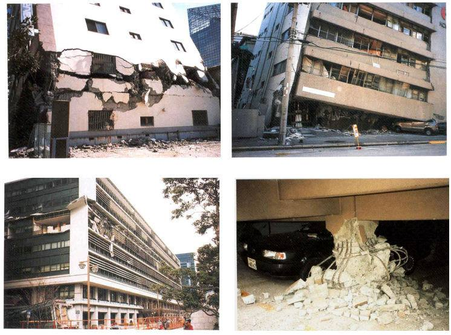</div>
        <figcaption><b>Portada de la unidad.</b> Edificios de hormigón armado dañados por terremotos: pisos blandos colapsados y columnas destruidas. Es la motivación de todo el curso: evitar fallas frágiles. <span class="pg">Llopiz T1, pág. 1</span></figcaption>
      </figure>

      <h3 id="u1-1"><span class="n">I.1</span>Parámetros de comportamiento estructural</h3>
      <h4>I.1.1 Edificio. Acción vs. deformación. Curva de respuesta <span class="pg">· págs. 3–4</span></h4>
      <p>La cuantificación de la respuesta estructural se puede hacer en referencia a cargas gravitatorias, horizontales, o combinadas. Se definen los parámetros de respuesta con una curva que represente el modelo de comportamiento bajo las acciones combinadas. Para el modelo se supone que las cargas verticales (peso propio y sobrecargas de uso) permanecen constantes, y que las horizontales, debidas a la acción sísmica, se incrementan desde cero hasta provocar la falla completa del edificio. Hay que distinguir entre respuesta <strong>global</strong> del edificio, respuesta <strong>local</strong> de los elementos estructurales y respuesta del <strong>material</strong>.</p>

      <figure class="w-md">
        <div class="frame">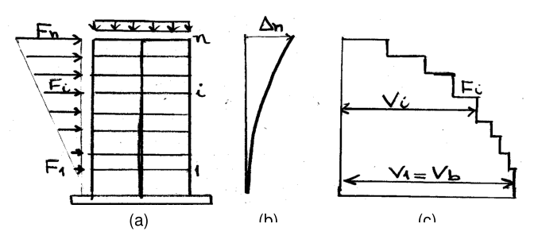</div>
        <figcaption><b>Fig. 1.1.</b> Edificio sometido a acciones horizontales: (a) fuerzas por nivel, (b) desplazamientos, (c) corte por piso. El corte en la base es la suma de todas las fuerzas: V₁ = V<sub>b</sub>. <span class="pg">Llopiz T1, pág. 3</span></figcaption>
      </figure>

      <p>Para ambos tipos de respuesta, global y local, se representa en ordenadas la variable <strong>estática</strong> (asociada a equilibrio: fuerza, momento) y en abscisas la variable <strong>cinemática</strong> (asociada a compatibilidad: desplazamientos, deformaciones, rotaciones), y lo que las vincula es algún tipo de ley constitutiva. En los capítulos siguientes se trabajará con respuestas locales (momento vs. rotación, momento vs. curvatura, corte vs. distorsión) para los elementos y sus secciones, y con tensión vs. deformación para los materiales.</p>
      <p>Para la respuesta global de un edificio de varios pisos, lo usual es representar el cortante total del edificio vs. el desplazamiento de la última losa. Se supone que las cargas verticales no varían y que el edificio es "empujado" por fuerzas horizontales que crecen desde cero en forma:</p>
      <ul class="body">
        <li><strong>estática:</strong> se aplican lentamente, sin generar fuerzas de inercia asociadas a aceleraciones;</li>
        <li><strong>monotónica:</strong> van siempre en el mismo sentido, no hay reversión;</li>
        <li><strong>proporcional:</strong> todas las cargas horizontales aumentan manteniendo la relación entre ellas.</li>
      </ul>
      <p>En la literatura inglesa este análisis se llama <strong>"push-over"</strong>. Aunque esté lejos de representar lo que sucede durante un sismo, es muy instructivo y sirve para clarificar los conceptos de rigidez, resistencia y ductilidad. La Fig. 1.2, de información japonesa, muestra la diferencia entre comportamiento lineal y no lineal: al desaparecer la acción, en el primer caso no quedan prácticamente deformaciones permanentes; en el segundo, según el grado de incursión inelástica, la verticalidad del edificio queda afectada.</p>

      <figure class="w-sm">
        <div class="frame">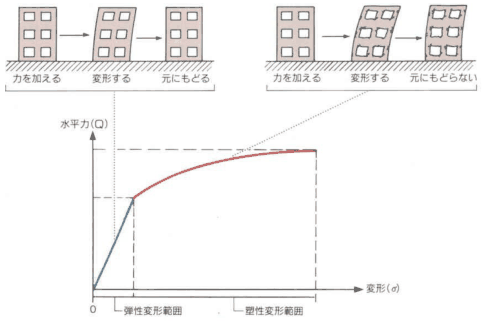</div>
        <figcaption><b>Fig. 1.2.</b> Comportamiento lineal y no lineal. En el lineal, al retirar la carga el edificio vuelve a su lugar; en el no lineal queda con deformación permanente y pierde verticalidad. <span class="pg">Llopiz T1, pág. 3 (fuente japonesa)</span></figcaption>
      </figure>

      <p>La Fig. 1.3 muestra curvas de respuesta observada (<em>observed response</em>) y su simplificación (<em>idealized responses</em>). La observada resultaría, por ejemplo, de un ensayo push-over o de la envolvente de un ensayo dinámico; también podría obtenerse por procedimientos analíticos. Las curvas idealizadas permiten definir hitos que separan características de la respuesta e identifican los estados límites. En ordenadas se colocó directamente la variable "resistencia".</p>

      <figure class="w-sm">
        <div class="frame">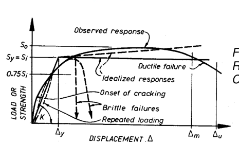</div>
        <figcaption><b>Fig. 1.3.</b> Respuesta global observada e idealizada. Marca la sobrerresistencia S<sub>o</sub>, la resistencia de fluencia S<sub>y</sub> ≈ S<sub>i</sub>, el nivel <b>0,75·S<sub>i</sub></b> que define la rigidez, y los desplazamientos Δ<sub>y</sub>, Δ<sub>m</sub> y Δ<sub>u</sub>. Las líneas que caen de golpe son fallas frágiles. <span class="pg">Llopiz T1, pág. 3 · Paulay y Priestley (1992)</span></figcaption>
      </figure>

      <h4>I.1.2 Parámetros estructurales globales <span class="pg">· págs. 4–6</span></h4>
      <p>Los tres parámetros que es necesario identificar para comprender los estados límites del diseño son la <strong>rigidez</strong>, la <strong>resistencia</strong> y la <strong>ductilidad</strong>.</p>
      <p><strong>Rigidez.</strong> Relaciona directamente las fuerzas con los desplazamientos, y sirve principalmente para verificar el estado límite de servicio. En la rigidez global intervienen los módulos de elasticidad de los materiales, las características geométricas de los elementos y la topología (distribución y conexiones) de la estructura en su conjunto; no debe olvidarse que la estructura no es algo plano sino tridimensional. En hormigón armado y mampostería la evaluación de la rigidez no es tan simple como en una estructura metálica: la fisuración, la deformación diferida y la contribución en tracción del hormigón y los mampuestos presentan bastantes incertidumbres.</p>
      <p>Tomando cualquiera de las curvas bilineales de la Fig. 1.3, con Δ<sub>y</sub> el desplazamiento de "fluencia" asociado a la resistencia S<sub>y</sub>, la pendiente <span class="f">K = S<sub>y</sub>/Δ<sub>y</sub></span> cuantifica la rigidez inicial global del edificio en la dirección analizada. Hay distintos criterios para definir el punto de fluencia; la ref. [2] (Paulay y Priestley) toma la rigidez secante referida al valor de <strong>0,75·S<sub>i</sub></strong>, con S<sub>i</sub> la resistencia "ideal" o de fluencia. Al valor de K resultante se lo llama <strong>"rigidez efectiva"</strong>, y es el que interesa al verificar el estado límite de servicio; una de las condiciones más comunes es la de desplazamientos relativos entre pisos, que los reglamentos limitan.</p>
      <p><strong>Resistencia.</strong> Está dada por la máxima carga, generalmente expresada a través del esfuerzo de corte en la base, que la estructura puede soportar bajo la combinación de cargas verticales y horizontales. Para evitar una pronta incursión inelástica, los elementos deben tener resistencia suficiente para las acciones internas que se generan durante la respuesta dinámica. Más adelante se verán diferentes niveles de resistencia que es necesario distinguir para las diferentes etapas del proceso de diseño. El nivel mínimo de resistencia se indica en la Fig. 1.3 con S<sub>i</sub>, resistencia ideal (más adelante, resistencia nominal), que corresponde a la resistencia de fluencia. La resistencia por encima de S<sub>i</sub> se llama <strong>sobrerresistencia, S<sub>o</sub></strong>; estimarla durante el diseño tiene mucha importancia para aplicar el diseño por capacidad.</p>
      <div class="box nota">
        <span class="lbl">Aclaración · niveles de resistencia (Llopiz, sección 1.4)</span>
        <p>Los niveles que Llopiz anuncia acá se definen en la <a href="#u1-4">sección 1.4</a>. Ordenados de menor a mayor:</p>
        <ul>
          <li><strong>Requerida, S<sub>r</sub> = S<sub>u</sub>:</strong> la demanda que sale del análisis estructural con las acciones combinadas. Es lo que hay que satisfacer.</li>
          <li><strong>De diseño, S<sub>d</sub> = φ·S<sub>n</sub>:</strong> la nominal reducida por φ, el "suministro mínimo confiable". Debe cumplir S<sub>d</sub> ≥ S<sub>r</sub>.</li>
          <li><strong>Nominal, S<sub>n</sub>:</strong> la resistencia "de código". Es la que surge de aplicar las hipótesis del código (reglamento) con las dimensiones, las armaduras y las resistencias especificadas de los materiales. En la Fig. 1.3, la resistencia ideal S<sub>i</sub> es la que "más adelante se designa como nominal".</li>
          <li><strong>Media o esperada, S<sub>E</sub>:</strong> el promedio de los ensayos. Se usa en sismo para estimar mejor deformaciones y ductilidades.</li>
          <li><strong>Sobrerresistencia o extrema, S<sub>o</sub> = φ<sub>o</sub>·S<sub>n</sub>:</strong> la que tiene muy baja probabilidad de ser superada en el terremoto de diseño (acero por encima de f<sub>y</sub>, endurecimiento, edad, confinamiento, velocidad de deformación). En la Fig. 1.3 es la S<sub>o</sub> por encima de S<sub>i</sub>. Es la base del diseño por capacidad.</li>
          <li><strong>Ideal, S<sub>i</sub></strong> (en el sentido de Paulay y Priestley): la mejor predicción de un ensayo con las propiedades <em>medidas</em> de los materiales. Sirve para calibrar ecuaciones.</li>
        </ul>
        <p>La Fig. 1.18 muestra cómo se ubican sobre la campana de frecuencias.</p>
      </div>
      <p><strong>Ductilidad.</strong> Para que el edificio quede en pie después de un gran sismo, su estructura debe sobrellevar grandes deformaciones sin que su resistencia se vea seriamente afectada. La habilidad de ofrecer resistencia en el rango no lineal se denomina ductilidad; implica sostener grandes deformaciones y capacidad para absorber y disipar energía ante reversión de cargas y/o desplazamientos (comportamiento histerético). Para muchos autores es la propiedad más importante que el diseñador debe proveer en zonas de alto riesgo sísmico.</p>
      <p>El límite de la ductilidad disponible, Δ<sub>u</sub> en la Fig. 1.3, se asocia generalmente a un límite especificado de degradación de resistencia. Aunque muchas veces se lo relaciona con la falla, en la mayoría de los casos hay una reserva de capacidad antes del colapso; las deformaciones permanentes podrían, sin embargo, dejar el edificio totalmente fuera de servicio.</p>
      <p>En la Fig. 1.3 se contrasta una falla dúctil con fallas frágiles (líneas de trazo descendentes). Las fallas frágiles implican pérdida completa de la resistencia; en hormigón armado, generalmente desintegración del hormigón, sin ningún tipo de aviso. Este comportamiento debe ser evitado: es el que causó la mayoría de los colapsos durante terremotos y, por lo tanto, de las pérdidas de vidas.</p>
      <p>La ductilidad se cuantifica con el factor de ductilidad, relación entre el desplazamiento total impuesto y el de inicio de fluencia:</p>
      <div class="eq"><math display="block"><mrow><mi>μ</mi><mo>=</mo><mfrac><mrow><mi>Δ</mi></mrow><mrow><msub><mi>Δ</mi><mi>y</mi></msub></mrow></mfrac></mrow></math><span class="tag">(1.1)</span></div>
      <p>Las variables cinemáticas pueden ser desplazamientos, rotaciones, curvaturas o deformaciones específicas. En la respuesta global hay que verificar que la máxima demanda de ductilidad durante el sismo, <span class="f">μ<sub>m</sub> = Δ<sub>m</sub>/Δ<sub>y</sub></span>, no supere la máxima ductilidad disponible, <span class="f">μ<sub>u</sub> = Δ<sub>u</sub>/Δ<sub>y</sub></span>. No siempre es posible usar toda la ductilidad disponible, porque implicaría deformaciones que pondrían en peligro la estabilidad o un daño inadmisible a elementos no estructurales; por eso las normas limitan los desplazamientos máximos.</p>

      <div class="box torrisi">
        <span class="lbl">Aporte de Torrisi · pág. 19</span>
        <p>"En caso de aplicarse a variables seccionales podría ser la curvatura nominal respecto a la curvatura de fluencia de la sección."</p>
      </div>
      <div class="box nota">
        <span class="lbl">Aclaración</span>
        <p>En la ductilidad de curvatura se usa la curvatura <strong>última</strong> (o máxima): μ<sub>φ</sub> = φ<sub>u</sub>/φ<sub>y</sub>.</p>
      </div>

      <h3 id="u1-2"><span class="n">I.2</span>Definición de acciones de diseño</h3>
      <p>Para los análisis de cargas y fuerzas se reconocen, según el CIRSOC 201-05, las siguientes acciones (entre paréntesis, la designación del ACI-318): cargas permanentes (<em>Dead Loads</em>, D), cargas útiles o sobrecargas (<em>Live Loads</em>, L), fuerzas sísmicas (<em>Earthquake Forces</em>, E), fuerzas de viento (<em>Wind Forces</em>, W) y otras cargas. <span class="pg">pág. 6</span></p>

      <h4>I. Cargas permanentes <span class="pg">· pág. 7</span></h4>
      <p>Resultan del peso propio de la estructura y de otros elementos adheridos en forma permanente: contrapisos, pisos, paneles divisorios, cielorrasos. El peso propio se cuantifica en principio a partir del predimensionado, y se verifica y ajusta con el diseño final. Para los materiales adosados hay manuales y normas con pesos típicos, por ejemplo el CIRSOC 101, cap. 3, tabla 1.</p>

      <h4>II. Cargas de uso o sobrecargas <span class="pg">· pág. 7</span></h4>
      <p>Resultan del uso o función de la construcción. Pueden ser móviles y variar en intensidad; los máximos de los códigos se basan en estimaciones probabilísticas. En la mayoría de los casos se simulan como uniformemente distribuidas sobre el área de piso, aunque a veces hay que considerar cargas puntuales (común en edificios industriales). La probabilidad de que un área completa esté a la máxima intensidad disminuye cuando el área cargada aumenta, como en los pisos de oficinas. Es recomendable diseñar las losas para la carga accidental total, pero las columnas y vigas con gran área tributaria podrían diseñarse con una reducción. La NZS 4203:1992 propone:</p>
      <div class="eq"><math display="block"><mrow><msub><mi>L</mi><mi>r</mi></msub><mo>=</mo><mi>r</mi><mo>·</mo><mi>L</mi></mrow></math><span class="tag">(1.4)</span></div>
      <div class="eq"><math display="block"><mrow><mtext>Depósitos y servicios: </mtext><mspace width="0.28em"/><mi>r</mi><mo>=</mo><mn>0,50</mn><mo>+</mo><mfrac><mrow><mn>4,6</mn></mrow><mrow><msqrt><mi>A</mi></msqrt></mrow></mfrac><mo>≤</mo><mn>1</mn></mrow></math><span class="tag">(1.5.1)</span></div>
      <div class="eq"><math display="block"><mrow><mtext>Otros usos: </mtext><mspace width="0.28em"/><mi>r</mi><mo>=</mo><mn>0,40</mn><mo>+</mo><mfrac><mrow><mn>2,7</mn></mrow><mrow><msqrt><mi>A</mi></msqrt></mrow></mfrac><mo>≤</mo><mn>1</mn></mrow></math><span class="tag">(1.5.2)</span></div>
      <p>Para A = 90 m² la (1.5.1) da r ≈ 1,0 y para A = 100 m², r = 0,96: se requieren grandes áreas para tener alguna reducción. En cambio, con la (1.5.2), A = 20 m² da r ≈ 1,0 y A = 30 m², r ≈ 0,90. El CIRSOC 101, sección 4.2, permite reducir la carga viva en edificios de varios pisos destinados a viviendas, por la improbabilidad de sobrecarga simultánea en todas las plantas; para edificios públicos y oficinas no acepta ninguna reducción.</p>
      <div class="box old">
        <span class="lbl">Desactualizado · CIRSOC 201-25, art. 5.2.3</span>
        <p>El apunte cita el <strong>CIRSOC 101 de 1982</strong>, que solo admitía reducir en viviendas de varios pisos. Hoy rige el <strong>CIRSOC 101-2025, art. 4.7</strong> (formato ASCE 7), que permite reducir también en oficinas:</p>
        <div class="eq"><math display="block"><mrow><mi>L</mi><mo>=</mo><msub><mi>L</mi><mi>o</mi></msub><mo stretchy="true">(</mo><mn>0,25</mn><mo>+</mo><mfrac><mrow><mn>4,57</mn></mrow><mrow><msqrt><msub><mi>K</mi><mrow><mi mathvariant="normal">LL</mi></mrow></msub><mspace width="0.17em"/><msub><mi>A</mi><mi>t</mi></msub></msqrt></mrow></mfrac><mo stretchy="true">)</mo></mrow></math><span class="tag">(4.1)</span></div>
        <ul>
          <li>Se aplica si <strong>K<sub>LL</sub>·A<sub>t</sub> ≥ 37 m²</strong> (A<sub>t</sub> es el área tributaria). El resultado no puede ser menor que <strong>0,5 L<sub>o</sub></strong> en elementos que soportan un piso, ni que <strong>0,4 L<sub>o</sub></strong> si soportan dos o más.</li>
          <li><strong>K<sub>LL</sub></strong> (Tabla 4.2): columnas interiores y exteriores sin voladizo, 4 · columnas de borde con voladizo, 3 · columnas de esquina con voladizo y vigas interiores o de borde sin voladizo, 2 · resto (losas, vigas en voladizo), 1.</li>
          <li><strong>No se reduce:</strong> sobrecargas mayores a 5 kN/m² y garajes (salvo 20 % en elementos que soportan dos o más pisos) · lugares de reunión pública con L ≤ 5 kN/m² · losas en una dirección (con límites al área tributaria).</li>
          <li>Ejemplo: una columna interior de un piso con A<sub>t</sub> = 36 m² tiene K<sub>LL</sub>·A<sub>t</sub> = 144 m², y el factor da 0,63.</li>
        </ul>
        <p>Aparte, el 201-25 (art. 5.3.3) y el 101-25 (art. 2.3.2) permiten usar <strong>0,5 L</strong> en las combinaciones con viento o sismo, excepto en garajes, lugares de reunión pública y L<sub>o</sub> &gt; 5 kN/m². Las dos reducciones se pueden combinar.</p>
      </div>
      <p>Para las características dinámicas (masa y período) hay que estimar las cargas permanentes y de uso. Para las fuerzas de inercia en un nivel, alcanza con suponer que la masa del sistema de pisos (terminaciones, divisiones, vigas y la mitad de las columnas y muros de abajo y de arriba) está concentrada en el centro de masas de la losa, con una masa extra que corresponde a una fracción de la carga accidental. La NZS 4203 calcula el peso de cada nivel como:</p>
      <div class="eq"><math display="block"><mrow><msub><mi>W</mi><mi>i</mi></msub><mo>=</mo><mi>D</mi><mo>+</mo><mi>η</mi><mspace width="0.17em"/><msub><mi>L</mi><mi>r</mi></msub></mrow></math><span class="tag">(1.6)</span></div>
      <p>con η = 0,0, 0,6 y 0,4 para techos, depósitos y el resto de los casos. El INPRES-CIRSOC toma valores de 0; 0,25; 0,50; 0,75 y 1,0 según su tabla 6.</p>
      <div class="box nota">
        <span class="lbl">Vigente · IC 103 Parte I 2018, Tabla 3.3</span>
        <p>Los valores coinciden con los del apunte; el reglamento vigente los llama <strong>f<sub>1</sub></strong>: 0 (azoteas solo de mantenimiento) · 0,25 (vivienda, hoteles, oficinas) · 0,50 (edificios públicos, tiendas, templos, cines, escuelas) · 0,75 (depósitos, archivos) · 1,00 (tanques y silos, verificación local de partes). Nieve, f<sub>2</sub>: 0,70 en cubiertas que no evacuan la nieve, 0,20 en el resto.</p>
      </div>

      <h4>III. Fuerzas sísmicas <span class="pg">· págs. 8–9</span></h4>
      <p>El método más empleado es el de las <strong>fuerzas horizontales estáticas equivalentes</strong>. Aunque su aplicación está limitada a ciertas condiciones, se prefiere por su simplicidad, porque da buenos resultados en edificios simples y simétricos y porque es el más familiar para los diseñadores. Primero se calcula la fuerza sísmica total como corte en la base:</p>
      <div class="eq"><math display="block"><mrow><msub><mi>V</mi><mi>b</mi></msub><mo>=</mo><mi>C</mi><mo>·</mo><msub><mi>W</mi><mi>t</mi></msub></mrow></math><span class="tag">(1.7)</span></div>
      <p><strong>C</strong> es el coeficiente sísmico: conceptualmente, una aceleración expresada como porcentaje de la gravedad. Es función de la zona sísmica, del período del edificio, de la importancia de la construcción, del tipo de suelo, del estado límite de diseño y del factor de reducción de acciones, R. <strong>W<sub>t</sub> = ΣW<sub>i</sub></strong> es el peso de toda la masa que se moviliza durante el sismo.</p>

      <figure class="w-md">
        <div class="frame">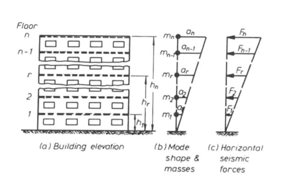</div>
        <figcaption><b>Fig. 1.17.</b> Modelo para asignar masas y fuerzas: (a) elevación, (b) masas concentradas por nivel y forma modal, (c) fuerzas horizontales en triángulo invertido. <span class="pg">Llopiz T1, pág. 8</span></figcaption>
      </figure>

      <p>El corte basal se distribuye en la altura; en general se acepta una configuración de triángulo invertido:</p>
      <div class="eq"><math display="block"><mrow><msub><mi>F</mi><mi>r</mi></msub><mo>=</mo><mi>α</mi><mspace width="0.17em"/><msub><mi>V</mi><mi>b</mi></msub><mfrac><mrow><msub><mi>W</mi><mi>r</mi></msub><msub><mi>h</mi><mi>r</mi></msub></mrow><mrow><mo largeop="true">∑</mo><msub><mi>W</mi><mi>i</mi></msub><msub><mi>h</mi><mi>i</mi></msub></mrow></mfrac><mspace width="1em"/><mtext>(todos los niveles salvo el último)</mtext></mrow></math><span class="tag">(1.8.1)</span></div>
      <div class="eq"><math display="block"><mrow><msub><mi>F</mi><mi>n</mi></msub><mo>=</mo><mo stretchy="false">(</mo><mn>1</mn><mo>−</mo><mi>α</mi><mo stretchy="false">)</mo><mspace width="0.17em"/><msub><mi>V</mi><mi>b</mi></msub><mo>+</mo><mi>α</mi><mspace width="0.17em"/><msub><mi>V</mi><mi>b</mi></msub><mfrac><mrow><msub><mi>W</mi><mi>n</mi></msub><msub><mi>h</mi><mi>n</mi></msub></mrow><mrow><mo largeop="true">∑</mo><msub><mi>W</mi><mi>i</mi></msub><msub><mi>h</mi><mi>i</mi></msub></mrow></mfrac><mspace width="1em"/><mtext>(nivel n)</mtext></mrow></math><span class="tag">(1.8.2)</span></div>
      <p>α incorpora la influencia de los modos de vibrar adicionales al fundamental T<sub>0</sub>. El INPRES-CIRSOC establece α = 1,0 para T<sub>0</sub> ≤ 2T<sub>2</sub>, y para T<sub>0</sub> ≥ 2T<sub>2</sub>:</p>
      <div class="eq"><math display="block"><mrow><mi>α</mi><mo>=</mo><mn>1</mn><mo>−</mo><mfrac><mrow><msub><mi>T</mi><mn>0</mn></msub><mo>−</mo><mn>2</mn><msub><mi>T</mi><mn>2</mn></msub></mrow><mrow><mn>10</mn><mspace width="0.17em"/><msub><mi>T</mi><mn>0</mn></msub></mrow></mfrac></mrow></math><span class="tag">(1.9)</span></div>
      <p>siendo T<sub>2</sub> el período del fin del plafón del espectro elástico. Por ejemplo, para suelo intermedio en Mendoza (zona 4, T<sub>2</sub> = 0,60 s), α = 1,0 cuando el período fundamental es menor de 1,20 s. La ref. [2] da, para edificios de más de 10 pisos:</p>
      <div class="eq"><math display="block"><mrow><msub><mi>F</mi><mi>r</mi></msub><mo>=</mo><mn>0,90</mn><mspace width="0.17em"/><msub><mi>V</mi><mi>b</mi></msub><mfrac><mrow><msub><mi>W</mi><mi>r</mi></msub><msub><mi>h</mi><mi>r</mi></msub></mrow><mrow><mo largeop="true">∑</mo><msub><mi>W</mi><mi>i</mi></msub><msub><mi>h</mi><mi>i</mi></msub></mrow></mfrac><mspace width="2em"/><msub><mi>F</mi><mi>n</mi></msub><mo>=</mo><mn>0,10</mn><mspace width="0.17em"/><msub><mi>V</mi><mi>b</mi></msub><mo>+</mo><mn>0,90</mn><mspace width="0.17em"/><msub><mi>V</mi><mi>b</mi></msub><mfrac><mrow><msub><mi>W</mi><mi>n</mi></msub><msub><mi>h</mi><mi>n</mi></msub></mrow><mrow><mo largeop="true">∑</mo><msub><mi>W</mi><mi>i</mi></msub><msub><mi>h</mi><mi>i</mi></msub></mrow></mfrac></mrow></math><span class="tag">(1.11)</span></div>
      <div class="box old">
        <span class="lbl">Desactualizado · IC 103 Parte I 2018, cap. 6</span>
        <p>El T<sub>2</sub> = 0,60 s, los tipos de suelo y el factor α corresponden al <strong>INPRES-CIRSOC 103 de 1991–1993</strong>. En la Parte I 2018:</p>
        <ul>
          <li>V<sub>o</sub> = C·W, con <span class="f">C = 2,5·C<sub>a</sub>·γ<sub>r</sub>/R</span> para T ≤ T<sub>2</sub> y <span class="f">C = S<sub>a</sub>·γ<sub>r</sub>/R</span> para T &gt; T<sub>2</sub>, y valores mínimos. El espectro tiene seis tipos de sitio; γ<sub>r</sub> es el factor de riesgo.</li>
          <li>No hay factor α: <span class="f">F<sub>k</sub> = W<sub>k</sub>h<sub>k</sub>·V<sub>o</sub>/ΣW<sub>i</sub>h<sub>i</sub></span>. Si T &gt; 2T<sub>2</sub> se usa 0,9·V<sub>o</sub> distribuido y 0,1·V<sub>o</sub> en la última masa.</li>
          <li>La adenda cambia "T &gt; 2T<sub>2</sub>" por "T &gt; 1,0 s", pero está redactada sobre la edición 2013 y el texto 2018 conserva "2T<sub>2</sub>" <span class="chip">a verificar</span>.</li>
        </ul>
      </div>

      <h4>IV. Fuerzas de viento <span class="pg">· págs. 9–10</span></h4>
      <p>Las fuerzas de diseño sísmico, reducidas por la capacidad de disipación de energía (ductilidad) del edificio, pueden ser varias veces menores que las de respuesta elástica. Por eso, en un edificio de mucha altura, bastante flexible y muy expuesto al viento, las fuerzas de viento combinadas con las gravitatorias podrían controlar el diseño. Si bien contra el viento no hay requerimientos de ductilidad, dadas las incertidumbres del terremoto es conveniente asegurar un buen diseño y controlar que el modo de falla potencial del edificio suministre la mayor ductilidad posible; para eso es necesario el diseño por capacidad. Para las estructuras de hormigón armado de nuestro medio el viento no controla el diseño (salvo en el techo, si es de estructura liviana), por lo que no se profundiza. El CIRSOC 102 contiene las exigencias para viento.</p>
      <div class="box old">
        <span class="lbl">Desactualizado · CIRSOC 201-25, art. 5.3.5</span>
        <p>El apunte cita el <strong>CIRSOC 102 de 1984</strong> y el <strong>CIRSOC 104 de 1982</strong>. Hoy rige el <strong>CIRSOC 102-2025</strong>, que da el viento a nivel de resistencia, con factor de carga <strong>1,0</strong> (el 1,6 W corresponde a viento de servicio, como en el CIRSOC 102-05). Para nieve y hielo, el 201-25 remite al CIRSOC 104-2026.</p>
      </div>

      <h4>V. Otras fuerzas <span class="pg">· pág. 10</span></h4>
      <p>Las especifica la ref. [8] (CIRSOC 101): choque de vehículos contra muros, esfuerzos horizontales en barandas, sobrecargas de ascensores, montacargas y elevadores. El CIRSOC 104 tiene las exigencias de nieve y hielo. También se deben considerar los efectos de <strong>contracción y fluencia lenta</strong> del hormigón y los de <strong>diferencias de temperatura</strong>, que se verán con las propiedades del hormigón.</p>

      <h3 id="u1-3"><span class="n">1.3</span>Combinación de las acciones</h3>
      <h4>Criterios generales. Tensiones admisibles vs. resistencia <span class="pg">· pág. 10</span></h4>
      <p>Las cargas no actúan aisladas sino combinadas en proporciones asociadas a los estados límites a verificar. Hasta hace unos años era común verificar con el método de <strong>tensiones admisibles</strong>: las acciones no se mayoraban y la seguridad se ponía en los materiales. En la actualidad se usan casi exclusivamente los métodos basados en <strong>resistencia y capacidad</strong>; por ejemplo, el ACI-318 establece que en cualquier sección la resistencia se compara con las solicitaciones de las acciones combinadas y mayoradas. En Hormigón I solo se consideran las cargas permanentes D, accidentales L y de terremoto E.</p>

      <h4>I. Reglamento INPRES-CIRSOC 103-2013, con la adenda de febrero de 2018 <span class="pg">· págs. 10–11</span></h4>
      <div class="eq"><math display="block"><mrow><mi>U</mi><mo>=</mo><mn>1,00</mn><mspace width="0.17em"/><mi>D</mi><mo>±</mo><mn>1,00</mn><mspace width="0.17em"/><mi>E</mi><mo>+</mo><msub><mi>f</mi><mn>1</mn></msub><mi>L</mi><mo>+</mo><msub><mi>f</mi><mn>2</mn></msub><mi>S</mi></mrow></math><span class="tag">(1.12.1)</span></div>
      <ul class="body">
        <li>f<sub>1</sub>, factor de mayoración de la sobrecarga: <strong>1,00</strong> en lugares de concentración de público donde la sobrecarga sea mayor a 5,00 kN/m² y en playas de estacionamiento; <strong>0,50</strong> para otras sobrecargas.</li>
        <li>f<sub>2</sub>, factor de mayoración de la nieve: <strong>0,70</strong> en configuraciones de techo que no permiten evacuar la nieve (dientes de sierra); <strong>0,20</strong> en otras.</li>
      </ul>
      <div class="box old">
        <span class="lbl">Actualización · IC 103 Parte II 2021, art. 1.3</span>
        <p>Para hormigón armado rige <span class="f">1,0 D ± 1,0 E + f<sub>1</sub>·L + f<sub>2</sub>·S</span>, con <strong>E = E<sub>H</sub> ± E<sub>V</sub></strong> y <strong>E<sub>V</sub> = (C<sub>a</sub>/2)·γ<sub>r</sub>·D</strong>. f<sub>1</sub> y f<sub>2</sub> salen de la Tabla 3.3 de la Parte I 2018 (f<sub>1</sub> de 0 a 1,0 según el destino), no del 1,0/0,5 del apunte. La Parte I 2018, general para todos los materiales, escribe 1,20 D ± 1,00 E + f<sub>1</sub>L + f<sub>2</sub>S y 0,9 D ± 1,00 E.</p>
      </div>

      <h4>II. Código ACI-318 (sección 9.2.1), 2005 <span class="pg">· pág. 11</span></h4>
      <div class="eq"><math display="block"><mrow><mi>U</mi><mo>=</mo><mn>1,40</mn><mspace width="0.17em"/><mi>D</mi><mspace width="2em"/><mi>U</mi><mo>=</mo><mn>1,20</mn><mspace width="0.17em"/><mi>D</mi><mo>+</mo><mn>1,60</mn><mspace width="0.17em"/><mi>L</mi><mspace width="2em"/><mi>U</mi><mo>=</mo><mn>1,05</mn><mspace width="0.17em"/><mi>D</mi><mo>+</mo><mn>1,28</mn><mspace width="0.17em"/><mi>L</mi><mo>±</mo><mi>E</mi><mspace width="2em"/><mi>U</mi><mo>=</mo><mn>0,90</mn><mspace width="0.17em"/><mi>D</mi><mo>±</mo><mi>E</mi></mrow></math><span class="tag">(1.13)</span></div>
      <div class="box err">
        <span class="lbl">Error en el apunte</span>
        <p>Las combinaciones 1,05 D + 1,28 L ± E son del <strong>ACI 318-95/99</strong>: 0,75 × (1,4 D + 1,7 L + 1,87 E) = 1,05 D + 1,275 L + 1,40 E. En el ACI 318-05 son 1,2 D + 1,0 E + f<sub>1</sub>·L y 0,9 D + 1,0 E.</p>
      </div>

      <h4>III. Reglamento NZS 4203 <span class="pg">· pág. 11</span></h4>
      <div class="eq"><math display="block"><mrow><mi>U</mi><mo>=</mo><mn>1,4</mn><mspace width="0.17em"/><mi>D</mi><mspace width="2em"/><mi>U</mi><mo>=</mo><mn>1,2</mn><mspace width="0.17em"/><mi>D</mi><mo>+</mo><mn>1,6</mn><mspace width="0.17em"/><mi>L</mi><mspace width="2em"/><mi>U</mi><mo>=</mo><mn>1,0</mn><mspace width="0.17em"/><mi>D</mi><mo>+</mo><mn>1,0</mn><mspace width="0.17em"/><msub><mi>L</mi><mi>u</mi></msub><mo>±</mo><msub><mi>E</mi><mi>u</mi></msub></mrow></math><span class="tag">(1.14)</span></div>
      <p>con L<sub>u</sub> = ψ<sub>u</sub>·r·L (1.15), la carga viva reducida según (1.4) multiplicada por ψ<sub>u</sub>. Los factores de carga buscan suficiente seguridad contra el incremento de las cargas de servicio más allá de los valores especificados, de modo que la falla sea muy improbable; cuando no se diseña para el estado de servicio, ayudan a que las deformaciones de servicio se mantengan en límites razonables. La NZS 4203, en cambio, especifica dos estados límites. Para el de servicio:</p>
      <div class="eq"><math display="block"><mrow><mi>S</mi><mo>=</mo><mi>D</mi><mo>+</mo><msub><mi>ψ</mi><mi>s</mi></msub><msub><mi>L</mi><mi>s</mi></msub><mspace width="2em"/><mi>S</mi><mo>=</mo><mi>D</mi><mo>+</mo><msub><mi>ψ</mi><mi>s</mi></msub><msub><mi>L</mi><mi>s</mi></msub><mo>±</mo><msub><mi>E</mi><mi>s</mi></msub></mrow></math><span class="tag">(1.16)</span></div>
      <p>donde E<sub>s</sub> es el terremoto a nivel de servicio y L<sub>s</sub> = ψ<sub>s</sub>·r·L (1.17). La NZS 3101 pide diseñar para el estado de servicio limitando flechas, fisuras y vibraciones (requerimientos de rigidez), y para el estado último con adecuada resistencia y ductilidad.</p>

      <h4>Factores de carga y diseño sismorresistente <span class="pg">· pág. 12</span></h4>
      <p>Los factores de carga del diseño por resistencia, hacia 1960, tenían la intención original de evitar que el elemento desarrollara su capacidad resistente bajo las cargas máximas de la vida económica del edificio. Si la filosofía sismorresistente se basa en la reducción de fuerzas por comportamiento (ductilidad, sobrerresistencia), ese concepto no es apropiado, porque se espera que la resistencia se desarrolle con el terremoto de diseño. Aplicar factores de carga a fuerzas ya reducidas del nivel elástico implica una reducción de los requerimientos de ductilidad esperados y obscurece el verdadero nivel de ductilidad solicitado. Por eso la ref. [2] sugiere aplicar factores unitarios a las fuerzas de sismo. Además aclara que, cuando las cargas gravitatorias se combinan con una respuesta dúctil con sobrerresistencia en las zonas plásticas, no es necesario tener reservas de resistencia. Cuando se use el diseño por capacidad sugiere:</p>
      <div class="eq"><math display="block"><mrow><msub><mi>S</mi><mi>u</mi></msub><mo>=</mo><msub><mi>S</mi><mi>D</mi></msub><mo>+</mo><msub><mi>S</mi><mi>L</mi></msub><mo>+</mo><msub><mi>S</mi><mrow><mi mathvariant="normal">Eo</mi></mrow></msub></mrow></math><span class="tag">(1.18.1)</span></div>
      <div class="eq"><math display="block"><mrow><msub><mi>S</mi><mi>u</mi></msub><mo>=</mo><mn>0,9</mn><mspace width="0.17em"/><msub><mi>S</mi><mi>D</mi></msub><mo>+</mo><msub><mi>S</mi><mrow><mi mathvariant="normal">Eo</mi></mrow></msub></mrow></math><span class="tag">(1.18.2)</span></div>
      <p>donde S<sub>Eo</sub> es una acción obtenida de las sobrerresistencias inducidas por el sismo en las correspondientes rótulas plásticas.</p>

      <div class="box torrisi">
        <span class="lbl">Aporte de Torrisi · pág. 14</span>
        <p>Torrisi no trata el sismo y da estas combinaciones:</p>
        <ul>
          <li>U = 1,4 D</li>
          <li>U = 1,2 D + 1,6 L + 0,5 L<sub>r</sub> · U = 1,2 D + 1,6 L + 0,5 S</li>
          <li>U = 1,2 D + 1,6 L<sub>r</sub> + f<sub>1</sub>L · U = 1,2 D + 1,6 L<sub>r</sub> + 0,8 W</li>
          <li>U = 1,2 D + 1,6 S + f<sub>1</sub>L · U = 1,2 D + 1,6 S + 0,8 W</li>
          <li>U = 1,2 D + 1,6 W + f<sub>1</sub>L + 0,5 L<sub>r</sub> · U = 1,2 D + 1,6 W + f<sub>1</sub>L + 0,5 S</li>
          <li>U = 0,9 D + 1,6 W</li>
        </ul>
      </div>
      <div class="box old">
        <span class="lbl">Desactualizado · CIRSOC 201-25, Tabla 5.3.1</span>
        <p>Las combinaciones vigentes son:</p>
        <div class="tbl" style="margin:6px 0 12px"><table>
          <thead><tr><th>Ec.</th><th>Combinación</th><th>Carga primaria</th></tr></thead>
          <tbody>
            <tr><td>5.3.1a</td><td>U = 1,4 D</td><td>D</td></tr>
            <tr><td>5.3.1b</td><td>U = 1,2 D + 1,6 L + 0,5 (L<sub>r</sub> o S o R)</td><td>L</td></tr>
            <tr><td>5.3.1c</td><td>U = 1,2 D + 1,6 (L<sub>r</sub> o S o R) + (1,0 L o 0,5 W)</td><td>L<sub>r</sub>, S o R</td></tr>
            <tr><td>5.3.1d</td><td>U = 1,2 D + 1,0 W + 1,0 L + 0,5 (L<sub>r</sub> o S o R)</td><td>W</td></tr>
            <tr><td>5.3.1e</td><td>U = 1,2 D + 1,0 E + 1,0 L + 0,2 S</td><td>E</td></tr>
            <tr><td>5.3.1f</td><td>U = 0,9 D + 1,0 W</td><td>W</td></tr>
            <tr><td>5.3.1g</td><td>U = 0,9 D + 1,0 E</td><td>E</td></tr>
          </tbody>
        </table></div>
        <ul>
          <li>El viento va con <strong>1,0 W</strong> (0,5 W en la 5.3.1c) y la sobrecarga con <strong>1,0 L</strong>, reducible a 0,5 L (art. 5.3.3) salvo en estacionamientos, reunión pública o L &gt; 5 kN/m².</li>
          <li>F (fluidos), H (empuje de suelo) y T (cambios de volumen y asentamientos) se agregan según los arts. 5.3.6 a 5.3.8.</li>
          <li>Para las combinaciones con sismo, el 201-25 remite al IC 103 Parte II.</li>
        </ul>
      </div>

      <h3 id="u1-4"><span class="n">1.4</span>Definiciones de niveles de resistencia</h3>
      <p>Hay que considerar dos aspectos: para contar con márgenes de seguridad razonables es necesario definir distintos niveles de resistencia, y en términos de diseño la resistencia no es un valor absoluto, porque las características de los materiales y las dimensiones no se conocen con precisión y varían entre probables límites. <span class="pg">págs. 12–14</span></p>
      <p><strong>(a) Resistencia requerida, S<sub>r</sub></strong> (<em>required strength</em>). Es la demanda que hay que satisfacer según las acciones impuestas y resulta del análisis estructural; también se la designa resistencia última, S<sub>u</sub>. Para la flexión de las zonas plásticas seleccionadas resulta directamente del análisis con las combinaciones; con diseño por capacidad puede resultar de las demandas del análisis mayoradas por ciertos factores.</p>
      <p><strong>(b) Resistencia nominal, S<sub>n</sub></strong>, a veces llamada resistencia característica. Se obtiene de las dimensiones, el contenido de armaduras y las características nominales de los materiales especificadas por los códigos. En algunos casos es la resistencia que los proveedores garantizan que se va a exceder. El CIRSOC 201-1982 (A.6.6.2.1) define la resistencia característica del hormigón como aquella por debajo de la cual puede esperarse el 5 % de los ensayos (cuantil 5 %), el mismo criterio de Japón y EE.UU. En el CIRSOC 201-2005 la resistencia característica es mayor, porque el porcentaje pasa al 10 %: un H-17 del CIRSOC 201-1982 equivale a un H-20 o mayor del 2005.</p>
      <div class="box nota">
        <span class="lbl">Aclaración</span>
        <p>"Característica" corresponde a una propiedad del <strong>material</strong> (f'<sub>c</sub>, f<sub>y</sub>); "nominal", a la resistencia de la <strong>sección</strong> (M<sub>n</sub>, V<sub>n</sub>) calculada con esos valores.</p>
      </div>
      <div class="box old">
        <span class="lbl">Cambió de reglamento<span class="chip">a verificar</span></span>
        <p>El CIRSOC 201-25 define f'<sub>c</sub> solo como la "resistencia a la compresión utilizada en el cálculo". La parte estadística (conformidad, cuantiles) pasó al <strong>CIRSOC 200-2024</strong> (tecnología del hormigón).</p>
      </div>
      <p><strong>(c) Resistencia media o esperada, S<sub>E</sub>.</strong> Representa el promedio de los ensayos disponibles. En ciertas circunstancias se justifica usarla en diseño sísmico, porque da mejores estimaciones de deformaciones y ductilidades.</p>
      <p><strong>(d) Resistencia de diseño, S<sub>d</sub>.</strong> Se obtiene multiplicando la resistencia nominal por los factores de reducción de resistencia φ. Es la que debe compararse con la demanda S<sub>r</sub> y ser mayor; representa el "suministro mínimo confiable":</p>
      <div class="eq"><math display="block"><mrow><msub><mi>S</mi><mi>d</mi></msub><mo>=</mo><mi>φ</mi><mo>·</mo><msub><mi>S</mi><mi>n</mi></msub><mo>≥</mo><msub><mi>S</mi><mi>r</mi></msub><mo>=</mo><msub><mi>S</mi><mi>u</mi></msub></mrow></math><span class="tag">(1.19)</span></div>
      <p>Los factores de reducción tienen por objeto: (I) considerar la probabilidad de elementos con menor resistencia por variación de materiales y dimensiones; (II) tener en cuenta la inexactitud de las ecuaciones de diseño; (III) reflejar el grado de ductilidad y la confiabilidad requerida para el elemento; (IV) reflejar la importancia del elemento en la estructura. Los valores del CIRSOC 201-05 son:</p>
      <div class="tbl"><table>
        <thead><tr><th>Solicitación</th><th class="num">φ</th></tr></thead>
        <tbody>
          <tr><td>Flexión, con o sin tracción (ε<sub>t</sub> &gt; 0,005)</td><td class="num">0,90</td></tr>
          <tr><td>Compresión y flexocompresión (ε<sub>t</sub> &lt; 0,002), elementos zunchados</td><td class="num">0,70</td></tr>
          <tr><td>Compresión y flexocompresión (ε<sub>t</sub> &lt; 0,002), otra forma de estribos</td><td class="num">0,65</td></tr>
          <tr><td>Corte y torsión</td><td class="num">0,75</td></tr>
          <tr><td>Aplastamiento en el hormigón</td><td class="num">0,65</td></tr>
        </tbody>
      </table></div>
      <p>Entre 0,90 y los valores de compresión se establece una transición en función de ε<sub>t</sub>, "según se verá luego".</p>

      <div class="box torrisi">
        <span class="lbl">Aporte de Torrisi · pág. 16</span>
        <figure style="margin:4px 0 12px">
          <div class="frame">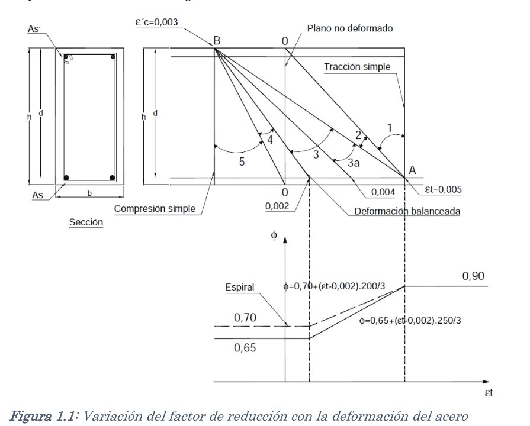</div>
          <figcaption><b>Torrisi, Fig. 1.1.</b> Variación de φ con la deformación del acero más traccionado. <span class="pg">Torrisi, pág. 16</span></figcaption>
        </figure>
        <ul>
          <li>Estribos: <span class="f">φ = 0,65 + (ε<sub>t</sub> − 0,002)·250/3</span></li>
          <li>Espiral: <span class="f">φ = 0,70 + (ε<sub>t</sub> − 0,002)·200/3</span></li>
        </ul>
      </div>
      <div class="box old">
        <span class="lbl">Desactualizado · CIRSOC 201-25, Tablas 21.2.1 y 21.2.2</span>
        <div class="tbl" style="margin:6px 0 12px"><table>
          <thead><tr><th>ε<sub>t</sub></th><th>Clasificación</th><th class="num">Zuncho</th><th class="num">Otro (estribos)</th></tr></thead>
          <tbody>
            <tr><td>ε<sub>t</sub> ≤ ε<sub>ty</sub></td><td>Controlada por compresión</td><td class="num"><strong>0,75</strong></td><td class="num">0,65</td></tr>
            <tr><td>ε<sub>ty</sub> &lt; ε<sub>t</sub> &lt; ε<sub>ty</sub> + 0,003</td><td>Transición</td><td class="num">0,75 + 0,15(ε<sub>t</sub> − ε<sub>ty</sub>)/0,003</td><td class="num">0,65 + 0,25(ε<sub>t</sub> − ε<sub>ty</sub>)/0,003</td></tr>
            <tr><td>ε<sub>t</sub> ≥ ε<sub>ty</sub> + 0,003</td><td>Controlada por tracción</td><td class="num">0,90</td><td class="num">0,90</td></tr>
          </tbody>
        </table></div>
        <ul>
          <li>Con zuncho, φ pasa de 0,70 a <strong>0,75</strong>.</li>
          <li>ε<sub>ty</sub> = f<sub>y</sub>/E<sub>s</sub>; para ADN 420 se permite tomar 0,002, con lo que el límite de tracción controlada sigue siendo 0,005.</li>
          <li>Desaparece el mínimo ε<sub>t</sub> = 0,004 en vigas (el 0,004 de la figura de Torrisi): las vigas no pretensadas con P<sub>u</sub> &lt; 0,10 f'<sub>c</sub>A<sub>g</sub> deben ser controladas por tracción (art. 9.3.3.1).</li>
          <li>Otros valores: corte 0,75 · torsión 0,75 · aplastamiento 0,65 · puntal-tensor 0,75 · hormigón simple 0,60. Para elementos sismorresistentes, el art. 21.2.4 remite al IC 103 Parte II.</li>
        </ul>
      </div>

      <p>Cuando la combinación de acciones con sismo controla el diseño, es decir, las demandas superan a las de acciones verticales solamente, reemplazan a los factores φ del CIRSOC 201 los que establece el <strong>INPRES-CIRSOC 103 Parte II (2021), art. 1.5.1.2, Tabla 1.2</strong>:</p>
      <figure class="w-md">
        <div class="frame">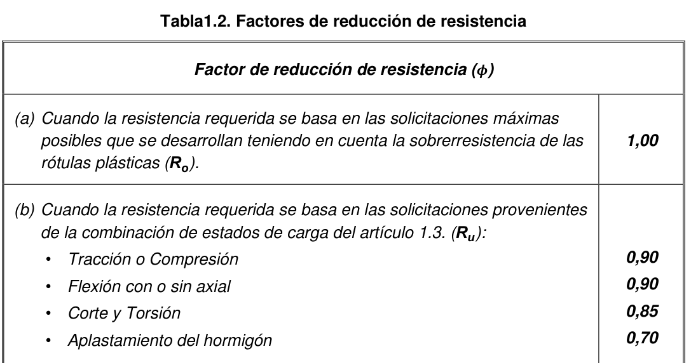</div>
        <figcaption><b>Tabla 1.2 del IC 103 Parte II (2021).</b> (a) φ = 1,00 cuando la resistencia requerida R<sub>o</sub> sale de la sobrerresistencia de las rótulas plásticas (diseño por capacidad). (b) Cuando sale de las combinaciones de estados de carga del art. 1.3 (R<sub>u</sub>): tracción o compresión 0,90 · flexión con o sin axial 0,90 · corte y torsión 0,85 · aplastamiento del hormigón 0,70. <span class="pg">IC 103 Parte II 2021, Cap. 1, pág. 10</span></figcaption>
      </figure>
      <div class="box old">
        <span class="lbl">Actualización · IC 103 Parte II 2021, art. 1.5.1.2</span>
        <p>El apunte cita el <strong>IC-103-II de 2005 y su adenda, sección 1.6, Tabla 1.1</strong>. En la edición 2021 la tabla pasó a ser la <strong>Tabla 1.2 del art. 1.5.1.2</strong>, con los mismos valores.</p>
        <p>El comentario C 1.5.1.2 explica el 0,90 en compresión: como la Parte II exige columnas con confinamiento importante aunque no deban ser dúctiles, no corresponde que φ varíe con la carga axial, como pasa en el CIRSOC 201. Y cuando la demanda sale de la sobrerresistencia de las rótulas (diseño por capacidad), reducir la resistencia nominal con un φ menor que 1,00 "sería innecesariamente conservativo".</p>
        <p>El art. 1.5.3.3 fija además la sobrerresistencia del acero en <strong>λ<sub>o</sub> = 1,40</strong> para f<sub>y</sub> = 420 MPa.</p>
      </div>

      <p><strong>(e) Sobrerresistencia o resistencia extrema, S<sub>o</sub>.</strong> Es el nivel de resistencia que tiene una probabilidad suficientemente baja de ser excedida durante el terremoto de diseño. Toma en cuenta todos los factores que pueden hacer que la resistencia exceda el valor nominal: acero con resistencia mayor que la especificada, endurecimiento del acero a grandes deformaciones, aumento de resistencia del hormigón por la edad o por confinamiento, efectos de la velocidad de deformación, etc.</p>
      <div class="eq"><math display="block"><mrow><msub><mi>S</mi><mi>o</mi></msub><mo>=</mo><msub><mi>φ</mi><mi>o</mi></msub><mo>·</mo><msub><mi>S</mi><mi>n</mi></msub></mrow></math><span class="tag">(1.20)</span></div>
      <p><strong>(f) Resistencia ideal, S<sub>i</sub></strong> (sugerida por Paulay y Priestley). Está asociada a resultados experimentales: es la mejor predicción de resistencia de una unidad de ensayo usando en el análisis las características medidas de los materiales. Su uso fundamental es calibrar la validez de las ecuaciones que predicen la resistencia.</p>

      <figure class="w-md">
        <div class="frame">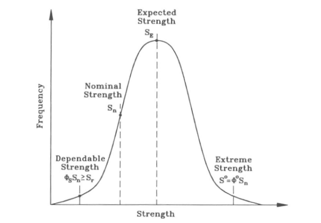</div>
        <figcaption><b>Fig. 1.18.</b> Niveles de resistencia sobre la campana de frecuencias: de diseño (φS<sub>n</sub> ≥ S<sub>r</sub>) &lt; nominal S<sub>n</sub> &lt; esperada S<sub>E</sub> &lt; extrema S<sub>o</sub> = φ<sub>o</sub>S<sub>n</sub>. <span class="pg">Llopiz T1, pág. 15</span></figcaption>
      </figure>

      <p>Para estimar el factor de seguridad global de una estructura referido a la resistencia "de código" (o sea, a la nominal), con cargas D y L y predominio de flexión, a partir de (1.19):</p>
      <div class="eq"><math display="block"><mrow><mfrac><mrow><msub><mi>S</mi><mi>n</mi></msub></mrow><mrow><msub><mi>S</mi><mi>D</mi></msub><mo>+</mo><msub><mi>S</mi><mi>L</mi></msub></mrow></mfrac><mo>≥</mo><mfrac><mrow><msub><mi>S</mi><mi>r</mi></msub></mrow><mrow><mi>φ</mi><mo stretchy="false">(</mo><msub><mi>S</mi><mi>D</mi></msub><mo>+</mo><msub><mi>S</mi><mi>L</mi></msub><mo stretchy="false">)</mo></mrow></mfrac><mo>=</mo><mfrac><mrow><mn>1,2</mn><msub><mi>S</mi><mi>D</mi></msub><mo>+</mo><mn>1,6</mn><msub><mi>S</mi><mi>L</mi></msub></mrow><mrow><mn>0,9</mn><mo stretchy="false">(</mo><msub><mi>S</mi><mi>D</mi></msub><mo>+</mo><msub><mi>S</mi><mi>L</mi></msub><mo stretchy="false">)</mo></mrow></mfrac></mrow></math></div>
      <p>Para D = L resulta un factor de seguridad global de <strong>1,56</strong>. Para comprender la diferencia con el método de tensiones admisibles, hay que relacionarlo con los factores de aquel método (por ejemplo, 1,75 para el acero, que llevaba la tensión de fluencia de 420 MPa a 240 MPa como tensión de trabajo o servicio).</p>

      <h3 id="u1-5"><span class="n">1.5</span>Ejemplo de aplicación de determinación de acciones</h3>
      <h4>1.5.1 Análisis de cargas gravitatorias <span class="pg">· pág. 16</span></h4>
      <div class="tbl"><table>
        <thead><tr><th>Cargas permanentes, D, interior</th><th class="num">t/m²</th></tr></thead>
        <tbody>
          <tr><td>Estructura resistente h = 12 cm, γ = 2,4 t/m³</td><td class="num">0,288</td></tr>
          <tr><td>Piso y contrapiso</td><td class="num">0,112</td></tr>
          <tr><td>Incidencia de tabiquería de cierre</td><td class="num">0,100</td></tr>
          <tr><td><strong>Total de carga permanente para losas, D</strong></td><td class="num"><strong>0,50</strong></td></tr>
        </tbody>
      </table></div>
      <p>Para la tabiquería se consideraron paredes de yeso tipo Durlock, pared doble (2 placas por cara), de 0,0625 t/m². Como carga de uso se toma, para oficinas, L = 0,25 t/m² por planta, que cubre también un edificio de viviendas (dormitorios, baños y comedores exigen 0,20 t/m²). Para la losa del último nivel podría tomarse 0,20 t/m² (azotea accesible), pero por la pequeña diferencia se deja el mismo L en todos los niveles. En balcones se adopta D = 0,40 t/m² (sin tabiques de cierre) y como sobrecarga, según la ref. [8] sección 4.1.1, la de los locales a los que sirven, L = 0,25 t/m², nunca menor que 0,05 t/m².</p>
      <div class="box old">
        <span class="lbl">Desactualizado · CIRSOC 101-25, Tabla 4.1 y art. 4.11</span>
        <ul>
          <li><strong>Oficinas 2,5 kN/m²</strong> (0,25 t/m²) y <strong>habitaciones de vivienda 2 kN/m²</strong> (0,20 t/m²): siguen iguales.</li>
          <li><strong>Balcones:</strong> la sobrecarga no puede ser menor que la del local al que sirven y <strong>en ningún caso menor que 5 kN/m²</strong> (0,50 t/m²). En casas de una o dos familias con balcones de hasta 10 m² se admiten 3 kN/m². El 0,25 t/m² del ejemplo y el mínimo de 0,05 t/m² quedaron desactualizados.</li>
          <li><strong>Azoteas:</strong> accesibles en forma privada, 3 kN/m² (el apunte usa 0,20 t/m²); donde puede congregarse gente, 5 kN/m²; inaccesibles, 1 kN/m².</li>
          <li><strong>Tabiques livianos</strong> (≤ 1,2 kN/m²) como carga uniforme: al menos 1 kN/m² cuando L &lt; 2,5 kN/m². Coincide con el 0,100 t/m² del ejemplo.</li>
          <li>Hormigón armado: <strong>25 kN/m³</strong> (Tabla 3.1). El apunte usa 2,4 t/m³.</li>
        </ul>
      </div>
      <p><strong>Pesos de masas para la fuerza sísmica.</strong> Edificio de 7 pisos, con coeficiente η = 0,25 (ec. 1.6; ref. [5], sección 9, tabla 6): 212 t el último nivel, 235 t los intermedios y 241 t el primero. <strong>W<sub>t</sub> = 1 628 t</strong>, una densidad de 0,86 t/m² con un área de 17 m × 16 m = 272 m² por planta, o 1,14 t/m² con 17 m × 12 m = 204 m². En definitiva, del orden de <strong>1,0 t/m²</strong>, valor típico de las construcciones de nuestro medio.</p>

      <h4>1.5.2 Determinación de las acciones de diseño sísmico <span class="pg">· págs. 16–18</span></h4>
      <p>La estructura se modeló en forma completa (modelo tridimensional) con ETABS 7.18. El análisis de vibraciones con comportamiento elástico (secciones sin fisurar) da un período fundamental de <strong>0,70 s en la dirección X</strong> (líneas A, B y C) y de <strong>0,37 s en Y</strong> (líneas 1, 2, 3 y 4). Con coeficiente de destino 1,0 y suelo intermedio (tipo II), los coeficientes sísmicos para diseño inelástico por el método estático son:</p>
      <div class="tbl"><table>
        <thead><tr><th>Norma</th><th>Dirección X</th><th>Dirección Y</th></tr></thead>
        <tbody>
          <tr><td>I-C 103, tomo I</td><td>S<sub>a</sub> = 0,95; μ = 4; C<sub>I</sub> = 0,24</td><td>S<sub>a</sub> = 1,05; μ = 4; C<sub>I</sub> = 0,26</td></tr>
          <tr><td>CCSR-87</td><td>C = 0,85; d<sub>u</sub> = 0,85; C<sub>o</sub> = 0,30; C<sub>I</sub> = 0,22</td><td>C = 1,00; d<sub>u</sub> = 1,00; C<sub>o</sub> = 0,30; C<sub>I</sub> = 0,30</td></tr>
          <tr><td>PRONAM-97</td><td>S<sub>a</sub> = 0,95; μ = 4,5; C<sub>I</sub> = 0,21</td><td>S<sub>a</sub> = 1,05; μ = 5,0; C<sub>I</sub> = 0,21</td></tr>
        </tbody>
      </table></div>
      <p>La elección del coeficiente de reducción R siempre fue motivo de incertidumbres y de interpretaciones diferentes. Para este trabajo interesa más la comprensión del efecto que el valor: dentro de un rango razonable, si el diseñador tiene claro el comportamiento que quiere lograr y es capaz de materializarlo, la elección de la resistencia final, poco más o poco menos, no debería comprometer la seguridad.</p>
      <p><strong>Análisis dinámico.</strong> Con el espectro elástico del I-C 103 para suelo II se obtuvieron cortantes elásticos V<sub>Ex</sub> = 1 147 t y V<sub>Ey</sub> = 1 326 t. Con los factores de reducción de la PRONAM: V<sub>Ix</sub> = 1 147/4,5 = 255 t y V<sub>Iy</sub> = 1 326/5 = 265 t, es decir C<sub>Ixd</sub> ≈ C<sub>Iyd</sub> ≈ 0,16. Las normas especifican que el cortante dinámico no sea menor que el 75 % del estático: 0,16/0,21 = 0,76. Se adopta el coeficiente <strong>0,16</strong> y un cortante de <strong>260 t</strong> en ambas direcciones para el método estático.</p>
      <p>El objetivo es explicar en forma conceptual cómo determinar acciones razonables para obtener las solicitaciones internas. Las solicitaciones de diseño podrían modificarse para mejorar el comportamiento inelástico; la redistribución de esfuerzos, con ciertas limitaciones, es una de las herramientas para modificar la distribución de resistencia entre los elementos. En el diseño del prototipo resultó en X un cortante de 150,60 t para un peso de 1 109 t (coeficiente 0,136). Por la diferencia de pesos, la comparación de cortantes da 260/150,60 = 1,73, es decir casi un 73 % mayor.</p>
      <p><strong>Distribución del corte en altura.</strong> Con las ecuaciones del I-C 103, α = 1,0 porque en ambas direcciones 2T<sub>2</sub> supera el período fundamental. La tabla incluye la NZS 4203 como comparación:</p>
      <div class="tbl"><table>
        <thead><tr><th class="num">Nivel</th><th class="num">W<sub>i</sub> [t]</th><th class="num">h<sub>i</sub> [m]</th><th class="num">W<sub>i</sub>h<sub>i</sub> [tm]</th><th class="num">α<sub>i</sub></th><th class="num">F<sub>i</sub> I.C.</th><th class="num">V<sub>i</sub> I.C.</th><th class="num">F<sub>i</sub> NZS</th><th class="num">V<sub>i</sub> NZS</th><th class="num">V NZS/V I.C.</th></tr></thead>
        <tbody>
          <tr><td class="num">7</td><td class="num">212</td><td class="num">21,75</td><td class="num">4 611</td><td class="num">0,225</td><td class="num">58,50</td><td class="num">58,50</td><td class="num">74,62</td><td class="num">74,62</td><td class="num">1,275</td></tr>
          <tr><td class="num">6</td><td class="num">235</td><td class="num">18,75</td><td class="num">4 406</td><td class="num">0,215</td><td class="num">55,90</td><td class="num">114,40</td><td class="num">51,43</td><td class="num">126,05</td><td class="num">1,102</td></tr>
          <tr><td class="num">5</td><td class="num">235</td><td class="num">15,75</td><td class="num">3 701</td><td class="num">0,181</td><td class="num">47,05</td><td class="num">161,45</td><td class="num">43,29</td><td class="num">169,34</td><td class="num">1,05</td></tr>
          <tr><td class="num">4</td><td class="num">235</td><td class="num">12,75</td><td class="num">2 996</td><td class="num">0,146</td><td class="num">37,96</td><td class="num">199,41</td><td class="num">34,92</td><td class="num">204,26</td><td class="num">1,02</td></tr>
          <tr><td class="num">3</td><td class="num">235</td><td class="num">9,75</td><td class="num">2 291</td><td class="num">0,112</td><td class="num">29,12</td><td class="num">228,53</td><td class="num">26,79</td><td class="num">231,05</td><td class="num">1,01</td></tr>
          <tr><td class="num">2</td><td class="num">235</td><td class="num">6,75</td><td class="num">1 586</td><td class="num">0,077</td><td class="num">20,02</td><td class="num">248,56</td><td class="num">18,42</td><td class="num">249,48</td><td class="num">1,004</td></tr>
          <tr><td class="num">1</td><td class="num">241</td><td class="num">3,75</td><td class="num">904</td><td class="num">0,044</td><td class="num">11,44</td><td class="num">260,00</td><td class="num">10,52</td><td class="num">260,00</td><td class="num">1,00</td></tr>
        </tbody>
      </table></div>
      <p>V<sub>1</sub> = V<sub>b</sub> = 1 628 t × 0,16 = 260 t. A partir de estas acciones se hace el análisis estructural tridimensional, que da las demandas en cada elemento (momentos, cortes y axiales) con las que se comienza el diseño de las secciones de hormigón armado. El Apéndice A contiene los resultados del análisis estructural.</p>
      <div class="box nota">
        <span class="lbl">Aclaración</span>
        <ul>
          <li>La columna NZS de la tabla se obtiene con <strong>0,92/0,08</strong> (F<sub>7</sub> = 0,08 × 260 + 0,92 × 58,5 = 74,6 t), no con el 0,90/0,10 de la ec. (1.11), que además es para edificios de más de 10 pisos.</li>
          <li>El texto dice que el coeficiente del prototipo (0,136) es "casi 18 % menor" que 0,16; es 15 % menor (0,16 es 18 % mayor que 0,136).</li>
        </ul>
      </div>
      <div class="box old">
        <span class="lbl">Desactualizado · IC 103 Parte I 2018</span>
        <p>El ejemplo usa el <strong>IC-103 de 1991–1993</strong>, el <strong>CCSR-87</strong> y la <strong>PRONAM-97</strong>. Con la Parte I 2018 cambian el espectro (tipos de sitio), la forma del coeficiente (C = 2,5·C<sub>a</sub>·γ<sub>r</sub>/R), los factores R, C<sub>d</sub> y Ω<sub>o</sub> por tipo estructural (Tabla 5.1) y la distribución en altura (sin α).</p>
      </div>
      <div class="box err">
        <span class="lbl">Error en el apunte</span>
        <p>En la bibliografía, "Vision 2000… SEOAC, abril 1975" es <strong>SEAOC, 1995</strong>, y dice "ETBAS" por ETABS.</p>
      </div>

      <h3 id="u1-6"><span class="n">1.6</span>Diseño por resistencia, por estabilidad y por capacidad</h3>
      <p class="unit-meta" style="border:0;padding:0;margin-bottom:10px">Apuntes de clase de Agustín (manuscritos), transcriptos</p>

      <h4>Diseño por resistencia</h4>
      <p>La seguridad estructural se provee mediante dos fuentes. Por un lado, mediante la combinación de estados de carga, que impactan en la resistencia requerida (R<sub>u</sub>), donde se utilizan factores de mayoración de carga que reconocen la variabilidad entre los distintos tipos de cargas. Y, por otro lado, mediante el uso de factores de reducción de resistencia φ, que impactan en la resistencia de diseño (R<sub>d</sub>).</p>
      <p>El requerimiento general de diseño por resistencia es:</p>
      <div class="eq"><math display="block"><mrow><mtext>Suministro</mtext><mo>≥</mo><mtext>Demanda</mtext><mspace width="1em"/><mo>→</mo><mspace width="1em"/><msub><mi>R</mi><mi>d</mi></msub><mo>=</mo><mi>φ</mi><mo>·</mo><msub><mi>R</mi><mi>n</mi></msub><mo>≥</mo><msub><mi>R</mi><mi>u</mi></msub></mrow></math></div>
      <p>o bien:</p>
      <div class="eq"><math display="block"><mrow><mi>φ</mi><msub><mi>M</mi><mi>n</mi></msub><mo>≥</mo><msub><mi>M</mi><mi>u</mi></msub><mspace width="2em"/><mi>φ</mi><msub><mi>V</mi><mi>n</mi></msub><mo>≥</mo><msub><mi>V</mi><mi>u</mi></msub><mspace width="2em"/><mi>φ</mi><msub><mi>P</mi><mi>n</mi></msub><mo>≥</mo><msub><mi>P</mi><mi>u</mi></msub></mrow></math></div>

      <h4>Diseño por estabilidad</h4>
      <p>Se entiende por estabilidad a la capacidad de una estructura o componente para mantener su función estructural cuando se deforma ante las acciones establecidas.</p>

      <h4>Diseño por capacidad</h4>
      <p>Deberá definirse un <strong>mecanismo de colapso admisible</strong>, que determine la ubicación de las zonas del sistema sismorresistente principal que tendrán rótulas plásticas.</p>
      <p>Para mantener el mecanismo de colapso elegido, deberán evitarse los modos de falla indeseables en las zonas de rótula plástica, tales como fallas por corte, anclaje o inestabilidades. El diseño para los modos de falla indeseables deberá realizarse por capacidad. Esto se logra asegurando una resistencia de diseño R<sub>d</sub> mayor o igual que la resistencia requerida derivada de la sobrerresistencia de las zonas de rótula plástica (R<sub>o</sub>):</p>
      <div class="eq"><math display="block"><mrow><msub><mi>R</mi><mi>d</mi></msub><mo>=</mo><mi>φ</mi><msub><mi>R</mi><mi>n</mi></msub><mo>≥</mo><msub><mi>R</mi><mi>o</mi></msub><mo>=</mo><msub><mi>λ</mi><mi>o</mi></msub><msub><mi>R</mi><mi>u</mi></msub><mspace width="2em"/><mtext>con </mtext><mi>φ</mi><mo>=</mo><mn>1</mn><mtext> y </mtext><msub><mi>λ</mi><mi>o</mi></msub><mo>=</mo><mn>1,4</mn><mtext> para </mtext><msub><mi>f</mi><mi>y</mi></msub><mo>=</mo><mn>420</mn><mtext> MPa</mtext></mrow></math></div>
      <p>El método de diseño por capacidad busca que la estrategia de diseño se independice de la demanda y centre la atención en la capacidad que tienen las estructuras de disipar la energía mediante fuertes incursiones en el campo inelástico. Significa crear estructuras que sean ampliamente tolerantes a las deformaciones impuestas.</p>
      <ul class="body">
        <li>Hacemos diseño por resistencia en las vigas, y después se diseña por capacidad la columna (flexión).</li>
        <li>Se diseña por capacidad el corte en la viga y en la columna.</li>
        <li>En tabiques se diseña por resistencia la flexión y por capacidad el corte.</li>
      </ul>

      <div class="box nota">
        <span class="lbl">Aclaración</span>
        <ul>
          <li>Estas definiciones coinciden con el <strong>IC 103 Parte II 2021, arts. 1.5.1 a 1.5.3</strong>. El art. 1.5.3.4 lo escribe como <strong>R<sub>n</sub> ≥ R<sub>o</sub></strong>, que es lo mismo que φ·R<sub>n</sub> ≥ R<sub>o</sub> con φ = 1.</li>
          <li><strong>R<sub>o</sub> = λ<sub>o</sub>·R<sub>u</sub></strong> es una simplificación. λ<sub>o</sub> = 1,40 es la sobrerresistencia del <strong>acero</strong> (art. 1.5.3.3: se toma λ<sub>o</sub>·f<sub>y</sub>). La sobrerresistencia de la rótula sale de su momento de sobrerresistencia calculado con λ<sub>o</sub>·f<sub>y</sub> y la armadura <strong>realmente colocada</strong>, que suele ser mayor que la estrictamente requerida. Por eso R<sub>o</sub> es en general mayor que 1,4·R<sub>u</sub>.</li>
        </ul>
      </div>


    </section>

    <!-- ===================== UNIDAD 2 ===================== -->
    <section>
      <h2 id="u2"><span class="n">Unidad 2</span>Características mecánicas del hormigón y del acero de refuerzo</h2>
      <p class="unit-meta">Llopiz T2 · 100 págs. · emisión 2001, rev. noviembre 2016 · Equivale a Torrisi cap. 2 (págs. 21–38)</p>

      <div class="box torrisi">
        <span class="lbl">Aporte de Torrisi · cap. 2</span>
        <p>El capítulo 2 de Torrisi es una versión condensada de esta unidad: reproduce los apartados de compresión, carga cíclica, velocidad, edad, temperatura, fluencia lenta, contracción, tracción, Poisson y acero, sin los ejemplos numéricos, el control de calidad ni los ensayos de aceros locales. Sus agregados se indican en cada apartado.</p>
      </div>

      <p>La unidad abre con un texto sobre <strong>Pier Luigi Nervi</strong> (1891–1979), ingeniero y constructor italiano, "el más brillante artista del hormigón armado de nuestro tiempo" según Pevsner: estadio de Florencia, hangares de Orvieto, el Palazzetto dello Sport de Roma, la sede de la UNESCO en París, entre otras obras. <span class="pg">págs. 3–7</span></p>

      <!-- ===== 2.1 ===== -->
      <h3 id="u2-1"><span class="n">2.1</span>Razón de ser del hormigón armado</h3>
      <p>Se conoce como hormigón armado al material compuesto de hormigón reforzado con armaduras de acero. Diseñados, detallados y construidos adecuadamente, se unen para lograr mecánicamente un sólido único, con propiedades mucho más ventajosas que las de sus componentes aislados. Salvo en el prefabricado (de uso aún muy limitado en nuestro medio), los componentes se unen en la misma obra, por lo que el comportamiento final depende no solo de cómo se diseñó sino también de cómo se construyó; por ejemplo, el curado tiene alta incidencia en el producto final. <span class="pg">pág. 8</span></p>
      <p>La razón fundamental de la unión es aprovechar, desde el punto de vista mecánico, funcional y económico, las propiedades de ambos materiales; mecánicamente interesan la rigidez, la resistencia y la ductilidad. La flexión, el corte y la torsión pueden analizarse como componentes de tracción y compresión. El acero es bueno en tracción y en compresión, aunque en elementos esbeltos presenta inestabilidad en compresión. El hormigón, como las piedras naturales, resiste muy bien la compresión pero muy poco la tracción (del orden del décimo). Un ejemplo típico es una viga simplemente apoyada de luz considerable: el hormigón toma las compresiones por flexión y las armaduras las tracciones. Algunos autores definen al hormigón armado como "la piedra artificial que puede absorber esfuerzos de flexión".</p>
      <p>La densidad del hormigón simple es cercana a 2 300 kgf/m³ y la del acero, 7 850 kgf/m³. Las barras usuales van de 3 a 25 mm y la sección total de acero suele estar entre el 0,2 % y el 3 % de la sección, es decir, entre 15 y 250 kgf de acero por m³ de hormigón. Con una cuantía total del 2 %:</p>
      <div class="tbl"><table>
        <tbody>
          <tr><td>Hormigón neto: 0,98 × 2 300 kgf/m³</td><td class="num">2 254 kgf</td></tr>
          <tr><td>Acero: 0,02 × 7 850 kgf/m³</td><td class="num">157 kgf</td></tr>
          <tr><td><strong>Total por m³ de H°A°</strong></td><td class="num"><strong>2 407 kgf ≈ 2 400 kgf/m³</strong></td></tr>
        </tbody>
      </table></div>
      <p><strong>Costos</strong> <span class="pg">(pág. 9)</span>. El m³ de hormigón elaborado, puesto en obra y bombeado cuesta 60 a 80 US$; el kilo de hormigón, unos 0,03 US$, y el de acero (solo material), 0,70 US$: el acero cuesta entre 20 y 25 veces más por kilo, por lo que el costo del material compuesto depende de la eficiencia con que se usen las barras. Corte, doblado y colocación agregan unos 0,40 US$/kgf (armadura ≈ 1,10 US$/kgf). El encofrado cuesta ≈ 15 US$/m² y el colado y curado, ≈ 13 US$/m³.</p>
      <div class="tbl"><table>
        <thead><tr><th>Elemento</th><th class="num">Acero</th><th class="num">Hormigón</th><th class="num">Encofrado</th><th class="num">Total</th></tr></thead>
        <tbody>
          <tr><td>Columna 40 × 40 cm, cuantía 2 %</td><td class="num">200 US$/m³ (46 %)</td><td class="num">83 (19 %)</td><td class="num">150 (35 %)</td><td class="num">433 US$/m³</td></tr>
          <tr><td>Losa de 12 cm, 70 kgf/m³ de acero</td><td class="num">90 (30 %)</td><td class="num">83 (28 %)</td><td class="num">127 (42 %)</td><td class="num">300 US$/m³</td></tr>
        </tbody>
      </table></div>
      <p>Los costos cambian según el elemento y el encofrado tiene fuerte incidencia (en pozos de fundación o vigas de fundación enterradas puede ser muy poco o nulo).</p>
      <p>La condición necesaria para que exista el hormigón armado como sólido único es que la unión entre sus componentes sea tan efectiva que no haya separación entre las barras y el hormigón: la adherencia y la fricción aseguran, hasta ciertos límites, la compatibilidad de deformaciones.</p>
      <p><strong>Ventajas:</strong> (1) es fácilmente moldeable y las armaduras pueden seguir la trayectoria de los esfuerzos; (2) es resistente al fuego, a los efectos climáticos y al desgaste; (3) es apropiado para construcciones monolíticas, de múltiple indeterminación estática, con gran reserva de capacidad y, bien detallado, gran capacidad de absorber y disipar energía; (4) es relativamente económico y prácticamente no requiere mantenimiento, aunque las armaduras deben estar bien recubiertas; (5) es buen aislante acústico; (6) se usa en todo tipo de obras. <span class="pg">pág. 10</span></p>
      <figure>
        <div class="frame">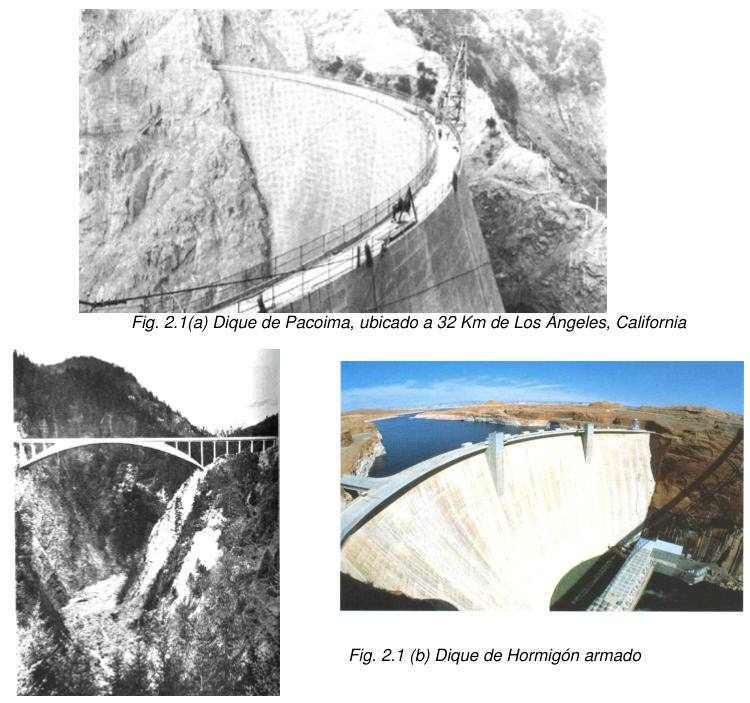</div>
        <figcaption><b>Fig. 2.1 (a), (b) y (c).</b> Ejemplos de obras de hormigón armado: el dique de Pacoima (California), un dique de hormigón armado y el puente de Salginatobel (Suiza), de casi 100 m de luz. <span class="pg">Llopiz T2, pág. 10</span></figcaption>
      </figure>
      <figure>
        <div class="frame">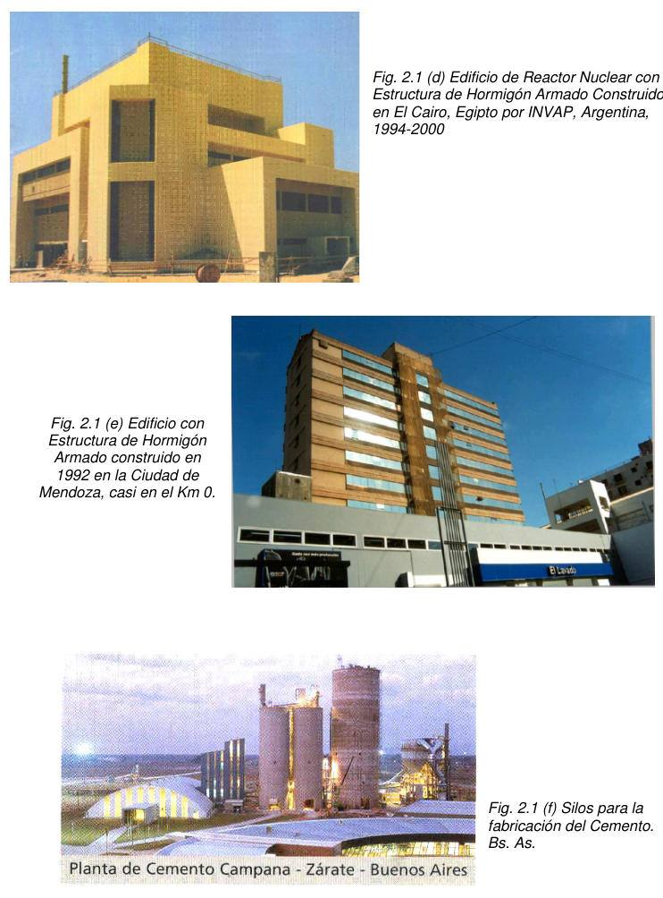</div>
        <figcaption><b>Fig. 2.1 (d), (e) y (f).</b> Edificio de reactor nuclear construido por INVAP en El Cairo (1994–2000), edificio de 1992 en el km 0 de Mendoza y silos de una planta de cemento en Buenos Aires. <span class="pg">Llopiz T2, pág. 11</span></figcaption>
      </figure>
      <p><strong>Inconvenientes:</strong> elevado peso propio, reducido aislamiento térmico, y modificaciones y demolición dificultosas y caras. <span class="pg">pág. 12</span></p>
      <p>Para diseño sísmico, el material debería tener por unidad de peso: (a) alta resistencia a tracción y compresión, (b) alta rigidez, (c) alto amortiguamiento, (d) alta tenacidad (resistencia y ductilidad), (e) alta resistencia a la fatiga de pocos ciclos (reversiones pocas pero de gran amplitud, como en un sismo) y (f) comportamiento histerético estable. Además, comportamiento asimilable a homogéneo y facilidad para lograr conexiones que desarrollen toda la resistencia.</p>
      <figure class="w-sm">
        <div class="frame">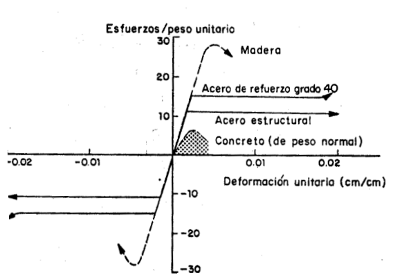</div>
        <figcaption><b>Fig. 2.2.</b> Resistencia por unidad de peso vs. deformación de distintos materiales: la madera y el acero tienen mucha más resistencia por kilo que el hormigón, que además es muy frágil (llega a deformaciones mínimas). <span class="pg">Llopiz T2, pág. 12</span></figcaption>
      </figure>
      <figure class="w-sm">
        <div class="frame">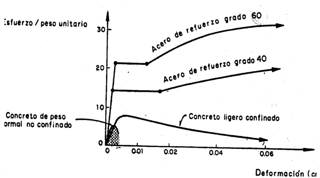</div>
        <figcaption><b>Fig. 2.3.</b> Lo mismo para el hormigón, el hormigón confinado y el acero: el confinamiento aumenta mucho la deformación que el hormigón puede sostener, pero su resistencia por unidad de peso sigue muy por debajo de la del acero. <span class="pg">Llopiz T2, pág. 12</span></figcaption>
      </figure>

      <!-- ===== 2.2 ===== -->
      <h3 id="u2-2"><span class="n">2.2</span>Breve referencia histórica</h3>
      <p>Los egipcios usaban yeso calcinado; griegos y romanos, caliza calcinada con agua, arena y piedra: el <em>opus caementitium</em>, primer hormigón de la historia. En 1824 J. Aspdin patentó un producto similar al cemento, y en 1845 Isaac Johnson obtuvo el clínker, primer cemento moderno. El nombre "Portland" viene del parecido con la caliza de la isla de Portland (Dorset, Inglaterra). En nuestro medio se llama concreto a la mezcla de cemento y agua, mortero si se agrega arena, y hormigón si además lleva agregado grueso. <span class="pg">pág. 13</span></p>
      <p>La invención del hormigón armado se atribuye a J. Monier, que hacia 1861 fabricó un jarrón de mortero reforzado con alambre (ese año, el 20 de marzo, el terremoto destruyó Mendoza). Antes, Lambot había construido un bote (1850). En 1861 Coignet estableció normas para vigas, bóvedas y tubos, y en 1867 Monier sacó sus primeras patentes. Entre 1880 y 1890 Wayss (Viena) y Bauschinger (Múnich) demostraron la eficacia del trabajo conjunto y se dilucidó la inalterabilidad del acero dentro del hormigón: las fisuras capilares se mantienen como tales si las barras están bien distribuidas, bien recubiertas y no son de diámetros muy grandes. En 1886 Koenen publicó un método de cálculo, y en 1873 W. E. Ward construyó en Nueva York la "World's Castle", que aún existe.</p>
      <p>Emil Mörsch publicó en 1902 las bases científicas del hormigón armado, a partir de ensayos: la primera teoría de dimensionado, muy cercana a la realidad. La obra de Fritz Leonhardt en Stuttgart influyó en la norma DIN 1045 de 1978, base de los reglamentos CIRSOC desde 1983. Para Llopiz, el uso de la DIN en zona sísmica es muy cuestionable, porque las limitaciones que impone a los materiales en la fase no lineal impiden evaluar resistencia y ductilidad con la precisión que requiere el diseño sismorresistente; el ACI-318, sin ser lo más avanzado en diseño sísmico, no tiene esas limitaciones. <span class="pg">pág. 14</span></p>
      <p>Hay tres escuelas de diseño sismorresistente: la norteamericana, la japonesa y la neozelandesa. En opinión del autor, la tercera es la más racional y es la base de los futuros reglamentos sismorresistentes argentinos; para cargas en general se toma el ACI-318. En 1975 Park y Paulay (Universidad de Canterbury) publicaron <em>Reinforced Concrete Structures</em>, que junto con V. Bertero (Berkeley) inauguraron una nueva visión del hormigón armado en zonas sísmicas. Park y Paulay revisaron críticamente el ACI y privilegiaron los principios básicos ("first principles") por sobre tablas y ábacos, que muchas veces hacen perder de vista el fenómeno. Priestley, junto con Paulay, es autor del texto más avanzado en diseño sismorresistente de edificios de hormigón y mampostería, y con Seible y Calvi, de <em>Seismic Design and Retrofit of Bridges</em>. <span class="pg">págs. 14–15</span></p>

      <!-- ===== 2.3.1 Hormigón ===== -->
      <h3 id="u2-3"><span class="n">2.3.1</span>Hormigón</h3>
      <h4>Respuesta del hormigón y de sus componentes en compresión <span class="pg">· págs. 15–19</span></h4>
      <p>Los componentes principales son el cemento portland, el agua y los agregados; el hormigón endurece por la reacción química entre el agua y el cemento. Sus características mecánicas se especifican por su comportamiento en compresión uniaxial, con probetas cilíndricas de 15 cm × 30 cm o cúbicas de 15 cm (resistencia cilíndrica y cúbica). Recientemente se adoptó también la probeta cilíndrica de 10 cm × 20 cm.</p>
      <figure class="w-sm">
        <div class="frame">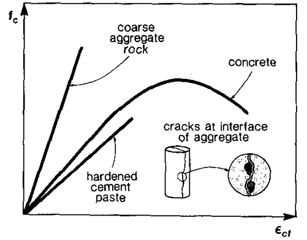</div>
        <figcaption><b>Fig. 2.4.</b> Tensión-deformación de los componentes y del hormigón: el agregado y la pasta son lineales por separado; el hormigón queda entre ambos y se vuelve no lineal por la microfisuración en la interfaz. <span class="pg">Llopiz T2, pág. 15</span></figcaption>
      </figure>
      <ul class="body">
        <li>(a) Las respuestas de los componentes (agregados y pasta) son lineales; la del hormigón lo es solo al inicio y luego es francamente no lineal hasta la rotura.</li>
        <li>(b) Los agregados tienen mayor rigidez y resistencia (100 a 200 MPa, ensayando muestras de roca). [1 Pa = 1 N/m²; 1 N = 0,10 kgf; 1 kN = 0,10 t; 1 MPa = 1 N/mm² = 10 kgf/cm² = 100 t/m².]</li>
        <li>(c) La pasta es la de menor rigidez y resistencia; se ensaya en mortero 1:3. Para iguales proporciones, la resistencia del mortero es del orden del 60 a 65 % de la del hormigón (Fig. 2.5).</li>
      </ul>
      <figure class="w-sm">
        <div class="frame">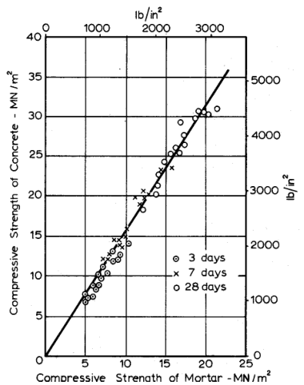</div>
        <figcaption><b>Fig. 2.5.</b> Resistencia del hormigón vs. resistencia del mortero con la misma relación agua/cemento (a 3, 7 y 28 días): la relación es prácticamente lineal. <span class="pg">Llopiz T2, pág. 16</span></figcaption>
      </figure>
      <p>La respuesta no lineal se debe a la interacción entre la pasta y los agregados: a tensiones relativamente bajas se producen microfisuras en las interfaces, que se propagan con la deformación y "ablandan" la respuesta. La curva resulta "redondeada", con franca tendencia a la falla después del máximo. Antes de la falla hay una considerable expansión lateral, que se traduce en tracciones transversales y fallas longitudinales muy visibles.</p>
      <figure class="w-sm">
        <div class="frame">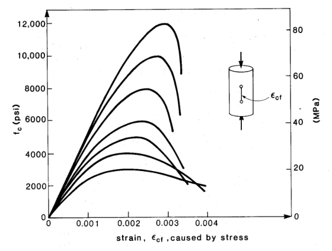</div>
        <figcaption><b>Fig. 2.6a.</b> Curvas típicas de hormigones de 20 a 80 MPa: a mayor resistencia, más rigidez y tramo lineal más largo, pero caída más brusca después del pico. <span class="pg">Llopiz T2, pág. 16</span></figcaption>
      </figure>
      <figure class="w-sm">
        <div class="frame">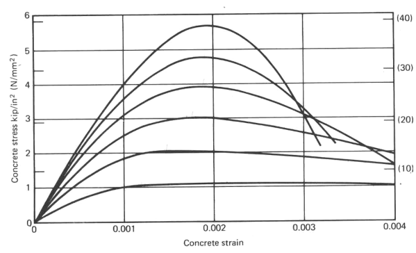</div>
        <figcaption><b>Fig. 2.6b.</b> Las mismas curvas en la escala de los hormigones de uso habitual: la deformación en el pico ronda 0,002. <span class="pg">Llopiz T2, pág. 17</span></figcaption>
      </figure>
      <p>A medida que aumenta la resistencia máxima: (a) aumenta la rigidez inicial; (b) hay mayor rango lineal; (c) hay menor deformabilidad total (no se puede hablar de ductilidad) y más rápida es la caída de tensión después del pico; (d) aumenta la deformación ε<sub>o</sub> a máxima tensión.</p>
      <p>El <strong>CIRSOC 201-25 (art. 19.2.2.1)</strong> especifica el módulo de elasticidad, definido como la pendiente de la secante hasta 0,45·f'<sub>c</sub> (ver también la Fig. 2.17). El apunte cita el ACI-318 y el CIRSOC 201-2005, sección 8.5.1; las expresiones no cambiaron:</p>
      <div class="eq"><math display="block"><mrow><msub><mi>E</mi><mi>c</mi></msub><mo>=</mo><msubsup><mi>w</mi><mi>c</mi><mrow><mn>1,5</mn></mrow></msubsup><mo>·</mo><mn>0,043</mn><msqrt><msubsup><mi>f</mi><mi>c</mi><mrow><mo>′</mo></mrow></msubsup></msqrt><mspace width="1em"/><mo stretchy="false">[</mo><mtext>MPa</mtext><mo stretchy="false">]</mo><mo>,</mo><mspace width="1em"/><msub><mi>w</mi><mi>c</mi></msub><mtext> en kgf/m³ (1 400 a 2 500)</mtext></mrow></math><span class="tag">(2.1)</span></div>
      <div class="eq"><math display="block"><mrow><msub><mi>E</mi><mi>c</mi></msub><mo>=</mo><mn>4</mn><mspace width="0.17em"/><mn>700</mn><msqrt><msubsup><mi>f</mi><mi>c</mi><mrow><mo>′</mo></mrow></msubsup></msqrt><mspace width="1em"/><mo stretchy="false">[</mo><mtext>MPa</mtext><mo stretchy="false">]</mo><mspace width="1em"/><mtext>(densidad normal, </mtext><msub><mi>w</mi><mi>c</mi></msub><mo>≈</mo><mn>2</mn><mspace width="0.17em"/><mn>300</mn><mtext> kgf/m³)</mtext></mrow></math><span class="tag">(2.2)</span></div>
      <p>Esto explica el punto (d): como ε<sub>o</sub> ≈ 2f'<sub>c</sub>/E<sub>c</sub> = 2f'<sub>c</sub>/(4 700√f'<sub>c</sub>), el numerador crece con f'<sub>c</sub> y el denominador solo con √f'<sub>c</sub>; un aumento de f'<sub>c</sub> aumenta ε<sub>o</sub>, pero ε<sub>máx</sub> disminuye. A mayor resistencia, más rigidez y menos comportamiento no lineal. La ref. [1] (Collins y Mitchell) da E<sub>c</sub> = 3 320√f'<sub>c</sub> + 6 900 [MPa] (2.3), con resultados similares: para f'<sub>c</sub> = 35 MPa, (2.2) da 27 800 MPa y (2.3), 26 500 MPa (5 % de diferencia).</p>
      <figure class="w-sm">
        <div class="frame">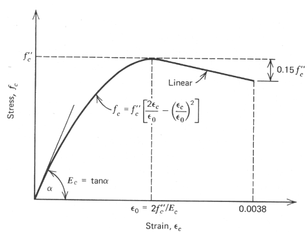</div>
        <figcaption><b>Fig. 2.7.</b> Curva de Hognestad: parábola hasta la tensión máxima en ε<sub>o</sub> = 2f''<sub>c</sub>/E<sub>c</sub> y recta descendente que pierde el 15 % de la tensión hasta ε = 0,0038. El pico de la figura está marcado como f''<sub>c</sub>. <span class="pg">Llopiz T2, pág. 18</span></figcaption>
      </figure>
      <p>Una curva ampliamente aceptada es la de <strong>Hognestad</strong>: un primer tramo parabólico hasta la tensión máxima,</p>
      <div class="eq"><math display="block"><mrow><msub><mi>f</mi><mi>c</mi></msub><mo>=</mo><msubsup><mi>f</mi><mi>c</mi><mrow><mo>′</mo></mrow></msubsup><mo stretchy="true">[</mo><mfrac><mrow><mn>2</mn><msub><mi>ε</mi><mi>c</mi></msub></mrow><mrow><msub><mi>ε</mi><mi>o</mi></msub></mrow></mfrac><mo>−</mo><mo stretchy="true">(</mo><mfrac><mrow><msub><mi>ε</mi><mi>c</mi></msub></mrow><mrow><msub><mi>ε</mi><mi>o</mi></msub></mrow></mfrac><msup><mo stretchy="true">)</mo><mn>2</mn></msup><mo stretchy="true">]</mo><mspace width="1em"/><mtext>para </mtext><mn>0</mn><mo>≤</mo><msub><mi>ε</mi><mi>c</mi></msub><mo>≤</mo><msub><mi>ε</mi><mi>o</mi></msub></mrow></math><span class="tag">(2.4)</span></div>
      <p>y un segundo tramo recto de pendiente negativa, tal que la tensión decrece un 15 % al llegar a la deformación máxima, que suele tomarse entre 0,003 y 0,004. Para tensiones bajas se acepta comportamiento lineal; la ref. [6] sugiere para f<sub>c</sub> &lt; 0,60 f'<sub>c</sub>: <span class="f">f<sub>c</sub> = E<sub>c</sub>·ε<sub>c</sub></span> (2.5a). Con el módulo tangente inicial E<sub>i</sub>, <span class="f">ε<sub>o</sub> = 2f'<sub>c</sub>/E<sub>i</sub></span> (2.5b); por ejemplo, f'<sub>c</sub> = 21 MPa y E<sub>c</sub> = 21 500 MPa dan ε<sub>o</sub> ≈ 0,002.</p>
      <p>Para deformaciones mayores todavía se soportan tensiones, aunque aparecen fisuras visibles paralelas a la carga. En máquinas relativamente flexibles el hormigón suele fallar en forma explosiva, porque la probeta no puede absorber la energía liberada por la máquina; para obtener la rama descendente completa se necesita una máquina muy rígida o con control de deformaciones, o bien trazar la envolvente de cargas y descargas (Fig. 2.8b). Para las curvas de la Fig. 2.6 los cilindros se ensayan de modo que el máximo se alcanza en 2 o 3 minutos.</p>
      <div class="box nota">
        <span class="lbl">Aclaración</span>
        <p>En la fórmula (2.3) de E<sub>c</sub> "ε<sub>o</sub> ≈ 2f'<sub>c</sub>/E<sub>c</sub>" se usa el módulo secante del reglamento, mientras que la (2.5b) usa el tangente inicial E<sub>i</sub>, que es algo mayor. Los valores de ε<sub>o</sub> son aproximados. En la curva de Hognestad aplicada a elementos flexionados, el pico f''<sub>c</sub> de la figura vale ≈ 0,85·f'<sub>c</sub>.</p>
      </div>

      <h4>Respuesta a carga cíclica <span class="pg">· págs. 19–20</span></h4>
      <p>Si el hormigón se descarga antes del pico, la descarga es prácticamente lineal, con pendiente cercana al módulo tangente E<sub>ct</sub> (línea AB de la Fig. 2.8a); al recargar, la respuesta alcanza la curva original. El hormigón resiste bien varios ciclos de carga repetida. Con cargas y descargas siempre en compresión hay histéresis (disipación de energía por comportamiento inelástico), y la envolvente es casi idéntica a la curva monotónica obtenida con control de deformaciones.</p>
      <figure class="w-sm">
        <div class="frame">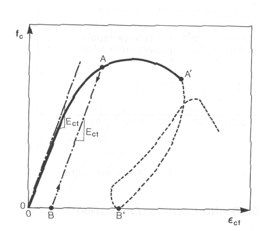</div>
        <figcaption><b>Fig. 2.8a.</b> Descarga y recarga antes del pico: la descarga es casi lineal (AB) y al recargar se vuelve a la curva original. <span class="pg">Llopiz T2, pág. 19</span></figcaption>
      </figure>
      <figure class="w-sm">
        <div class="frame">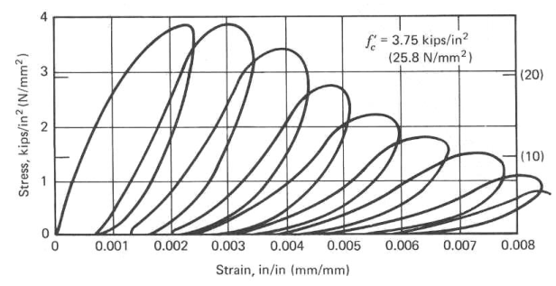</div>
        <figcaption><b>Fig. 2.8b.</b> Ciclos repetidos en compresión: cada lazo disipa energía (histéresis) y la envolvente coincide con la curva monotónica. <span class="pg">Llopiz T2, pág. 19</span></figcaption>
      </figure>

      <h4>Influencia de la velocidad de carga <span class="pg">· pág. 20</span></h4>
      <p>Tres probetas de la misma mezcla, conservadas igual y ensayadas a distinta velocidad, muestran que la aplicación rápida aumenta la resistencia cerca de un 20 %, y una muy lenta la reduce en otro tanto. En diseño se ignora la disminución por carga de larga duración, pero también la ganancia con el tiempo (el diseño se basa en los 28 días): como el hormigón gana usualmente entre un 20 y un 40 % por encima de los 28 días, ambas suposiciones tienden a compensarse y las hipótesis de diseño son seguras. El ensayo de probetas normalizadas se hace entre 2 y 10 minutos (del orden de 0,001 mm/mm por minuto).</p>
      <figure class="w-sm">
        <div class="frame">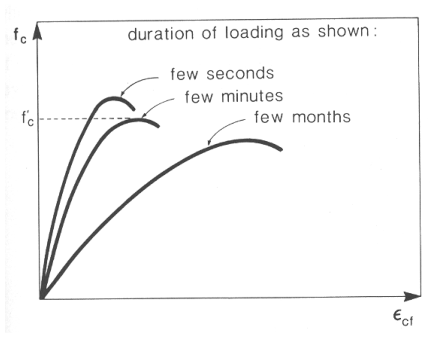</div>
        <figcaption><b>Fig. 2.9.</b> Efecto de la velocidad de carga: cargado rápido (un par de segundos) resiste ≈ 20 % más, y cargado muy lento (carga sostenida) ≈ 20 % menos, que en el ensayo estándar. <span class="pg">Llopiz T2, pág. 20</span></figcaption>
      </figure>

      <h4>Influencia de la edad del hormigón <span class="pg">· págs. 20–23</span></h4>
      <p>La resistencia se incrementa con un curado apropiado y continúa después de retirar los moldes. Curar es suministrar humedad y mantener la temperatura apropiada para que el cemento siga hidratándose. En la práctica, muy poco después de colocado se cubre el hormigón con materiales que mantengan la humedad (si son absorbentes, deben mantenerse húmedos; a veces se lo cubre con agua) para prevenir la evaporación. Es buena práctica mantenerlo entre 5 y 20 °C, en particular durante las primeras 12 horas. El curado debe durar varios días según el cemento; en nuestro medio, el cemento puzolánico implica mayor tiempo de curado, tal vez un 30 % más que el portland normal.</p>
      <p>Por debajo del congelamiento y hasta −12 °C el hormigón muestra un leve incremento de resistencia, pero esas temperaturas no pueden aplicarse hasta que haya ganado cierta resistencia (usualmente unas 24 horas) para no sufrir daño irreparable; por debajo de −12 °C no gana resistencia. Curado a 21 °C, a los 7 días tiene cerca del 60 % de la resistencia de 28 días; a 4 °C, el 40 % a los 7 días y recién el 60 % a los 14; a 30 °C, cerca del 70 % a los 7 días.</p>
      <figure class="w-sm">
        <div class="frame">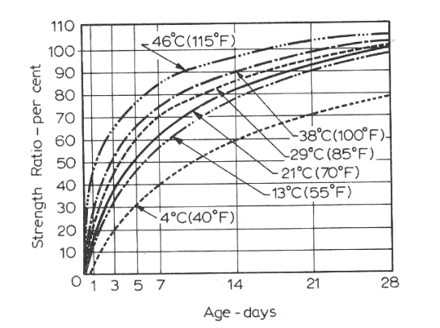</div>
        <figcaption><b>Fig. 2.10a.</b> Resistencia (relativa a 28 días a 21 °C, a/c = 0,50) según la temperatura de curado: el frío atrasa mucho la ganancia y el calor la adelanta. <span class="pg">Llopiz T2, pág. 21</span></figcaption>
      </figure>
      <p>El efecto de la temperatura en las dos primeras horas se ve en la Fig. 2.10b: temperaturas altas al inicio dan ganancia rápida los primeros días, pero después de una o dos semanas la situación cambia drásticamente; las probetas curadas esas primeras horas entre 4 y 23 °C ganaron más con el tiempo que las curadas entre 32 y 40 °C.</p>
      <figure class="w-sm">
        <div class="frame">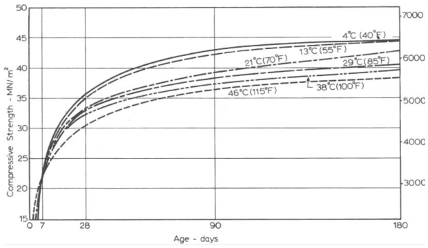</div>
        <figcaption><b>Fig. 2.10b.</b> Temperatura durante las dos primeras horas: el hormigón que arranca caliente gana rápido al principio, pero termina más débil que el que arrancó templado. <span class="pg">Llopiz T2, pág. 21</span></figcaption>
      </figure>
      <figure class="w-sm">
        <div class="frame">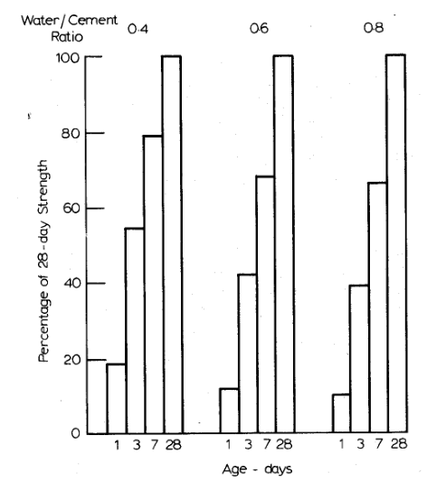</div>
        <figcaption><b>Fig. 2.10c.</b> Ganancia de resistencia de 1 a 28 días para a/c = 0,4, 0,6 y 0,8 (cemento portland normal): cuanto menor es la relación agua/cemento, más rápido gana resistencia. <span class="pg">Llopiz T2, pág. 22</span></figcaption>
      </figure>
      <p>El curado, en particular en los primeros días, es crucial para las características mecánicas, y suele subestimarse en obra: la resistencia, la rigidez y la durabilidad dependen fuertemente de cómo se coloque y se cure, y esto puede pesar más que un análisis numérico sofisticado con hipótesis lejanas a la realidad de la obra.</p>
      <p>La velocidad de ganancia interesa al control en obra: a veces conviene verificar la calidad antes de los 28 días. Para cemento portland normal, f<sub>28</sub>/f<sub>7</sub> ≈ 1,50, es decir, a los 7 días debería tener entre el 60 y el 70 % de la resistencia de 28 días; el clima puede variar estos números. Aunque el hormigón no se proteja especialmente, el agua evaporable no se pierde de inmediato y la resistencia crece hasta cierto límite, pero la resistencia final puede no ser la esperada.</p>
      <p>El código británico CP110 acepta, si se prueba que la carga completa llegará más tarde, estos factores de aumento (útiles también para evaluar estructuras existentes):</p>
      <div class="tbl"><table>
        <thead><tr><th>Edad mínima al recibir la carga completa [meses]</th><th class="num">1</th><th class="num">2</th><th class="num">3</th><th class="num">6</th><th class="num">12</th></tr></thead>
        <tbody><tr><td>Factor de corrección (Tabla 2.1)</td><td class="num">1,00</td><td class="num">1,10</td><td class="num">1,15</td><td class="num">1,20</td><td class="num">1,24</td></tr></tbody>
      </table></div>
      <p>En condiciones normales, el portland comienza a fraguar entre 30 y 45 minutos después de quedar en reposo y termina a las 10 o 12 horas; luego endurece rápido el primer mes y más lento hasta estabilizarse cerca del año. Cifras orientativas (resistencia relativa a 28 días):</p>
      <div class="tbl"><table>
        <thead><tr><th>Edad [días]</th><th class="num">3</th><th class="num">7</th><th class="num">28</th><th class="num">90</th><th class="num">360</th></tr></thead>
        <tbody><tr><td>Resistencia a compresión</td><td class="num">0,40</td><td class="num">0,65</td><td class="num">1,00</td><td class="num">1,20</td><td class="num">1,35</td></tr></tbody>
      </table></div>
      <div class="box old">
        <span class="lbl">Actualización · CIRSOC 200-24, arts. 4.10.2, 2.3.3 y 6.1.6</span>
        <ul>
          <li><strong>Curado:</strong> se mantiene hasta que el hormigón de la estructura alcance el <strong>70 % de la resistencia de diseño</strong> (art. 4.10.2.1). Mínimos de referencia (Tabla 4.9): <strong>5 días</strong> con cementos CPN, CPF, CPC, CPE o CPP de categoría 40–50 (diseño a 28 días); <strong>8 días</strong> con categoría 30 o con CAH; 3 días con cemento de alta resistencia inicial y diseño a 7 días.</li>
          <li>Solo cuentan los días con temperatura media ≥ 10 °C; entre 5 y 10 °C, dos días valen uno (art. 4.10.2.5). Agua de curado a más de 10 °C.</li>
          <li><strong>Edad de diseño:</strong> 28 días salvo que el proyecto fije otra (art. 2.3.3.1); se admite más para cementos de crecimiento tardío y hormigón masivo.</li>
          <li>Probetas de 10 × 20 cm admitidas (art. 6.1.6.1), con diámetro ≥ 3 veces el agregado máximo; sin ensayos comparativos, f'<sub>c</sub>(15×30) = 0,95·f'<sub>c</sub>(10×20).</li>
        </ul>
      </div>

      <h4>Fluencia lenta del hormigón <span class="pg">· págs. 23–30</span></h4>
      <p>La respuesta tensión-deformación depende de la velocidad y de la historia de cargas. Si la tensión se mantiene constante, la deformación aumenta: <strong>fluencia lenta</strong> (<em>creep</em>). Si se mantiene constante la deformación, la tensión decrece: <strong>relajación</strong>. Según la ref. [1], el efecto de la fluencia se tiene en cuenta con un módulo de elasticidad efectivo E<sub>c,eff</sub>. Las deformaciones por fluencia y por contracción son del mismo orden que las elásticas en el rango usual de tensiones, y en servicio no pueden ignorarse.</p>
      <figure class="w-sm">
        <div class="frame">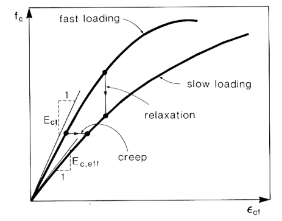</div>
        <figcaption><b>Fig. 2.11(a).</b> Fluencia y relajación: desde la curva de carga rápida, con tensión constante la deformación crece (fluencia) y con deformación constante la tensión baja (relajación); E<sub>c,eff</sub> es la pendiente "ablandada" que resume ese efecto. <span class="pg">Llopiz T2, pág. 23</span></figcaption>
      </figure>
      <figure class="w-sm">
        <div class="frame">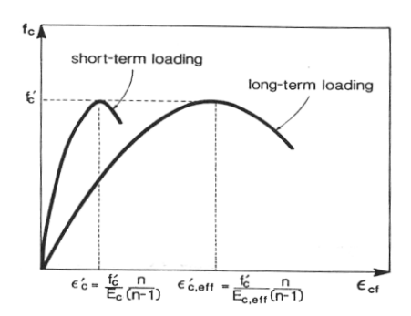</div>
        <figcaption><b>Fig. 2.11(b).</b> Curva de corta y de larga duración: con carga sostenida el pico se alcanza a una deformación mucho mayor (ε'<sub>c,eff</sub>). <span class="pg">Llopiz T2, pág. 23</span></figcaption>
      </figure>
      <p>En un ensayo de fluencia, la tensión se aplica a una edad t<sub>i</sub> (días después del colado) y se mantiene constante. La deformación inicial ε<sub>ci</sub> es la elástica; la que sigue, dependiente del tiempo, es la de fluencia ε<sub>cflu</sub>. La relación entre ambas, a los t días del colado con carga aplicada a los t<sub>i</sub> días, es el <strong>coeficiente de fluencia φ(t, t<sub>i</sub>)</strong>:</p>
      <figure class="w-sm">
        <div class="frame">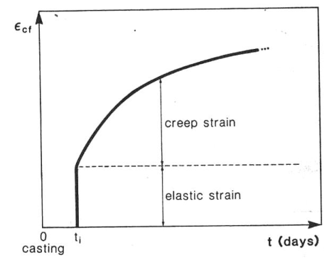</div>
        <figcaption><b>Fig. 2.12(a).</b> Deformación en el tiempo con carga constante: salto elástico inicial, fluencia creciente con pendiente decreciente y, al descargar, recuperación elástica y de fluencia parciales; queda una deformación permanente. <span class="pg">Llopiz T2, pág. 24</span></figcaption>
      </figure>
      <figure class="w-sm">
        <div class="frame">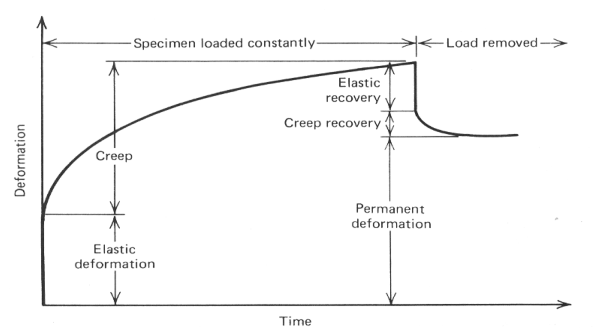</div>
        <figcaption><b>Fig. 2.12(b).</b> La carga del ensayo: tensión f<sub>ci</sub> aplicada a la edad t<sub>i</sub> y mantenida hasta t. El título del apunte dice "variación de las tensiones", pero lo que se mide es la deformación con tensión constante. <span class="pg">Llopiz T2, pág. 24</span></figcaption>
      </figure>
      
      <p>La ref. [1] da:</p>
      <div class="eq"><math display="block"><mrow><mi>φ</mi><mo stretchy="false">(</mo><mi>t</mi><mo>,</mo><msub><mi>t</mi><mi>i</mi></msub><mo stretchy="false">)</mo><mo>=</mo><mfrac><mrow><msub><mi>ε</mi><mrow><mi mathvariant="normal">cflu</mi></mrow></msub></mrow><mrow><msub><mi>ε</mi><mrow><mi mathvariant="normal">ci</mi></mrow></msub></mrow></mfrac><mo>=</mo><mn>3,5</mn><mspace width="0.17em"/><msub><mi>k</mi><mi>c</mi></msub><mspace width="0.17em"/><msub><mi>k</mi><mi>f</mi></msub><mo stretchy="true">(</mo><mn>1,58</mn><mo>−</mo><mfrac><mrow><mi>H</mi></mrow><mrow><mn>120</mn></mrow></mfrac><mo stretchy="true">)</mo><msubsup><mi>t</mi><mi>i</mi><mrow><mo>−</mo><mn>0,118</mn></mrow></msubsup><mspace width="0.17em"/><mfrac><mrow><mo stretchy="false">(</mo><mi>t</mi><mo>−</mo><msub><mi>t</mi><mi>i</mi></msub><msup><mo stretchy="false">)</mo><mrow><mn>0,6</mn></mrow></msup></mrow><mrow><mn>10</mn><mo>+</mo><mo stretchy="false">(</mo><mi>t</mi><mo>−</mo><msub><mi>t</mi><mi>i</mi></msub><msup><mo stretchy="false">)</mo><mrow><mn>0,6</mn></mrow></msup></mrow></mfrac></mrow></math><span class="tag">(2.6b)</span></div>
      <div class="eq"><math display="block"><mrow><msub><mi>k</mi><mi>f</mi></msub><mo>=</mo><mfrac><mrow><mn>1</mn></mrow><mrow><mn>0,67</mn><mo>+</mo><mstyle displaystyle="true"><mfrac><mrow><msubsup><mi>f</mi><mi>c</mi><mrow><mo>′</mo></mrow></msubsup></mrow><mrow><mn>62</mn></mrow></mfrac></mstyle></mrow></mfrac></mrow></math><span class="tag">(2.7)</span></div>
      <p>con H la humedad relativa en %, k<sub>c</sub> el factor de la relación volumen/superficie (Fig. 2.13) y k<sub>f</sub> (2.7), que reconoce la menor fluencia del hormigón de alta resistencia (para f'<sub>c</sub> &lt; 21 MPa resulta mayor que 1). Un día de curado acelerado equivale a agregar 7 días a la edad de carga. k<sub>c</sub> cuantifica que la fluencia (y la contracción) disminuyen al aumentar el espesor: en la superficie la humedad es menor que en el núcleo, así que a mayor superficie expuesta, mayor fluencia.</p>
      <figure class="w-sm">
        <div class="frame">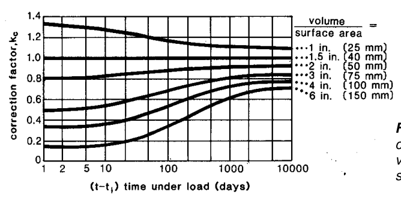</div>
        <figcaption><b>Fig. 2.13.</b> Factor k<sub>c</sub> según la relación volumen/superficie expuesta: las piezas delgadas (poco volumen por unidad de superficie) tienen más fluencia. <span class="pg">Llopiz T2, pág. 25</span></figcaption>
      </figure>
      <p>El método de la ref. [1] calcula la deformación total ε<sub>cf</sub>(t, t<sub>i</sub>) a los t días, causada por la tensión f<sub>ci</sub> aplicada a los t<sub>i</sub> días y mantenida durante (t − t<sub>i</sub>): <span class="pg">págs. 25–26</span></p>
      <div class="deriv">
      <div class="st"><div class="why">Deformación total con el módulo efectivo</div><div class="ex"><math display="block"><mrow><msub><mi>ε</mi><mrow><mi mathvariant="normal">cf</mi></mrow></msub><mo stretchy="false">(</mo><mi>t</mi><mo>,</mo><msub><mi>t</mi><mi>i</mi></msub><mo stretchy="false">)</mo><mo>=</mo><mfrac><mrow><msub><mi>f</mi><mrow><mi mathvariant="normal">ci</mi></mrow></msub></mrow><mrow><msub><mi>E</mi><mrow><mi mathvariant="normal">ceff</mi></mrow></msub></mrow></mfrac></mrow></math></div><div class="tag">(2.8)</div></div>
      <div class="st"><div class="why">Módulo de elasticidad efectivo</div><div class="ex"><math display="block"><mrow><msub><mi>E</mi><mrow><mi mathvariant="normal">ceff</mi></mrow></msub><mo>=</mo><mfrac><mrow><msub><mi>E</mi><mrow><mi mathvariant="normal">ci</mi></mrow></msub></mrow><mrow><mn>1</mn><mo>+</mo><mi>φ</mi><mo stretchy="false">(</mo><mi>t</mi><mo>,</mo><msub><mi>t</mi><mi>i</mi></msub><mo stretchy="false">)</mo></mrow></mfrac></mrow></math></div><div class="tag">(2.9)</div></div>
      <div class="st"><div class="why">Deformación por fluencia, con la deformación inicial aproximada linealmente</div><div class="ex"><math display="block"><mrow><msub><mi>ε</mi><mrow><mi mathvariant="normal">cflu</mi></mrow></msub><mo stretchy="false">(</mo><mi>t</mi><mo>,</mo><msub><mi>t</mi><mi>i</mi></msub><mo stretchy="false">)</mo><mo>=</mo><msub><mi>ε</mi><mrow><mi mathvariant="normal">cf</mi></mrow></msub><mo stretchy="false">(</mo><mi>t</mi><mo>,</mo><msub><mi>t</mi><mi>i</mi></msub><mo stretchy="false">)</mo><mo>−</mo><msub><mi>ε</mi><mrow><mi mathvariant="normal">ci</mi></mrow></msub><mspace width="2em"/><msub><mi>ε</mi><mrow><mi mathvariant="normal">ci</mi></mrow></msub><mo>=</mo><mfrac><mrow><msub><mi>f</mi><mrow><mi mathvariant="normal">ci</mi></mrow></msub></mrow><mrow><msub><mi>E</mi><mi>c</mi></msub></mrow></mfrac></mrow></math></div><div class="tag">(2.10)</div></div>
      <div class="st mine"><div class="why"><b>Paso agregado (aclaración):</b> reemplazando (2.9) en (2.8), con E<sub>c</sub> ≈ E<sub>ci</sub>, la total es la elástica multiplicada por (1 + φ), y la de fluencia es φ veces la elástica, que es la definición de (2.6b)</div><div class="ex"><math display="block"><mrow><msub><mi>ε</mi><mrow><mi mathvariant="normal">cf</mi></mrow></msub><mo>=</mo><mfrac><mrow><msub><mi>f</mi><mrow><mi mathvariant="normal">ci</mi></mrow></msub></mrow><mrow><msub><mi>E</mi><mrow><mi mathvariant="normal">ci</mi></mrow></msub></mrow></mfrac><mo stretchy="false">(</mo><mn>1</mn><mo>+</mo><mi>φ</mi><mo stretchy="false">)</mo><mo>=</mo><msub><mi>ε</mi><mrow><mi mathvariant="normal">ci</mi></mrow></msub><mo stretchy="false">(</mo><mn>1</mn><mo>+</mo><mi>φ</mi><mo stretchy="false">)</mo><mspace width="1em"/><mo>⇒</mo><mspace width="1em"/><msub><mi>ε</mi><mrow><mi mathvariant="normal">cflu</mi></mrow></msub><mo>=</mo><mi>φ</mi><mspace width="0.17em"/><msub><mi>ε</mi><mrow><mi mathvariant="normal">ci</mi></mrow></msub></mrow></math></div><div class="tag"></div></div>
      </div>
      <p>La fluencia puede ser varias veces mayor que la deformación elástica y continúa con pendiente decreciente. Al retirar la carga, la recuperación elástica es inmediata pero menor que la deformación inicial (porque E<sub>c</sub> crece con la edad), seguida de una recuperación proporcionalmente pequeña de la fluencia: la deformación permanente puede ser importante.</p>
      <p><strong>Ejemplo 1</strong> <span class="pg">(págs. 26–27)</span>. Prisma de hormigón simple de 30 × 30 × 122 cm cargado con 15 MPa a los 10 días (f'<sub>c</sub> = 30 MPa en ese momento), con 1 día de curado a vapor, mantenido 100 días con H = 70 %.</p>
      <figure class="w-sm">
        <div class="frame">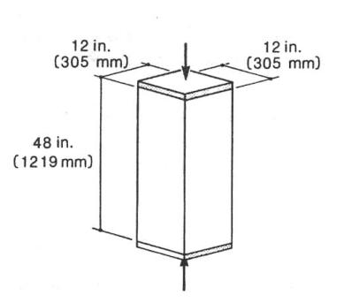</div>
        <figcaption><b>Fig. E-1.</b> El prisma del ejemplo: 30 × 30 cm de sección y 1,22 m de largo, comprimido axialmente. <span class="pg">Llopiz T2, pág. 26</span></figcaption>
      </figure>
      <ul class="body">
        <li>E<sub>c</sub> = 4 700√30 = 25 743 MPa; ε<sub>o</sub> = 2,33·10⁻³; ε<sub>ci</sub> = 15/25 743 = 0,583·10⁻³.</li>
        <li>Volumen/área expuesta = 30 × 30 × 122 / (4 × 122 × 30) = 7,5 cm (3") → k<sub>c</sub> = 0,68; k<sub>f</sub> = 0,87.</li>
        <li>t<sub>i</sub> = 9 + 7 = 16 días (1 día de curado rápido); t = 16 + 100 = 116 días.</li>
        <li>φ(116, 16) = 0,95 → E<sub>c,eff</sub> = 25 743/1,95 = 13 234 MPa → ε<sub>cf</sub> = 15/13 234 = 1,13·10⁻³ → ε<sub>cflu</sub> = 0,55·10⁻³.</li>
      </ul>
      <p>La deformación diferida resulta muy similar a la inicial: la deformación final a los 100 días es el doble de la elástica.</p>
      <div class="box nota">
        <span class="lbl">Aclaración</span>
        <p>Con los factores que el apunte escribe (3,5 × 0,68 × 0,87 × 0,997 × 0,72 × 0,61) φ da <strong>0,91</strong>, no 0,95. Así E<sub>c,eff</sub> ≈ 13 490 MPa y ε<sub>cf</sub> ≈ 1,11·10⁻³. La conclusión no cambia.</p>
      </div>
      <p>El comité ACI 209 (citado en la ref. [6]) propone, con el mismo significado que φ:</p>
      <div class="eq"><math display="block"><mrow><msub><mi>C</mi><mi>t</mi></msub><mo>=</mo><msub><mi>C</mi><mi>u</mi></msub><mo>·</mo><msub><mi>K</mi><mi>t</mi></msub><mo>·</mo><msub><mi>K</mi><mi>a</mi></msub><mo>·</mo><msub><mi>K</mi><mi>h</mi></msub><mo>·</mo><msub><mi>K</mi><mrow><mi mathvariant="normal">th</mi></mrow></msub><mo>·</mo><msub><mi>K</mi><mi>s</mi></msub><mo>·</mo><msub><mi>K</mi><mi>f</mi></msub><mo>·</mo><msub><mi>K</mi><mi>e</mi></msub></mrow></math><span class="tag">(2.11), (2.12)</span></div>
      <ul class="body">
        <li>C<sub>u</sub>: coeficiente último, de 1,30 a 4,15; en general <strong>2,35</strong>.</li>
        <li>K<sub>t</sub> = (t − t<sub>i</sub>)<sup>0,6</sup>/[10 + (t − t<sub>i</sub>)<sup>0,6</sup>] (2.13).</li>
        <li>K<sub>a</sub> = 1,25·t<sub>i</sub><sup>−0,118</sup> con curado húmedo, o 1,13·t<sub>i</sub><sup>−0,095</sup> con vapor (2.14).</li>
        <li>K<sub>h</sub> = 1,27 − 0,0067·H, para H &gt; 40 % (2.15).</li>
        <li>K<sub>th</sub> (menor espesor): 1,0 hasta 15 cm, 0,82 para 30 cm · K<sub>s</sub> (asentamiento): 0,95 / 1,0 / 1,09 para 5 / 7,5 / 10 cm · K<sub>f</sub> (% de finos): 0,95 / 1,00 / 1,05 para 30 / 50 / 70 % · K<sub>e</sub> (aire): 1,0 / 1,09 / 1,17 hasta 6 / 7 / 8 %.</li>
      </ul>
      <p>El mecanismo del creep aún es controvertido; se presume ligado a la estructura del gel de la pasta, y lo indiscutible es que requiere agua evaporable. La fluencia depende de la composición del hormigón, del ambiente, de la forma y dimensiones y de la historia de cargas. <strong>Aumentan la fluencia:</strong> mayor relación a/c, mayor contenido de cemento y de aire, menor humedad, mayor pérdida de agua (mal curado), mayor superficie expuesta, carga a edad temprana y carga más prolongada. <strong>La reducen:</strong> más agregado respecto del cemento, mayor humedad ambiente, restricción a la pérdida de agua y demorar lo más posible la carga. <span class="pg">pág. 29</span></p>
      <p>En general, la fluencia tiene poco efecto en la resistencia, pero redistribuye tensiones en servicio al variar el módulo: afecta deformaciones y flechas, no resistencias. En <strong>columnas</strong> produce una transferencia gradual de carga del hormigón al acero; una vez que el acero fluye, el incremento lo toma el hormigón, de modo que ambas resistencias se suman en la resistencia última a compresión. En estructuras hiperestáticas puede ser <strong>beneficiosa</strong>, al liberar tensiones por temperatura, contracción o movimientos de apoyos; en el caso de la contracción (acero comprimido y hormigón traccionado), el creep aumenta la compresión en el tiempo y disminuye la tracción y la fisuración. La situación real no es de "fluencia libre": la modifican la cantidad y posición de las armaduras.</p>
      <p>En hormigón en masa, el creep puede causar fisuración importante si el elemento está restringido y sufre el calor de hidratación y el posterior enfriamiento: la fluencia relaja las compresiones del calentamiento y, al enfriarse, aparecen tracciones que fisuran aun antes de volver a la temperatura de colado. Por eso se controla con cementos de bajo calor, bajo contenido de cemento, preenfriamiento, capas bajas y circulación de agua por conductos embebidos. <span class="pg">pág. 30</span></p>
      <figure class="w-sm">
        <div class="frame">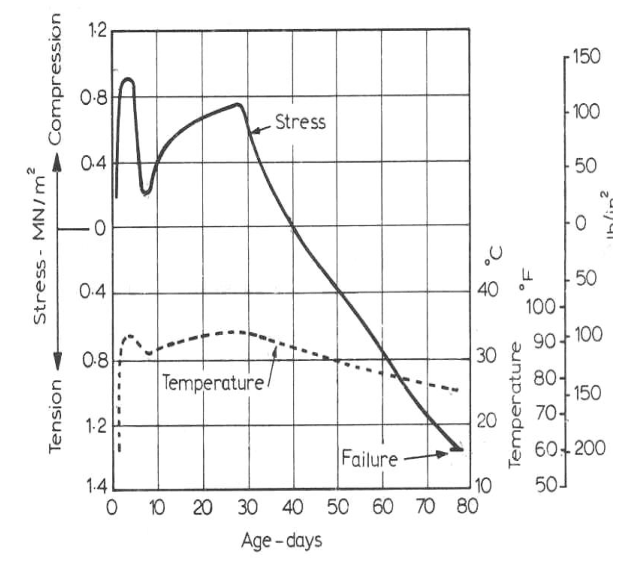</div>
        <figcaption><b>Fig. 2.14a.</b> Hormigón restringido que se calienta y luego se enfría: la compresión inicial se relaja por fluencia, y al enfriarse la tensión pasa a tracción antes de volver a la temperatura inicial. <span class="pg">Llopiz T2, pág. 30</span></figcaption>
      </figure>
      <p>Como la naturaleza del creep no se conoce bien, se lo representa con modelos reológicos: resortes (parte elástica, recuperable) y amortiguadores (parte viscosa, no recuperable y proporcional a la tensión aplicada).</p>
      <figure class="w-sm">
        <div class="frame">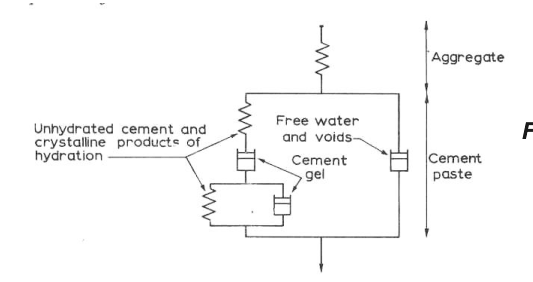</div>
        <figcaption><b>Fig. 2.14b.</b> Modelo reológico del creep: resortes (agregado, gel) que representan la parte elástica y amortiguadores (agua libre y vacíos) que representan la parte viscosa. <span class="pg">Llopiz T2, pág. 31</span></figcaption>
      </figure>
      <div class="box old">
        <span class="lbl">Reglamento · CIRSOC 201-25, art. 24.2.4</span>
        <p>El 201-25 no da valores de fluencia ni de contracción: remite al ACI 209R y a Branson. La deformación diferida se calcula con <strong>λ<sub>Δ</sub> = ξ/(1 + 50ρ')</strong>, con ξ = 1,0 / 1,2 / 1,4 / <strong>2,0</strong> para 3 / 6 / 12 / 60 o más meses (Tabla 24.2.4.1.3). El término 50ρ' es la reducción por armadura comprimida que menciona Llopiz.</p>
      </div>

      <h4>Contracción del hormigón <span class="pg">· págs. 31–50</span></h4>
      <p>Salvo bajo agua o con 100 % de humedad, el hormigón pierde humedad por evaporación y se contrae. Como la fluencia, depende fuertemente de la composición (en particular del agua de amasado), de la humedad y de la restricción a la pérdida de agua. Si la contracción está restringida, las tensiones pueden fisurar. La tasa de contracción disminuye con el tiempo. Las deformaciones suelen estar entre <strong>0,2·10⁻³ y 0,6·10⁻³</strong> (0,2 a 0,6 mm/m), y en casos muy desfavorables llegan a 0,001 (1 mm/m).</p>
      <figure class="w-sm">
        <div class="frame">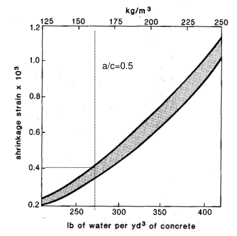</div>
        <figcaption><b>Fig. 2.15(a).</b> La contracción crece mucho con el agua de amasado (para 320 kgf/m³ de cemento, a/c de 0,39 a 0,70). <span class="pg">Llopiz T2, pág. 31</span></figcaption>
      </figure>
      <figure class="w-sm">
        <div class="frame">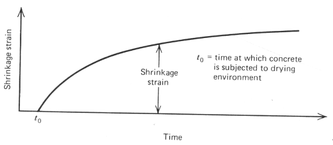</div>
        <figcaption><b>Fig. 2.15(b).</b> Curva típica de contracción: crece rápido al principio y cada vez más lento. <span class="pg">Llopiz T2, pág. 32</span></figcaption>
      </figure>
      <p>La contracción es casi reversible: si el hormigón se satura, recupera casi todo su volumen, por lo que la alternancia de sequedad y humedad produce variaciones de volumen (típico en puentes a lo largo del año). Un hormigón con alta fluencia suele tener también alta contracción. La armadura, por adherencia, disminuye la contracción, pero genera tracciones en el hormigón. <span class="pg">pág. 32</span></p>
      <figure class="w-sm">
        <div class="frame">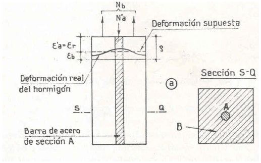</div>
        <figcaption><b>Fig. 2.16(a).</b> Barra en el centro de una sección que se contrae: el hormigón querría acortarse ε<sub>ρ</sub>, la barra lo restringe a ε'<sub>a</sub>; en perpendicular la contracción es libre y "aprieta" la barra, mejorando la adherencia. <span class="pg">Llopiz T2, pág. 32</span></figcaption>
      </figure>
      <figure class="w-sm">
        <div class="frame">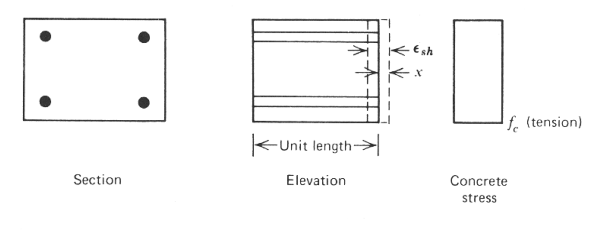</div>
        <figcaption><b>Fig. 2.16(b).</b> Elemento con armadura simétrica: sin acero se acortaría ε<sub>sh</sub>; con acero se acorta solo x. El acero queda comprimido y el hormigón traccionado. <span class="pg">Llopiz T2, pág. 33</span></figcaption>
      </figure>
      <p>En la Fig. 2.16(b), un elemento de longitud unitaria se acortaría ε<sub>sh</sub> si no hubiera acero; con acero se acorta solo x. La armadura queda comprimida y el hormigón traccionado: <span class="pg">pág. 33</span></p>
      <div class="deriv">
      <div class="st"><div class="why">Compresión en el acero</div><div class="ex"><math display="block"><mrow><msub><mi>f</mi><mi>s</mi></msub><mo>=</mo><mi>x</mi><mspace width="0.17em"/><msub><mi>E</mi><mi>s</mi></msub></mrow></math></div><div class="tag">(2.16a)</div></div>
      <div class="st"><div class="why">Tracción en el hormigón; C<sub>t</sub> es el factor de fluencia lenta, que reduce E<sub>c</sub> a E<sub>ceff</sub></div><div class="ex"><math display="block"><mrow><msub><mi>f</mi><mi>c</mi></msub><mo>=</mo><mo stretchy="false">(</mo><msub><mi>ε</mi><mrow><mi mathvariant="normal">sh</mi></mrow></msub><mo>−</mo><mi>x</mi><mo stretchy="false">)</mo><mfrac><mrow><msub><mi>E</mi><mi>c</mi></msub></mrow><mrow><mn>1</mn><mo>+</mo><msub><mi>C</mi><mi>t</mi></msub></mrow></mfrac></mrow></math></div><div class="tag">(2.16b)</div></div>
      <div class="st"><div class="why">Equilibrio de la sección</div><div class="ex"><math display="block"><mrow><msub><mi>f</mi><mi>s</mi></msub><msub><mi>A</mi><mi>s</mi></msub><mo>=</mo><msub><mi>f</mi><mi>c</mi></msub><msub><mi>A</mi><mi>c</mi></msub></mrow></math></div><div class="tag">(2.17a)</div></div>
      <div class="st"><div class="why">con la cuantía ρ = A<sub>s</sub>/A<sub>c</sub></div><div class="ex"><math display="block"><mrow><msub><mi>f</mi><mi>s</mi></msub><mo>=</mo><msub><mi>f</mi><mi>c</mi></msub><mfrac><mrow><msub><mi>A</mi><mi>c</mi></msub></mrow><mrow><msub><mi>A</mi><mi>s</mi></msub></mrow></mfrac><mo>=</mo><mfrac><mrow><msub><mi>f</mi><mi>c</mi></msub></mrow><mrow><mi>ρ</mi></mrow></mfrac></mrow></math></div><div class="tag">(2.17b)</div></div>
      <div class="st mine"><div class="why"><b>Paso agregado (aclaración):</b> de (2.16a) y (2.17b) sale el acortamiento x; se reemplaza en (2.16b) y se agrupa f<sub>c</sub></div><div class="ex"><math display="block"><mrow><mi>x</mi><mo>=</mo><mfrac><mrow><msub><mi>f</mi><mi>s</mi></msub></mrow><mrow><msub><mi>E</mi><mi>s</mi></msub></mrow></mfrac><mo>=</mo><mfrac><mrow><msub><mi>f</mi><mi>c</mi></msub></mrow><mrow><mi>ρ</mi><msub><mi>E</mi><mi>s</mi></msub></mrow></mfrac><mspace width="1em"/><mo>⇒</mo><mspace width="1em"/><msub><mi>f</mi><mi>c</mi></msub><mfrac><mrow><mn>1</mn><mo>+</mo><msub><mi>C</mi><mi>t</mi></msub></mrow><mrow><msub><mi>E</mi><mi>c</mi></msub></mrow></mfrac><mo>=</mo><msub><mi>ε</mi><mrow><mi mathvariant="normal">sh</mi></mrow></msub><mo>−</mo><mfrac><mrow><msub><mi>f</mi><mi>c</mi></msub></mrow><mrow><mi>ρ</mi><msub><mi>E</mi><mi>s</mi></msub></mrow></mfrac><mspace width="1em"/><mo>⇒</mo><mspace width="1em"/><msub><mi>f</mi><mi>c</mi></msub><mo stretchy="true">[</mo><mfrac><mrow><mn>1</mn><mo>+</mo><msub><mi>C</mi><mi>t</mi></msub></mrow><mrow><msub><mi>E</mi><mi>c</mi></msub></mrow></mfrac><mo>+</mo><mfrac><mrow><mn>1</mn></mrow><mrow><mi>ρ</mi><msub><mi>E</mi><mi>s</mi></msub></mrow></mfrac><mo stretchy="true">]</mo><mo>=</mo><msub><mi>ε</mi><mrow><mi mathvariant="normal">sh</mi></mrow></msub></mrow></math></div><div class="tag"></div></div>
      <div class="st res"><div class="why">Tensión de tracción resultante en el hormigón</div><div class="ex"><math display="block"><mrow><msub><mi>f</mi><mi>c</mi></msub><mo>=</mo><mfrac><mrow><msub><mi>ε</mi><mrow><mi mathvariant="normal">sh</mi></mrow></msub></mrow><mrow><mstyle displaystyle="true"><mfrac><mrow><mn>1</mn><mo>+</mo><msub><mi>C</mi><mi>t</mi></msub></mrow><mrow><msub><mi>E</mi><mi>c</mi></msub></mrow></mfrac></mstyle><mo>+</mo><mstyle displaystyle="true"><mfrac><mrow><mn>1</mn></mrow><mrow><mi>ρ</mi><msub><mi>E</mi><mi>s</mi></msub></mrow></mfrac></mstyle></mrow></mfrac></mrow></math></div><div class="tag">(2.18)</div></div>
      <div class="st mine"><div class="why"><b>Paso agregado (aclaración):</b> con los datos del apunte (C<sub>t</sub> = 2, ε<sub>sh</sub> = 0,0005, ρ = 0,02, E<sub>c</sub> = 25 700 MPa, E<sub>s</sub> = 210 000 MPa)</div><div class="ex"><math display="block"><mrow><msub><mi>f</mi><mi>c</mi></msub><mo>=</mo><mfrac><mrow><mn>0,0005</mn></mrow><mrow><mstyle displaystyle="true"><mfrac><mrow><mn>3</mn></mrow><mrow><mn>25</mn><mspace width="0.17em"/><mn>700</mn></mrow></mfrac></mstyle><mo>+</mo><mstyle displaystyle="true"><mfrac><mrow><mn>1</mn></mrow><mrow><mn>0,02</mn><mo>·</mo><mn>210</mn><mspace width="0.17em"/><mn>000</mn></mrow></mfrac></mstyle></mrow></mfrac><mo>=</mo><mfrac><mrow><mn>0,0005</mn></mrow><mrow><mn>1,167</mn><mo>·</mo><msup><mn>10</mn><mrow><mo>−</mo><mn>4</mn></mrow></msup><mo>+</mo><mn>2,381</mn><mo>·</mo><msup><mn>10</mn><mrow><mo>−</mo><mn>4</mn></mrow></msup></mrow></mfrac><mo>≈</mo><mn>1,41</mn><mtext> MPa</mtext></mrow></math></div><div class="tag"></div></div>
      </div>
      <p>Las tracciones por contracción (a) son proporcionales a ε<sub>sh</sub> y (b) aumentan con la cuantía: el acero que se coloca para controlar las fisuras de contracción aumenta la tracción del hormigón. Con C<sub>t</sub> = 2, ε<sub>sh</sub> = 0,0005, ρ = 0,02, f'<sub>c</sub> = 30 MPa, E<sub>c</sub> = 25 700 MPa y E<sub>s</sub> = 210 000 MPa, la tracción es del orden de 1,4 MPa: si la resistencia a tracción es de 1,5 a 2,0 MPa, el hormigón puede llegar a fisurarse antes de cualquier carga. Es una de las razones por las que se desprecia la tracción del hormigón en servicio y en estado último (salvo cuando importa la fisuración). Curar el mayor tiempo posible retarda el comienzo de la contracción hasta que el hormigón tiene más resistencia a tracción. <span class="pg">págs. 33–34</span></p>
      <p><strong>Ejemplo E-1</strong> <span class="pg">(págs. 34–35)</span>. Columna de 30 × 40 cm con 8 Ø20 (ρ = 0,02):</p>
      <ul class="body">
        <li>C<sub>t</sub> = 2,35 × 0,95 × 0,77 × 0,93 × 0,82 × 1,09 × 0,95 × 1,0 = 1,36 (K<sub>t</sub> = 0,95 a 5 000 días; K<sub>a</sub> = 1,25·60<sup>−0,118</sup> = 0,77; K<sub>h</sub> = 1,27 − 0,0067 × 50 = 0,93; K<sub>th</sub> = 0,82; K<sub>s</sub> = 1,09; K<sub>f</sub> = 0,95; K<sub>e</sub> = 1,0).</li>
        <li>f<sub>c</sub> = 0,0005 / [2,36/23 500 + 1/(0,02 × 210 000)] = 0,0005/(0,000100 + 0,000238) ≈ <strong>1,48 a 1,50 MPa</strong>. Con f<sub>cr</sub> = 0,33√25 = 1,65 MPa, está muy cerca del límite a tracción.</li>
        <li>Deformación de tracción del hormigón: 1,5/[23 500/2,36] = 0,15 mm/m; compresión del acero: ε<sub>s</sub> = 0,50 − 0,15 = 0,35 mm/m → f<sub>s</sub> = 210 000 × 0,35·10⁻³ = <strong>75 MPa</strong> (igual a f<sub>c</sub>/ρ = 1,5/0,02).</li>
        <li>Con 6 Ø8 (ρ = 0,25 %): f<sub>c</sub> = 0,25 MPa, pero f<sub>s</sub> = 0,25/0,0025 = <strong>100 MPa</strong>, casi la cuarta parte de la fluencia. Es un límite que se mantiene aunque se reduzca la cuantía: la tracción del hormigón es mínima y la contracción es casi igual a la compresión del acero (ε<sub>s</sub> = 0,50 − 0,025 = 0,47 mm/m).</li>
      </ul>
      <figure class="w-sm">
        <div class="frame">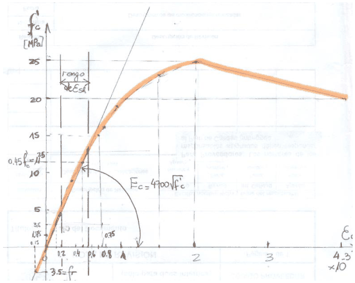</div>
        <figcaption><b>Fig. 2.17.</b> Curva de un H25 con el rango de deformaciones de contracción marcado y el criterio del ACI para E<sub>c</sub> (secante a 0,45 f'<sub>c</sub>): la contracción equivale a una parte importante de la deformación de servicio. <span class="pg">Llopiz T2, pág. 35</span></figcaption>
      </figure>
      <p>Con <strong>armadura no simétrica</strong>, la contracción restringida no es uniforme en la sección y produce curvatura y flecha, en la misma dirección que las de las cargas si la mayor armadura está en la cara traccionada. Por eso la armadura comprimida, aunque reduce poco las deformaciones instantáneas, disminuye en forma significativa las inducidas por contracción y fluencia, y así lo considera el código. <span class="pg">pág. 36</span></p>
      <figure class="w-md">
        <div class="frame">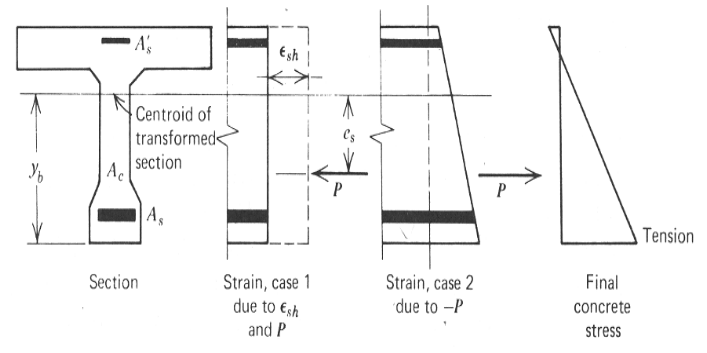</div>
        <figcaption><b>Fig. 2.18.</b> Contracción con armadura asimétrica (secciones planas): la armadura inferior restringe más, el eje se curva y aparece una curvatura de contracción; se resuelve con una fuerza ficticia P en el baricentro de las armaduras. <span class="pg">Llopiz T2, pág. 36</span></figcaption>
      </figure>
      <p><strong>Método de la tensión ficticia</strong>, basado en la sección transformada y la superposición. Estado 1: el hormigón se acorta libremente ε<sub>sh</sub> y, para acortar igual las armaduras, se les aplica <span class="f">P = A<sub>st</sub>·E<sub>s</sub>·ε<sub>sh</sub></span>, con excentricidad e<sub>s</sub> respecto del baricentro de la sección transformada; el hormigón no tiene tensión y el acero, f<sub>s1</sub> = P/A<sub>st</sub> = E<sub>s</sub>ε<sub>sh</sub>. Estado 2: como el conjunto debe estar en autoequilibrio, se superpone una fuerza P de tracción excéntrica: <span class="f">f<sub>c2</sub> = P/A ± P·e<sub>s</sub>·y/I</span> en el hormigón y f<sub>s2</sub> = n·f<sub>c2</sub> en el acero; f<sub>s</sub> = f<sub>s1</sub> + f<sub>s2</sub>. Según la ref. [26], adoptando 0,5·E<sub>c</sub> para el flujo plástico se obtienen buenos resultados, y la curvatura por contracción es <span class="f">φ<sub>sh</sub> = P·e<sub>s</sub>/[(E<sub>c</sub>/2)·I] = M<sub>sh</sub>/[(E<sub>c</sub>/2)·I]</span>. Empíricamente, Branson propone <span class="f">φ<sub>sh</sub> = 0,7·(ε<sub>sh</sub>/h)·(ρ − ρ')<sup>1/3</sup></span>, válida para (ρ − ρ') ≤ 0,03. <span class="pg">págs. 36–37</span></p>
      <p><strong>Ejemplos E-2 a E-5</strong> <span class="pg">(págs. 38–49)</span>: losa de 20 cm, H25, ε<sub>sh</sub> = 0,5 mm/m, E<sub>c</sub> = 235 t/cm², E<sub>s</sub> = 2 100 t/cm², n = 8,94.</p>
      <div class="tbl"><table>
        <thead><tr><th>Caso</th><th>Armadura</th><th>Resultado</th></tr></thead>
        <tbody>
          <tr><td>E-2 · asimétrica, cuantía baja</td><td>Ø12 c/20 inferior (5,65 cm²), sin superior</td><td>P = 5,93 t; e<sub>s</sub> = 6,85 cm; M<sub>sh</sub> = 40,6 tcm; φ<sub>sh</sub> = 5·10⁻⁶ 1/cm. M<sub>cr</sub> (con 50 % de f<sub>r</sub> = 0,7√f'<sub>c</sub>) = 117 tcm, casi 3 veces mayor: no debería fisurar solo por contracción. Bordes: superior −3,09·10⁻³ t/cm² (comprimido), inferior +8,71·10⁻³ t/cm². Acero: −0,99 t/cm². Branson: 2,67·10⁻⁶ 1/cm, bastante distinto (cerca del límite inferior de cuantía). Flecha por contracción (L = 6 m): 0,225 cm; flecha de servicio ≈ 3,75 cm (demasiado grande; razonable ≈ 2,0 cm = L/300).</td></tr>
          <tr><td>E-3 · simétrica, cuantía baja</td><td>Ø12 c/20 arriba y abajo (11,30 cm²)</td><td>e<sub>s</sub> = 0: no hay curvatura. Toda la sección traccionada: f<sub>c</sub> = 5,65·10⁻³ t/cm² (mayor que el 50 % del módulo de rotura); acero −1,00 t/cm². Coincide con la (2.18).</td></tr>
          <tr><td>E-4 · asimétrica, cuantía alta</td><td>Ø20 c/10 inferior (31,4 cm²)</td><td>P = 33 t (5 veces el E-2); M<sub>sh</sub> = 175 tcm (4,3 veces); φ<sub>sh</sub> = 20·10⁻⁶ 1/cm (4 veces). Bordes: superior −0,010 t/cm², inferior +0,037 t/cm², mayor que el módulo de rotura.</td></tr>
          <tr><td>E-5 · simétrica, cuantía alta</td><td>Ø20 c/10 arriba y abajo (ρ = 3,14 %)</td><td>f<sub>c</sub> = 26·10⁻³ t/cm²; acero 0,82 t/cm². Con C<sub>t</sub> = 2: f<sub>c</sub> = 18·10⁻³ t/cm² y acero 0,57 t/cm². Cuantía baja con C<sub>t</sub> = 2: f<sub>c</sub> = 5,15·10⁻³ t/cm² y acero 0,88 t/cm².</td></tr>
        </tbody>
      </table></div>
      <p>Las tracciones por contracción (a) son proporcionales a ε<sub>sh</sub>, (b) aumentan con la cuantía y (c) disminuyen por la fluencia. De los ejemplos: (i) con cuantía baja, simétrica o asimétrica, se genera tracción en uno o ambos bordes y, según el E<sub>c</sub> que se adopte, se está lejos o cerca de la resistencia a tracción; (ii) con armadura asimétrica la tracción es mayor en el borde de mayor armadura; (iii) al aumentar la cuantía simétrica de 0,57 % a 3,14 % (5,5 veces), la tracción del hormigón pasa de 5,65·10⁻³ a 26·10⁻³ (4,6 veces); (iv) con el módulo reducido por creep, para el mismo aumento de cuantía la diferencia "es ahora de 4,5 veces", porque la fuerza ficticia es menor al ser menor la rigidez axial. <span class="pg">pág. 49</span></p>
      <div class="box err">
        <span class="lbl">Errores en el apunte</span>
        <ul>
          <li><strong>Ejemplo E-4:</strong> desde "la fibra de hormigón a la profundidad del acero" en adelante (págs. 45–46) se repiten los valores del E-2 (acero −0,99 t/cm², eje neutro 5,23 cm, Branson con ρ = 0,0033; hasta el rótulo dice "E-2-5"). Recalculado para el E-4: tensión en el hormigón a la altura del acero 0,0272 t/cm², <strong>acero −0,81 t/cm²</strong>, eje neutro a ≈ 4,45 cm del borde superior, y Branson con ρ = 31,4/1 600 = 0,0196 → <strong>4,7·10⁻⁶ 1/cm</strong>.</li>
          <li><strong>Conclusión (iv):</strong> con C<sub>t</sub> = 2 la relación es 17,9/5,15 = <strong>3,5</strong>, no 4,5. Sin creep sí da 4,6.</li>
        </ul>
      </div>
      <p>La contracción también fisura por defectos de curado: en losas, el secado empieza por la cara expuesta, las capas superiores tienden a acortarse más y las inferiores las restringen; si el hormigón no tiene resistencia suficiente, aparecen fisuras en la cara superior. Algunos reglamentos antiguos asimilaban la contracción a un descenso de temperatura de 15 °C (0,00015 con α = 1·10⁻⁵), bastante menos que los valores sugeridos; harían falta 40 a 60 °C para llegar a 0,4 a 0,6·10⁻³. Además, la temperatura no incluye las autotensiones por la restricción de las armaduras, que ocurren también en vigas isostáticas. La ref. [5] justifica un valor menor porque las obras se hacen por etapas, las armaduras reducen la contracción y la fluencia la atenúa. <span class="pg">págs. 49–50</span></p>
      <p>En el <strong>hormigón precomprimido</strong>, la contracción y la fluencia disminuyen la precompresión inicial; fueron las que hicieron fracasar los primeros intentos. Hoy, con aceros de alta resistencia, buen hormigón y buen curado, se mantienen en límites razonablemente bajos. <span class="pg">pág. 50</span></p>
      <p>La ref. [1] da, para curado húmedo, <span class="f">ε<sub>sh</sub> = −k<sub>s</sub>·k<sub>h</sub>·[t/(35 + t)]·0,51·10⁻³</span> (2.19a), y para curado a vapor, <span class="f">ε<sub>sh</sub> = −k<sub>s</sub>·k<sub>h</sub>·[t/(55 + t)]·0,56·10⁻³</span> (2.19b); si el hormigón curado a humedad se expone al secado antes de los 5 días, los valores aumentan un 20 %. El ACI 209 (1971) da <span class="f">ε<sub>sh</sub> = ε<sub>shu</sub>·S<sub>t</sub>·S<sub>h</sub>·S<sub>th</sub>·S<sub>s</sub>·S<sub>f</sub>·S<sub>e</sub>·S<sub>c</sub></span> (2.20), con S<sub>t</sub> = t/(35 + t) o t/(55 + t) (2.21), S<sub>h</sub> = 1,4 − 0,01H para 40 &lt; H &lt; 80 y 3,0 − 0,03H para 80 &lt; H &lt; 100 (2.22), y factores por espesor, asentamiento, finos, aire y contenido de cemento (0,87 / 0,95 / 1,00 para 220 / 335 / 420 kgf/m³).</p>
      <figure class="w-md">
        <div class="frame">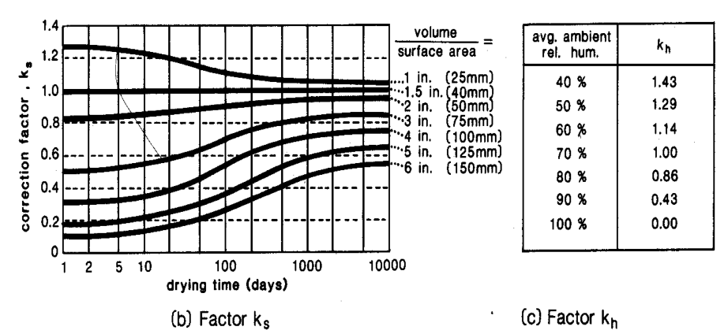</div>
        <figcaption><b>Fig. 2.19.</b> Factores de corrección de la contracción: k<sub>s</sub> según la relación volumen/superficie y el tiempo de secado, y k<sub>h</sub> según la humedad relativa (1,43 al 40 %, 0 al 100 %). <span class="pg">Llopiz T2, pág. 50</span></figcaption>
      </figure>
      <div class="box old">
        <span class="lbl">Reglamento · CIRSOC 201-25, arts. 24.4.3 y 5.3.6</span>
        <p>Armadura mínima de contracción y temperatura en losas: <strong>ρ ≥ 0,0018</strong> sobre el área bruta (ya no se reduce para f<sub>y</sub> &gt; 420 MPa), con separación ≤ 5h y ≤ 450 mm. Los efectos de las restricciones a los cambios de volumen y a los asentamientos (T) se combinan con un factor ≥ 1,0 (art. 5.3.6).</p>
      </div>

      <h4>Comportamiento del hormigón en tracción <span class="pg">· págs. 51–54</span></h4>
      <p>Es ampliamente aceptado estipular la resistencia a tracción como una fracción de la de compresión. Los códigos sugieren tomar la máxima tensión de tracción cercana o menor al 20 % de la de compresión; muchas veces se adopta como valor de control el 10 % de f'<sub>c</sub>. La respuesta a tracción uniaxial es casi lineal hasta la falla repentina. Como las superficies de fisura son muy irregulares, su interacción permite transmitir cierta tracción mientras el ancho de fisura sea menor de 0,05 mm.</p>
      <div class="box nota">
        <span class="lbl">Aclaración</span>
        <p>El 20 % solo se alcanza con hormigones muy pobres (≈ H-10 usando el módulo de rotura). En los hormigones usuales, la tracción es del 6 al 14 % de f'<sub>c</sub>, según el ensayo.</p>
      </div>
      <figure class="w-sm">
        <div class="frame">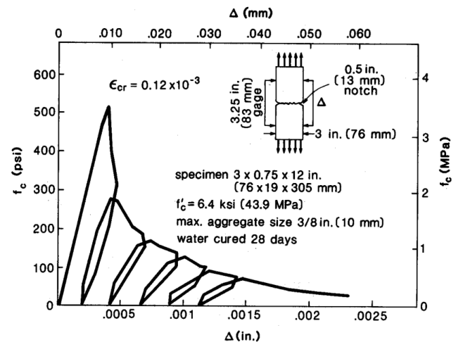</div>
        <figcaption><b>Fig. 2.20.</b> Tracción con máquina muy rígida: sube casi lineal hasta ≈ 3,6 MPa (ε ≈ 0,00012) y, con cargas y descargas, muestra la caída gradual después de fisurar (ablandamiento). <span class="pg">Llopiz T2, pág. 52</span></figcaption>
      </figure>
      <p>Por la dificultad de ensayar tracción pura se usan métodos indirectos (Fig. 2.21), con diferencias entre sí y apreciable dispersión.</p>
      <figure class="w-sm">
        <div class="frame">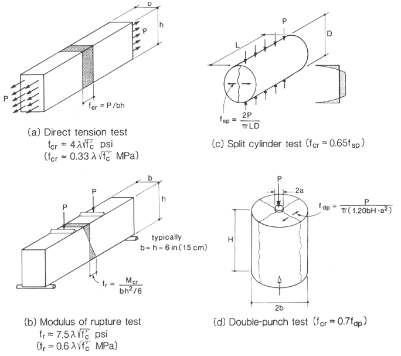</div>
        <figcaption><b>Fig. 2.21.</b> Ensayos de tracción: (a) directa, f<sub>cr</sub> ≈ 0,33λ√f'<sub>c</sub> MPa; (b) módulo de rotura (flexión), f<sub>r</sub> ≈ 0,6λ√f'<sub>c</sub> MPa; (c) compresión diametral, f<sub>cr</sub> ≈ 0,65·f<sub>sp</sub>; (d) double punch, f<sub>cr</sub> ≈ 0,7·f<sub>dp</sub>. Cuanto menor es el volumen muy traccionado, mayor es la resistencia que da el ensayo. <span class="pg">Llopiz T2, pág. 52</span></figcaption>
      </figure>
      <p>El ensayo de <strong>tracción por compresión diametral</strong> (<em>split cylinder</em>), sugerido por el brasileño Fernando Carneiro (e independientemente en Japón), coloca el cilindro con el eje horizontal y lo carga a lo largo de su generatriz. Por la teoría de la elasticidad, sobre el diámetro vertical la tracción horizontal es <span class="f">f<sub>1</sub> = 2P/(π·L·D)</span>, y la compresión vertical, <span class="f">f<sub>2</sub> = (2P/πLD)·[D²/(r·(D − r)) − 1]</span>, que en el centro vale 6P/(πLD): f<sub>2</sub>/f<sub>1</sub> = 3,0. Bajo la carga hay compresiones elevadísimas, pero con compresiones verticales comparables (estado biaxial), por lo que la falla no ocurre allí; se interpone un material flexible de unos 3 mm × 25 mm. <span class="pg">págs. 53–54</span></p>
      <figure class="w-md">
        <div class="frame">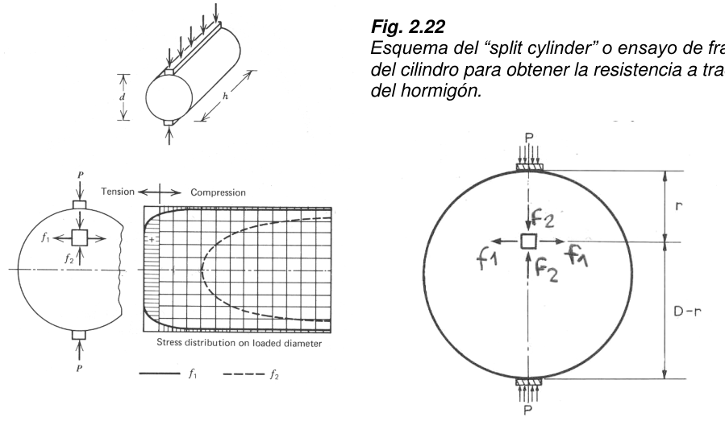</div>
        <figcaption><b>Fig. 2.22.</b> Compresión diametral: sobre el diámetro cargado la tracción horizontal f<sub>1</sub> es casi uniforme y parte la probeta; cerca de las cargas la compresión es muy alta pero biaxial. <span class="pg">Llopiz T2, pág. 53</span></figcaption>
      </figure>
      <p>El ACI-318 (sección 9.5.2.3) aconseja, para la tracción directa y el módulo de rotura:</p>
      <div class="eq"><math display="block"><mrow><msub><mi>f</mi><mrow><mi mathvariant="normal">cr</mi></mrow></msub><mo>=</mo><mn>0,33</mn><mspace width="0.17em"/><mi>λ</mi><msqrt><msubsup><mi>f</mi><mi>c</mi><mrow><mo>′</mo></mrow></msubsup></msqrt><mspace width="0.28em"/><mo stretchy="false">[</mo><mtext>MPa</mtext><mo stretchy="false">]</mo><mspace width="2em"/><msub><mi>f</mi><mi>r</mi></msub><mo>=</mo><mn>0,7</mn><mspace width="0.17em"/><mi>λ</mi><msqrt><msubsup><mi>f</mi><mi>c</mi><mrow><mo>′</mo></mrow></msubsup></msqrt><mspace width="0.28em"/><mo stretchy="false">[</mo><mtext>MPa</mtext><mo stretchy="false">]</mo></mrow></math><span class="tag">(2.23), (2.24)</span></div>
      <p>con λ = 1,00 para hormigón de densidad normal y 0,75 a 0,85 para hormigones livianos. Se considera válida la ley de Hooke hasta la máxima tracción, <span class="f">f<sub>c</sub> = E<sub>c</sub>·ε<sub>cf</sub></span> (2.25), con el mismo módulo que en compresión.</p>
      <div class="box old">
        <span class="lbl">Desactualizado · CIRSOC 201-25, arts. 19.2.3 y 19.2.4</span>
        <ul>
          <li>Módulo de rotura: <strong>f<sub>r</sub> = 0,62·λ·√f'<sub>c</sub></strong> (19.2.3.1). El 0,7 del apunte es del ACI 318-95 en SI. Para H25: 3,10 MPa (con 0,7: 3,50).</li>
          <li>λ = 1,0 para peso normal; 0,75 para liviano, o en función de la densidad: 0,0005·w<sub>c</sub> ≤ 1,0 entre 1 500 y 2 000 kg/m³ (Tabla 19.2.4.1).</li>
          <li>El 0,33√f'<sub>c</sub> de tracción directa no figura como tal: en el reglamento aparece en corte y punzonado.</li>
        </ul>
      </div>

      <h4>Relación de Poisson <span class="pg">· págs. 54–55</span></h4>
      <p>Es la relación entre la deformación transversal y la longitudinal bajo carga axial; para el hormigón está entre <strong>0,15 y 0,20</strong>, y suele considerarse menor en hormigones de alta resistencia. A tensiones de compresión altas, las deformaciones transversales crecen rápidamente por la fisuración interna paralela a la carga. Durante la mayor parte del ensayo el volumen de la probeta disminuye, pero cerca de la resistencia máxima las deformaciones transversales son tan altas que el volumen empieza a crecer: indicador de que la resistencia está siendo vencida. Este tipo de falla, con separación de fibras paralelas e incremento de volumen, inspiró el hormigón confinado con armadura transversal que actúa como zuncho.</p>
      <figure class="w-sm">
        <div class="frame">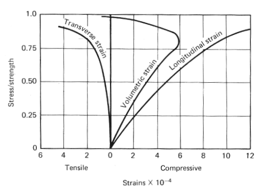</div>
        <figcaption><b>Fig. 2.23.</b> Deformaciones longitudinal, transversal y volumétrica de una probeta comprimida: cerca del pico la transversal se dispara y el volumen, que venía bajando, empieza a aumentar. Es la base del confinamiento. <span class="pg">Llopiz T2, pág. 55</span></figcaption>
      </figure>

      <h4>Propiedades térmicas del hormigón <span class="pg">· págs. 55–56</span></h4>
      <p>La deformación térmica es <span class="f">ε<sub>cth</sub> = α<sub>c</sub>·Δt</span> (2.26). α<sub>c</sub> depende fuertemente del agregado; en diseño se toma <strong>1·10⁻⁵/°C</strong>, razonablemente constante en un amplio rango, aunque cerca de 500 °C aumenta ≈ 50 %. El clima es la causa más común de cambios de temperatura, pero incendios o accidentes como la pérdida de refrigerante en centrales nucleares (LOCA) generan incrementos muy importantes. Por encima de 400 °C la resistencia se reduce mucho: a 600 °C puede ser apenas el 60 % de la de 20 °C. Desde los 100 °C hay reducciones importantes de rigidez: a 400 °C, E<sub>c</sub> es ≈ 1/3 del de 20 °C. La contracción y la fluencia también aumentan con la temperatura.</p>
      <figure class="w-sm">
        <div class="frame">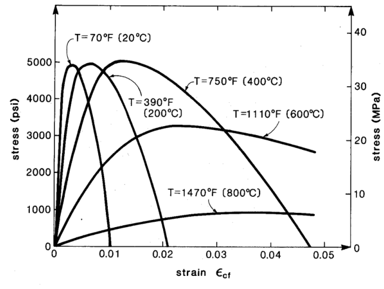</div>
        <figcaption><b>Fig. 2.24.</b> Curvas del hormigón a distintas temperaturas: a medida que sube la temperatura, bajan la resistencia y, sobre todo, la rigidez. <span class="pg">Llopiz T2, pág. 55</span></figcaption>
      </figure>

      <!-- ===== 2.3.2 Normas y control ===== -->
      <h3 id="u2-4"><span class="n">2.3.2</span>Características de los hormigones según normas y control de calidad</h3>
      <h4>Generalidades <span class="pg">· págs. 56–57</span></h4>
      <p>Para todo el país se decidió adoptar como norma de hormigón armado el ACI-318. Se puso a discusión pública a fines de 2002 y el CIRSOC 201 fue aprobado recién en 2013 (Resolución 247/2012, vigencia desde el 1 de enero de 2013); en Mendoza rige para obra pública desde el 1 de julio de 2008. La norma anterior, v-1982, tenía como base las DIN y estaba concebida para cargas gravitatorias; los lineamientos del ACI son mucho más racionales donde la acción sísmica tiene relevancia (Chile cambió al ACI hace años). En lo sismorresistente, las normas en revisión seguirán además a la neozelandesa.</p>
      <p>Según el CIRSOC 201-1982, la calidad del hormigón se define por la resistencia característica a compresión a los 28 días (90 días para hormigones en masa), y con cemento de alta resistencia puede controlarse a los 7 días; se usará la nomenclatura del ACI y del CIRSOC-05, f'<sub>c</sub>. El 1982 exigía una resistencia mínima de 13 MPa para hormigón armado; el 2005, por durabilidad, <strong>H-20</strong>. La tabla 4 del 1982 da contenidos mínimos de cemento: al menos 100 kgf/m³ en hormigón simple y casi tres veces más en el estructural.</p>
      <p>El <strong>CIRSOC 200-24 (art. 3.2.4.2 e)</strong> limita el <strong>tamaño máximo del agregado grueso</strong> (en el apunte, proyecto 2005, sección 3.2.4.2.c) a: 1/5 de la menor dimensión lineal de la sección, 1/3 del espesor de la losa y 3/4 de la mínima separación libre entre barras (el 200-24 agrega 3/4 del recubrimiento). El CIRSOC 201-82 da los recubrimientos (tabla 15) y las disposiciones de manipuleo, transporte, colocación, compactación y curado (cap. 10). El curado de probetas de control se hace según IRAM 1524; para juzgar protección, curado, desencofrado o habilitación, las probetas se curan en condiciones de obra y se juzgan por resultados individuales o promedios (en el CIRSOC-2005, sección 4.3).</p>

      <h4>Control de calidad del hormigón fresco <span class="pg">· págs. 57–60</span></h4>
      <p>El método más aceptado es el control de la <strong>trabajabilidad</strong>: facilidad para lograr la compactación (remoción de vacíos), movilidad para llenar los moldes, y estabilidad y consistencia durante el manipuleo y la vibración; indirectamente evalúa el contenido de agua. El ensayo más común es el <strong>asentamiento en el cono de Abrams</strong>.</p>
      <figure class="w-sm">
        <div class="frame">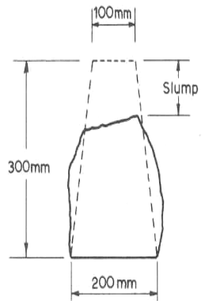</div>
        <figcaption><b>Fig. 2.25(a).</b> Cono de Abrams (100 mm arriba, 200 mm abajo, 300 mm de alto) y la forma que toma el hormigón al desmoldar. <span class="pg">Llopiz T2, pág. 58</span></figcaption>
      </figure>
      <figure class="w-sm">
        <div class="frame">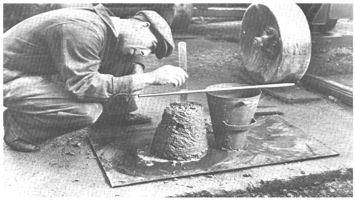</div>
        <figcaption><b>Fig. 2.25(b).</b> Cómo se mide el asentamiento: la diferencia entre la altura del cono y la del hormigón asentado. <span class="pg">Llopiz T2, pág. 58</span></figcaption>
      </figure>
      <p>Un asentamiento uniforme con mezcla cohesiva es un "true slump". Si la mitad del cono se desliza hacia un costado ("shear"), se repite el ensayo; si persiste, la mezcla se rechaza por falta de cohesión. Con alta cuantía de acero y colocación difícil, el asentamiento debe superar 100 mm y puede llegar a 170 mm. El ensayo sirve sobre todo para consistencias intermedias (no para mezclas muy secas ni muy fluidas) y permite un control hora tras hora: una variación puede indicar cambios en la humedad o la granulometría de los agregados. Un asentamiento mayor al especificado puede y debería ser causa de rechazo (indica a/c mayor); si es menor, puede hacer falta un plastificante. Las tolerancias son de 1,5 cm para asentamientos menores de 7 cm y de 2,5 cm para mayores.</p>
      <figure class="w-md">
        <div class="frame">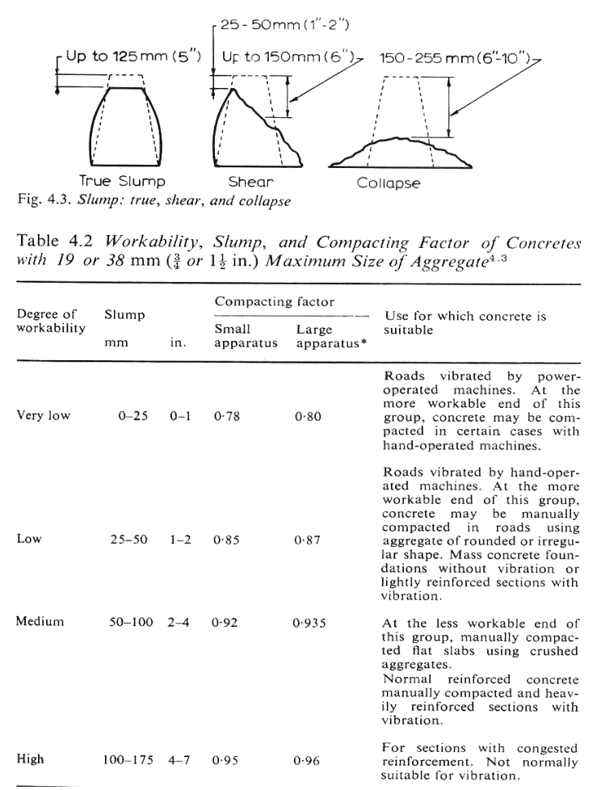</div>
        <figcaption><b>Tabla 2.2.</b> Formas de asentamiento (true slump, shear, collapse) y grados de trabajabilidad con su asentamiento, factor de compactación y usos apropiados. <span class="pg">Llopiz T2, pág. 59</span></figcaption>
      </figure>
      <figure class="w-md">
        <div class="frame">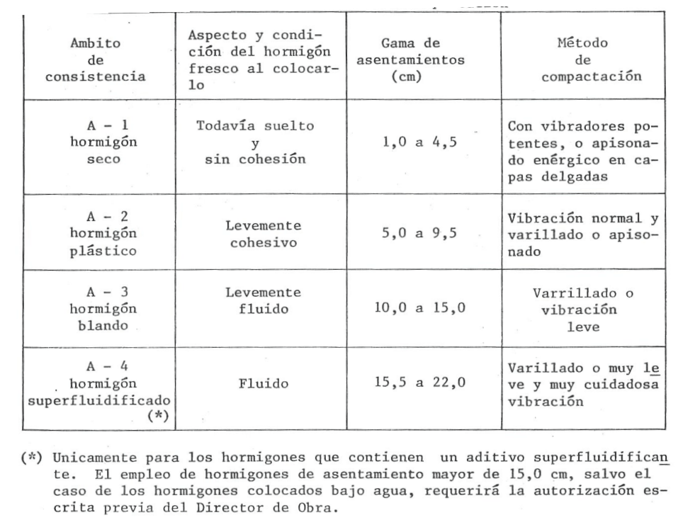</div>
        <figcaption><b>Tabla 2.3.</b> Consistencias del CIRSOC 201 con su gama de asentamientos y el método de compactación correspondiente. <span class="pg">Llopiz T2, pág. 60</span></figcaption>
      </figure>
      <div class="box old">
        <span class="lbl">Desactualizado · CIRSOC 200-24, Tablas 4.1 y 4.2</span>
        <p>Seis consistencias: muy seca (VeBe 5–30 s), seca (2–5 cm), plástica (5–10 cm), muy plástica (10–15 cm), fluida (15–18 cm) y muy fluida (extendido 60–65 cm); las fluidas requieren superfluidificante. <strong>Tolerancias del asentamiento:</strong> ±1,0 cm (seca), ±2,0 cm (plástica y muy plástica) y ±3,0 cm (fluida), en lugar del ±1,5 / ±2,5 cm del apunte.</p>
      </div>

      <h4>Hormigón endurecido. Modos de control <span class="pg">· págs. 60–67</span></h4>
      <p>El <strong>CIRSOC 200-24 (art. 2.3.1)</strong> define la <strong>resistencia especificada o característica f'<sub>c</sub></strong> como la resistencia a compresión adoptada en el proyecto y usada como base de los cálculos; el mínimo para hormigón armado es <strong>H-20</strong> (CIRSOC 200-24, Tabla 2.8; CIRSOC 201-25, Tabla 19.2.1.1). El apunte cita el CIRSOC-2005, sección 2.3.1. El aumento respecto de los 13 MPa del 1982 se debe en parte a que ahora corresponde al <strong>cuantil del 10 %</strong> (el 90 % de los resultados la supera), contra el 5 % del 1982: para un mismo hormigón, la especificada 2005 es 3 a 5 MPa mayor; H-17 del 1982 equivale a H-20 o más del 2005.</p>
      <figure class="w-md">
        <div class="frame">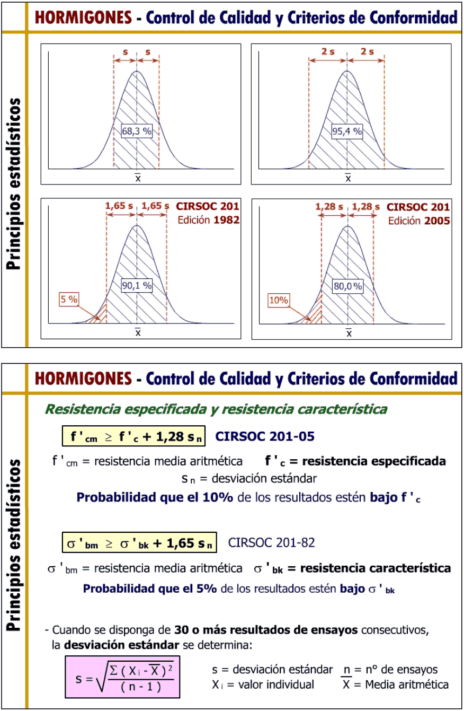</div>
        <figcaption><b>Fig. 2.26.</b> Criterios estadísticos: CIRSOC 1982, f'<sub>bm</sub> ≥ σ'<sub>bk</sub> + 1,65·s (5 % por debajo); CIRSOC 2005, f'<sub>cm</sub> ≥ f'<sub>c</sub> + 1,28·s (10 % por debajo). Con 30 o más ensayos, s = √[Σ(X<sub>i</sub> − X̄)²/(n − 1)]. <span class="pg">Llopiz T2, pág. 61</span></figcaption>
      </figure>
      <p>El control de conformidad (hoy <strong>CIRSOC 200-24, capítulo 6</strong>; en el apunte, capítulo 4 del C-201-05) se hace con ensayos normalizados sobre muestras extraídas en obra, bajo responsabilidad del Director de Obra, con dos modos. <strong>Modo 1:</strong> planta con sistema de calidad (dentro o fuera de la obra), el DO accede a su control de producción, producción continua, control de recepción de materiales, acopio para 7 días de producción, medición en masa, muestreo periódico y seguimiento estadístico con cartas de control (media, desviación y resistencia característica con 30 ensayos como mínimo); si la planta está en obra y el DO la supervisa, equivale a acreditación. Es muy usado en EE.UU. <strong>Modo 2:</strong> hormigón que no cumple esos requisitos; es el caso de las obras de Mendoza y del país, y el Modo 1 rara vez se aplica localmente. <span class="pg">pág. 62</span></p>
      <p>Las probetas normales son cilindros de 15 × 30 cm, moldeados y curados según norma, ensayados a la edad de diseño. Un ensayo (un valor de f'<sub>c</sub>) es el promedio de al menos 2 probetas de la misma muestra y edad, cuya diferencia extrema debe ser menor del 15 % de la media; si no, se rechaza, salvo que con 3 probetas dos difieran menos del 10 % de su promedio (se descarta la tercera). Los elementos con f'<sub>c</sub> común se agrupan en <strong>lotes</strong> (tabla 4.1); en Modo 1 pueden ser hasta el doble. Muestras: la menor frecuencia entre 5 por lote, 3 por planta de edificio, o 1 cada 100 m³ (no menos de 5) en lotes unificados; de cada muestra, al menos un ensayo (dos probetas) a la edad de diseño. <span class="pg">págs. 63–64</span></p>
      <figure class="w-md">
        <div class="frame">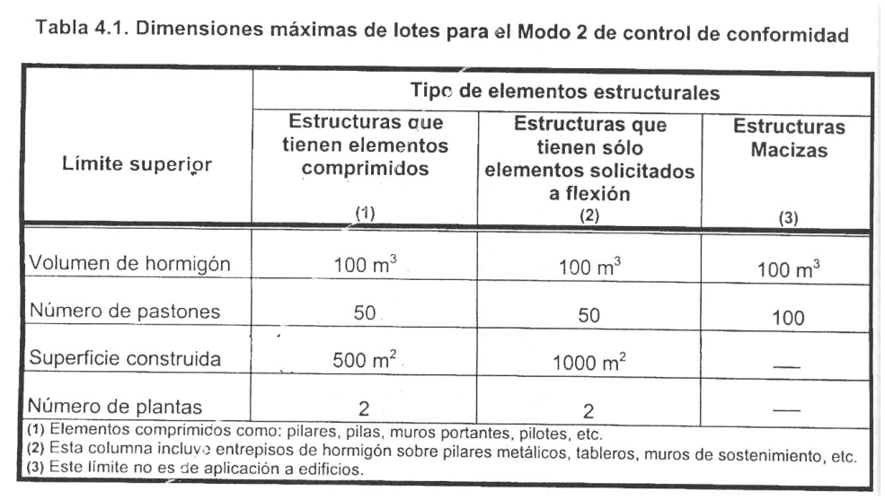</div>
        <figcaption><b>Tabla 4.1 (CIRSOC 201-2005).</b> Tamaño máximo de los lotes para el Modo 2: 100 m³ de hormigón, 50 pastones, 500 o 1 000 m² de superficie y 2 plantas, según el tipo de elemento (comprimidos, flexionados o macizos). <span class="pg">Llopiz T2, pág. 63</span></figcaption>
      </figure>
      <ul class="body">
        <li><strong>Modo 1:</strong> la media de la planta debe cumplir f'<sub>cm</sub> ≥ f'<sub>c</sub> + 1,28·s (2.27). El hormigón es conforme si la media móvil de 3 ensayos consecutivos es ≥ f'<sub>c</sub> (2.28) y cada ensayo es ≥ f'<sub>c</sub> − 3,5 MPa (2.29); si no, se pasa al Modo 2.</li>
        <li><strong>Modo 2</strong> (hormigón de una clase recibido en forma continua, con interrupciones menores de 3 horas): media móvil de 3 ensayos consecutivos ≥ f'<sub>c</sub> + 5 MPa (2.30a) y cada ensayo ≥ f'<sub>c</sub> (2.30b).</li>
        <li><strong>Dosificación</strong> (cap. 5, sección 5.2.2.2): en Modo 1, f'<sub>cr</sub> es el mayor entre f'<sub>c</sub> + 1,34·s (2.31a) y f'<sub>c</sub> + 2,33·s − 3,5 (2.31b); en Modo 2, f'<sub>cr</sub> = (f'<sub>c</sub> + 5) + 1,34·s (2.32). s se calcula con 30 o más ensayos consecutivos (2.34); con 15, 20 o 25 ensayos el 1,34 se corrige a 1,16, 1,08 y 1,03; con menos de 15, f'<sub>cr</sub> = f'<sub>c</sub> + 7,0 (f'<sub>c</sub> &lt; 20 MPa), + 8,5 (20 a 35) o + 10,0 (&gt; 35) (Tabla 2.4). Salvo otra especificación, a los 28 días.</li>
      </ul>
      <figure class="w-md">
        <div class="frame">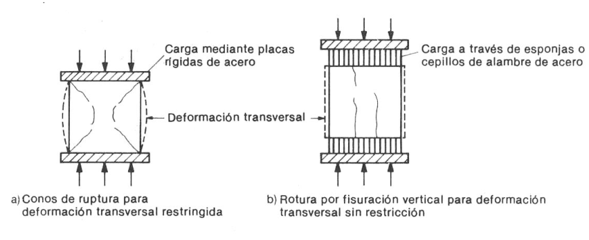</div>
        <figcaption><b>Fig. 2.27.</b> Influencia de las condiciones de borde en el ensayo de compresión: los cabezales confinan los extremos, y cuanto más baja es la probeta, mayor resistencia da. Por eso el cubo da más que el cilindro. <span class="pg">Llopiz T2, pág. 65</span></figcaption>
      </figure>
      <p>Algunas normas usan cubos de 15 cm o prismas de altura cuatro veces el lado. La resistencia especificada, también llamada característica, obedece a conceptos estadísticos: en la mayoría de los casos es la resistencia por debajo de la cual están no más del 5 % de los resultados (Fig. 2.28: 5 % en el CIRSOC-1982, 10 % en el C-201-05). <span class="pg">pág. 66</span></p>
      <figure class="w-sm">
        <div class="frame"></div>
        <figcaption><b>Fig. 2.28.</b> Distribución normal de resultados: el área sombreada a la izquierda es la fracción de ensayos por debajo de la resistencia característica (5 % o 10 %). <span class="pg">Llopiz T2, pág. 66</span></figcaption>
      </figure>
      <p><strong>Curado.</strong> El ACI establece mantener el hormigón a más de 10 °C y húmedo al menos los primeros 7 días. El CIRSOC 201 pide comenzar el curado apenas la superficie no se dañe, protegerlo del secado prematuro y de las bajas temperaturas, y para cemento portland normal y mínima dimensión de 75 cm o menos, un período de al menos 7 días desde la colocación, con temperatura de 10 °C o más (sección 10.4.2). En nuestro medio se usa cada vez más cemento puzolánico, de resistencias similares pero ganancia más lenta, por lo que el curado y el desencofrado deberían ampliarse. <strong>Desencofrado:</strong> laterales de vigas, columnas y tabiques, al menos 3 días; losas (dejando puntales de seguridad), 14 días; vigas de pórticos de grandes luces, 21 días. <strong>Colocación</strong> (CIRSOC 200-24, art. 4.6.5.4; en el apunte, sección 10.2.2): no se permite verter libremente desde más de 1,50 m; para alturas mayores, embudos; el ingreso debe ser continuo y a la menor velocidad posible. <span class="pg">págs. 66–67</span></p>
      <p>Las págs. 67 a 78 reproducen el control de resistencia del CIRSOC 201-1982 (tabla 3 de clases H-4 a H-47 y sus usos) y el control de la norma IRAM 1666 de hormigón elaborado (diciembre 1986).</p>
      <div class="box old">
        <span class="lbl">Actualización · CIRSOC 200-24, caps. 4, 5, 6 y 7</span>
        <ul>
          <li><strong>Modo 1:</strong> planta con sistema de gestión de calidad; fuera de la obra, certificada <strong>IRAM-ISO 9001:2015</strong> (art. 6.1.5). Criterios iguales (media de 3 ≥ f'<sub>c</sub>; individual ≥ f'<sub>c</sub> − 3,5 MPa), pero si f'<sub>c</sub> &gt; 35 MPa el individual es ≥ 0,90·f'<sub>c</sub>. <strong>Modo 2:</strong> igual al apunte (f'<sub>c</sub> + 5 MPa y f'<sub>c</sub>).</li>
          <li><strong>f'<sub>cr</sub></strong> (art. 4.2.2): Modo 1 igual si f'<sub>c</sub> ≤ 35 MPa; si f'<sub>c</sub> &gt; 35, el mayor de f'<sub>c</sub> + 1,34·s y 0,90·f'<sub>c</sub> + 2,33·s. Modo 2: el mayor de (f'<sub>c</sub> + 5) + 1,34·s y <strong>f'<sub>c</sub> + 2,33·s</strong>. s ≥ 3,0 MPa. Sin registros: +7,0 / +8,5 / +10,0 MPa, igual que el apunte.</li>
          <li><strong>Ensayo:</strong> 2 probetas de 15 × 30 cm o <strong>3 de 10 × 20 cm</strong>; mismos criterios del 15 % y el 10 % (art. 6.1.6.3).</li>
          <li><strong>Lotes</strong> (Tabla 6.1): Modo 2, 100 m³ (200 en macizos), 50 pastones, <strong>1 día</strong>, 500 o 1 000 m² y <strong>1 planta</strong>. Modo 1, el doble y hasta 2 semanas.</li>
          <li><strong>Desencofrado</strong> (art. 7.2.2): al alcanzar el <strong>70 % de f'<sub>c</sub></strong> (o el doble de la resistencia necesaria en ese momento), o por madurez. Plazos orientativos con cemento normal según la temperatura (Tablas 7.1 y 7.2): laterales de vigas y columnas, 9 a 30 horas; puntales de vigas, 7 / 14 / 21 días para luces &lt; 3 / 3–6 / &gt; 6 m. Los 3, 14 y 21 días del apunte eran del CIRSOC 201-1982.</li>
          <li><strong>Tiempo frío</strong> (art. 5.1): temperatura mínima de colocación de 13 / 10 / 7 / 5 °C según la menor dimensión. <strong>Tiempo cálido</strong> (art. 5.2.2.1): colocación ≤ 32 °C.</li>
        </ul>
      </div>

      <!-- ===== 2.3.3 Acero ===== -->
      <h3 id="u2-5"><span class="n">2.3.3</span>Acero</h3>
      <h4>Tipos de aceros, formas y dimensiones <span class="pg">· págs. 79–81</span></h4>
      <p>El acero es generalmente de sección circular y se usan barras <strong>"conformadas"</strong>, con protuberancias o nervaduras que restringen el movimiento respecto del hormigón. Las barras ACINDAR, de gran uso en nuestro medio, tienen dos nervaduras longitudinales continuas en generatrices opuestas y nervios transversales paralelos e inclinados ("espina de pescado"). El ADN-420 se identifica con dos puntos y dos nervios cortos; <strong>ADN-420</strong> significa Acero de Dureza Natural, con fluencia de 420 MPa: la dureza se obtiene por composición química, sin procedimiento mecánico. Debe evitarse el uso de barras torsionadas en frío.</p>
      <figure class="w-sm">
        <div class="frame"></div>
        <figcaption><b>Fig. 2.29.</b> Barra conformada Acindar ADN-420: dos nervaduras longitudinales y nervios inclinados en espina de pescado; las flechas marcan la identificación. <span class="pg">Llopiz T2, pág. 79</span></figcaption>
      </figure>
      <figure class="w-sm">
        <div class="frame"></div>
        <figcaption><b>Fig. 2.30.</b> Tipos de barras: (a) acero dulce liso, (b) corrugada templada en caliente, (c) corrugada formada en frío y (d) torsionada en frío, que no debe usarse. <span class="pg">Llopiz T2, pág. 79</span></figcaption>
      </figure>
      <figure class="w-md">
        <div class="frame"></div>
        <figcaption><b>Fig. 2.31.</b> Tabla Acindar de barras: diámetro, perímetro, peso, sección por número de barras y diámetro mínimo de mandril de doblado; identificación y características mecánicas (f<sub>y</sub> ≥ 412, f<sub>u</sub> ≥ 500 MPa, alargamiento ≥ 12 %) según IRAM-IAS U 500-528. <span class="pg">Llopiz T2, pág. 79</span></figcaption>
      </figure>
      <p>También son comunes las <strong>mallas soldadas</strong>: barras en dos direcciones soldadas por punto en sus intersecciones, de acero liso (AL), nervurado (ADN) o perfilado (AP, con simples muescas). Las de Acindar son de cuadrícula cuadrada (serie Q) o rectangular (serie R); el número indica la sección longitudinal en mm²/m: <strong>Q335</strong> = alambres de 8 mm cada 15 cm en ambas direcciones; <strong>R188</strong> = Ø6 c/15 cm longitudinal (188 mm²) y Ø4,2 c/25 cm transversal (56 mm²). Se entregan en paneles de 2,15 × 6,00 m (12,90 m²) o 2 × 3 m (6 m²), y en rollos si el diámetro mayor es 6 mm. Para ahorrar mano de obra se usan cada vez más, también en tabiques y como estribos. Siempre hay que cuidar empalmes y anclajes (capítulo 8). <span class="pg">págs. 80–81</span></p>
      <figure class="w-sm">
        <div class="frame"></div>
        <figcaption><b>Fig. 2.32.</b> Malla soldada para uso estructural, tipo Acindar: barras en dos direcciones unidas por soldadura eléctrica de punto. <span class="pg">Llopiz T2, pág. 80</span></figcaption>
      </figure>
      <figure class="w-sm">
        <div class="frame"></div>
        <figcaption><b>Fig. 2.33.</b> Tipos de malla Acindar (líneas Maxi y Mini): cuantía, separación y diámetro de alambres, salientes y peso por panel y por m². <span class="pg">Llopiz T2, pág. 80</span></figcaption>
      </figure>
      <figure class="w-md">
        <div class="frame"></div>
        <figcaption><b>Fig. 2.34.</b> Tabla del CIRSOC (1982) de tipos de acero: AL-220 (liso, f<sub>y</sub> 220), ADN-420 (dureza natural), ADM-420 (dureza mecánica) y AM-500 (mallas, f<sub>y</sub> 500, alargamiento ≥ 6 %), con los mandriles del ensayo de doblado. <span class="pg">Llopiz T2, pág. 81</span></figcaption>
      </figure>
      <div class="box old">
        <span class="lbl">Actualización · CIRSOC 200-24, Tablas 3.8 y 3.9 · CIRSOC 201-25, cap. 20 y Tablas 25.3.1–25.3.2</span>
        <ul>
          <li><strong>Barras:</strong> AL 220 (IRAM-IAS U500-502; lisas, solo para estribos, espirales y zunchos), <strong>ADN 420</strong> (U500-528) y <strong>ADN 420 S</strong> (soldable, U500-207): f<sub>y</sub> 420, f<sub>u</sub> 500 MPa, alargamiento ≥ 12 %. Se admitirá ADN de 500 MPa cuando exista la norma IRAM-IAS.</li>
          <li><strong>Mallas:</strong> ATR 500 N y AM 500 N: f<sub>y</sub> 500, f<sub>u</sub> 550 MPa, alargamiento ≥ 6 %.</li>
          <li><strong>E<sub>s</sub> = 200 000 MPa</strong> (201-25, art. 20.2.2.2).</li>
          <li>Los mandriles de la tabla del apunte (3,5d / 5d / 7d, o los 4Ø / 7Ø de la tabla Acindar) son los del <strong>ensayo de doblado</strong>. Para <strong>doblar en obra</strong>, el 201-25 exige: ganchos de barras longitudinales <strong>6d<sub>b</sub></strong> (Ø10–25), <strong>8d<sub>b</sub></strong> (Ø32) y <strong>10d<sub>b</sub></strong> (Ø40); estribos <strong>4d<sub>b</sub></strong> (Ø10–16) y 6d<sub>b</sub> (Ø20–25).</li>
        </ul>
      </div>

      <h4>Respuesta monotónica tensión-deformación <span class="pg">· págs. 81–83</span></h4>
      <p>La curva de carga monotónica a tracción tiene un tramo inicial lineal y elástico, un <strong>plafón de fluencia</strong> (las deformaciones aumentan sin aumento de tensión), un rango de <strong>endurecimiento</strong> hasta la tensión máxima, y una caída final hasta la fractura. El módulo inicial se toma entre <strong>200 000 y 210 000 MPa</strong>, igual en tracción y compresión. La tensión de fluencia designa el tipo de acero; a mayor fluencia, menor deformabilidad. Sin escalón definido, la fluencia se toma a una deformación determinada (por ejemplo, ε<sub>y</sub> = 0,002 = 0,2 %).</p>
      <figure class="w-sm">
        <div class="frame"></div>
        <figcaption><b>Fig. 2.35.</b> Curva del ADN-420 que publica Acindar: escalón de fluencia cerca de 440 MPa, endurecimiento hasta ≈ 700 MPa hacia el 12 % de deformación y rotura cerca del 20 %. <span class="pg">Llopiz T2, pág. 82</span></figcaption>
      </figure>
      <p>Para aceros de alta resistencia (precompresión) el plafón tiende a desaparecer; para cables y alambres se define una fluencia equivalente al 0,2 %. A mayor resistencia (más carbono) menor deformabilidad y menor capacidad de disipar energía (ductilidad); el endurecimiento en frío también la reduce. La deformación mínima antes de la fractura se especifica porque el acero debe sobrellevar grandes deformaciones: en nuestro medio, ε<sub>máx</sub> ≥ 12 %.</p>
      <figure class="w-sm">
        <div class="frame"></div>
        <figcaption><b>Fig. 2.36.</b> Aceros de refuerzo y de pretensado: cuanto más resistente el acero, más corto o inexistente es el escalón de fluencia y menor la deformación de rotura. <span class="pg">Llopiz T2, pág. 82</span></figcaption>
      </figure>
      <p>Son deseables un largo escalón de fluencia, un endurecimiento gradual y baja variabilidad de la fluencia respecto de la nominal. Lo pide el diseño por capacidad: la resistencia al corte de todos los elementos, y a flexión de las secciones no detalladas como rótulas, deben superar las fuerzas de la sobrerresistencia de las zonas plásticas. Si el acero endurece temprano y rápido, o si su fluencia real supera mucho la especificada, las tensiones en las rótulas exceden la fluencia por un margen excesivo y hacen falta mayores factores de sobrerresistencia para evitar fallas de corte o rótulas inesperadas. En Japón, Nueva Zelanda y EE.UU. los ensayos dieron información suficiente; en nuestro medio hacen falta estudios similares. <span class="pg">pág. 83</span></p>

      <h4>Respuesta inelástica cíclica <span class="pg">· págs. 83–84</span></h4>
      <p>Con ciclos en el rango inelástico el plafón desaparece y aparece el <strong>efecto Bauschinger</strong>: la respuesta no lineal empieza a una deformación mucho menor que la de fluencia. Con ciclos predominantemente en tracción (típico de rótulas de vigas), la curva monotónica es la envolvente; con excursiones simétricas en tracción y compresión (columnas con axial moderado o alto), al crecer la amplitud las tensiones pueden superar por bastante margen las de la curva monotónica.</p>
      <figure class="w-md">
        <div class="frame"></div>
        <figcaption><b>Fig. 2.37.</b> Acero cíclico: (a) ciclos en tracción, envueltos por la curva monotónica; (b) ciclos simétricos, con curvas redondeadas por el efecto Bauschinger y tensiones que superan la monotónica. <span class="pg">Llopiz T2, pág. 84</span></figcaption>
      </figure>

      <h4>Efectos de la velocidad de deformación <span class="pg">· pág. 84</span></h4>
      <p>Con velocidades de deformación típicas de la respuesta sísmica (0,01 a 0,10 s⁻¹), la fluencia aumenta significativamente respecto de la estática: del orden del 10 al 20 % en aceros de ≈ 400 MPa.</p>

      <h4>Efecto de la temperatura en el acero <span class="pg">· pág. 84</span></h4>
      <p>Si bien el coeficiente de dilatación del acero es cercano a 6,5·10⁻⁶/°C, se acepta usar 1·10⁻⁵/°C para ambos materiales. Por encima de 200 °C hay una sustancial reducción de rigidez y resistencia; a 400 °C la resistencia a tracción de alambres y cables es apenas el 50 % de la de 20 °C. Por debajo de ciertas temperaturas (típico −20 °C) la ductilidad prácticamente se pierde y la barra se comporta en forma frágil al alcanzar la fluencia: cuidado en climas muy fríos.</p>
      <div class="box err">
        <span class="lbl">Error en el apunte</span>
        <p><strong>6,5·10⁻⁶ es por °F</strong>, no por °C. En °C: 6,5·10⁻⁶ × 9/5 = 1,17·10⁻⁵/°C, muy parecido al del hormigón. Por eso se puede usar 1·10⁻⁵ para ambos.</p>
      </div>
      <figure class="w-sm">
        <div class="frame"></div>
        <figcaption><b>Fig. 2.38.</b> Pérdida de resistencia con la temperatura: el acero de pretensado trefilado cae al 50 % cerca de 400 °C; la barra laminada en caliente conserva ≈ 80 % de su fluencia entre ≈ 250 y 430 °C y cae después. <span class="pg">Llopiz T2, pág. 84</span></figcaption>
      </figure>

      <h4>Factor de sobrerresistencia <span class="pg">· pág. 85</span></h4>
      <p>Para el diseño por capacidad hay que estimar con bastante confianza la sobrerresistencia a flexión de las rótulas. En el acero proviene de dos fuentes: la fluencia real por encima de la especificada y el endurecimiento a altas ductilidades:</p>
      <div class="eq"><math display="block"><mrow><msub><mi>λ</mi><mi>o</mi></msub><mo>=</mo><msub><mi>λ</mi><mn>1</mn></msub><mo>+</mo><mo stretchy="false">(</mo><msub><mi>λ</mi><mn>2</mn></msub><mo>−</mo><mn>1,0</mn><mo stretchy="false">)</mo></mrow></math><span class="tag">(2.35)</span></div>
      <p>con λ<sub>1</sub> la relación entre la fluencia real y la especificada, y λ<sub>2</sub> la relación entre la tensión a la falla por flexión y la fluencia real. En nuestro medio hace falta investigar. Para los aceros de Nueva Zelanda, λ<sub>1</sub> ≈ 1,15 y λ<sub>2</sub> = 1,10 (f<sub>y</sub> = 275 MPa) o 1,25 (f<sub>y</sub> = 400 MPa): <strong>λ<sub>o</sub> = 1,25 y 1,40</strong>.</p>
      <div class="box old">
        <span class="lbl">Actualización · IC 103 Parte II 2021, art. 1.5.3.3</span>
        <p>El reglamento fija la sobrerresistencia probable del acero en <strong>λ<sub>o</sub>·f<sub>y</sub>, con λ<sub>o</sub> = 1,40</strong> para f<sub>y</sub> = 420 MPa, el mismo valor neozelandés que cita Llopiz.</p>
      </div>

      <h4>Investigación de aceros utilizados en nuestro medio <span class="pg">· págs. 85–88</span></h4>
      <p>El IMERIS inició una investigación para determinar las características de los aceros locales: curvas obtenidas por alumnos de la FI-UNCuyo en el INPRES de San Juan, sobre barras comercializadas en Mendoza de 4,2 a 16 mm. El reglamento sismorresistente (ref. [22]) exige: (a) f<sub>y</sub> especificada de la armadura longitudinal ≤ 420 MPa y barra conformada; (b) fluencia real / especificada ≤ 1,30; (c) resistencia real a tracción / fluencia real ≥ 1,25. Se deja al alumno investigar por qué y verificar si las curvas cumplen el CIRSOC 201 y el INPRES-CIRSOC 103 Parte II 2005.</p>
      <div class="box old">
        <span class="lbl">Actualización · IC 103 Parte II 2021, art. 1.2.2 y Tabla 1.1</span>
        <ul>
          <li>Se mantienen <strong>f<sub>y</sub> ≤ 420 MPa</strong> para la armadura longitudinal (nervurada) y <strong>f<sub>y real</sub>/f<sub>y</sub> ≤ 1,30</strong>.</li>
          <li>El "f<sub>u</sub>/f<sub>y</sub> ≥ 1,25" se reemplaza por una <strong>clasificación de endurecimiento</strong> (Tabla 1.1): muy bajo 1,00–1,09 · bajo 1,10–1,14 · <strong>normal 1,15–1,39</strong> · <strong>alto ≥ 1,40</strong> (f<sub>u real</sub>/f<sub>y real</sub>), con ε<sub>u</sub> ≥ 12 %. En <strong>zonas sísmicas 3 y 4</strong> la armadura longitudinal debe ser de endurecimiento <strong>normal o alto</strong>.</li>
          <li>Armadura transversal: f<sub>yt</sub> ≤ 500 MPa, nervurada o lisa, de cualquier clase. Mallas de 500 MPa solo en diafragmas que no colaboren con las vigas.</li>
          <li>Hormigón: 20 MPa ≤ f'<sub>c</sub> ≤ 70 MPa (art. 1.2.1).</li>
        </ul>
      </div>
      <figure class="w-md">
        <div class="frame"></div>
        <figcaption><b>Fig. 2.39.a.</b> Barras de 4,2 mm (Acindar): sin escalón de fluencia, f<sub>u</sub> ≈ 705 MPa y rotura al 2 a 2,7 %. Es acero trefilado, no dúctil. <span class="pg">Llopiz T2, pág. 86</span></figcaption>
      </figure>
      <figure class="w-md">
        <div class="frame"></div>
        <figcaption><b>Fig. 2.39.b.</b> Barras de 6 mm: fluencia redondeada cerca de 490 MPa, f<sub>u</sub> ≈ 690 MPa (f<sub>u</sub>/f<sub>y</sub> ≈ 1,41) y rotura al 12 a 14 %. <span class="pg">Llopiz T2, pág. 86</span></figcaption>
      </figure>
      <figure class="w-md">
        <div class="frame"></div>
        <figcaption><b>Fig. 2.39.c.</b> Barras de 8 mm: fluencia ≈ 435 MPa (1,04 veces la especificada), f<sub>u</sub> ≈ 655 MPa y rotura al 11 a 16 %. <span class="pg">Llopiz T2, pág. 87</span></figcaption>
      </figure>
      <figure class="w-md">
        <div class="frame"></div>
        <figcaption><b>Fig. 2.39.d.</b> Barras de 10 mm: fluencia ≈ 500 MPa, f<sub>u</sub> ≈ 690 MPa y rotura al 13 a 18 %. <span class="pg">Llopiz T2, pág. 87</span></figcaption>
      </figure>
      <figure class="w-md">
        <div class="frame"></div>
        <figcaption><b>Fig. 2.39.e.</b> Barras de 12 mm: escalón de fluencia claro en ≈ 490 MPa, f<sub>u</sub> ≈ 790 MPa (f<sub>u</sub>/f<sub>y</sub> ≈ 1,61) y rotura al 13 a 16 %. <span class="pg">Llopiz T2, pág. 88</span></figcaption>
      </figure>
      <figure class="w-md">
        <div class="frame"></div>
        <figcaption><b>Fig. 2.39.f.</b> Barras de 16 mm: escalón en ≈ 500 MPa, f<sub>u</sub> ≈ 808 MPa y rotura al 14 a 15 %. Los valores de los epígrafes se leyeron de las curvas y son aproximados. <span class="pg">Llopiz T2, pág. 88</span></figcaption>
      </figure>

      <h4>Control de calidad del acero según normas IRAM <span class="pg">· págs. 89–94</span></h4>
      <p>El CIRSOC 201 exige que las barras conformadas de dureza natural cumplan la <strong>IRAM-IAS U 500-528</strong> (ensayo de tracción según U 500-102 y de doblado según U 500-103).</p>
      <p><strong>Definiciones.</strong> Hay dimensiones nominales (designación, discrepancias y cálculo de esfuerzos) y equivalentes (cálculo de características mecánicas). Valores nominales (densidad 7,85 t/m³):</p>
      <div class="tbl"><table>
        <thead><tr><th class="num">Ø [mm]</th><th class="num">6</th><th class="num">8</th><th class="num">10</th><th class="num">12</th><th class="num">16</th><th class="num">20</th><th class="num">25</th><th class="num">32</th><th class="num">40</th></tr></thead>
        <tbody>
          <tr><td>Área [cm²]</td><td class="num">0,283</td><td class="num">0,503</td><td class="num">0,785</td><td class="num">1,13</td><td class="num">2,01</td><td class="num">3,14</td><td class="num">4,91</td><td class="num">8,04</td><td class="num">12,60</td></tr>
          <tr><td>Perímetro [cm]</td><td class="num">1,88</td><td class="num">2,51</td><td class="num">3,14</td><td class="num">3,77</td><td class="num">5,03</td><td class="num">6,28</td><td class="num">7,85</td><td class="num">10,1</td><td class="num">12,6</td></tr>
          <tr><td>Masa [kgf/m]</td><td class="num">0,222</td><td class="num">0,395</td><td class="num">0,617</td><td class="num">0,888</td><td class="num">1,58</td><td class="num">2,47</td><td class="num">3,85</td><td class="num">6,31</td><td class="num">9,86</td></tr>
        </tbody>
      </table></div>
      <p>Las características mecánicas se calculan con el <strong>área equivalente</strong>, obtenida pesando un trozo de 1,00 m: diámetro equivalente <span class="f">d<sub>e</sub> = 12,74·√(m/l)</span> (2.36) y área equivalente <span class="f">S<sub>e</sub> = 127,48·m/l</span> (2.37), con m en gramos y l en mm.</p>
      <p><strong>Lotes y ejemplo.</strong> Lote: barras de una misma designación y diámetro, fabricadas en las mismas condiciones. Vivienda de 400 m² con 25 kgf/m² = 10 t de acero: 30 % Ø6 (1 130 barras de 12 m), 35 % Ø8 (740), 20 % Ø10 (270) y 15 % Ø12 (140): cuatro lotes. La compra se especifica por lote, por ejemplo "3 010 kgf – ADN 420 – 6 mm – 12 m – IRAM-IAS U 500-528/94". Se entrega en atados identificados con tarjeta (marca, designación, diámetro, colada, "enderezado"). De cada lote se extraen al azar 5 barras y de cada una 3 probetas (tracción, doblado-desdoblado y una de reserva). <span class="pg">págs. 90–91</span></p>
      <p><strong>Controles, en orden</strong> <span class="pg">(págs. 91–94)</span>:</p>
      <ol class="body">
        <li><strong>Medidas:</strong> nervios longitudinales continuos, uniformes y simétricos; nervios transversales equiespaciados. Largo nominal 12 m, hasta 15 % del lote con barras de 8 a 11,50 m, tolerancia ±0,50 m. Si falla, se duplica la muestra; si vuelve a fallar, se rechaza. El diámetro se controla indirectamente por la masa.</li>
        <li><strong>Masa:</strong> discrepancia admitida individual/lote de 8/5 % para d &lt; 10 mm y 5/3 % para d ≥ 10 mm (trozos de 1 m pesados con 0,1 g de sensibilidad hasta 12 mm).</li>
        <li><strong>Composición química:</strong> azufre ≤ 0,050 % (colada) y 0,058 % (producto); fósforo ≤ 0,040 % y 0,048 %.</li>
        <li><strong>Tracción:</strong> valores individuales f<sub>y</sub> ≥ 412 MPa, f<sub>u</sub> ≥ 500 MPa y alargamiento A<sub>10</sub> ≥ 12 %; valores medios Re ≥ 412 + X<sub>1</sub> y A ≥ 12 + X<sub>2</sub> (hasta 1994, X<sub>1</sub> = 18 MPa y X<sub>2</sub> = 1,5 %); cada ensayo con f<sub>u</sub>/f<sub>y</sub> ≥ 1,20 (tramos rectos laminados en caliente) o 1,10 (rollo enderezado). Si no cumple, se extraen 10 barras más y puede pasarse a remuestreo estadístico (15 muestras si se conoce la desviación histórica σ, 35 si no): Re ≥ 420 + 1,65·σ (o ·s) y A ≥ 12 + 1,65·σ.</li>
        <li><strong>Doblado a 180°</strong> (U 500-91 y U 500-103), sin fisuras en la cara interna, con mandril de 3,5·d (d ≤ 25), 5·d (d = 32) y 7·d (d = 40).</li>
      </ol>
      <p>El INPRES-CIRSOC 103 Parte II agrega condiciones más estrictas: f<sub>y</sub> especificada ≤ 420 MPa (salvo mallas A500), f<sub>y real</sub>/f<sub>y especificada</sub> ≤ 1,30 (2.41) y f<sub>máx real</sub>/f<sub>y real</sub> ≥ 1,25 (2.42), que controla sobre la (2.40). En nuestro medio, en general no se hacen los controles de calidad salvo en obras especiales; deberían ser rutina, por ejemplo no habilitando la obra sin los certificados de control, como en otros países.</p>
      <div class="box old">
        <span class="lbl">Actualización · IC 103 Parte II 2021, Tabla 1.1</span>
        <p>El requisito sísmico "f<sub>máx real</sub>/f<sub>y real</sub> ≥ 1,25" (2005) se reemplazó por las clases de endurecimiento de la Tabla 1.1: en zonas 3 y 4 la armadura longitudinal debe tener f<sub>u</sub>/f<sub>y</sub> ≥ 1,15 (endurecimiento normal o alto). Ver el recuadro de la investigación de aceros locales.</p>
      </div>

      <h4>Comentarios finales <span class="pg">· págs. 95–97</span></h4>
      <figure class="w-sm">
        <div class="frame"></div>
        <figcaption><b>Fig. 2.40.</b> Así no se almacena el acero en obra: en contacto con el suelo y a la intemperie. <span class="pg">Llopiz T2, pág. 95</span></figcaption>
      </figure>
      <figure class="w-sm">
        <div class="frame"></div>
        <figcaption><b>Fig. 2.41.</b> Forma correcta: separado del suelo, ordenado y protegido. <span class="pg">Llopiz T2, pág. 95</span></figcaption>
      </figure>
      <figure class="w-sm">
        <div class="frame"></div>
        <figcaption><b>Fig. 2.42.</b> Verificar el diámetro del mandril antes de doblar una barra. <span class="pg">Llopiz T2, pág. 96</span></figcaption>
      </figure>
      <figure class="w-sm">
        <div class="frame"></div>
        <figcaption><b>Fig. 2.43.</b> Doblado del acero: todos los dobleces en un solo plano, por ejemplo sujetando las varillas al doblar los estribos. <span class="pg">Llopiz T2, pág. 96</span></figcaption>
      </figure>
      <figure class="w-sm">
        <div class="frame"></div>
        <figcaption><b>Fig. 2.44.</b> Importancia del recubrimiento: daño por oxidación con recubrimiento insuficiente, con grave estado de corrosión. <span class="pg">Llopiz T2, pág. 97</span></figcaption>
      </figure>
      <figure class="w-sm">
        <div class="frame"></div>
        <figcaption><b>Fig. 2.45.</b> Espaciadores de hormigón para asegurar el recubrimiento (las barras de la foto son lisas, con ganchos a 180°). <span class="pg">Llopiz T2, pág. 97</span></figcaption>
      </figure>

      <h4>Nuevas barras Acindar <span class="pg">· pág. 99</span></h4>
      <p>Las barras conformadas de dureza natural <strong>DN-A 420® S</strong> tienen un aspecto distinto: acero laminado en caliente según las normas IRAM vigentes, con fluencia de 420 MPa, cuatro caras de nervios transversales que dan al núcleo forma de <strong>trébol</strong> (con sección específica circular) y <strong>sin nervios longitudinales</strong>. El enfriamiento durante la laminación genera un endurecimiento superficial, mientras el núcleo caliente produce un revenido de la capa exterior: una barra con mayor resistencia a rotura y alta ductilidad.</p>
      <figure class="w-md">
        <div class="frame"></div>
        <figcaption><b>Nuevas barras Acindar DN-A 420 S:</b> nervios transversales en cuatro caras, sin nervios longitudinales. Su dureza viene en parte del tratamiento térmico durante la laminación, no solo de la composición química, como decía la definición de ADN. <span class="pg">Llopiz T2, pág. 99</span></figcaption>
      </figure>
      <figure class="w-sm">
        <div class="frame"></div>
        <figcaption><b>Anexo final.</b> Tablas de módulos de elasticidad (kgf/cm²) de mamposterías, maderas, metales, vidrio y hormigones, propiedades de rocas y maderas clasificadas. <span class="pg">Llopiz T2, pág. 100</span></figcaption>
      </figure>
    </section>

    <section>
      <h2 id="u3"><span class="n">Unidad 3</span>Comportamiento, resistencia y deformación de elementos sometidos a flexión</h2>
      <p class="unit-meta">Llopiz T3 · 107 págs. (66 de teoría y apéndices A–H) · base ACI 318-2005, CIRSOC 201-2005 e INPRES-CIRSOC 103 Parte II 2005 · Equivale a Torrisi cap. 3 (págs. 39–100)</p>

      <div class="box torrisi">
        <span class="lbl">Aporte de Torrisi · cap. 3</span>
        <p>El capítulo 3 de Torrisi sigue de cerca esta unidad (mismas hipótesis, bloque, falla balanceada, cuantías, armadura distribuida y secciones T, con muchas figuras de Park–Paulay) y cita el ACI 318-2005 y el CIRSOC 201-2005; no menciona el CIRSOC 201-25. No trata el control de fisuración, la armadura de piel, las limitaciones dimensionales ni la variación de φ con ε<sub>t</sub> (usa siempre 0,90). Sus agregados son de cálculo: un <strong>procedimiento adimensional de dimensionamiento</strong> (m<sub>n</sub>, k<sub>a</sub>, k<sub>z</sub>) con doble armadura, <strong>ejemplos resueltos</strong> que comparan métodos y el <strong>diagrama M–φ calculado a mano</strong> paso a paso.</p>
      </div>

      <!-- ===== 3.1 ===== -->
      <h3 id="u3-1"><span class="n">3.1</span>Introducción</h3>
      <p>El capítulo introduce los conceptos fundamentales que rigen el comportamiento a flexión de los elementos de hormigón armado, las hipótesis de diseño y análisis y las prescripciones reglamentarias. Salvo otra indicación se refiere a vigas y losas, para diferenciarlas de los elementos en flexo-compresión (columnas y tabiques). <span class="pg">pág. 3</span></p>
      <figure class="w-sm">
        <div class="frame"></div>
        <figcaption><b>Fig. 3.1.</b> Unión de losa, vigas y columnas a la espera del hormigonado, en un edificio de Mendoza: se ven la armadura de la futura viga, las barras de la columna que suben desde el nivel inferior, la viga transversal, el nudo y el fondo de encofrado de la losa. El mensaje es que la viga forma parte de un sistema estructural y <strong>no</strong> debe diseñarse como un elemento aislado. <span class="pg">Llopiz T3, pág. 3</span></figcaption>
      </figure>
      <p>El ACI 318 (sección 10.2.1) indica que el diseño debe satisfacer las condiciones de <strong>equilibrio</strong> y de <strong>compatibilidad de deformaciones</strong>. Antes de aplicar hipótesis y ecuaciones conviene comprender el fenómeno físico y el contexto en que el elemento debe servir: en nuestra zona toma preponderancia fundamental la respuesta ante acciones combinadas con el sismo.</p>
      <p>Solo para comprender la respuesta y facilitar definiciones se toma una viga aislada con carga gravitatoria, de relación luz/altura elevada y con barras arriba, en la parte media y abajo, cargada desde cero hasta la falla. La Fig. 3.2 compara dos tipos de falla, dúctil y frágil. Observaciones: <span class="pg">págs. 3–5</span></p>
      <figure class="w-sm">
        <div class="frame"></div>
        <figcaption><b>Fig. 3.2.</b> Respuesta global carga–flecha de una viga simplemente apoyada. En la respuesta <em>dúctil</em>, alcanzada la carga máxima, la viga sigue deformándose sin perder capacidad (incluso la aumenta levemente); en la <em>frágil</em> la carga cae bruscamente apenas se alcanza el máximo. <span class="pg">Llopiz T3, pág. 4</span></figcaption>
      </figure>
      <ol class="roman">
        <li>En el capítulo 1 se vio la importancia de la respuesta dúctil en elementos críticos de sistemas sismorresistentes. La respuesta frágil no debe ocurrir: ante eventos extremos ciertos elementos, una vez desarrollada su resistencia máxima, deben soportar grandes desplazamientos sin degradación de la capacidad resistente.</li>
        <li>Por las incertidumbres en las demandas sísmicas y las aproximaciones del modelo, el diseñador no debería confiar demasiado en los resultados del análisis elástico, por sofisticado que sea: <strong>indefectiblemente</strong> habrá una desviación respecto de las resistencias requeridas, por lo que se debe estimar, predecir y confiar en el comportamiento inelástico. Esto implica redistribución de esfuerzos entre elementos, para lo cual se necesita comportamiento dúctil. El ACI 318 y el NZS 3101 aceptan ciertos porcentajes de redistribución; uno de sus beneficios directos es reducir la congestión de armaduras en los apoyos al reducir los picos de momento. Estos conceptos son pilares del <strong>diseño por capacidad</strong>.</li>
        <li>Se debe distinguir entre comportamiento <strong>global</strong> y <strong>local</strong>. La curva de la Fig. 3.2 es global; como la viga es isostática, para que sea dúctil su única sección crítica debe tener un comportamiento local también dúctil. La curva global muestra que la viga sobrelleva grandes deformaciones sin reducción de carga más allá de una ductilidad global superior a 4 (ecuación 1.2 del capítulo 1). La pregunta clave es cómo debe ser la respuesta local de la sección crítica (a mitad de luz), expresada con sus tres parámetros: <strong>rigidez, resistencia y ductilidad</strong>.</li>
      </ol>

      <!-- ===== 3.2 ===== -->
      <h3 id="u3-2"><span class="n">3.2</span>Relación momento–curvatura</h3>
      <p>Para establecer una curva de respuesta, local o global, se necesitan condiciones de <strong>equilibrio</strong> (estática), condiciones <strong>cinemáticas</strong> (compatibilidad de deformaciones) y <strong>relaciones constitutivas</strong> que vinculen ambas. En flexión, la variable estática es el momento M y la cinemática la curvatura φ; las relaciona el factor de rigidez a flexión EI. Hay que ver cómo se extienden estos conceptos, vistos para materiales homogéneos e isótropos, al hormigón armado. <span class="pg">pág. 5</span></p>
      <p>La Fig. 3.3 muestra un segmento de longitud dx de un elemento en flexión (esfuerzo axial despreciable, momento prácticamente igual en ambos extremos). El radio de curvatura R, la profundidad del eje neutro kd, la deformación del hormigón comprimido ε<sub>c</sub> y la del acero traccionado ε<sub>s</sub> varían a lo largo de la viga. <span class="pg">pág. 6</span></p>
      <figure class="w-sm">
        <div class="frame"></div>
        <figcaption><b>Fig. 3.3.</b> Deformaciones de un segmento dx de un elemento en flexión. Por semejanza de triángulos, el acortamiento del borde comprimido (ε<sub>c</sub>·dx) y el alargamiento a nivel del acero (ε<sub>s</sub>·dx) definen el giro relativo dφ entre las caras: dividido por dx da la curvatura de la ec. (3.1). <span class="pg">Llopiz T3, pág. 6</span></figcaption>
      </figure>
      <div class="deriv">
      <div class="dt">Curvatura: relación cinemática</div>
      <div class="st"><div class="why">Rotación θ entre los extremos del elemento de longitud dx</div><div class="ex"><math display="block"><mrow><mi>θ</mi><mo>=</mo><mfrac><mrow><msub><mi>d</mi><mi>x</mi></msub></mrow><mrow><mi>R</mi></mrow></mfrac><mo>=</mo><mfrac><mrow><msub><mi>ε</mi><mi>c</mi></msub><mspace width="0.17em"/><msub><mi>d</mi><mi>x</mi></msub></mrow><mrow><mi>k</mi><mi>d</mi></mrow></mfrac><mo>=</mo><mfrac><mrow><msub><mi>ε</mi><mi>s</mi></msub><mspace width="0.17em"/><msub><mi>d</mi><mi>x</mi></msub></mrow><mrow><mi>d</mi><mo stretchy="false">(</mo><mn>1</mn><mo>−</mo><mi>k</mi><mo stretchy="false">)</mo></mrow></mfrac></mrow></math></div><div class="tag"></div></div>
      <div class="st"><div class="why">Para un elemento de longitud unitaria (d<sub>x</sub> = 1)</div><div class="ex"><math display="block"><mrow><mfrac><mrow><mn>1</mn></mrow><mrow><mi>R</mi></mrow></mfrac><mo>=</mo><mfrac><mrow><msub><mi>ε</mi><mi>c</mi></msub></mrow><mrow><mi>k</mi><mi>d</mi></mrow></mfrac><mo>=</mo><mfrac><mrow><msub><mi>ε</mi><mi>s</mi></msub></mrow><mrow><mi>d</mi><mo stretchy="false">(</mo><mn>1</mn><mo>−</mo><mi>k</mi><mo stretchy="false">)</mo></mrow></mfrac></mrow></math></div><div class="tag"></div></div>
      <div class="st mine"><div class="why"><b>Paso agregado (aclaración):</b> propiedad de las proporciones: si a/b = c/e, ambas son iguales a (a + c)/(b + e); el denominador suma kd + d − kd = d</div><div class="ex"><math display="block"><mrow><mfrac><mrow><msub><mi>ε</mi><mi>c</mi></msub></mrow><mrow><mi>k</mi><mi>d</mi></mrow></mfrac><mo>=</mo><mfrac><mrow><msub><mi>ε</mi><mi>s</mi></msub></mrow><mrow><mi>d</mi><mo>−</mo><mi>k</mi><mi>d</mi></mrow></mfrac><mo>=</mo><mfrac><mrow><msub><mi>ε</mi><mi>c</mi></msub><mo>+</mo><msub><mi>ε</mi><mi>s</mi></msub></mrow><mrow><mi>k</mi><mi>d</mi><mo>+</mo><mo stretchy="false">(</mo><mi>d</mi><mo>−</mo><mi>k</mi><mi>d</mi><mo stretchy="false">)</mo></mrow></mfrac><mo>=</mo><mfrac><mrow><msub><mi>ε</mi><mi>c</mi></msub><mo>+</mo><msub><mi>ε</mi><mi>s</mi></msub></mrow><mrow><mi>d</mi></mrow></mfrac></mrow></math></div><div class="tag"></div></div>
      <div class="st res"><div class="why">La curvatura φ = 1/R es la rotación por unidad de longitud θ/dx</div><div class="ex"><math display="block"><mrow><mi>φ</mi><mo>=</mo><mfrac><mrow><mn>1</mn></mrow><mrow><mi>R</mi></mrow></mfrac><mo>=</mo><mfrac><mrow><msub><mi>ε</mi><mi>c</mi></msub></mrow><mrow><mi>k</mi><mi>d</mi></mrow></mfrac><mo>=</mo><mfrac><mrow><msub><mi>ε</mi><mi>s</mi></msub></mrow><mrow><mi>d</mi><mo stretchy="false">(</mo><mn>1</mn><mo>−</mo><mi>k</mi><mo stretchy="false">)</mo></mrow></mfrac><mo>=</mo><mfrac><mrow><msub><mi>ε</mi><mi>c</mi></msub><mo>+</mo><msub><mi>ε</mi><mi>s</mi></msub></mrow><mrow><mi>d</mi></mrow></mfrac></mrow></math></div><div class="tag">(3.1)</div></div>
      </div>
      <p>La curvatura no es otra cosa que el <strong>gradiente del perfil de deformaciones</strong> de la sección: es una relación cinemática, pura geometría y compatibilidad.</p>
      <p>Las relaciones estáticas salen del equilibrio del elemento: fuerzas exteriores entre sí, interiores entre sí y exteriores con interiores. En el plano:</p>
      <div class="eq"><math display="block"><mrow><mo largeop="true">∑</mo><msub><mi>F</mi><mi>x</mi></msub><mo>=</mo><mn>0</mn><mspace width="2em"/><mo largeop="true">∑</mo><msub><mi>F</mi><mi>y</mi></msub><mo>=</mo><mn>0</mn><mspace width="2em"/><mo largeop="true">∑</mo><msub><mi>M</mi><mrow><mi mathvariant="normal">xy</mi></mrow></msub><mo>=</mo><mn>0</mn></mrow></math><span class="tag">(3.2)</span></div>
      <p>La primera y la tercera son las que se aplican al diseñar y analizar secciones en flexión. Llopiz insiste en volver sobre estos principios porque el uso de tablas y ábacos hace perder la percepción de los conceptos fundamentales. <span class="pg">pág. 7</span></p>
      <figure class="w-sm">
        <div class="frame"></div>
        <figcaption><b>Esquema de la pág. 7.</b> Sección de material homogéneo con un elemento de área dA a la distancia y del eje neutro: la tensión varía linealmente, f = (y/c)·f<sub>max</sub> (en el texto c = kd), positiva de un lado y negativa del otro. <span class="pg">Llopiz T3, pág. 7</span></figcaption>
      </figure>
      <div class="deriv">
      <div class="dt">Equilibrio y rigidez a flexión</div>
      <div class="st"><div class="why">Equilibrio de fuerzas horizontales sin acción externa, con la tensión lineal f = (y/kd)·f<sub>max</sub></div><div class="ex"><math display="block"><mrow><mo largeop="true">∑</mo><msub><mi>F</mi><mi>x</mi></msub><mo>=</mo><mn>0</mn><mo>=</mo><msub><mo largeop="true">∫</mo><mi>A</mi></msub><mi>f</mi><mspace width="0.17em"/><mi>d</mi><mi>A</mi><mo>=</mo><msub><mo largeop="true">∫</mo><mi>A</mi></msub><mo stretchy="true">(</mo><mfrac><mrow><mi>y</mi></mrow><mrow><mi>k</mi><mi>d</mi></mrow></mfrac><msub><mi>f</mi><mrow><mi mathvariant="normal">max</mi></mrow></msub><mo stretchy="true">)</mo><mi>d</mi><mi>A</mi><mo>=</mo><mfrac><mrow><msub><mi>f</mi><mrow><mi mathvariant="normal">max</mi></mrow></msub></mrow><mrow><mi>k</mi><mi>d</mi></mrow></mfrac><msub><mo largeop="true">∫</mo><mi>A</mi></msub><mi>y</mi><mspace width="0.17em"/><mi>d</mi><mi>A</mi><mo>=</mo><mfrac><mrow><msub><mi>f</mi><mrow><mi mathvariant="normal">max</mi></mrow></msub></mrow><mrow><mi>k</mi><mi>d</mi></mrow></mfrac><mspace width="0.17em"/><mover accent="true"><mrow><mi>y</mi></mrow><mo>¯</mo></mover><mi>A</mi></mrow></math></div><div class="tag">(3.3a)</div></div>
      <div class="st mine"><div class="why"><b>Paso agregado (aclaración):</b> como f<sub>max</sub>/kd ≠ 0, tiene que ser ȳ = 0: el momento estático respecto del eje neutro es nulo, o sea el eje neutro pasa por el baricentro de la sección homogénea</div><div class="ex"><math display="block"><mrow><mover accent="true"><mrow><mi>y</mi></mrow><mo>¯</mo></mover><mi>A</mi><mo>=</mo><msub><mo largeop="true">∫</mo><mi>A</mi></msub><mi>y</mi><mspace width="0.17em"/><mi>d</mi><mi>A</mi><mo>=</mo><mn>0</mn></mrow></math></div><div class="tag"></div></div>
      <div class="st"><div class="why">Las resultantes de compresión y tracción no tienen la misma recta de acción: entra el equilibrio de momentos (jd es la distancia entre C y T)</div><div class="ex"><math display="block"><mrow><mi>C</mi><mo>=</mo><mi>T</mi><mspace width="2em"/><mspace width="2em"/><mi>C</mi><mo>·</mo><mi>j</mi><mi>d</mi><mo>=</mo><mi>T</mi><mo>·</mo><mi>j</mi><mi>d</mi><mo>=</mo><mi>M</mi></mrow></math></div><div class="tag">(3.3b), (3.3c)</div></div>
      <div class="st"><div class="why">Equilibrio de momentos: cada fuerza f·dA por su brazo y</div><div class="ex"><math display="block"><mrow><mi>M</mi><mo>=</mo><msub><mo largeop="true">∫</mo><mi>A</mi></msub><mo stretchy="true">(</mo><mfrac><mrow><mi>y</mi></mrow><mrow><mi>k</mi><mi>d</mi></mrow></mfrac><msub><mi>f</mi><mrow><mi mathvariant="normal">max</mi></mrow></msub><mo stretchy="true">)</mo><mi>d</mi><mi>A</mi><mo>·</mo><mi>y</mi><mo>=</mo><mfrac><mrow><msub><mi>f</mi><mrow><mi mathvariant="normal">max</mi></mrow></msub></mrow><mrow><mi>k</mi><mi>d</mi></mrow></mfrac><msub><mo largeop="true">∫</mo><mi>A</mi></msub><msup><mi>y</mi><mn>2</mn></msup><mspace width="0.17em"/><mi>d</mi><mi>A</mi></mrow></math></div><div class="tag">(3.4a)</div></div>
      <div class="st"><div class="why">con ∫y² dA = I, momento de inercia de la sección</div><div class="ex"><math display="block"><mrow><mi>M</mi><mo>=</mo><mfrac><mrow><msub><mi>f</mi><mrow><mi mathvariant="normal">max</mi></mrow></msub></mrow><mrow><mi>k</mi><mi>d</mi></mrow></mfrac><mspace width="0.17em"/><mi>I</mi></mrow></math></div><div class="tag">(3.4b)</div></div>
      <div class="st"><div class="why">Ley de Hooke, f<sub>max</sub> = E·ε<sub>max</sub>, y ε<sub>max</sub>/kd = φ por (3.1)</div><div class="ex"><math display="block"><mrow><mi>M</mi><mo>=</mo><mfrac><mrow><msub><mi>ε</mi><mrow><mi mathvariant="normal">max</mi></mrow></msub></mrow><mrow><mi>k</mi><mi>d</mi></mrow></mfrac><mspace width="0.17em"/><mi>E</mi><mi>I</mi><mo>=</mo><mi>φ</mi><mspace width="0.17em"/><mi>E</mi><mi>I</mi></mrow></math></div><div class="tag">(3.4c)</div></div>
      <div class="st res"><div class="why">Rigidez a flexión, o factor de rigidez a flexión</div><div class="ex"><math display="block"><mrow><mi>E</mi><mi>I</mi><mo>=</mo><mfrac><mrow><mi>M</mi></mrow><mrow><mi>φ</mi></mrow></mfrac></mrow></math></div><div class="tag">(3.5)</div></div>
      </div>
      <p>En definitiva, obtener una curva de comportamiento local sería posible si, a partir de la ec. (3.1), se obtuviera la curvatura de la sección crítica y, por estática, el momento en cada instante de carga, desde cero hasta la falla. Conceptualmente <strong>no</strong> es posible encontrar la curvatura "en una sección": se obtiene midiendo deformaciones sobre una longitud finita, por lo que lo que se obtiene son deformaciones y curvaturas <strong>promedio</strong>. <span class="pg">pág. 8</span></p>
      <figure class="w-sm">
        <div class="frame"></div>
        <figcaption><b>Fig. 3.4.</b> Respuesta local M–φ de vigas simplemente armadas. (a) <strong>Dúctil</strong>: después de la primera fisura ("first crack") la rigidez baja; al fluir el acero ("first yield of steel") aparece una meseta larga. (b) <strong>Frágil</strong>: el hormigón comprimido se aplasta antes de que el acero fluya y la curva cae. <span class="pg">Llopiz T3, pág. 9</span></figcaption>
      </figure>
      <p>Con momento positivo (tracción abajo), la viga moviliza estos mecanismos: (a) arriba la sección está comprimida y acero y hormigón trabajan solidariamente; (b) abajo, solo a muy bajas tensiones trabajan juntos; (c) desde cierto instante, solo el acero bajo el eje neutro equilibra el momento. El primer hito es el agotamiento de la fibra inferior del hormigón en tracción ("first crack"); con más carga las fisuras suben y dejan "fuera de combate" al hormigón traccionado, por lo que conviene ignorar su resistencia a tracción. <span class="pg">pág. 9</span></p>
      <div class="deriv">
      <div class="dt">Estado 1 · Fisuración ("first crack") · Llopiz, Apéndices A y D</div>
      <div class="st"><div class="why">El hormigón fisura cuando la fibra extrema traccionada llega al módulo de rotura f<sub>r</sub>: su <strong>deformación máxima en tracción</strong> es</div><div class="ex"><math display="block"><mrow><msub><mi>ε</mi><mrow><mi mathvariant="normal">cr</mi></mrow></msub><mo>=</mo><mfrac><mrow><msub><mi>f</mi><mi>r</mi></msub></mrow><mrow><msub><mi>E</mi><mi>c</mi></msub></mrow></mfrac></mrow></math></div><div class="tag"></div></div>
      <div class="st mine"><div class="why"><b>Paso agregado (aclaración):</b> con E<sub>c</sub> = 4 700√f'<sub>c</sub> y f<sub>r</sub> = 0,7√f'<sub>c</sub> [MPa], que usa Llopiz (CIRSOC 201-2005); la √f'<sub>c</sub> se simplifica y ε<sub>cr</sub> no depende de la resistencia del hormigón</div><div class="ex"><math display="block"><mrow><msub><mi>ε</mi><mrow><mi mathvariant="normal">cr</mi></mrow></msub><mo>=</mo><mfrac><mrow><mn>0,7</mn><msqrt><msubsup><mi>f</mi><mi>c</mi><mrow><mo>′</mo></mrow></msubsup></msqrt></mrow><mrow><mn>4</mn><mspace width="0.17em"/><mn>700</mn><msqrt><msubsup><mi>f</mi><mi>c</mi><mrow><mo>′</mo></mrow></msubsup></msqrt></mrow></mfrac><mo>=</mo><mfrac><mrow><mn>0,7</mn></mrow><mrow><mn>4</mn><mspace width="0.17em"/><mn>700</mn></mrow></mfrac><mo>=</mo><mn>1,49</mn><mo>·</mo><msup><mn>10</mn><mrow><mo>−</mo><mn>4</mn></mrow></msup></mrow></math></div><div class="tag"></div></div>
      <div class="st"><div class="why">Hasta fisurar la sección es elástica y homogénea: se transforma el acero en hormigón equivalente con n = E<sub>s</sub>/E<sub>c</sub> (se suma (n − 1)A<sub>s</sub> porque el hueco de la barra ya está contado en A<sub>g</sub>)</div><div class="ex"><math display="block"><mrow><mi>n</mi><mo>=</mo><mfrac><mrow><msub><mi>E</mi><mi>s</mi></msub></mrow><mrow><msub><mi>E</mi><mi>c</mi></msub></mrow></mfrac><mspace width="2em"/><msub><mi>A</mi><mi>T</mi></msub><mo>=</mo><msub><mi>A</mi><mi>g</mi></msub><mo>+</mo><mo stretchy="false">(</mo><mi>n</mi><mo>−</mo><mn>1</mn><mo stretchy="false">)</mo><mo stretchy="false">(</mo><msub><mi>A</mi><mi>s</mi></msub><mo>+</mo><msubsup><mi>A</mi><mi>s</mi><mrow><mo>′</mo></mrow></msubsup><mo stretchy="false">)</mo><mspace width="2em"/><msub><mi>c</mi><mrow><mi mathvariant="normal">cr</mi></mrow></msub><mo>=</mo><mfrac><mrow><mo largeop="true">∑</mo><msub><mi>A</mi><mi>i</mi></msub><mspace width="0.17em"/><msub><mi>y</mi><mi>i</mi></msub></mrow><mrow><msub><mi>A</mi><mi>T</mi></msub></mrow></mfrac></mrow></math></div><div class="tag"></div></div>
      <div class="st"><div class="why">Momento de inercia de la sección transformada (Steiner) respecto del eje neutro c<sub>cr</sub>, medido desde el borde comprimido</div><div class="ex"><math display="block"><mrow><msub><mi>I</mi><mi>T</mi></msub><mo>=</mo><msub><mi>I</mi><mi>g</mi></msub><mo>+</mo><msub><mi>A</mi><mi>g</mi></msub><mo stretchy="true">(</mo><mfrac><mrow><mi>h</mi></mrow><mrow><mn>2</mn></mrow></mfrac><mo>−</mo><msub><mi>c</mi><mrow><mi mathvariant="normal">cr</mi></mrow></msub><msup><mo stretchy="true">)</mo><mn>2</mn></msup><mo>+</mo><mo stretchy="false">(</mo><mi>n</mi><mo>−</mo><mn>1</mn><mo stretchy="false">)</mo><msubsup><mi>A</mi><mi>s</mi><mrow><mo>′</mo></mrow></msubsup><mo stretchy="false">(</mo><msub><mi>c</mi><mrow><mi mathvariant="normal">cr</mi></mrow></msub><mo>−</mo><msup><mi>d</mi><mrow><mo>′</mo></mrow></msup><msup><mo stretchy="false">)</mo><mn>2</mn></msup><mo>+</mo><mo stretchy="false">(</mo><mi>n</mi><mo>−</mo><mn>1</mn><mo stretchy="false">)</mo><msub><mi>A</mi><mi>s</mi></msub><mo stretchy="false">(</mo><mi>d</mi><mo>−</mo><msub><mi>c</mi><mrow><mi mathvariant="normal">cr</mi></mrow></msub><msup><mo stretchy="false">)</mo><mn>2</mn></msup></mrow></math></div><div class="tag"></div></div>
      <div class="st res"><div class="why">Momento de fisuración: tensión f<sub>r</sub> en la fibra inferior, a y<sub>t</sub> = h − c<sub>cr</sub> del eje neutro</div><div class="ex"><math display="block"><mrow><msub><mi>M</mi><mrow><mi mathvariant="normal">cr</mi></mrow></msub><mo>=</mo><msub><mi>f</mi><mi>r</mi></msub><mfrac><mrow><msub><mi>I</mi><mi>T</mi></msub></mrow><mrow><mi>h</mi><mo>−</mo><msub><mi>c</mi><mrow><mi mathvariant="normal">cr</mi></mrow></msub></mrow></mfrac><mo>=</mo><msub><mi>f</mi><mi>r</mi></msub><mspace width="0.17em"/><msub><mi>S</mi><mi>T</mi></msub></mrow></math></div><div class="tag"></div></div>
      <div class="st res"><div class="why">Curvatura de fisuración: gradiente del perfil de deformaciones, de 0 en el eje neutro a ε<sub>cr</sub> en la fibra traccionada</div><div class="ex"><math display="block"><mrow><msub><mi>φ</mi><mrow><mi mathvariant="normal">cr</mi></mrow></msub><mo>=</mo><mfrac><mrow><msub><mi>ε</mi><mrow><mi mathvariant="normal">cr</mi></mrow></msub></mrow><mrow><mi>h</mi><mo>−</mo><msub><mi>c</mi><mrow><mi mathvariant="normal">cr</mi></mrow></msub></mrow></mfrac><mspace width="2em"/><mo stretchy="false">(</mo><mi>E</mi><mi>I</mi><msub><mo stretchy="false">)</mo><mrow><mi mathvariant="normal">crk</mi></mrow></msub><mo>=</mo><mfrac><mrow><msub><mi>M</mi><mrow><mi mathvariant="normal">cr</mi></mrow></msub></mrow><mrow><msub><mi>φ</mi><mrow><mi mathvariant="normal">cr</mi></mrow></msub></mrow></mfrac></mrow></math></div><div class="tag">(3.7a)</div></div>
      <div class="st"><div class="why">Apéndice D (30 × 55 cm, H-25, 2Ø20 + 4Ø20): f<sub>r</sub> = 3,5 MPa, n = 8,94, c<sub>cr</sub> = 28,125 cm, I<sub>T</sub> = 490 800 cm⁴ = 1,18 I<sub>g</sub></div><div class="ex"><math display="block"><mrow><msub><mi>M</mi><mrow><mi mathvariant="normal">cr</mi></mrow></msub><mo>=</mo><mn>0,035</mn><mspace width="0.17em"/><mfrac><mrow><mtext>t</mtext></mrow><mrow><msup><mtext>cm</mtext><mn>2</mn></msup></mrow></mfrac><mo>×</mo><mn>18</mn><mspace width="0.17em"/><mn>263</mn><msup><mtext> cm</mtext><mn>3</mn></msup><mo>=</mo><mn>639</mn><mtext> tcm</mtext><mspace width="2em"/><msub><mi>φ</mi><mrow><mi mathvariant="normal">cr</mi></mrow></msub><mo>=</mo><mfrac><mrow><mn>1,49</mn><mo>·</mo><msup><mn>10</mn><mrow><mo>−</mo><mn>4</mn></mrow></msup></mrow><mrow><mn>26,875</mn></mrow></mfrac><mo>=</mo><mn>5,55</mn><mo>·</mo><msup><mn>10</mn><mrow><mo>−</mo><mn>6</mn></mrow></msup><mspace width="0.28em"/><mn>1</mn><mo>/</mo><mtext>cm</mtext></mrow></math></div><div class="tag"></div></div>
      </div>
      <div class="box old">
        <span class="lbl">Actualización · CIRSOC 201-25, arts. 19.2.3 y 24.2.3.5 · IC 103 P-II 2021, art. 2.2.5(d)</span>
        <ul>
          <li>El módulo de rotura del 201-25 es <strong>f<sub>r</sub> = 0,62·λ·√f'<sub>c</sub></strong> (Llopiz usa 0,7√f'<sub>c</sub>, del 201-2005). Con E<sub>c</sub> = 4 700√f'<sub>c</sub>, la deformación de fisuración baja a ε<sub>cr</sub> = 0,62/4 700 = 1,32·10⁻⁴.</li>
          <li>Para flechas, el 201-25 calcula <strong>M<sub>cr</sub> = f<sub>r</sub>·I<sub>g</sub>/y<sub>t</sub></strong> con la sección bruta, sin transformar el acero (Tabla 24.2.3.5). El IC 103 usa M<sub>cr</sub> = 0,6√f'<sub>c</sub>·I<sub>g</sub>/y<sub>t</sub> para la cuantía mínima.</li>
          <li>En la viga del Apéndice D, con el 201-25 da M<sub>cr</sub> = 0,031 × 15 125 ≈ 469 tcm, un 27 % menos que los 639 tcm de Llopiz: un 11 % por el f<sub>r</sub> menor y el resto por no contar la armadura, que según Llopiz aporta el 21 % del momento de fisuración. Cálculo mío.</li>
        </ul>
      </div>
      <figure>
        <div class="frame"></div>
        <figcaption><b>Diagrama M–φ idealizado de una viga</b> con los estados de la sección en cada tramo: antes de fisurar (rigidez EI<sub>g</sub>), fisurada con f<sub>s</sub> &lt; f<sub>y</sub>, primera fluencia (M<sub>y</sub>, φ<sub>y</sub>) y rama post-fluencia hasta el aplastamiento. Junto a cada punto se dibujan la sección fisurada y los perfiles de ε y f. La figura no tiene número en el apunte. <span class="pg">Llopiz T3, pág. 10</span></figcaption>
      </figure>
      <figure class="w-md">
        <div class="frame"></div>
        <figcaption><b>Familia de curvas M–φ</b> de una misma sección (b = 457 mm, h = 610 mm, f'<sub>c</sub> = 27,6 MPa, f<sub>y</sub> = 476 MPa) con cuantías ρ de 0,0052 a 0,031. Al aumentar la armadura crece el momento pero la meseta se acorta: la curvatura última, y con ella la ductilidad, baja fuertemente. La figura no tiene número en el apunte. <span class="pg">Llopiz T3, pág. 10</span></figcaption>
      </figure>
      <p>Quedan como mecanismos resistentes, para compresión, el hormigón y las barras superiores, y para tracción, las barras inferiores. El hormigón alcanza su tensión máxima cerca de 0,002 y se rompe cerca de 0,004 (sin confinar); el acero ADN-420 fluye cerca de 0,002 (E<sub>s</sub> = 200 000 MPa) pero recién rompe más allá del 10 %, por lo menos 50 veces la deformación de fluencia. Por eso el próximo estado límite será o el aplastamiento del hormigón o la fluencia del acero. <span class="pg">pág. 11</span></p>
      <ul>
        <li>Si el hormigón llega antes a su máxima deformación que el acero a la fluencia, salvo que esté confinado por estribos poco separados, "ahí termina la historia de la viga": respuesta como la Fig. 3.4(b) y global frágil ("brittle behaviour").</li>
        <li>Si el acero fluye antes, se alcanza el estado límite de <strong>fluencia del acero en tracción</strong>, que no es una falla sino "un logro" (punto "first yielding of steel"). Desde allí, todo incremento de carga se traduce en deformaciones plásticas importantes, con mayor o menor aumento de resistencia según el acero inferior y las capas superiores. La respuesta local de la Fig. 3.4(a) es bastante dúctil (del orden de 8) e induce una respuesta global dúctil.
          <div class="deriv">
      <div class="dt">Estado 2 · Primera fluencia del acero ("first yielding of steel") · Llopiz, Apéndice D</div>
      <div class="st"><div class="why">Parámetro de control: la capa traccionada llega a la fluencia</div><div class="ex"><math display="block"><mrow><msub><mi>ε</mi><mi>s</mi></msub><mo>=</mo><msub><mi>ε</mi><mi>y</mi></msub><mo>=</mo><mfrac><mrow><msub><mi>f</mi><mi>y</mi></msub></mrow><mrow><msub><mi>E</mi><mi>s</mi></msub></mrow></mfrac><mo>=</mo><mfrac><mrow><mn>420</mn></mrow><mrow><mn>210</mn><mspace width="0.17em"/><mn>000</mn></mrow></mfrac><mo>=</mo><mn>0,002</mn></mrow></math></div><div class="tag"></div></div>
      <div class="st"><div class="why">Secciones planas: la curvatura de fluencia relaciona la deformación del hormigón comprimido con la profundidad c<sub>y</sub> del eje neutro</div><div class="ex"><math display="block"><mrow><msub><mi>φ</mi><mi>y</mi></msub><mo>=</mo><mfrac><mrow><msub><mi>ε</mi><mi>y</mi></msub><mo>+</mo><msub><mi>ε</mi><mi>c</mi></msub></mrow><mrow><mi>d</mi></mrow></mfrac><mo>=</mo><mfrac><mrow><msub><mi>ε</mi><mi>c</mi></msub></mrow><mrow><msub><mi>c</mi><mi>y</mi></msub></mrow></mfrac><mspace width="2em"/><mo>⇒</mo><mspace width="2em"/><msub><mi>ε</mi><mi>c</mi></msub><mo>=</mo><msub><mi>φ</mi><mi>y</mi></msub><mspace width="0.17em"/><mi>d</mi><mo>−</mo><msub><mi>ε</mi><mi>y</mi></msub></mrow></math></div><div class="tag"></div></div>
      <div class="st"><div class="why">El hormigón todavía no está en su máximo: su tensión sale de la parábola de Hognestad (ε<sub>o</sub> = 0,002) y se desprecia la tracción</div><div class="ex"><math display="block"><mrow><msub><mi>f</mi><mi>c</mi></msub><mo>=</mo><msubsup><mi>f</mi><mi>c</mi><mrow><mo>′</mo></mrow></msubsup><mo stretchy="true">[</mo><mfrac><mrow><mn>2</mn><msub><mi>ε</mi><mi>c</mi></msub></mrow><mrow><msub><mi>ε</mi><mi>o</mi></msub></mrow></mfrac><mo>−</mo><mo stretchy="true">(</mo><mfrac><mrow><msub><mi>ε</mi><mi>c</mi></msub></mrow><mrow><msub><mi>ε</mi><mi>o</mi></msub></mrow></mfrac><msup><mo stretchy="true">)</mo><mn>2</mn></msup><mo stretchy="true">]</mo></mrow></math></div><div class="tag">(2.4)</div></div>
      <div class="st"><div class="why">Equilibrio: se itera c<sub>y</sub> hasta que la compresión iguale a la tracción; para arrancar, Llopiz usa la estimación de Priestley</div><div class="ex"><math display="block"><mrow><msub><mi>C</mi><mi>c</mi></msub><mo>+</mo><msub><mi>C</mi><mi>s</mi></msub><mo>=</mo><mi>T</mi><mo>=</mo><msub><mi>A</mi><mi>s</mi></msub><msub><mi>f</mi><mi>y</mi></msub><mspace width="2em"/><msub><mi>φ</mi><mi>y</mi></msub><mo>≈</mo><mn>1,80</mn><mfrac><mrow><msub><mi>ε</mi><mi>y</mi></msub></mrow><mrow><mi>h</mi></mrow></mfrac></mrow></math></div><div class="tag"></div></div>
      <div class="st res"><div class="why">Momento y curvatura de primera fluencia, con z<sub>y</sub> el brazo de la cupla interna</div><div class="ex"><math display="block"><mrow><msub><mi>M</mi><mi>y</mi></msub><mo>=</mo><mi>T</mi><mo>·</mo><msub><mi>z</mi><mi>y</mi></msub><mspace width="2em"/><msubsup><mi>φ</mi><mi>y</mi><mrow><mo>′</mo></mrow></msubsup><mo>=</mo><mfrac><mrow><msub><mi>ε</mi><mi>c</mi></msub></mrow><mrow><msub><mi>c</mi><mi>y</mi></msub></mrow></mfrac><mspace width="2em"/><mo stretchy="false">(</mo><mi>E</mi><mi>I</mi><msub><mo stretchy="false">)</mo><mrow><mi mathvariant="normal">efec</mi></mrow></msub><mo>=</mo><mfrac><mrow><msub><mi>M</mi><mi>y</mi></msub></mrow><mrow><msubsup><mi>φ</mi><mi>y</mi><mrow><mo>′</mo></mrow></msubsup></mrow></mfrac></mrow></math></div><div class="tag">(3.7b)</div></div>
      <div class="st"><div class="why">Apéndice D: c<sub>y</sub> = 16,5 cm, z<sub>y</sub> = 44,6 cm</div><div class="ex"><math display="block"><mrow><msub><mi>M</mi><mi>y</mi></msub><mo>=</mo><mn>52,78</mn><mtext> t</mtext><mo>×</mo><mn>44,60</mn><mtext> cm</mtext><mo>=</mo><mn>2</mn><mspace width="0.17em"/><mn>354</mn><mtext> tcm</mtext><mspace width="2em"/><msubsup><mi>φ</mi><mi>y</mi><mrow><mo>′</mo></mrow></msubsup><mo>=</mo><mfrac><mrow><mn>0,000985</mn></mrow><mrow><mn>16,5</mn></mrow></mfrac><mo>=</mo><mn>60</mn><mo>·</mo><msup><mn>10</mn><mrow><mo>−</mo><mn>6</mn></mrow></msup><mspace width="0.28em"/><mn>1</mn><mo>/</mo><mtext>cm</mtext><mspace width="2em"/><msub><mi>I</mi><mrow><mi mathvariant="normal">ef</mi></mrow></msub><mo>=</mo><mn>0,40</mn><mspace width="0.17em"/><msub><mi>I</mi><mi>g</mi></msub></mrow></math></div><div class="tag"></div></div>
      </div>
          <div class="deriv">
      <div class="dt">Estado 3 · Resistencia nominal (máxima deformación del hormigón) · Llopiz, 3.5, 3.8 y Apéndice D</div>
      <div class="st"><div class="why">Parámetro de control: la fibra extrema del hormigón llega a su máxima deformación utilizable (3.5); para la curvatura última algunos autores toman 0,004</div><div class="ex"><math display="block"><mrow><msub><mi>ε</mi><mi>c</mi></msub><mo>=</mo><msub><mi>ε</mi><mrow><mi mathvariant="normal">cu</mi></mrow></msub><mo>=</mo><mn>0,003</mn></mrow></math></div><div class="tag"></div></div>
      <div class="st"><div class="why">El bloque real se reemplaza por el rectangular equivalente (3.4) y el acero sale por compatibilidad (3.16)</div><div class="ex"><math display="block"><mrow><msub><mi>C</mi><mi>c</mi></msub><mo>=</mo><mn>0,85</mn><msubsup><mi>f</mi><mi>c</mi><mrow><mo>′</mo></mrow></msubsup><mspace width="0.17em"/><mi>a</mi><mspace width="0.17em"/><mi>b</mi><mspace width="2em"/><mi>a</mi><mo>=</mo><msub><mi>β</mi><mn>1</mn></msub><mi>c</mi><mspace width="2em"/><msub><mi>ε</mi><mi>s</mi></msub><mo>=</mo><msub><mi>ε</mi><mrow><mi mathvariant="normal">cu</mi></mrow></msub><mfrac><mrow><mi>d</mi><mo>−</mo><mi>c</mi></mrow><mrow><mi>c</mi></mrow></mfrac></mrow></math></div><div class="tag"></div></div>
      <div class="st"><div class="why">Equilibrio para hallar c y momento nominal respecto del acero traccionado (procedimiento general de 3.8)</div><div class="ex"><math display="block"><mrow><msub><mi>C</mi><mi>c</mi></msub><mo>+</mo><msub><mi>C</mi><mi>s</mi></msub><mo>+</mo><mi>T</mi><mo>=</mo><mn>0</mn><mspace width="2em"/><msub><mi>M</mi><mi>n</mi></msub><mo>=</mo><msub><mi>C</mi><mi>c</mi></msub><mo stretchy="true">(</mo><mi>d</mi><mo>−</mo><mfrac><mrow><mi>a</mi></mrow><mrow><mn>2</mn></mrow></mfrac><mo stretchy="true">)</mo><mo>+</mo><msub><mi>C</mi><mi>s</mi></msub><mspace width="0.17em"/><mo stretchy="false">(</mo><mi>d</mi><mo>−</mo><msup><mi>d</mi><mrow><mo>′</mo></mrow></msup><mo stretchy="false">)</mo></mrow></math></div><div class="tag">(3.20a), (3.21a)</div></div>
      <div class="st res"><div class="why">Curvatura última y ductilidad de curvaturas; la fluencia idealizada se toma extendiendo la rama elástica hasta M<sub>n</sub></div><div class="ex"><math display="block"><mrow><msub><mi>φ</mi><mi>u</mi></msub><mo>=</mo><mfrac><mrow><msub><mi>ε</mi><mrow><mi mathvariant="normal">cu</mi></mrow></msub></mrow><mrow><mi>c</mi></mrow></mfrac><mo>=</mo><mfrac><mrow><msub><mi>ε</mi><mrow><mi mathvariant="normal">cu</mi></mrow></msub><mo>+</mo><msub><mi>ε</mi><mi>s</mi></msub></mrow><mrow><mi>d</mi></mrow></mfrac><mspace width="2em"/><msub><mi>φ</mi><mi>y</mi></msub><mo>=</mo><mfrac><mrow><msub><mi>M</mi><mi>n</mi></msub></mrow><mrow><msub><mi>M</mi><mi>y</mi></msub></mrow></mfrac><msubsup><mi>φ</mi><mi>y</mi><mrow><mo>′</mo></mrow></msubsup><mspace width="2em"/><msub><mi>μ</mi><mi>φ</mi></msub><mo>=</mo><mfrac><mrow><msub><mi>φ</mi><mi>u</mi></msub></mrow><mrow><msub><mi>φ</mi><mi>y</mi></msub></mrow></mfrac></mrow></math></div><div class="tag">(3.24), (3.6)</div></div>
      <div class="st"><div class="why">Apéndice D: c = 7,3 cm, ε<sub>s</sub> = 0,0175</div><div class="ex"><math display="block"><mrow><msub><mi>M</mi><mi>n</mi></msub><mo>=</mo><mn>2</mn><mspace width="0.17em"/><mn>454</mn><mtext> tcm</mtext><mspace width="2em"/><msub><mi>φ</mi><mi>u</mi></msub><mo>=</mo><mfrac><mrow><mn>0,003</mn></mrow><mrow><mn>7,3</mn></mrow></mfrac><mo>=</mo><mn>411</mn><mo>·</mo><msup><mn>10</mn><mrow><mo>−</mo><mn>6</mn></mrow></msup><mspace width="2em"/><msub><mi>φ</mi><mi>y</mi></msub><mo>=</mo><mn>1,042</mn><mo>×</mo><mn>60</mn><mo>·</mo><msup><mn>10</mn><mrow><mo>−</mo><mn>6</mn></mrow></msup><mo>=</mo><mn>62,4</mn><mo>·</mo><msup><mn>10</mn><mrow><mo>−</mo><mn>6</mn></mrow></msup><mspace width="2em"/><msub><mi>μ</mi><mi>φ</mi></msub><mo>=</mo><mn>6,6</mn></mrow></math></div><div class="tag"></div></div>
      </div>
        </li>
        <li>Si se alcanzan simultáneamente la deformación máxima del hormigón y la fluencia del acero, el estado es de <strong>falla balanceada</strong>, con ductilidad de curvaturas igual a la unidad (atención: no es cero):</li>
      </ul>
      <div class="eq"><math display="block"><mrow><msub><mi>μ</mi><mi>φ</mi></msub><mo>=</mo><mfrac><mrow><msub><mi>φ</mi><mi>u</mi></msub></mrow><mrow><msub><mi>φ</mi><mi>y</mi></msub></mrow></mfrac></mrow></math><span class="tag">(3.6)</span></div>
      <div class="deriv">
      <div class="st mine"><div class="why"><b>Paso agregado (aclaración):</b> en falla balanceada el acero fluye (ε<sub>s</sub> = ε<sub>y</sub>) en el mismo instante en que el hormigón llega a ε<sub>cu</sub>: las dos curvaturas son la misma</div><div class="ex"><math display="block"><mrow><msub><mi>φ</mi><mi>y</mi></msub><mo>=</mo><msub><mi>φ</mi><mi>u</mi></msub><mo>=</mo><mfrac><mrow><msub><mi>ε</mi><mrow><mi mathvariant="normal">cu</mi></mrow></msub><mo>+</mo><msub><mi>ε</mi><mi>y</mi></msub></mrow><mrow><mi>d</mi></mrow></mfrac><mspace width="2em"/><mo>⇒</mo><mspace width="2em"/><msub><mi>μ</mi><mi>φ</mi></msub><mo>=</mo><mfrac><mrow><msub><mi>φ</mi><mi>u</mi></msub></mrow><mrow><msub><mi>φ</mi><mi>y</mi></msub></mrow></mfrac><mo>=</mo><mn>1</mn><mspace width="2em"/><msub><mi>c</mi><mi>b</mi></msub><mo>=</mo><mfrac><mrow><mn>0,003</mn><mspace width="0.17em"/><msub><mi>E</mi><mi>s</mi></msub></mrow><mrow><mn>0,003</mn><mspace width="0.17em"/><msub><mi>E</mi><mi>s</mi></msub><mo>+</mo><msub><mi>f</mi><mi>y</mi></msub></mrow></mfrac><mspace width="0.17em"/><mi>d</mi></mrow></math></div><div class="tag">(3.27)</div></div>
      </div>
      <p>Para dimensiones y materiales dados, que la falla sea frágil o dúctil depende de la <strong>cantidad de armadura en tracción</strong>. Con mucha armadura será difícil llevarla a la fluencia y el hormigón fallará antes: <strong>falla primaria por compresión</strong>, ductilidad menor que 1 (no tiene ductilidad), a evitar si la viga debe disipar energía en un sismo. Con armadura relativamente pequeña, "digamos por ahora entre el 0,2 % y el 1,5 %", el acero fluye y la viga entra en comportamiento plástico hasta el aplastamiento: <strong>falla primaria por tracción</strong>, ductilidad mayor que 1. El umbral es la cuantía balanceada, y el objetivo del diseñador debe ser estar bastante por debajo, "digamos por ahora menos de la mitad". <span class="pg">pág. 12</span></p>
      <figure class="w-sm">
        <div class="frame"></div>
        <figcaption><b>Fig. 3.5.</b> Idealizaciones de la relación M–φ para secciones con falla primaria por tracción. (a) <strong>Trilineal</strong>: fisuración, fluencia y máxima deformación del hormigón. (b) y (c) <strong>Bilineales</strong>: como en servicio la viga ya suele estar fisurada, la rama hasta la fluencia es casi recta desde el origen. <span class="pg">Llopiz T3, pág. 12</span></figcaption>
      </figure>
      <div class="tbl"><table>
        <thead><tr><th>Punto del trilineal (Fig. 3.5a)</th><th>Se controla con</th><th>Momento</th><th>Curvatura</th><th class="num">Apéndice D</th></tr></thead>
        <tbody>
          <tr><td><strong>1 · Fisuración</strong></td><td>ε = ε<sub>cr</sub> = f<sub>r</sub>/E<sub>c</sub> en la fibra traccionada del hormigón</td><td>M<sub>cr</sub> = f<sub>r</sub>·I<sub>T</sub>/(h − c<sub>cr</sub>)</td><td>φ<sub>cr</sub> = ε<sub>cr</sub>/(h − c<sub>cr</sub>)</td><td class="num">639 tcm · 5,55·10⁻⁶</td></tr>
          <tr><td><strong>2 · Primera fluencia</strong></td><td>ε<sub>s</sub> = ε<sub>y</sub> = f<sub>y</sub>/E<sub>s</sub> en el acero</td><td>M<sub>y</sub> = T·z<sub>y</sub></td><td>φ'<sub>y</sub> = ε<sub>c</sub>/c<sub>y</sub> = (ε<sub>y</sub> + ε<sub>c</sub>)/d</td><td class="num">2 354 tcm · 60·10⁻⁶</td></tr>
          <tr><td><strong>3 · Nominal</strong></td><td>ε<sub>c</sub> = ε<sub>cu</sub> = 0,003 en el hormigón</td><td>M<sub>n</sub> = C<sub>c</sub>(d − a/2) + C<sub>s</sub>(d − d')</td><td>φ<sub>u</sub> = ε<sub>cu</sub>/c</td><td class="num">2 454 tcm · 411·10⁻⁶</td></tr>
        </tbody>
      </table></div>
      <p class="small">Resumen de los tres estados con las ecuaciones de arriba; las unidades del ejemplo son tcm y 1/cm. En el ejemplo, M<sub>y</sub>/M<sub>cr</sub> = 3,7, φ'<sub>y</sub>/φ<sub>cr</sub> ≈ 11 y μ<sub>φ</sub> = 6,6.</p>
      <p>Los diagramas M–φ muestran con claridad los niveles de resistencia asociados a cada estado y la ductilidad local, y sirven además para verificar la <strong>rigidez</strong>. Extendiendo la ec. (3.5) a todo el rango se tienen tres módulos de rigidez a flexión: <span class="pg">pág. 13</span></p>
      <div class="eq"><math display="block"><mrow><mo stretchy="false">(</mo><mi>E</mi><mi>I</mi><msub><mo stretchy="false">)</mo><mrow><mi mathvariant="normal">crk</mi></mrow></msub><mo>=</mo><mfrac><mrow><msub><mi>M</mi><mrow><mi mathvariant="normal">crk</mi></mrow></msub></mrow><mrow><msub><mi>φ</mi><mrow><mi mathvariant="normal">crk</mi></mrow></msub></mrow></mfrac><mspace width="2em"/><mo stretchy="false">(</mo><mi>E</mi><mi>I</mi><msub><mo stretchy="false">)</mo><mrow><mi mathvariant="normal">efec</mi></mrow></msub><mo>=</mo><mfrac><mrow><msub><mi>M</mi><mi>y</mi></msub></mrow><mrow><msub><mi>φ</mi><mi>y</mi></msub></mrow></mfrac><mspace width="2em"/><mo stretchy="false">(</mo><mi>E</mi><mi>I</mi><msub><mo stretchy="false">)</mo><mi>p</mi></msub><mo>=</mo><mfrac><mrow><msub><mi>M</mi><mi>u</mi></msub><mo>−</mo><msub><mi>M</mi><mi>y</mi></msub></mrow><mrow><msub><mi>φ</mi><mi>u</mi></msub><mo>−</mo><msub><mi>φ</mi><mi>y</mi></msub></mrow></mfrac></mrow></math><span class="tag">(3.7a–c)</span></div>
      <p>Tomando E = E<sub>c</sub> se obtienen los momentos de inercia de cada estado. Sin fisurar, I es algo mayor que I<sub>g</sub> (sección transformada homogeneizada); en el estado de fluencia la fisuración es determinante y el <strong>I efectivo podría ser de apenas 0,3 a 0,6 de I<sub>g</sub></strong> (según el diseño); en post-fluencia el I plástico tal vez no supere el 1 % del no fisurado. El módulo efectivo es el de mayor trascendencia para verificar deformaciones en servicio. <span class="pg">págs. 13–14</span></p>
      <div class="box old">
        <span class="lbl">Actualización · CIRSOC 201-25, arts. 6.6.3.1.1 y 24.2.3.5 · IC 103 P-II 2021, art. 2.2.2</span>
        <ul>
          <li><strong>Rigidez para el análisis</strong> (Tabla 6.6.3.1.1(a)). Para cargas de servicio se permite usar 1,4 veces esos valores, sin superar I<sub>g</sub> (6.6.3.2.2). El 0,35 I<sub>g</sub> de vigas cae dentro del rango 0,3–0,6 que da Llopiz.</li>
        </ul>
        <figure class="w-md">
          <div class="frame"></div>
          <figcaption><b>CIRSOC 201-25, Tabla 6.6.3.1.1(a).</b> Momentos de inercia y áreas permitidos para el análisis elástico con cargas mayoradas: columnas y tabiques no fisurados 0,70 I<sub>g</sub>, tabiques fisurados y vigas 0,35 I<sub>g</sub>, placas y losas planas 0,25 I<sub>g</sub>. <span class="pg">CIRSOC 201-25, pág. 103</span></figcaption>
        </figure>
        <ul>
          <li><strong>Valores alternativos</strong> (Tabla 6.6.3.1.1(b)), que dependen de la armadura y de los esfuerzos:</li>
        </ul>
        <figure class="w-md">
          <div class="frame"></div>
          <figcaption><b>CIRSOC 201-25, Tabla 6.6.3.1.1(b).</b> Momentos de inercia alternativos: en vigas, I = (0,10 + 25ρ)(1,2 − 0,2b<sub>w</sub>/d)·I<sub>g</sub>, entre 0,25 y 0,50 I<sub>g</sub>; en columnas y tabiques dependen de la cuantía total, de M<sub>u</sub>/P<sub>u</sub>h y de P<sub>u</sub>/P<sub>o</sub>, entre 0,35 y 0,875 I<sub>g</sub>. <span class="pg">CIRSOC 201-25, pág. 104</span></figcaption>
        </figure>
        <ul>
          <li>Es la versión del 201-25 de que la rigidez crece con la cuantía. Para la viga del Apéndice D (ρ = 0,84 %, b<sub>w</sub>/d = 0,6) da 0,33 I<sub>g</sub> (cálculo mío). Los valores de la Tabla (a) vienen de MacGregor y Hage (1977) e incluyen un factor de reducción de rigidez de 0,875 (C 6.6.3.1.1). Para cargas laterales se permite I = 0,5 I<sub>g</sub> en todos los elementos (6.6.3.1.2), pero para sismo el comentario C 6.6.3.1.2 remite al IC 103 Parte II: para el análisis sísmico rige la Tabla 2.1 de abajo.</li>
          <li><strong>IC 103 P-II 2021</strong> (2.2.2.1, Tabla 2.1): para pórticos sismorresistentes la rigidez efectiva de vigas debe considerar la fisuración, por análisis momento–curvatura (como en el Apéndice D) o con <strong>I<sub>e</sub> = 0,40 I<sub>g</sub> en secciones rectangulares y 0,35 I<sub>g</sub> en T o L</strong>, con I<sub>g</sub> calculado con solo el 50 % de cada ala (2.2.2.2). El 0,40 coincide con el I<sub>ef</sub>/I<sub>g</sub> = 0,40 que obtiene Llopiz en el Apéndice D.</li>
          <li><strong>Inercia efectiva para flechas</strong> (Tabla 24.2.3.5): si M<sub>a</sub> ≤ (2/3)M<sub>cr</sub>, I<sub>e</sub> = I<sub>g</sub>; si no, <span class="f">I<sub>e</sub> = I<sub>cr</sub> / [1 − ((2/3)M<sub>cr</sub>/M<sub>a</sub>)²·(1 − I<sub>cr</sub>/I<sub>g</sub>)]</span>. Es la expresión de <strong>Bischoff</strong>: reemplaza a la de Branson (usada en la Unidad 2), que según el comentario C 24.2.3.5 subestimaba las flechas en elementos poco armados.</li>
        </ul>
        <figure class="w-sm">
          <div class="frame"></div>
          <figcaption><b>IC 103 P-II 2021, Tabla 2.1.</b> Momento de inercia efectivo de vigas para el análisis sísmico: 0,40 I<sub>g</sub> rectangulares y 0,35 I<sub>g</sub> T o L. Es la "rigidez efectiva" (EI)<sub>efec</sub> = M<sub>y</sub>/φ<sub>y</sub> de la ec. (3.7b) llevada a un valor de reglamento. <span class="pg">IC 103 P-II 2021, pág. 29</span></figcaption>
        </figure>
      </div>
      <div class="box nota">
        <span class="lbl">Aclaración · ¿Es obligatorio usar I<sub>e</sub> = 0,40 I<sub>g</sub>?</span>
        <ul>
          <li><strong>Lo obligatorio es considerar la fisuración, no el número de la tabla.</strong> El IC 103 P-II 2021 (art. 2.2.2.1) dice que la rigidez efectiva "deberá tener en cuenta los efectos del agrietamiento" y que "podrá obtenerse" por análisis seccional (resistencia nominal y deformación de fluencia) o con la Tabla 2.1, que el comentario llama "valores recomendados". Igual para columnas (Tabla 2.2) y tabiques (Tabla 3.1). La Parte I exige secciones fisuradas para el período (6.2.3) y el análisis modal (7.2.1).</li>
          <li><strong>Camino 1, la tabla:</strong> 0,40 I<sub>g</sub> rectangulares y 0,35 I<sub>g</sub> T o L. Valor aceptado por el reglamento; no hay que verificarlo después.</li>
          <li><strong>Camino 2, el M–φ de la viga real</strong> (ec. 3.7b), iterativo porque necesita la armadura: se arranca con un valor, se diseña, se calculan M<sub>n</sub> y φ<sub>y</sub> y, si I<sub>e</sub> da distinta, se vuelve a analizar. En el Apéndice D: 2 354/(235 × 60·10⁻⁶) = 166 950 cm⁴ = 0,40 I<sub>g</sub>.</li>
        </ul>
        <div class="eq"><math display="block"><mrow><msub><mi>I</mi><mi>e</mi></msub><mo>=</mo><mfrac><mrow><msub><mi>M</mi><mi>n</mi></msub></mrow><mrow><msub><mi>E</mi><mi>c</mi></msub><mspace width="0.17em"/><msub><mi>φ</mi><mi>y</mi></msub></mrow></mfrac></mrow></math></div>
        <ul>
          <li><strong>No se puede adoptar un valor mayor "para cumplir la regularidad"</strong> (por ejemplo 0,70): una viga fisurada en fluencia queda entre 0,3 y 0,5 I<sub>g</sub> (para la viga del Apéndice D, la Tabla 6.6.3.1.1(b) del 201-25 da 0,33 I<sub>g</sub>, con tope 0,50 para vigas). Una rigidez inflada subestima el período y las distorsiones, y la regularidad (Tablas 2.3 y 2.4 de la Parte I) se evalúa con desplazamientos. Si sale irregular, se corrige la estructura, no la hipótesis.</li>
          <li><strong>¿Es inseguro usar la tabla sin verificar?</strong> La rigidez es proporcional a la resistencia: φ<sub>y</sub> ≈ 1,8ε<sub>y</sub>/h casi no depende de la armadura y M<sub>n</sub> crece con A<sub>s</sub>. Para H-25 y d/h ≈ 0,9, I<sub>e</sub>/I<sub>g</sub> ≈ 41ρ (sección en fluencia; la losa, A'<sub>s</sub> y los tramos sin fisurar suben el promedio de la barra):</li>
        </ul>
        <div class="tbl"><table>
          <thead><tr><th>ρ</th><th class="num">0,33 %</th><th class="num">0,50 %</th><th class="num">0,75 %</th><th class="num">1,0 %</th><th class="num">1,4 %</th></tr></thead>
          <tbody><tr><td>I<sub>e</sub>/I<sub>g</sub> ≈</td><td class="num">0,14</td><td class="num">0,21</td><td class="num">0,31</td><td class="num">0,41</td><td class="num">0,58</td></tr></tbody>
        </table></div>
        <ul>
          <li>La tabla corresponde a ρ ≈ 1 %: con vigas poco armadas sobrestima la rigidez y subestima la distorsión. El error en la distorsión es menor que el de I<sub>e</sub>: si la real fuera 0,25 y las vigas aportan el 50–70 % de la flexibilidad del piso, la distorsión crece 14–19 % en la zona de velocidad del espectro y 30–42 % en la meseta. Para las fuerzas la tabla queda del lado seguro (período más corto, acotado además a C<sub>u</sub>·T<sub>a</sub>).</li>
          <li><strong>Conviene verificar con M–φ</strong> (criterio propio, no obligación): vigas con ρ menor que ~0,7 %, vigas anchas y chatas, distorsión cerca del límite, cocientes de regularidad cerca de 1,2 o 1,4, y sistemas mixtos pórtico–tabique.</li>
          <li>Los valores numéricos son cálculos míos, verificados con script.</li>
        </ul>
      </div>
      <div class="box torrisi">
        <span class="lbl">Aporte de Torrisi · §3.8 y §3.13–3.14, págs. 53–90</span>
        <p>Resume la misma secuencia con un esquema propio: comportamiento dúctil contra frágil en tres zonas (A: frágil; B: dúctil; C: sobrearmada).</p>
        <figure class="w-sm">
          <div class="frame"></div>
          <figcaption><b>Torrisi, pág. 61.</b> En rojo la respuesta frágil: la sección llega a su máximo (punto 2=3) sin meseta, o la poco armada rompe apenas fisura (1=3). En azul la dúctil: fisura (1), fluye (2) y recién después alcanza la falla (3) con una curvatura φ<sub>u</sub> mucho mayor. <span class="pg">Torrisi, pág. 61</span></figcaption>
        </figure>
        <p><strong>M–φ calculado a mano</strong> (§3.13): viga 25 × 50 cm, H-25, ADN 420, capas de 12,56 / 1,57 / 6,28 cm², E<sub>c</sub> = 23 500 MPa, f<sub>r</sub> = 3,5 MPa, curva de Hognestad con ε<sub>o</sub> = 0,002. Fisuración por compatibilidad: M<sub>cr</sub> = 44,6 kNm (con sección transformada, 436 tcm, I/I<sub>g</sub> = 1,23). Fluencia, arrancando con Priestley <span class="f">φ<sub>y</sub> ≈ 1,7ε<sub>y</sub>/h</span> e iterando c = 15,6 → 10 → 11 cm: M<sub>y</sub> = 113,5 kNm e <strong>I = 0,32 I<sub>g</sub></strong>. Nominal (ε<sub>c</sub> = 0,003, c ≈ 5,5 cm): M<sub>n</sub> = 126,0 kNm; como el eje neutro queda muy arriba, z = d − d' es aceptable. Es el mismo camino del Apéndice D de Llopiz (que arranca con 1,80ε<sub>y</sub>/h).</p>
        <p><strong>Coeficientes de forma</strong> (§3.14): para integrar la curva parábola–recta (f<sub>c</sub> baja linealmente hasta 0,85f'<sub>c</sub> en 0,003) define <span class="f">C<sub>c</sub> = α·c·b·f'<sub>c</sub></span> con la resultante a γ·c del borde; con ε en ‰: para ε ≤ 2, <span class="f">α = ε(6 − ε)/12</span> y <span class="f">γ = (8 − ε)/[4(6 − ε)]</span>. Tabula α y γ de 0 a 0,003 (en 0,002: α = 0,667, γ = 0,375; en 0,003: α = 0,753, γ = 0,415). Son independientes de f'<sub>c</sub> y reemplazan el cálculo por áreas del Apéndice F de Llopiz.</p>
      </div>

      <!-- ===== 3.3 ===== -->
      <h3 id="u3-3"><span class="n">3.3</span>Suposiciones básicas para el comportamiento en flexión</h3>
      <p>En 1676 Robert Hooke expresó "Ut tensio sic vis" ("como sea la tensión así será la fuerza", donde tensión significa deformación): la ley de Hooke. Sumada a la observación de Bernoulli de que en flexión una sección gira respecto de otra cercana permaneciendo plana, permitió a Navier, unos 150 años después, fundar la teoría de la flexión. Las <strong>cuatro suposiciones</strong> para obtener resistencia y deformación en flexión de hormigón armado son: <span class="pg">pág. 14</span></p>
      <ol class="roman">
        <li>Las secciones planas antes de la flexión permanecen planas después de ella.</li>
        <li>Se supone conocida la curva tensión–deformación del acero.</li>
        <li>La resistencia del hormigón a tracción puede ignorarse.</li>
        <li>Se supone conocida la curva tensión–deformación del hormigón en compresión.</li>
      </ol>
      <p><strong>(i) Secciones planas.</strong> Extiende Bernoulli a toda la respuesta, incluso cerca de la falla: las deformaciones del hormigón y del acero son proporcionales a la distancia al eje neutro. Hay gran evidencia experimental de su validez hasta la falla por flexión, siempre que exista buena adherencia. Cerca de una fisura hay algún deslizamiento entre barra y hormigón, pero si se mide sobre una longitud que abarque varias fisuras el principio vale para la deformación de tracción promedio. <span class="pg">págs. 14–15</span></p>
      <figure class="w-sm">
        <div class="frame"></div>
        <figcaption><b>Fig. 3.6.</b> Deformaciones medidas en secciones de columnas (cuadradas de 25 cm o circulares de 30 cm) cerca de la falla, para varios escalones de carga. El acero se midió sobre 25 mm y el hormigón sobre 150 mm; los perfiles resultan razonablemente lineales, lo que respalda la hipótesis de secciones planas. <span class="pg">Llopiz T3, pág. 16 (de Park y Paulay)</span></figcaption>
      </figure>
      <p>La hipótesis no vale donde hay fisuras diagonales por corte elevado ni en <strong>vigas de gran altura</strong>: el ACI 318 (10.2.2) exige allí considerar la no linealidad de las deformaciones (10.7) o usar el modelo de bielas (11.8). <span class="pg">pág. 15</span></p>
      <p><strong>(ii) Curva del acero.</strong> Se idealiza bilineal: elástica hasta la fluencia y perfectamente plástica después, ignorando el endurecimiento (ACI 318, 10.2.4). No sería razonable confiar en ese incremento, sobre todo si la ley constitutiva no se conoce; para evaluar la resistencia de diseño es conservador y conveniente. Pero cuando el endurecimiento puede conducir a una situación desfavorable (por ejemplo falla frágil por corte o adherencia), el diseñador puede y debería considerarlo: es una de las causas de la <strong>sobrerresistencia</strong> vista en el capítulo 1. <span class="pg">págs. 16–17</span></p>
      <p><strong>(iii) Tracción del hormigón.</strong> No merece discusión: la tracción bajo el eje neutro es pequeña y su brazo muy corto, no se comete error apreciable al ignorarla. <span class="pg">pág. 17</span></p>
      <p><strong>(iv) Curva del hormigón.</strong> Como las deformaciones son proporcionales a la distancia al eje neutro, con la curva f–ε del hormigón (Fig. 2.6) la forma del bloque comprimido va cambiando al crecer el momento (Fig. 3.7). La sección alcanza su resistencia máxima cuando C·jd es máximo. El bloque queda definido por k<sub>1</sub>, k<sub>2</sub> y k<sub>3</sub>:</p>
      <div class="eq"><math display="block"><mrow><mi>C</mi><mo>=</mo><msub><mi>k</mi><mn>1</mn></msub><msub><mi>k</mi><mn>3</mn></msub><msubsup><mi>f</mi><mi>c</mi><mrow><mo>′</mo></mrow></msubsup><mspace width="0.17em"/><mi>b</mi><mspace width="0.17em"/><mi>c</mi><mo>=</mo><mi>b</mi><mspace width="0.17em"/><mo stretchy="false">(</mo><msub><mi>k</mi><mn>1</mn></msub><mi>c</mi><mo stretchy="false">)</mo><mo stretchy="false">(</mo><msub><mi>k</mi><mn>3</mn></msub><msubsup><mi>f</mi><mi>c</mi><mrow><mo>′</mo></mrow></msubsup><mo stretchy="false">)</mo><mspace width="2em"/><mtext>brazo</mtext><mo>=</mo><mi>d</mi><mo>−</mo><msub><mi>k</mi><mn>2</mn></msub><mi>c</mi></mrow></math><span class="tag">(3.8)</span></div>
      <figure class="w-md">
        <div class="frame"></div>
        <figcaption><b>Fig. 3.7.</b> (a) Elemento de viga con perfiles de deformación a medida que crece el momento; (b) bloques de tensiones asociados a cada perfil. Al principio el bloque es casi triangular y, al acercarse a la resistencia, toma la forma curva de la relación f–ε del hormigón. <span class="pg">Llopiz T3, pág. 17</span></figcaption>
      </figure>
      <p>Los estudios más conocidos para determinar estos parámetros en hormigón sin confinar son los de E. Hognestad en la PCA (Portland Cement Association) y los de H. Rüsch en Berlín, en las décadas de 1950–1960. <span class="pg">págs. 17–18</span></p>
      <figure class="w-sm">
        <div class="frame"></div>
        <figcaption><b>Fig. 3.7c.</b> Ensayos de la PCA: probetas en compresión excéntrica donde se variaban P<sub>1</sub> y P<sub>2</sub> para mantener con deformación nula la cara inferior. Así se "dibujaba" en laboratorio la zona comprimida de una sección en flexión y se medían sus parámetros igualando fuerzas y momentos internos y externos. <span class="pg">Llopiz T3, pág. 18</span></figcaption>
      </figure>
      <figure class="w-sm">
        <div class="frame"></div>
        <figcaption><b>Tabla 3.1.</b> Parámetros del bloque de tensiones al desarrollarse la resistencia a flexión, hallados por la PCA en hormigón no confinado (f'<sub>c</sub> de 13,8 a 48,3 MPa). Al crecer la resistencia bajan k<sub>1</sub>, k<sub>2</sub> y la deformación ε<sub>c</sub> (de 0,0037 a 0,0029). <span class="pg">Llopiz T3, pág. 18</span></figcaption>
      </figure>
      <p>Reflexiones: (i) la deformación ε<sub>c</sub> es función de f'<sub>c</sub> y disminuye al aumentar la resistencia; (ii) en los hormigones más resistentes la tensión máxima k<sub>3</sub>·f'<sub>c</sub> fue levemente menor que la resistencia cilíndrica; (iii) los parámetros k decrecen con la resistencia. <span class="pg">pág. 18</span></p>

      <!-- ===== 3.4 ===== -->
      <h3 id="u3-4"><span class="n">3.4</span>Bloque de tensiones rectangular equivalente</h3>
      <p>Varios investigadores, entre ellos Whitney, propusieron reemplazar el bloque real por uno rectangular equivalente (Fig. 3.8b): para la resistencia a flexión solo se necesitan la magnitud (k<sub>1</sub>k<sub>3</sub>) y la posición (k<sub>2</sub>) de la compresión. Es la práctica del ACI 318, del NZS 3101 y del CP110 inglés. El ACI (10.2.7.1) fija una tensión media de <strong>0,85 f'<sub>c</sub></strong> en una profundidad <strong>a = β<sub>1</sub>·c</strong>, con β<sub>1</sub> = 0,85 hasta f'<sub>c</sub> = 30 MPa y, por encima: <span class="pg">pág. 19</span></p>
      <div class="eq"><math display="block"><mrow><msub><mi>β</mi><mn>1</mn></msub><mo>=</mo><mn>0,85</mn><mo>−</mo><mn>0,05</mn><mspace width="0.17em"/><mfrac><mrow><msubsup><mi>f</mi><mi>c</mi><mrow><mo>′</mo></mrow></msubsup><mo>−</mo><mn>30</mn><mtext> MPa</mtext></mrow><mrow><mn>7</mn></mrow></mfrac><mspace width="0.28em"/><mo>≥</mo><mspace width="0.28em"/><mn>0,65</mn></mrow></math><span class="tag">(3.9)</span></div>
      <p>Es decir, desde f'<sub>c</sub> = 58 MPa, β<sub>1</sub> = 0,65. La reducción para hormigones de alta resistencia se debe a la forma menos favorable de su curva f–ε (Fig. 2.5).</p>
      <figure class="w-sm">
        <div class="frame"></div>
        <figcaption><b>Fig. 3.8.</b> Distribución de tensiones de compresión en sección rectangular. (a) Real, con resultante C = k<sub>1</sub>k<sub>3</sub>f'<sub>c</sub>bc a una distancia k<sub>2</sub>c del borde. (b) Rectangular equivalente: 0,85 f'<sub>c</sub> sobre a = β<sub>1</sub>c, con la resultante en a/2. <span class="pg">Llopiz T3, pág. 19</span></figcaption>
      </figure>
      <p>Estudios de R. Park y otros en Canterbury sugirieron ajustar la tensión media como α<sub>1</sub>·f'<sub>c</sub>, con </p>
      <div class="eq"><math display="block"><mrow><msub><mi>α</mi><mn>1</mn></msub><mo>=</mo><mn>0,85</mn><mspace width="1em"/><mtext>para </mtext><msubsup><mi>f</mi><mi>c</mi><mrow><mo>′</mo></mrow></msubsup><mo>≤</mo><mn>55</mn><mtext> MPa</mtext><mspace width="2em"/><msub><mi>α</mi><mn>1</mn></msub><mo>=</mo><mn>0,85</mn><mo>−</mo><mn>0,004</mn><mspace width="0.17em"/><mo stretchy="false">(</mo><msubsup><mi>f</mi><mi>c</mi><mrow><mo>′</mo></mrow></msubsup><mo>−</mo><mn>55</mn><mo stretchy="false">)</mo><mspace width="1em"/><mtext>para </mtext><msubsup><mi>f</mi><mi>c</mi><mrow><mo>′</mo></mrow></msubsup><mo>&gt;</mo><mn>55</mn><mtext> MPa</mtext><mspace width="2em"/><msub><mi>α</mi><mn>1</mn></msub><mo>≥</mo><mn>0,75</mn></mrow></math><span class="tag">(3.10a, b)</span></div>
      <p> Para que el bloque rectangular sea equivalente, su resultante debe ser igual a la real y estar a la misma distancia del eje neutro: <span class="pg">págs. 19–20</span></p>
      <div class="deriv">
      <div class="dt">Equivalencia del bloque rectangular</div>
      <div class="st"><div class="why">Misma resultante: la fuerza del bloque real (3.8) igual a la del rectangular de 0,85f'<sub>c</sub> sobre a</div><div class="ex"><math display="block"><mrow><mi>C</mi><mo>=</mo><msub><mi>k</mi><mn>1</mn></msub><msub><mi>k</mi><mn>3</mn></msub><msubsup><mi>f</mi><mi>c</mi><mrow><mo>′</mo></mrow></msubsup><mspace width="0.17em"/><mi>b</mi><mspace width="0.17em"/><mi>c</mi><mo>=</mo><mn>0,85</mn><msubsup><mi>f</mi><mi>c</mi><mrow><mo>′</mo></mrow></msubsup><mspace width="0.17em"/><mi>b</mi><mspace width="0.17em"/><mi>a</mi></mrow></math></div><div class="tag"></div></div>
      <div class="st res"><div class="why">despejando, con a/c = β<sub>1</sub></div><div class="ex"><math display="block"><mrow><msub><mi>k</mi><mn>1</mn></msub><msub><mi>k</mi><mn>3</mn></msub><mo>=</mo><mn>0,85</mn><mfrac><mrow><mi>a</mi></mrow><mrow><mi>c</mi></mrow></mfrac><mo>=</mo><mn>0,85</mn><mspace width="0.17em"/><msub><mi>β</mi><mn>1</mn></msub></mrow></math></div><div class="tag">(3.11)</div></div>
      <div class="st res"><div class="why">Misma posición: la resultante del bloque rectangular está a a/2 del borde comprimido</div><div class="ex"><math display="block"><mrow><msub><mi>k</mi><mn>2</mn></msub><mspace width="0.17em"/><mi>c</mi><mo>=</mo><mn>0,50</mn><mspace width="0.17em"/><mi>a</mi><mspace width="1em"/><mo>⇒</mo><mspace width="1em"/><msub><mi>k</mi><mn>2</mn></msub><mo>=</mo><mn>0,5</mn><mfrac><mrow><mi>a</mi></mrow><mrow><mi>c</mi></mrow></mfrac><mo>=</mo><mn>0,5</mn><mspace width="0.17em"/><msub><mi>β</mi><mn>1</mn></msub></mrow></math></div><div class="tag">(3.12)</div></div>
      </div>
      <p>La Fig. 3.9 compara estos valores con los ensayos de la PCA y de Rüsch: buena correlación. La dispersión muestra además que valores más complicados no garantizan mejores resultados, y hay pocos datos para hormigones de más de 55 MPa. <span class="pg">pág. 20</span></p>
      <figure class="w-sm">
        <div class="frame"></div>
        <figcaption><b>Fig. 3.9.</b> Parámetros del bloque de compresión al desarrollarse la resistencia a flexión: arriba la tensión media k<sub>1</sub>k<sub>3</sub>, abajo la posición de la resultante k<sub>2</sub>, en función de f'<sub>c</sub>. Las líneas del ACI (0,85β<sub>1</sub> y 0,5β<sub>1</sub>) pasan por el medio de la nube de ensayos de la PCA y de Rüsch. <span class="pg">Llopiz T3, pág. 21</span></figcaption>
      </figure>
      <div class="box old">
        <span class="lbl">Actualización · CIRSOC 201-25, art. 22.2</span>
        <ul>
          <li>Se mantienen 0,85 f'<sub>c</sub> uniforme sobre a = β<sub>1</sub>·c (22.2.2.4.1), la resistencia a tracción despreciada (22.2.2.2) y el acero elasto-plástico con E<sub>s</sub> = 200 000 MPa (20.2.2.1 y 20.2.2.2).</li>
          <li><strong>β<sub>1</sub></strong> (Tabla 22.2.2.4.3): <strong>0,85 para 20 ≤ f'<sub>c</sub> ≤ 28 MPa</strong>; <span class="f">0,85 − 0,05(f'<sub>c</sub> − 28)/7</span> para 28 &lt; f'<sub>c</sub> &lt; 55 MPa; <strong>0,65 para f'<sub>c</sub> ≥ 55 MPa</strong>. El quiebre pasa de 30 a 28 MPa y el tope de 0,65 se alcanza en 55 MPa (antes, 58). Para un H-30 hoy β<sub>1</sub> = 0,836.</li>
        </ul>
      </div>
      <div class="box err">
        <span class="lbl">Error en Torrisi · pág. 63</span>
        <p>Dice que β<sub>1</sub> = 0,85 para f'<sub>c</sub> ≤ 55 MPa; según su propia ec. 3.2 (la 3.9 de Llopiz), β<sub>1</sub> = 0,85 solo hasta 30 MPa. El límite de 55 MPa corresponde al coeficiente α<sub>1</sub> de Park (ec. 3.10). Además atribuye al "ACI" el quiebre de 30 MPa, que es el del CIRSOC 201-2005 (el ACI usa 28 MPa, como hoy el 201-25).</p>
      </div>

      <!-- ===== 3.5 y 3.6 ===== -->
      <h3 id="u3-5"><span class="n">3.5</span>Máxima deformación del hormigón y áreas comprimidas no rectangulares</h3>
      <p>El ACI 318 (10.2.3) especifica una deformación máxima utilizable de <strong>0,003</strong> en la fibra extrema comprimida. Los ensayos de la PCA y de Rüsch en hormigón no confinado (Fig. 3.10) muestran que el valor es razonablemente conservador. Con esa deformación el hormigón no muestra fisuras visibles ni desintegración, aunque sea bastante mayor que la de tensión máxima: los cilindros cargados axialmente se fisuran bastante al superar la deformación del pico, pero en flexión las fisuras aparecen recién con deformaciones grandes, por la presencia de material menos solicitado cerca del eje neutro. <span class="pg">pág. 20</span></p>
      <figure class="w-sm">
        <div class="frame"></div>
        <figcaption><b>Fig. 3.10.</b> Deformación de la fibra extrema comprimida al desarrollarse la resistencia a flexión, según ensayos de la PCA y de Rüsch, frente al valor del ACI (línea a 0,003). Casi todos los puntos están por encima: 0,003 es un valor conservador. <span class="pg">Llopiz T3, pág. 21</span></figcaption>
      </figure>
      <p>Lo importante es que <strong>la resistencia a flexión de una viga es bastante insensible a la deformación máxima que se suponga</strong>. En la Fig. 3.11, para una viga simplemente armada, tomar 0,007 en lugar de 0,003 reduce la resistencia apenas un 1 % con ρ = 0,005 y menos del 6 % con ρ = 0,025. En cambio, en columnas que pueden fallar en compresión, los cambios del bloque con la deformación extrema sí causan variaciones de consideración. <span class="pg">págs. 21–22</span></p>
      <figure class="w-sm">
        <div class="frame"></div>
        <figcaption><b>Fig. 3.11.</b> Momento calculado con la curva f–ε real dividido por el momento según el ACI, en función de la deformación adoptada en el borde comprimido, para ρ = 0,005 y ρ = 0,025. Las curvas son casi planas después de 0,002: la resistencia a flexión casi no depende de ε<sub>cu</sub>. <span class="pg">Llopiz T3, pág. 22</span></figcaption>
      </figure>
      <p>En contraste, la <strong>curvatura</strong> depende mucho del valor adoptado. Para la curvatura última podría tomarse un valor algo mayor: algunos autores (Park y Paulay) aconsejan <strong>0,004</strong> en hormigón no confinado. En el capítulo 5 (columnas) se verá que con confinamiento la deformación máxima puede ser mucho mayor. <span class="pg">pág. 22</span></p>
      <p><strong>Áreas comprimidas no rectangulares</strong> (3.6). En secciones T y L con el eje neutro en el alma, o en flexión biaxial, cambian la tensión media, la altura del bloque y la deformación extrema al momento máximo. Sin embargo, Park y Paulay concluyen que, salvo secciones muy sobrearmadas, la resistencia de vigas con zona comprimida no rectangular se estima con buena aproximación con los parámetros del bloque rectangular y ε = 0,003, porque el brazo y las fuerzas no cambian significativamente. En columnas no rectangulares, por el axial y la mayor zona comprimida, podría dar resultados no aceptables. <span class="pg">págs. 22–23</span></p>
      <figure class="w-sm">
        <div class="frame"></div>
        <figcaption><b>Fig. 3.11(b).</b> Efecto de la forma de la zona comprimida sobre la deformación extrema al momento máximo. Círculos llenos: eje neutro en el baricentro del acero traccionado; círculos vacíos: deformación nula en la fibra extrema. En la zona triangular (momento biaxial en columnas) la deformación puede ser casi el doble que en la T, porque la mayor parte del área está cerca del eje neutro; en la T es al revés. <span class="pg">Llopiz T3, pág. 23</span></figcaption>
      </figure>

      <!-- ===== 3.7 ===== -->
      <h3 id="u3-6"><span class="n">3.7</span>Resumen de suposiciones y diferencias entre normas</h3>
      <p>Para determinar la resistencia de secciones en flexión y carga axial: <span class="pg">pág. 24</span></p>
      <ol class="roman">
        <li>Las secciones planas permanecen planas.</li>
        <li>Para la compresión del hormigón pueden aplicarse los parámetros del bloque equivalente.</li>
        <li>La resistencia a tracción del hormigón puede ignorarse.</li>
        <li>La deformación extrema del hormigón comprimido puede tomarse igual a 0,003.</li>
        <li>Antes de la fluencia la tensión del acero es la deformación por E<sub>s</sub> = 2·10⁵ MPa; para mayor deformación se mantiene f<sub>y</sub>.</li>
        <li>En vigas con zona comprimida no rectangular podrían aplicarse los parámetros del bloque; en columnas no rectangulares debería usarse una curva más realista.</li>
        <li>El efecto de la duración de la carga puede ignorarse.</li>
      </ol>
      <p>La distribución de compresiones puede tomarse de cualquier forma que prediga la resistencia de manera confiable (ACI 318, 10.2.6); por ejemplo las del CEB-FIP o de la DIN 1045, adoptadas por el <strong>CIRSOC 201-1982</strong> (tomo II, 17.2.1). Diferencias entre el ACI 318 y las normas europeas (excepto el CP110): <span class="pg">págs. 24–25</span></p>
      <ol class="roman">
        <li>Parábola de segundo grado hasta 0,002 y rama horizontal hasta <strong>0,0035</strong>, sin opciones para las leyes del hormigón ni del acero (Fig. 3.13).</li>
        <li>El CIRSOC 1982 (Anexo A.17.2.1) toma un criterio inverso: para secciones comprimidas no rectangulares sugiere usar un bloque rectangular equivalente.</li>
        <li>Adopta un coeficiente de reducción por carga de larga duración del orden de 0,85 sobre la resistencia característica: para un H-13, β<sub>R</sub> = 10,5 MPa.</li>
        <li>Considera poco importantes la fluencia lenta y la contracción; el ACI las considera (9.5.2.5) y no son nada despreciables.</li>
        <li>El CEB-FIP limita la deformación usable del acero a 0,01 y la DIN 1045, más conservadora, a <strong>0,005</strong>; es el criterio del CIRSOC 1982. El ACI no impone límites. La restricción cambia muy poco la resistencia, pero <strong>sí influye notablemente en la capacidad de deformación disponible</strong>; Park y Paulay dicen que no es necesaria, y en diseño sismorresistente, donde deformación y sobrerresistencia son fundamentales, "es inaceptable". Es una de las mayores controversias entre el ACI y las normas europeas. Llamativamente, el tope de la DIN (0,005) es justamente el mínimo que pide el ACI (10.3.4) para considerar la sección <strong>controlada por tracción</strong>; con ADN-420 la sección está <strong>controlada por compresión</strong> si la deformación neta de tracción es menor que 0,002 (10.3.3), con una zona de transición entre ambos (Fig. 3.14).</li>
      </ol>
      <figure class="w-sm">
        <div class="frame"></div>
        <figcaption><b>Fig. 3.13.</b> Curva de cálculo del hormigón en compresión según DIN 1045 (y CIRSOC 201-1982): parábola hasta −2 ‰ y tramo constante β<sub>R</sub> hasta −3,5 ‰. <span class="pg">Llopiz T3, pág. 24</span></figcaption>
      </figure>
      <figure class="w-sm">
        <div class="frame"></div>
        <figcaption><b>Fig. 3.14.</b> Factor de reducción φ según la deformación neta de tracción ε<sub>t</sub> del acero más traccionado (ACI 318-05 / CIRSOC 201-2005): controlada por compresión hasta ε<sub>t</sub> = 0,002 (c/d<sub>t</sub> = 0,60) con φ = 0,65 (estribos) o 0,70 (zunchos); transición lineal; controlada por tracción desde ε<sub>t</sub> = 0,005 (c/d<sub>t</sub> = 0,375) con φ = 0,90. Abajo, las interpolaciones en función de ε<sub>t</sub> y de c/d<sub>t</sub>. <span class="pg">Llopiz T3, pág. 26</span></figcaption>
      </figure>
      <p>Las diferencias entre el CEB-FIP y la DIN, y por ende el CIRSOC 201-1982, respecto del ACI 318 (que es el CIRSOC 201-2005) no son triviales, y hay aún más en factores de carga y criterios de armado (cuantías mínimas y máximas). <span class="pg">pág. 26</span></p>
      <div class="box old">
        <span class="lbl">Actualización · CIRSOC 201-25, Tabla 21.2.2 · IC 103 P-II 2021, Tabla 1.2</span>
        <ul>
          <li>Los límites de la Fig. 3.14 se expresan ahora con <strong>ε<sub>ty</sub> = f<sub>y</sub>/E<sub>s</sub></strong> (21.2.2.1; para f<sub>y</sub> = 420 MPa se permite tomar 0,002): controlada por compresión si ε<sub>t</sub> ≤ ε<sub>ty</sub>; controlada por tracción si <strong>ε<sub>t</sub> ≥ ε<sub>ty</sub> + 0,003</strong> (el viejo 0,005, según C 21.2.2); transición entre ambos.</li>
          <li>φ en compresión: <strong>0,75 con zuncho</strong> (antes 0,70) y 0,65 con otra armadura transversal; 0,90 controlada por tracción. Transición: 0,75 + 0,15(ε<sub>t</sub> − ε<sub>ty</sub>)/0,003 y 0,65 + 0,25(ε<sub>t</sub> − ε<sub>ty</sub>)/0,003.</li>
          <li>El <strong>IC 103 P-II 2021</strong> usa en cambio φ constantes para las combinaciones con sismo: flexión con o sin axial <strong>0,90</strong>; corte y torsión 0,85; aplastamiento 0,70; y φ = 1,00 cuando la demanda sale de la sobrerresistencia (diseño por capacidad).</li>
        </ul>
        <figure class="w-md">
          <div class="frame"></div>
          <figcaption><b>CIRSOC 201-25, Tabla 21.2.2.</b> Factor φ para momento y carga axial según ε<sub>t</sub>: controlada por compresión (0,75 con zuncho, 0,65 con estribos), transición lineal y controlada por tracción (0,90). Reemplaza a la Fig. 3.14 de Llopiz. <span class="pg">CIRSOC 201-25, pág. 368</span></figcaption>
        </figure>
        <figure class="w-sm">
          <div class="frame"></div>
          <figcaption><b>CIRSOC 201-25, Figura C 21.2.2b.</b> La misma ley en forma gráfica: los quiebres ahora están en ε<sub>t</sub> = ε<sub>ty</sub> y ε<sub>t</sub> = ε<sub>ty</sub> + 0,003 (0,002 y 0,005 para ADN 420). <span class="pg">CIRSOC 201-25, pág. 369</span></figcaption>
        </figure>
      </div>

      <!-- ===== 3.8 ===== -->
      <h4 id="u3-transformada">Área de H°A° transformada a hormigón</h4>
      <div class="box clase">
        <span class="lbl">Apuntes de clase</span>
        <p>"En vez de tener toda la sección de hormigón armado, tengo una sección toda de hormigón simple, pero con la misma respuesta." Suponiendo una carga axial N (compresión), en una sección de área A<sub>c</sub> de hormigón con armadura longitudinal total A<sub>st</sub>:</p>
      <div class="deriv">
      <div class="dt">Sección transformada con carga axial</div>
      <div class="st"><div class="why">Por condición de compatibilidad de deformaciones, el acortamiento es igual en ambos materiales</div><div class="ex"><math display="block"><mrow><mi>ε</mi><mo>=</mo><msub><mi>ε</mi><mi>s</mi></msub><mo>=</mo><msub><mi>ε</mi><mi>c</mi></msub></mrow></math></div><div class="tag"></div></div>
      <div class="st"><div class="why">Por condición de equilibrio se debe verificar (N: carga axial; f'<sub>c</sub>: tensión de compresión del hormigón; A<sub>c</sub>: área del hormigón; f<sub>s</sub>: tensión en el acero; A<sub>st</sub>: área de armadura longitudinal total)</div><div class="ex"><math display="block"><mrow><mi>N</mi><mo>=</mo><msubsup><mi>f</mi><mi>c</mi><mrow><mo>′</mo></mrow></msubsup><mo>·</mo><msub><mi>A</mi><mi>c</mi></msub><mo>+</mo><msub><mi>f</mi><mi>s</mi></msub><mo>·</mo><msub><mi>A</mi><mrow><mi mathvariant="normal">st</mi></mrow></msub></mrow></math></div><div class="tag"></div></div>
      <div class="st"><div class="why">como ε<sub>c</sub> = ε<sub>s</sub>, y llamando n a la relación entre módulos de elasticidad del acero y del hormigón</div><div class="ex"><math display="block"><mrow><mfrac><mrow><msubsup><mi>f</mi><mi>c</mi><mrow><mo>′</mo></mrow></msubsup></mrow><mrow><msub><mi>E</mi><mi>c</mi></msub></mrow></mfrac><mo>=</mo><mfrac><mrow><msub><mi>f</mi><mi>s</mi></msub></mrow><mrow><msub><mi>E</mi><mi>s</mi></msub></mrow></mfrac><mspace width="2em"/><mi>n</mi><mo>=</mo><mfrac><mrow><msub><mi>E</mi><mi>s</mi></msub></mrow><mrow><msub><mi>E</mi><mi>c</mi></msub></mrow></mfrac></mrow></math></div><div class="tag"></div></div>
      <div class="st"><div class="why">el área transformada al equivalente de hormigón es</div><div class="ex"><math display="block"><mrow><msub><mi>A</mi><mrow><mi mathvariant="normal">tt</mi></mrow></msub><mo>=</mo><msub><mi>A</mi><mi>c</mi></msub><mo>+</mo><mi>n</mi><mo>·</mo><msub><mi>A</mi><mrow><mi mathvariant="normal">st</mi></mrow></msub></mrow></math></div><div class="tag"></div></div>
      <div class="st"><div class="why">pero si la referimos al área total A<sub>g</sub> = A<sub>c</sub> + A<sub>st</sub></div><div class="ex"><math display="block"><mrow><msub><mi>A</mi><mrow><mi mathvariant="normal">tt</mi></mrow></msub><mo>=</mo><msub><mi>A</mi><mi>g</mi></msub><mo>−</mo><msub><mi>A</mi><mrow><mi mathvariant="normal">st</mi></mrow></msub><mo>+</mo><mi>n</mi><mo>·</mo><msub><mi>A</mi><mrow><mi mathvariant="normal">st</mi></mrow></msub><mo>=</mo><msub><mi>A</mi><mi>g</mi></msub><mo>+</mo><msub><mi>A</mi><mrow><mi mathvariant="normal">st</mi></mrow></msub><mspace width="0.17em"/><mo stretchy="false">(</mo><mi>n</mi><mo>−</mo><mn>1</mn><mo stretchy="false">)</mo></mrow></math></div><div class="tag"></div></div>
      <div class="st res"><div class="why">si designamos con ρ a la cuantía de acero longitudinal, ρ = A<sub>st</sub>/A<sub>g</sub>, el área transformada queda expresada como</div><div class="ex"><math display="block"><mrow><msub><mi>A</mi><mrow><mi mathvariant="normal">tt</mi></mrow></msub><mo>=</mo><msub><mi>A</mi><mi>g</mi></msub><mo>+</mo><msub><mi>A</mi><mi>g</mi></msub><mspace width="0.17em"/><mi>ρ</mi><mspace width="0.17em"/><mo stretchy="false">(</mo><mi>n</mi><mo>−</mo><mn>1</mn><mo stretchy="false">)</mo><mo>=</mo><msub><mi>A</mi><mi>g</mi></msub><mo stretchy="true">[</mo><mn>1</mn><mo>+</mo><mi>ρ</mi><mspace width="0.17em"/><mo stretchy="false">(</mo><mi>n</mi><mo>−</mo><mn>1</mn><mo stretchy="false">)</mo><mo stretchy="true">]</mo></mrow></math></div><div class="tag"></div></div>
      <div class="st"><div class="why">de la combinación de ecuaciones</div><div class="ex"><math display="block"><mrow><mi>N</mi><mo>=</mo><msub><mi>f</mi><mi>c</mi></msub><msub><mi>A</mi><mi>c</mi></msub><mo>+</mo><msub><mi>f</mi><mi>c</mi></msub><mspace width="0.17em"/><mi>n</mi><mspace width="0.17em"/><msub><mi>A</mi><mrow><mi mathvariant="normal">st</mi></mrow></msub><mo>=</mo><msub><mi>f</mi><mi>c</mi></msub><mspace width="0.17em"/><mo stretchy="false">(</mo><msub><mi>A</mi><mi>c</mi></msub><mo>+</mo><mi>n</mi><msub><mi>A</mi><mrow><mi mathvariant="normal">st</mi></mrow></msub><mo stretchy="false">)</mo><mo>=</mo><msub><mi>f</mi><mi>c</mi></msub><mo>·</mo><msub><mi>A</mi><mrow><mi mathvariant="normal">tt</mi></mrow></msub></mrow></math></div><div class="tag"></div></div>
      <div class="st res"><div class="why">por lo que</div><div class="ex"><math display="block"><mrow><msub><mi>f</mi><mi>c</mi></msub><mo>=</mo><mfrac><mrow><mi>N</mi></mrow><mrow><msub><mi>A</mi><mi>g</mi></msub><mo stretchy="true">[</mo><mn>1</mn><mo>+</mo><mi>ρ</mi><mspace width="0.17em"/><mo stretchy="false">(</mo><mi>n</mi><mo>−</mo><mn>1</mn><mo stretchy="false">)</mo><mo stretchy="true">]</mo></mrow></mfrac><mspace width="2em"/><msub><mi>f</mi><mi>s</mi></msub><mo>=</mo><mfrac><mrow><mi>n</mi><mo>·</mo><mi>N</mi></mrow><mrow><msub><mi>A</mi><mi>g</mi></msub><mo stretchy="true">[</mo><mn>1</mn><mo>+</mo><mi>ρ</mi><mspace width="0.17em"/><mo stretchy="false">(</mo><mi>n</mi><mo>−</mo><mn>1</mn><mo stretchy="false">)</mo><mo stretchy="true">]</mo></mrow></mfrac></mrow></math></div><div class="tag"></div></div>
      </div>
      </div>
      <div class="box nota">
        <span class="lbl">Aclaración</span>
        <ul>
          <li>En las dos primeras ecuaciones la tensión del hormigón es la tensión actuante f<sub>c</sub> (rango elástico), no la resistencia f'<sub>c</sub>; así aparece después en la combinación de ecuaciones.</li>
          <li>El (n − 1) aparece porque el hueco que ocupan las barras ya está contado en A<sub>g</sub>: a cada barra solo se le suma el "exceso" de rigidez. Es la misma sección transformada que usa Llopiz para la fisuración (Apéndices A y D, con A<sub>s</sub> y A'<sub>s</sub> en lugar de A<sub>st</sub>).</li>
          <li>Con E<sub>s</sub> = 200 000 MPa (CIRSOC 201-25) y E<sub>c</sub> = 4 700√f'<sub>c</sub>, para un H-25 resulta n = 8,5.</li>
        </ul>
      </div>

      <h3 id="u3-7"><span class="n">3.8</span>Resistencia de vigas en flexión simple. Generalización del problema</h3>
      <h4>Vigas o losas simplemente armadas <span class="pg">· págs. 27–28</span></h4>
      <p>La Fig. 3.15 muestra una sección simplemente armada, con una sola capa de acero a la distancia d del borde comprimido (altura útil según la norma).</p>
      <figure class="w-sm">
        <div class="frame"></div>
        <figcaption><b>Fig. 3.15.</b> Sección simplemente armada al alcanzar la máxima resistencia a flexión: elemento, sección, deformaciones (0,003 arriba), tensiones reales, bloque equivalente de 0,85 f'<sub>c</sub> sobre a = β<sub>1</sub>c y la cupla interna C–T. <span class="pg">Llopiz T3, pág. 27</span></figcaption>
      </figure>
      <div class="deriv">
      <div class="dt">Sección simplemente armada: del equilibrio al momento nominal</div>
      <div class="st"><div class="why">Equilibrio de fuerzas: la compresión del bloque iguala a la tracción del acero</div><div class="ex"><math display="block"><mrow><msub><mi>C</mi><mi>c</mi></msub><mo>=</mo><mi>a</mi><mspace width="0.17em"/><mi>b</mi><mspace width="0.17em"/><mn>0,85</mn><msubsup><mi>f</mi><mi>c</mi><mrow><mo>′</mo></mrow></msubsup><mo>=</mo><msub><mi>T</mi><mi>s</mi></msub><mo>=</mo><msub><mi>A</mi><mi>s</mi></msub><msub><mi>f</mi><mi>y</mi></msub></mrow></math></div><div class="tag">(3.13)</div></div>
      <div class="st"><div class="why">Despejando la altura del bloque necesaria para equilibrar la tracción</div><div class="ex"><math display="block"><mrow><mi>a</mi><mo>=</mo><mfrac><mrow><msub><mi>A</mi><mi>s</mi></msub><msub><mi>f</mi><mi>y</mi></msub></mrow><mrow><mi>b</mi><mo>·</mo><mn>0,85</mn><msubsup><mi>f</mi><mi>c</mi><mrow><mo>′</mo></mrow></msubsup></mrow></mfrac></mrow></math></div><div class="tag">(3.14a)</div></div>
      <div class="st"><div class="why">Con la relación de tensiones f<sub>r</sub> = f<sub>y</sub>/f'<sub>c</sub></div><div class="ex"><math display="block"><mrow><mi>a</mi><mo>=</mo><mfrac><mrow><msub><mi>A</mi><mi>s</mi></msub></mrow><mrow><mi>b</mi><mo>·</mo><mn>0,85</mn></mrow></mfrac><mspace width="0.17em"/><msub><mi>f</mi><mi>r</mi></msub></mrow></math></div><div class="tag">(3.14b)</div></div>
      <div class="st"><div class="why">Con la cuantía ρ = A<sub>s</sub>/(bd), multiplicando y dividiendo por d</div><div class="ex"><math display="block"><mrow><mi>a</mi><mo>=</mo><mfrac><mrow><msub><mi>f</mi><mi>r</mi></msub></mrow><mrow><mn>0,85</mn></mrow></mfrac><mfrac><mrow><msub><mi>A</mi><mi>s</mi></msub></mrow><mrow><mi>b</mi><mi>d</mi></mrow></mfrac><mspace width="0.17em"/><mi>d</mi><mo>=</mo><mfrac><mrow><msub><mi>f</mi><mi>r</mi></msub></mrow><mrow><mn>0,85</mn></mrow></mfrac><mspace width="0.17em"/><mi>ρ</mi><mspace width="0.17em"/><mi>d</mi></mrow></math></div><div class="tag">(3.14c)</div></div>
      <div class="st"><div class="why">Momento nominal: la tracción por el brazo de la cupla (d − a/2), con a de (3.14a)</div><div class="ex"><math display="block"><mrow><msub><mi>M</mi><mi>n</mi></msub><mo>=</mo><msub><mi>A</mi><mi>s</mi></msub><msub><mi>f</mi><mi>y</mi></msub><mo stretchy="true">(</mo><mi>d</mi><mo>−</mo><mfrac><mrow><mi>a</mi></mrow><mrow><mn>2</mn></mrow></mfrac><mo stretchy="true">)</mo><mo>=</mo><msub><mi>A</mi><mi>s</mi></msub><msub><mi>f</mi><mi>y</mi></msub><mo stretchy="true">(</mo><mi>d</mi><mo>−</mo><mn>0,59</mn><mfrac><mrow><msub><mi>A</mi><mi>s</mi></msub><msub><mi>f</mi><mi>y</mi></msub></mrow><mrow><mi>b</mi><msubsup><mi>f</mi><mi>c</mi><mrow><mo>′</mo></mrow></msubsup></mrow></mfrac><mo stretchy="true">)</mo></mrow></math></div><div class="tag">(3.15a)</div></div>
      <div class="st mine"><div class="why"><b>Paso agregado (aclaración):</b> de dónde sale el 0,59: la mitad de (3.14a) tiene el factor 1/(2 × 0,85) = 1/1,70</div><div class="ex"><math display="block"><mrow><mfrac><mrow><mi>a</mi></mrow><mrow><mn>2</mn></mrow></mfrac><mo>=</mo><mfrac><mrow><mn>1</mn></mrow><mrow><mn>2</mn><mo>·</mo><mn>0,85</mn></mrow></mfrac><mfrac><mrow><msub><mi>A</mi><mi>s</mi></msub><msub><mi>f</mi><mi>y</mi></msub></mrow><mrow><mi>b</mi><msubsup><mi>f</mi><mi>c</mi><mrow><mo>′</mo></mrow></msubsup></mrow></mfrac><mo>=</mo><mn>0,588</mn><mfrac><mrow><msub><mi>A</mi><mi>s</mi></msub><msub><mi>f</mi><mi>y</mi></msub></mrow><mrow><mi>b</mi><msubsup><mi>f</mi><mi>c</mi><mrow><mo>′</mo></mrow></msubsup></mrow></mfrac><mo>≈</mo><mn>0,59</mn><mfrac><mrow><msub><mi>A</mi><mi>s</mi></msub><msub><mi>f</mi><mi>y</mi></msub></mrow><mrow><mi>b</mi><msubsup><mi>f</mi><mi>c</mi><mrow><mo>′</mo></mrow></msubsup></mrow></mfrac><mo>=</mo><mn>0,59</mn><mspace width="0.17em"/><msub><mi>f</mi><mi>r</mi></msub><mspace width="0.17em"/><mi>ρ</mi><mspace width="0.17em"/><mi>d</mi></mrow></math></div><div class="tag"></div></div>
      <div class="st res"><div class="why">O bien, con (3.14c) y sacando d como factor común</div><div class="ex"><math display="block"><mrow><msub><mi>M</mi><mi>n</mi></msub><mo>=</mo><msub><mi>A</mi><mi>s</mi></msub><msub><mi>f</mi><mi>y</mi></msub><mo stretchy="true">(</mo><mi>d</mi><mo>−</mo><mfrac><mrow><mi>a</mi></mrow><mrow><mn>2</mn></mrow></mfrac><mo stretchy="true">)</mo><mo>=</mo><msub><mi>A</mi><mi>s</mi></msub><msub><mi>f</mi><mi>y</mi></msub><mspace width="0.17em"/><mi>d</mi><mspace width="0.17em"/><mo stretchy="false">(</mo><mn>1</mn><mo>−</mo><mn>0,59</mn><mspace width="0.17em"/><msub><mi>f</mi><mi>r</mi></msub><mspace width="0.17em"/><mi>ρ</mi><mo stretchy="false">)</mo></mrow></math></div><div class="tag">(3.15b)</div></div>
      </div>
      <p>Conociendo materiales, dimensiones y armadura simple, por aplicación de las ecuaciones de equilibrio se obtiene la resistencia nominal: es como una "estructura isostática" donde solo el equilibrio basta (no hizo falta acudir a la compatibilidad de deformaciones). Con <strong>ADN 420 y H-30</strong>: <span class="pg">pág. 28</span></p>
      <div class="deriv">
      <div class="dt">Ejemplo numérico del apunte</div>
      <div class="st"><div class="why">Relación de tensiones</div><div class="ex"><math display="block"><mrow><msub><mi>f</mi><mi>r</mi></msub><mo>=</mo><mfrac><mrow><mn>420</mn></mrow><mrow><mn>30</mn></mrow></mfrac><mo>=</mo><mn>14</mn></mrow></math></div><div class="tag"></div></div>
      <div class="st"><div class="why">Altura del bloque (3.14c)</div><div class="ex"><math display="block"><mrow><mi>a</mi><mo>=</mo><mfrac><mrow><mn>14</mn></mrow><mrow><mn>0,85</mn></mrow></mfrac><mspace width="0.17em"/><mi>ρ</mi><mspace width="0.17em"/><mi>d</mi><mo>=</mo><mn>16,5</mn><mspace width="0.17em"/><mi>ρ</mi><mspace width="0.17em"/><mi>d</mi></mrow></math></div><div class="tag"></div></div>
      <div class="st res"><div class="why">Momento nominal (3.15b), con 0,59 × 14 = 8,26</div><div class="ex"><math display="block"><mrow><msub><mi>M</mi><mi>n</mi></msub><mo>=</mo><msub><mi>A</mi><mi>s</mi></msub><msub><mi>f</mi><mi>y</mi></msub><mspace width="0.17em"/><mi>d</mi><mspace width="0.17em"/><mo stretchy="false">(</mo><mn>1</mn><mo>−</mo><mn>8,26</mn><mspace width="0.17em"/><mi>ρ</mi><mo stretchy="false">)</mo></mrow></math></div><div class="tag"></div></div>
      <div class="st"><div class="why">ρ = 0,01 (1 %)</div><div class="ex"><math display="block"><mrow><msub><mi>M</mi><mi>n</mi></msub><mo>=</mo><msub><mi>A</mi><mi>s</mi></msub><msub><mi>f</mi><mi>y</mi></msub><mspace width="0.17em"/><mi>d</mi><mspace width="0.17em"/><mo stretchy="false">(</mo><mn>1</mn><mo>−</mo><mn>8,26</mn><mo>×</mo><mn>0,01</mn><mo stretchy="false">)</mo><mo>=</mo><mo stretchy="false">(</mo><msub><mi>A</mi><mi>s</mi></msub><msub><mi>f</mi><mi>y</mi></msub><mo stretchy="false">)</mo><mspace width="0.17em"/><mn>0,92</mn><mspace width="0.17em"/><mi>d</mi></mrow></math></div><div class="tag"></div></div>
      <div class="st"><div class="why">ρ = 0,0033, cuantía mínima (0,3 %)</div><div class="ex"><math display="block"><mrow><msub><mi>M</mi><mi>n</mi></msub><mo>=</mo><msub><mi>A</mi><mi>s</mi></msub><msub><mi>f</mi><mi>y</mi></msub><mspace width="0.17em"/><mi>d</mi><mspace width="0.17em"/><mo stretchy="false">(</mo><mn>1</mn><mo>−</mo><mn>8,26</mn><mo>×</mo><mn>0,0033</mn><mo stretchy="false">)</mo><mo>=</mo><mo stretchy="false">(</mo><msub><mi>A</mi><mi>s</mi></msub><msub><mi>f</mi><mi>y</mi></msub><mo stretchy="false">)</mo><mspace width="0.17em"/><mn>0,97</mn><mspace width="0.17em"/><mi>d</mi></mrow></math></div><div class="tag"></div></div>
      <div class="st"><div class="why">Losa de h = 15 cm con Ø10 c/20 cm: ρ = 5 × 0,785/(100 × 13) = 0,003</div><div class="ex"><math display="block"><mrow><msub><mi>M</mi><mi>n</mi></msub><mo>=</mo><msub><mi>A</mi><mi>s</mi></msub><msub><mi>f</mi><mi>y</mi></msub><mspace width="0.17em"/><mi>d</mi><mspace width="0.17em"/><mo stretchy="false">(</mo><mn>1</mn><mo>−</mo><mn>8,26</mn><mo>×</mo><mn>0,003</mn><mo stretchy="false">)</mo><mo>=</mo><mo stretchy="false">(</mo><msub><mi>A</mi><mi>s</mi></msub><msub><mi>f</mi><mi>y</mi></msub><mo stretchy="false">)</mo><mspace width="0.17em"/><mn>0,98</mn><mspace width="0.17em"/><mi>d</mi></mrow></math></div><div class="tag"></div></div>
      </div>
      <div class="box nota">
        <span class="lbl">Aclaración</span>
        <p>El brazo de la cupla queda entre 0,92d y 0,98d para las cuantías usuales: por eso la resistencia depende casi solo de A<sub>s</sub>·f<sub>y</sub>, y la fórmula aproximada de la sección 3.9 funciona bien.</p>
      </div>
      <div class="box clase">
        <span class="lbl">Apuntes de clase</span>
        <p>"Resistencia a flexión simple · Viga simplemente armada (M<sub>n</sub>)". Dada una sección de hormigón armado simplemente armada, una sola capa de acero a una distancia d del borde comprimido (altura útil). El mismo desarrollo, escrito con la <strong>cuantía mecánica</strong> ω:</p>
      <div class="deriv">
      <div class="dt">Desarrollo con la cuantía mecánica</div>
      <div class="st"><div class="why">Por equilibrio de fuerzas</div><div class="ex"><math display="block"><mrow><mo largeop="true">∑</mo><msub><mi>F</mi><mi>x</mi></msub><mo>=</mo><mn>0</mn><mspace width="0.28em"/><mo>→</mo><mspace width="0.28em"/><msub><mi>C</mi><mi>c</mi></msub><mo>=</mo><msub><mi>T</mi><mi>s</mi></msub><mspace width="2em"/><mi>a</mi><mo>·</mo><mi>b</mi><mo>·</mo><mn>0,85</mn><mo>·</mo><msubsup><mi>f</mi><mi>c</mi><mrow><mo>′</mo></mrow></msubsup><mo>=</mo><msub><mi>A</mi><mi>s</mi></msub><mo>·</mo><msub><mi>f</mi><mi>y</mi></msub></mrow></math></div><div class="tag"></div></div>
      <div class="st"><div class="why">ahora despejo a</div><div class="ex"><math display="block"><mrow><mi>a</mi><mo>=</mo><mfrac><mrow><msub><mi>A</mi><mi>s</mi></msub><mo>·</mo><msub><mi>f</mi><mi>y</mi></msub></mrow><mrow><mi>b</mi><mo>·</mo><mn>0,85</mn><mo>·</mo><msubsup><mi>f</mi><mi>c</mi><mrow><mo>′</mo></mrow></msubsup></mrow></mfrac></mrow></math></div><div class="tag"></div></div>
      <div class="st"><div class="why">si multiplico y divido por d tengo</div><div class="ex"><math display="block"><mrow><mi>a</mi><mo>=</mo><mfrac><mrow><msub><mi>A</mi><mi>s</mi></msub><mo>·</mo><msub><mi>f</mi><mi>y</mi></msub><mspace width="0.17em"/><mi>d</mi></mrow><mrow><mi>b</mi><mo>·</mo><mi>d</mi><mo>·</mo><mn>0,85</mn><mo>·</mo><msubsup><mi>f</mi><mi>c</mi><mrow><mo>′</mo></mrow></msubsup></mrow></mfrac></mrow></math></div><div class="tag"></div></div>
      <div class="st"><div class="why">ahora, con ρ = A<sub>s</sub>/(b·d) y f<sub>r</sub> = f<sub>y</sub>/f'<sub>c</sub></div><div class="ex"><math display="block"><mrow><mi>a</mi><mo>=</mo><mfrac><mrow><mi>ρ</mi><mo>·</mo><msub><mi>f</mi><mi>r</mi></msub><mo>·</mo><mi>d</mi></mrow><mrow><mn>0,85</mn></mrow></mfrac></mrow></math></div><div class="tag"></div></div>
      <div class="st"><div class="why">cuantía mecánica</div><div class="ex"><math display="block"><mrow><mi>ω</mi><mo>=</mo><mi>ρ</mi><mo>·</mo><msub><mi>f</mi><mi>r</mi></msub><mo>=</mo><mfrac><mrow><msub><mi>A</mi><mi>s</mi></msub></mrow><mrow><mi>b</mi><mo>·</mo><mi>d</mi></mrow></mfrac><mo>·</mo><mfrac><mrow><msub><mi>f</mi><mi>y</mi></msub></mrow><mrow><msubsup><mi>f</mi><mi>c</mi><mrow><mo>′</mo></mrow></msubsup></mrow></mfrac><mspace width="2em"/><mo>⇒</mo><mspace width="2em"/><mi>a</mi><mo>=</mo><mfrac><mrow><mi>ω</mi><mspace width="0.17em"/><mi>d</mi></mrow><mrow><mn>0,85</mn></mrow></mfrac></mrow></math></div><div class="tag"></div></div>
      <div class="st"><div class="why">Por equilibrio de momentos</div><div class="ex"><math display="block"><mrow><mo largeop="true">∑</mo><mi>M</mi><mo>=</mo><mn>0</mn><mspace width="0.28em"/><mo>→</mo><mspace width="0.28em"/><msub><mi>M</mi><mi>n</mi></msub><mo>=</mo><mi>T</mi><mo stretchy="true">(</mo><mi>d</mi><mo>−</mo><mfrac><mrow><mi>a</mi></mrow><mrow><mn>2</mn></mrow></mfrac><mo stretchy="true">)</mo><mo>=</mo><msub><mi>A</mi><mi>s</mi></msub><msub><mi>f</mi><mi>y</mi></msub><mo stretchy="true">(</mo><mi>d</mi><mo>−</mo><mfrac><mrow><mi>a</mi></mrow><mrow><mn>2</mn></mrow></mfrac><mo stretchy="true">)</mo><mo>=</mo><msub><mi>A</mi><mi>s</mi></msub><msub><mi>f</mi><mi>y</mi></msub><mo stretchy="true">(</mo><mi>d</mi><mo>−</mo><mfrac><mrow><mi>ω</mi><mspace width="0.17em"/><mi>d</mi></mrow><mrow><mn>2</mn><mo>·</mo><mn>0,85</mn></mrow></mfrac><mo stretchy="true">)</mo></mrow></math></div><div class="tag"></div></div>
      <div class="st res"><div class="why">entonces (recuadrado y resaltado en los apuntes)</div><div class="ex"><math display="block"><mrow><msub><mi>M</mi><mi>n</mi></msub><mo>=</mo><msub><mi>A</mi><mi>s</mi></msub><msub><mi>f</mi><mi>y</mi></msub><mo stretchy="true">(</mo><mi>d</mi><mo>−</mo><mfrac><mrow><mi>a</mi></mrow><mrow><mn>2</mn></mrow></mfrac><mo stretchy="true">)</mo><mo>=</mo><msub><mi>A</mi><mi>s</mi></msub><msub><mi>f</mi><mi>y</mi></msub><mo stretchy="true">(</mo><mi>d</mi><mo>−</mo><mn>0,59</mn><mspace width="0.17em"/><mfrac><mrow><msub><mi>A</mi><mi>s</mi></msub><msub><mi>f</mi><mi>y</mi></msub></mrow><mrow><mi>b</mi><mo>·</mo><msubsup><mi>f</mi><mi>c</mi><mrow><mo>′</mo></mrow></msubsup></mrow></mfrac><mo stretchy="true">)</mo><mo>=</mo><msub><mi>A</mi><mi>s</mi></msub><msub><mi>f</mi><mi>y</mi></msub><mspace width="0.17em"/><mi>d</mi><mspace width="0.17em"/><mo stretchy="false">(</mo><mn>1</mn><mo>−</mo><mn>0,59</mn><mspace width="0.17em"/><mi>ω</mi><mo stretchy="false">)</mo></mrow></math></div><div class="tag"></div></div>
      </div>
        <p>"Esta ecuación es la <strong>fórmula exacta del momento nominal</strong>, y en el caso de tener más de una capa de acero traccionado, A<sub>s</sub> es el área de acero efectiva":</p>
        <div class="eq"><math display="block"><mrow><msub><mi>A</mi><mrow><mi>s</mi><mo>,</mo><mi>e</mi></mrow></msub><mo>=</mo><mo largeop="true">∑</mo><mo stretchy="true">(</mo><msub><mi>A</mi><mrow><mi mathvariant="normal">si</mi></mrow></msub><mo>·</mo><mfrac><mrow><msub><mi>d</mi><mi>i</mi></msub></mrow><mrow><mi>d</mi></mrow></mfrac><mo stretchy="true">)</mo></mrow></math></div>
        <p>"que representa a toda el área del acero traccionado concentrada a una distancia d del borde comprimido".</p>
      </div>
      <div class="box nota">
        <span class="lbl">Aclaración · qué tan exacta es la fórmula con A<sub>s,e</sub></span>
        <ul>
          <li>Con <strong>una sola capa</strong> es exacta dentro de las hipótesis del reglamento (bloque rectangular y acero en fluencia). El 0,59 redondea 1/(2 × 0,85) = 0,588.</li>
          <li>Con <strong>varias capas</strong>, con d medido hasta la capa más traccionada (como la define el IC 103 P-II 2021 para A<sub>s,e</sub>: simbología del cap. 2 y art. 2.2.5(a)), el área efectiva conserva el momento estático, A<sub>s,e</sub>·d = ΣA<sub>si</sub>·d<sub>i</sub>, pero es menor que ΣA<sub>si</sub>: subestima la tracción T y el término T·a/2 que se resta. Por eso M<sub>n</sub> sale <strong>levemente sobrestimado</strong> (del lado no conservador).</li>
          <li>Lo exacto, si todas las capas fluyen, es calcular a con toda el área y tomar momentos en el baricentro d<sub>g</sub> de las capas traccionadas (o sumar capa por capa):</li>
        </ul>
        <div class="eq"><math display="block"><mrow><mi>a</mi><mo>=</mo><mfrac><mrow><mo stretchy="true">(</mo><mo largeop="true">∑</mo><msub><mi>A</mi><mrow><mi mathvariant="normal">si</mi></mrow></msub><mo stretchy="true">)</mo><msub><mi>f</mi><mi>y</mi></msub></mrow><mrow><mn>0,85</mn><msubsup><mi>f</mi><mi>c</mi><mrow><mo>′</mo></mrow></msubsup><mspace width="0.17em"/><mi>b</mi></mrow></mfrac><mspace width="2em"/><msub><mi>M</mi><mi>n</mi></msub><mo>=</mo><mo largeop="true">∑</mo><msub><mi>A</mi><mrow><mi mathvariant="normal">si</mi></mrow></msub><msub><mi>f</mi><mi>y</mi></msub><mo stretchy="true">(</mo><msub><mi>d</mi><mi>i</mi></msub><mo>−</mo><mfrac><mrow><mi>a</mi></mrow><mrow><mn>2</mn></mrow></mfrac><mo stretchy="true">)</mo><mo>=</mo><mo stretchy="true">(</mo><mo largeop="true">∑</mo><msub><mi>A</mi><mrow><mi mathvariant="normal">si</mi></mrow></msub><mo stretchy="true">)</mo><msub><mi>f</mi><mi>y</mi></msub><mo stretchy="true">(</mo><msub><mi>d</mi><mi>g</mi></msub><mo>−</mo><mfrac><mrow><mi>a</mi></mrow><mrow><mn>2</mn></mrow></mfrac><mo stretchy="true">)</mo><mspace width="2em"/><msub><mi>d</mi><mi>g</mi></msub><mo>=</mo><mfrac><mrow><mo largeop="true">∑</mo><msub><mi>A</mi><mrow><mi mathvariant="normal">si</mi></mrow></msub><msub><mi>d</mi><mi>i</mi></msub></mrow><mrow><mo largeop="true">∑</mo><msub><mi>A</mi><mrow><mi mathvariant="normal">si</mi></mrow></msub></mrow></mfrac></mrow></math></div>
        <ul>
          <li><strong>Ejemplo</strong> (30 × 60 cm, H-25, ADN 420, 4Ø20 a 55 cm y 2Ø20 a 50 cm; las dos capas fluyen): exacto 373,1 kNm; con A<sub>s,e</sub> = 18,28 cm² (contra ΣA<sub>s</sub> = 18,85 cm²) da 374,6 a 376,0 kNm, <strong>+0,4 a +0,8 %</strong>. El error grueso es otro: poner toda el área a d<sub>t</sub> da 386,3 kNm (+3,5 %).</li>
          <li>En el IC 103 el área efectiva sirve para calcular la <strong>cuantía</strong> (ρ = A<sub>s,e</sub>/(b<sub>w</sub>·d)), no el momento. Las cuentas son mías, verificadas con un script.</li>
        </ul>
      </div>
      <div class="box clase">
        <span class="lbl">Apuntes de clase</span>
        <p><strong>Diseño a flexión con fórmula aproximada (M<sub>n</sub>).</strong> "La resistencia a flexión depende casi exclusivamente de la cantidad de armadura en tracción, es decir, de T<sub>s</sub>. Por otro lado, cuando la sección alcanza el último estado de resistencia nominal, la profundidad del eje neutro (c) es muy poca, y entonces a = 0,85·c lo es aún más, y por lo tanto el brazo de palanca de C<sub>c</sub> es todavía más pequeño. La armadura en compresión A'<sub>s</sub> también está ubicada en la parte superior de la viga, y entonces una aproximación sería suponer que la resultante de compresión del hormigón, C<sub>c</sub>, pasa justo por el baricentro de la armadura comprimida", por lo que a/2 = d'.</p>
        <p>"Entonces, una sección de hormigón armado con armadura inferior A<sub>s</sub> y superior A'<sub>s</sub>, con profundidades d y d' respectivamente, el momento nominal se puede calcular de forma aproximada":</p>
        <div class="eq"><math display="block"><mrow><msub><mi>M</mi><mi>n</mi></msub><mo>=</mo><mi>T</mi><mspace width="0.17em"/><mo stretchy="false">(</mo><mi>d</mi><mo>−</mo><msup><mi>d</mi><mrow><mo>′</mo></mrow></msup><mo stretchy="false">)</mo><mo>=</mo><msub><mi>A</mi><mrow><mi>s</mi><mo>,</mo><mi>e</mi></mrow></msub><mo>·</mo><msub><mi>f</mi><mi>y</mi></msub><mspace width="0.17em"/><mo stretchy="false">(</mo><mi>d</mi><mo>−</mo><msup><mi>d</mi><mrow><mo>′</mo></mrow></msup><mo stretchy="false">)</mo></mrow></math></div>
        <p>"Si quiero prediseñar la armadura de una viga sometida a M<sub>u</sub>, conozco f<sub>y</sub>, d y d'; el área de la armadura traccionada se puede calcular como":</p>
      <div class="deriv">
      <div class="st"><div class="why">Condición de diseño</div><div class="ex"><math display="block"><mrow><msub><mi>M</mi><mi>u</mi></msub><mo>≤</mo><msub><mi>M</mi><mi>d</mi></msub><mo>=</mo><mi>φ</mi><mo>·</mo><msub><mi>M</mi><mi>n</mi></msub><mspace width="2em"/><mo>⇒</mo><mspace width="2em"/><msub><mi>M</mi><mi>n</mi></msub><mo>=</mo><mfrac><mrow><msub><mi>M</mi><mi>u</mi></msub></mrow><mrow><mi>φ</mi></mrow></mfrac></mrow></math></div><div class="tag"></div></div>
      <div class="st"><div class="why">con la fórmula aproximada</div><div class="ex"><math display="block"><mrow><mfrac><mrow><msub><mi>M</mi><mi>u</mi></msub></mrow><mrow><mi>φ</mi></mrow></mfrac><mo>=</mo><msub><mi>A</mi><mrow><mi>s</mi><mo>,</mo><mi>e</mi></mrow></msub><mo>·</mo><msub><mi>f</mi><mi>y</mi></msub><mspace width="0.17em"/><mo stretchy="false">(</mo><mi>d</mi><mo>−</mo><msup><mi>d</mi><mrow><mo>′</mo></mrow></msup><mo stretchy="false">)</mo></mrow></math></div><div class="tag"></div></div>
      <div class="st res"><div class="why">despejando, donde φ = 0,9</div><div class="ex"><math display="block"><mrow><msub><mi>A</mi><mrow><mi>s</mi><mo>,</mo><mi>e</mi></mrow></msub><mo>=</mo><mfrac><mrow><msub><mi>M</mi><mi>u</mi></msub></mrow><mrow><mi>φ</mi><mo>·</mo><msub><mi>f</mi><mi>y</mi></msub><mspace width="0.17em"/><mo stretchy="false">(</mo><mi>d</mi><mo>−</mo><msup><mi>d</mi><mrow><mo>′</mo></mrow></msup><mo stretchy="false">)</mo></mrow></mfrac><mspace width="2em"/><mi>φ</mi><mo>=</mo><mn>0,9</mn></mrow></math></div><div class="tag"></div></div>
      </div>
        <p>"Este método da una muy buena aproximación de M<sub>n</sub>, pero no tan buena de la profundidad del eje neutro."</p>
      </div>
      <div class="box nota">
        <span class="lbl">Aclaración · cuándo la fórmula aproximada deja de estar del lado seguro</span>
        <p>Sin armadura comprimida, el brazo real es d − a/2 y la fórmula usa d − d'. Con d'/d = 0,10, comparando con la fórmula exacta de una viga simplemente armada (cálculo propio):</p>
        <div class="tbl"><table>
          <thead><tr><th></th><th class="num">H-20</th><th class="num">H-25</th><th class="num">H-30</th></tr></thead>
          <tbody>
            <tr><td>Cuantía para la que coinciden (a/2 = d')</td><td class="num">0,81 %</td><td class="num">1,01 %</td><td class="num">1,21 %</td></tr>
            <tr><td>Con ρ = 0,5 %: momento aproximado respecto del exacto</td><td class="num">−4 %</td><td class="num">−5 %</td><td class="num">−6 %</td></tr>
            <tr><td>En el límite del 201-25 (c/d<sub>t</sub> = 0,375, brazo real 0,84d)</td><td class="num">+7 %</td><td class="num">+7 %</td><td class="num">+7 %</td></tr>
          </tbody>
        </table></div>
        <p>Por debajo de esas cuantías la fórmula es conservadora; por encima, y sin armadura comprimida, sobrestima M<sub>n</sub> (en el ejemplo de 30 × 60 cm de arriba, +2,6 %). Con armadura comprimida, como exige el IC 103 en rótulas (A'<sub>s</sub> ≥ 0,5A<sub>s</sub>), parte de la compresión la toman las barras de arriba y la aproximación mejora: en el Apéndice D quedó 3,3 % del lado seguro. El φ = 0,9 es correcto para vigas, porque el 201-25 las obliga a ser controladas por tracción (9.3.3.1) y el IC 103 usa 0,90 para flexión.</p>
      </div>
      <div class="box torrisi">
        <span class="lbl">Aporte de Torrisi · §3.5.2, §3.6 y §3.17, págs. 46–48 y 94–100</span>
        <p><strong>Dimensionamiento adimensional.</strong> Del equilibrio <span class="f">M<sub>u</sub>/φ = A<sub>s</sub>f<sub>y</sub>(d − a/2)</span> arma una ecuación de segundo grado en A<sub>s</sub> y define:</p>
        <div class="eq"><math display="block"><mrow><msub><mi>m</mi><mi>n</mi></msub><mo>=</mo><mfrac><mrow><msub><mi>M</mi><mi>u</mi></msub></mrow><mrow><mi>φ</mi><mo>·</mo><mn>0,85</mn><msubsup><mi>f</mi><mi>c</mi><mrow><mo>′</mo></mrow></msubsup><mspace width="0.17em"/><mi>b</mi><mspace width="0.17em"/><msup><mi>d</mi><mn>2</mn></msup></mrow></mfrac><mspace width="2em"/><msub><mi>k</mi><mi>a</mi></msub><mo>=</mo><mn>1</mn><mo>−</mo><msqrt><mn>1</mn><mo>−</mo><mn>2</mn><msub><mi>m</mi><mi>n</mi></msub></msqrt><mspace width="2em"/><msub><mi>k</mi><mi>z</mi></msub><mo>=</mo><mn>1</mn><mo>−</mo><mfrac><mrow><msub><mi>k</mi><mi>a</mi></msub></mrow><mrow><mn>2</mn></mrow></mfrac></mrow></math><span class="tag">T 3.67–3.72</span></div>
        <div class="eq"><math display="block"><mrow><msub><mi>A</mi><mi>s</mi></msub><mo>=</mo><mfrac><mrow><msub><mi>M</mi><mi>u</mi></msub><mo>/</mo><mi>φ</mi></mrow><mrow><msub><mi>k</mi><mi>z</mi></msub><mspace width="0.17em"/><mi>d</mi><mspace width="0.17em"/><msub><mi>f</mi><mi>y</mi></msub></mrow></mfrac><mo>=</mo><mfrac><mrow><mn>0,85</mn><msubsup><mi>f</mi><mi>c</mi><mrow><mo>′</mo></mrow></msubsup><mspace width="0.17em"/><mi>b</mi><mspace width="0.17em"/><msub><mi>k</mi><mi>a</mi></msub><mspace width="0.17em"/><mi>d</mi></mrow><mrow><msub><mi>f</mi><mi>y</mi></msub></mrow></mfrac></mrow></math><span class="tag">T 3.73</span></div>
        <figure class="w-sm">
          <div class="frame"></div>
          <figcaption><b>Torrisi, pág. 94.</b> Base de la deducción: bloque de 0,85f'<sub>c</sub> sobre a = k<sub>a</sub>·d, compresión C = b·0,85f'<sub>c</sub>·a, brazo z = k<sub>z</sub>·d y tracción T = A<sub>s</sub>f<sub>y</sub> que equilibran M<sub>n</sub> = M<sub>u</sub>/φ. <span class="pg">Torrisi, pág. 94</span></figcaption>
        </figure>
        <p><strong>Límite de armadura simple:</strong> con ε<sub>c</sub> = 0,003 y ε<sub>s</sub> = 0,005, c<sub>máx</sub> = (3/8)d, k<sub>a,máx</sub> = 0,31875 y <span class="f">M<sub>n,máx</sub> = 0,2278·b·d²·f'<sub>c</sub></span>. Si M<sub>u</sub>/φ lo supera, la diferencia ΔM<sub>n</sub> se toma con A'<sub>s</sub> = ΔM<sub>n</sub>/[(d − d')·|f'<sub>s</sub>|], donde f'<sub>s</sub> sale de la compatibilidad con c<sub>máx</sub> y se corrige sumando 0,85f'<sub>c</sub> por el hormigón que desplaza la barra; luego A<sub>s</sub> = (C + C')/f<sub>y</sub>. Regla rápida: si <span class="f">M<sub>u</sub> &lt; b·d²·f'<sub>c</sub>/5</span> no hace falta armadura comprimida. Torrisi lo titula "Procedimiento del CIRSOC 201", aunque el reglamento no lo prescribe como tal.</p>
      </div>
      <div class="box nota">
        <span class="lbl">Aclaración</span>
        <p>El tope ε<sub>s</sub> = 0,005 (c/d = 0,375) que usa Torrisi es justamente el de "sección controlada por tracción" que hoy el CIRSOC 201-25 exige a toda viga (9.3.3.1); con ε<sub>ty</sub> = 420/200 000 = 0,0021 el límite exacto es 0,0051 (c/d = 0,370), prácticamente lo mismo.</p>
      </div>
      <h4>Generalización del problema <span class="pg">· págs. 28–32</span></h4>
      <p>"En lo que sigue se va a tratar de guiar al lector para que a partir de los principios básicos ya expuestos sea capaz de diseñar y/o analizar secciones de hormigón armado sometidas a flexión solamente, con múltiples capas de armaduras. Este es el caso típico de las vigas con dos o más capas de acero. Desarrollando este caso, se verá que con un simple paso más, la incorporación de la carga axial, se está en condiciones de diseñar elementos sometidos a flexo-compresión, caso de columnas y tabiques. A los efectos de captar el problema en su forma más conceptual posible, y mantener la generalidad, se tratará de utilizar sólo las ecuaciones en su forma más básica, y de desalentar el uso de tablas y ábacos." Para el análisis de la sección se seguirá sistemáticamente este orden: <span class="pg">pág. 29</span></p>
      <ol class="roman">
        <li>Dibujo de la sección, en escala, con todas las armaduras.</li>
        <li>Diagrama de deformaciones del estado analizado: compatibilidad.</li>
        <li>Diagrama de tensiones, con las leyes constitutivas o sus simplificaciones.</li>
        <li>Fuerzas de tracción y compresión y su ubicación en los baricentros.</li>
        <li>Verificación del equilibrio.</li>
        <li>Si se cumple, evaluación del momento resistente.</li>
      </ol>
      <figure class="w-md">
        <div class="frame"></div>
        <figcaption><b>Fig. 3.16.</b> Equilibrio de una sección doblemente armada en el desarrollo de la resistencia a flexión: (a) sección con A'<sub>s</sub> y A<sub>s</sub>; (b) deformaciones con ε<sub>cm</sub> en el borde y ε'<sub>s</sub>, ε<sub>s</sub> en las capas; (c) resultantes C<sub>c</sub> (bloque de altura a = β<sub>1</sub>c), C<sub>s</sub> y T. <span class="pg">Llopiz T3, pág. 29</span></figcaption>
      </figure>
      <p>El proceso es iterativo, de prueba y error: se impone la máxima deformación ε<sub>cu</sub> en la fibra extrema del hormigón comprimido, se supone una profundidad de eje neutro c y se siguen estos pasos: <span class="pg">págs. 30–31</span></p>
      <div class="deriv">
      <div class="dt">Procedimiento general de análisis</div>
      <div class="st"><div class="why">(i) Compatibilidad de deformaciones</div><div class="ex"><math display="block"><mrow><msubsup><mi>ε</mi><mi>s</mi><mrow><mo>′</mo></mrow></msubsup><mo>=</mo><msub><mi>ε</mi><mrow><mi mathvariant="normal">cu</mi></mrow></msub><mfrac><mrow><mi>c</mi><mo>−</mo><msup><mi>d</mi><mrow><mo>′</mo></mrow></msup></mrow><mrow><mi>c</mi></mrow></mfrac><mspace width="2em"/><msub><mi>ε</mi><mi>s</mi></msub><mo>=</mo><msub><mi>ε</mi><mrow><mi mathvariant="normal">cu</mi></mrow></msub><mfrac><mrow><mi>d</mi><mo>−</mo><mi>c</mi></mrow><mrow><mi>c</mi></mrow></mfrac></mrow></math></div><div class="tag">(3.16a, b)</div></div>
      <div class="st"><div class="why">(ii) Tensiones: si |ε| ≥ ε<sub>y</sub>, f'<sub>s</sub> = f<sub>s</sub> = f<sub>y</sub>; si no, ley de Hooke. Para el hormigón, el bloque rectangular equivalente</div><div class="ex"><math display="block"><mrow><msubsup><mi>f</mi><mi>s</mi><mrow><mo>′</mo></mrow></msubsup><mo>=</mo><msubsup><mi>ε</mi><mi>s</mi><mrow><mo>′</mo></mrow></msubsup><mo>·</mo><mi>E</mi><mspace width="2em"/><msub><mi>f</mi><mi>s</mi></msub><mo>=</mo><msub><mi>ε</mi><mi>s</mi></msub><mo>·</mo><mi>E</mi></mrow></math></div><div class="tag">(3.17a, b)</div></div>
      <div class="st"><div class="why">(iii) Fuerzas resultantes</div><div class="ex"><math display="block"><mrow><msub><mi>C</mi><mi>c</mi></msub><mo>=</mo><mn>0,85</mn><msubsup><mi>f</mi><mi>c</mi><mrow><mo>′</mo></mrow></msubsup><mspace width="0.17em"/><mi>a</mi><mspace width="0.17em"/><mi>b</mi><mspace width="2em"/><msub><mi>C</mi><mi>s</mi></msub><mo>=</mo><msubsup><mi>A</mi><mi>s</mi><mrow><mo>′</mo></mrow></msubsup><mo>·</mo><msubsup><mi>f</mi><mi>s</mi><mrow><mo>′</mo></mrow></msubsup><mspace width="2em"/><mi>T</mi><mo>=</mo><msub><mi>A</mi><mi>s</mi></msub><mo>·</mo><msub><mi>f</mi><mi>s</mi></msub></mrow></math></div><div class="tag">(3.18), (3.19a, b)</div></div>
      <div class="st"><div class="why">(iv) Equilibrio, con una convención de signos (por ejemplo tracción negativa y compresión positiva). Si no se cumple con error tolerable, según el signo del error se corrige c y se repite</div><div class="ex"><math display="block"><mrow><msub><mi>C</mi><mi>c</mi></msub><mo>+</mo><msub><mi>C</mi><mi>s</mi></msub><mo>+</mo><mi>T</mi><mo>=</mo><mn>0</mn></mrow></math></div><div class="tag">(3.20a)</div></div>
      <div class="st"><div class="why">(v) Momento resistente, que es el <strong>nominal</strong> (cap. 1, sección 1.6), respecto de cualquier punto; por ejemplo del baricentro del acero traccionado</div><div class="ex"><math display="block"><mrow><msub><mi>M</mi><mi>n</mi></msub><mo>=</mo><msub><mi>C</mi><mi>c</mi></msub><mo stretchy="true">(</mo><mi>d</mi><mo>−</mo><mfrac><mrow><mi>a</mi></mrow><mrow><mn>2</mn></mrow></mfrac><mo stretchy="true">)</mo><mo>+</mo><msub><mi>C</mi><mi>s</mi></msub><mspace width="0.17em"/><mo stretchy="false">(</mo><mi>d</mi><mo>−</mo><msup><mi>d</mi><mrow><mo>′</mo></mrow></msup><mo stretchy="false">)</mo></mrow></math></div><div class="tag">(3.21a)</div></div>
      <div class="st"><div class="why">o, con n capas a profundidades d<sub>i</sub> medidas desde el borde comprimido (d<sub>i</sub><sup>t</sup> traccionadas y d<sub>i</sub><sup>c</sup> comprimidas)</div><div class="ex"><math display="block"><mrow><msub><mi>M</mi><mi>n</mi></msub><mo>=</mo><mo largeop="true">∑</mo><msub><mi>T</mi><mrow><mi mathvariant="normal">si</mi></mrow></msub><mspace width="0.17em"/><msubsup><mi>d</mi><mi>i</mi><mi>t</mi></msubsup><mo>−</mo><mo largeop="true">∑</mo><msub><mi>C</mi><mrow><mi mathvariant="normal">si</mi></mrow></msub><mspace width="0.17em"/><msubsup><mi>d</mi><mi>i</mi><mi>c</mi></msubsup><mo>−</mo><msub><mi>C</mi><mi>c</mi></msub><mfrac><mrow><mi>a</mi></mrow><mrow><mn>2</mn></mrow></mfrac></mrow></math></div><div class="tag">(3.22b)</div></div>
      <div class="st res"><div class="why">(vi) Diseño: si no se cumple, aumentar la armadura, la sección de hormigón o ambas</div><div class="ex"><math display="block"><mrow><msub><mi>M</mi><mi>d</mi></msub><mo>=</mo><mi>φ</mi><mspace width="0.17em"/><msub><mi>M</mi><mi>n</mi></msub><mo>≥</mo><msub><mi>M</mi><mi>r</mi></msub><mo>=</mo><msub><mi>M</mi><mi>u</mi></msub></mrow></math></div><div class="tag">(3.23)</div></div>
      </div>
      <p>Importancia de este procedimiento: (a) es independiente del número de capas de acero; (b) es independiente de la forma de la sección (rectangular, L, T o cualquiera), solo cambia cómo se evalúa C<sub>c</sub>; (c) se generaliza a flexo-compresión con el agregado de la fuerza axial P, <math><mrow><msub><mi>C</mi><mi>c</mi></msub><mo>+</mo><msub><mi>C</mi><mi>s</mi></msub><mo>+</mo><mi>T</mi><mo>=</mo><mi>P</mi></mrow></math> (3.20b); (d) da la curvatura última <math><mrow><msub><mi>φ</mi><mi>u</mi></msub><mo>=</mo><mfrac><mrow><msub><mi>ε</mi><mrow><mi mathvariant="normal">cu</mi></mrow></msub><mo>+</mo><msub><mi>ε</mi><mi>s</mi></msub></mrow><mrow><mi>d</mi></mrow></mfrac></mrow></math> (3.24); (e) es fácilmente programable y resuelve casi todos los casos prácticos sin tablas ni ábacos; (f) se generaliza a cualquier estado fijando la deformación de referencia: por ejemplo, imponiendo ε<sub>s</sub> = ε<sub>y</sub> en la capa traccionada y dejando libre la del hormigón, se obtiene <strong>M<sub>y</sub></strong>; (g) en ese estado se obtiene también la curvatura de fluencia φ<sub>y</sub> = ε<sub>c</sub>/c; (h) permite obtener la ductilidad de curvaturas (3.6); (i) variando P se obtienen diagramas de interacción; (j) convierte rápidamente un procedimiento de diseño en uno de análisis; (k) permite al diseñador <strong>controlar lo que está haciendo sin perder de vista el concepto físico</strong>: las tablas a veces incluyen coeficientes de seguridad que no se perciben, y en flexo-compresión la combinación M–N puede no estar contemplada. <span class="pg">págs. 31–32</span></p>

      <!-- ===== 3.9 ===== -->
      <h3 id="u3-8"><span class="n">3.9</span>Diseño a flexión con fórmula aproximada</h3>
      <p>Sin esfuerzo axial, la resistencia a flexión depende casi exclusivamente de la armadura traccionada (T<sub>s</sub>). Al alcanzarse la resistencia nominal, c es muy pequeño, a = 0,85c lo es más y a/2 todavía más; como A'<sub>s</sub> también está arriba, una aproximación es suponer que C<sub>c</sub> pasa por el baricentro de la armadura comprimida (a/2 = d'). Es la suposición de Paulay y Priestley, que da la <strong>ecuación de análisis</strong>: <span class="pg">págs. 32–33</span></p>
      <div class="eq"><math display="block"><mrow><msub><mi>M</mi><mi>n</mi></msub><mo>=</mo><mi>T</mi><mspace width="0.17em"/><mo stretchy="false">(</mo><mi>d</mi><mo>−</mo><msup><mi>d</mi><mrow><mo>′</mo></mrow></msup><mo stretchy="false">)</mo><mo>=</mo><msub><mi>A</mi><mi>s</mi></msub><msub><mi>f</mi><mi>y</mi></msub><mspace width="0.17em"/><mo stretchy="false">(</mo><mi>d</mi><mo>−</mo><msup><mi>d</mi><mrow><mo>′</mo></mrow></msup><mo stretchy="false">)</mo></mrow></math><span class="tag">(3.25)</span></div>
      <p>y, con d y d' asociados a los recubrimientos mínimos, la <strong>ecuación de diseño aproximada</strong>, que ya incluye φ:</p>
      <div class="eq"><math display="block"><mrow><msub><mi>A</mi><mi>s</mi></msub><mo>=</mo><mfrac><mrow><msub><mi>M</mi><mi>u</mi></msub></mrow><mrow><mi>φ</mi><mspace width="0.17em"/><msub><mi>f</mi><mi>y</mi></msub><mspace width="0.17em"/><mo stretchy="false">(</mo><mi>d</mi><mo>−</mo><msup><mi>d</mi><mrow><mo>′</mo></mrow></msup><mo stretchy="false">)</mo></mrow></mfrac></mrow></math><span class="tag">(3.26)</span></div>
      <p>Es una forma muy rápida y efectiva de prediseñar la armadura, que luego se ajusta con equilibrio y compatibilidad; en muchos casos el ajuste es mínimo. Es buena aproximación para el momento, pero el eje neutro supuesto <strong>no</strong> es buena aproximación para la curvatura nominal. <span class="pg">pág. 33</span></p>
      <div class="box torrisi">
        <span class="lbl">Aporte de Torrisi · §3.7, §3.16 y §3.17, págs. 48–53 y 93–100</span>
        <p>Agrega un criterio de uso: la fórmula aproximada supone A'<sub>s</sub> comparable a A<sub>s</sub>. Sin reversión de esfuerzos (A'<sub>s</sub> solo de montaje) <strong>no la recomienda</strong>; con reversión sísmica "se puede ocupar sin problema".</p>
        <p><strong>Ejemplo 3.7.1:</strong> viga empotrada–apoyada de 5,00 m, D = 30 kN/m, L = 15 kN/m, 25 × 50 cm, H-25, ADN 420, d = 45 cm. Con U = 1,2D + 1,6L = 60 kN/m: M<sub>u</sub> = 187,5 kNm en el apoyo y 105,5 kNm en el tramo. Con la aproximada (d − d' = 40 cm): A<sub>s</sub>⁻ = 12,4 cm² (4Ø20) y A<sub>s</sub>⁺ = 6,98 cm² (2Ø20 más 2Ø10 a media altura); mínima 1,4/f<sub>y</sub> → 3,75 cm².</p>
        <figure class="w-md">
          <div class="frame"></div>
          <figcaption><b>Torrisi, ejemplo 3.16.</b> Viga de 20 × 30 cm con M<sub>u</sub> = 69,8 kNm que necesita doble armadura. El procedimiento exacto da A'<sub>s</sub> = 2,05 cm² (2Ø12) y A<sub>s</sub> = 8,44 cm² (4Ø16); la fórmula aproximada da el mismo A<sub>s</sub> pero deja A'<sub>s</sub> librado al criterio: mínima (2Ø10), percha (2Ø8) o sísmica 0,5A<sub>s</sub> (2Ø16). Dos opciones quedan por debajo de lo necesario y la tercera lo duplica. <span class="pg">Torrisi, pág. 94</span></figcaption>
        </figure>
        <p><strong>Ejemplo 3.17</strong> (20 × 40 cm, H-20, ADN 420, M<sub>u</sub> = 15 tm): compara armadura simple, fórmula aproximada (A'<sub>s</sub> = 0,5A<sub>s</sub>) y procedimiento exacto, con su diagrama M–φ. El momento casi no cambia, pero la ductilidad sí:</p>
        <div class="tbl"><table>
          <thead><tr><th>Solución</th><th class="num">M<sub>n</sub> [kNm]</th><th class="num">c nominal [cm]</th><th class="num">μ<sub>φ</sub></th></tr></thead>
          <tbody>
            <tr><td>Armadura simple (4Ø20 + percha)</td><td class="num">156,32</td><td class="num">13,16</td><td class="num">2,1</td></tr>
            <tr><td>Fórmula aproximada (4Ø20 + 2Ø20)</td><td class="num">159,07</td><td class="num">9,10</td><td class="num">3,34</td></tr>
            <tr><td>Procedimiento exacto (4Ø20 + 2Ø16 + 1Ø12)</td><td class="num">161,57</td><td class="num">9,88</td><td class="num">3,01</td></tr>
          </tbody>
        </table></div>
        <figure class="w-md">
          <div class="frame"></div>
          <figcaption><b>Torrisi, ejemplo 3.17.</b> Las tres secciones con la altura del bloque comprimido: 0,17 m con armadura simple, 0,08 m con la aproximada y 0,11 m con el exacto. Cuanto más armadura comprimida, más sube el eje neutro y más ductilidad. <span class="pg">Torrisi, pág. 99</span></figcaption>
        </figure>
      </div>
      <div class="box err">
        <span class="lbl">Errores en Torrisi · ejemplos</span>
        <ul>
          <li><strong>Ejemplo 3.7.1 (págs. 50–51):</strong> en m<sub>n</sub> usa 42 kN/cm² (que es f<sub>y</sub>) en lugar de f'<sub>c</sub> = 2,5 kN/cm². Recalculado: apoyo m<sub>n</sub> = 0,194, k<sub>a</sub> = 0,217, <strong>A<sub>s</sub> = 12,37 cm²</strong> (Torrisi 11,09); tramo m<sub>n</sub> = 0,109, <strong>A<sub>s</sub> = 6,58 cm²</strong> (Torrisi 6,22). El "exacto" negativo corregido coincide prácticamente con la aproximada (12,4 cm²), y los 2Ø20 del tramo solo alcanzan contando los 2Ø10 intermedios. En la pág. 52 rotula M<sub>d</sub>⁺ lo que es M<sub>d</sub>⁻ (201,78 kNm).</li>
          <li><strong>Ejemplo 3.17, caso (a) (pág. 97):</strong> resuelve con M<sub>n</sub> = 15 tm <strong>sin dividir por φ</strong>; con M<sub>u</sub>/φ = 16,67 tm da A<sub>s</sub> ≈ 15,7 cm² y c/d = 0,65, que es lo que el mismo texto obtiene en la pág. 99. Aun con sus 13,38 cm², c/d = 0,55: la sección no está controlada por tracción y no lo advierte. La ecuación impresa lleva un 0,85 de más en el término 0,59A<sub>s</sub>f<sub>y</sub>/(b·f'<sub>c</sub>).</li>
          <li><strong>Págs. 98–99:</strong> rotula "A'<sub>s</sub> = 13,42 cm²" lo que es A<sub>s</sub>; "m<sub>n</sub> = 0,34" no usa su propia definición (daría 0,40); C' = 19,11 t no coincide con 4,70 × 3,9 = 18,33 t (con ese valor A<sub>s</sub> = 13,40, no 13,58 cm²).</li>
        </ul>
      </div>

      <!-- ===== 3.10 ===== -->
      <h3 id="u3-9"><span class="n">3.10</span>Respuesta dúctil. Concepto de falla balanceada</h3>
      <p>El umbral entre comportamiento dúctil y frágil está condicionado, para dimensiones y materiales dados, por el contenido de armadura en tracción. Se calcula el límite superior para evitar la falla frágil en el caso más simple, la viga simplemente armada (que casi nunca se da, porque toda viga tiene al menos dos capas). <span class="pg">pág. 33</span></p>
      <p>La condición de falla balanceada se alcanza cuando simultáneamente el acero fluye en tracción, ε<sub>s</sub> = ε<sub>y</sub>, y el hormigón llega en su borde más comprimido a su máxima deformación, ε<sub>c</sub> = 0,003 (Fig. 3.15). <span class="pg">págs. 34–35</span></p>
      <div class="deriv">
      <div class="dt">Cuantía balanceada</div>
      <div class="st"><div class="why">Compatibilidad (triángulos semejantes del diagrama de deformaciones)</div><div class="ex"><math display="block"><mrow><mfrac><mrow><msub><mi>ε</mi><mi>y</mi></msub></mrow><mrow><mn>0,003</mn></mrow></mfrac><mo>=</mo><mfrac><mrow><msub><mi>f</mi><mi>y</mi></msub><mo>/</mo><msub><mi>E</mi><mi>s</mi></msub></mrow><mrow><mn>0,003</mn></mrow></mfrac><mo>=</mo><mfrac><mrow><mi>d</mi><mo>−</mo><msub><mi>c</mi><mi>b</mi></msub></mrow><mrow><msub><mi>c</mi><mi>b</mi></msub></mrow></mfrac></mrow></math></div><div class="tag"></div></div>
      <div class="st mine"><div class="why"><b>Paso agregado (aclaración):</b> despejando c<sub>b</sub> y multiplicando numerador y denominador por E<sub>s</sub></div><div class="ex"><math display="block"><mrow><mn>0,003</mn><mspace width="0.17em"/><mo stretchy="false">(</mo><mi>d</mi><mo>−</mo><msub><mi>c</mi><mi>b</mi></msub><mo stretchy="false">)</mo><mo>=</mo><mfrac><mrow><msub><mi>f</mi><mi>y</mi></msub></mrow><mrow><msub><mi>E</mi><mi>s</mi></msub></mrow></mfrac><mspace width="0.17em"/><msub><mi>c</mi><mi>b</mi></msub><mspace width="0.28em"/><mo>⇒</mo><mspace width="0.28em"/><msub><mi>c</mi><mi>b</mi></msub><mo stretchy="true">(</mo><mn>0,003</mn><mo>+</mo><mfrac><mrow><msub><mi>f</mi><mi>y</mi></msub></mrow><mrow><msub><mi>E</mi><mi>s</mi></msub></mrow></mfrac><mo stretchy="true">)</mo><mo>=</mo><mn>0,003</mn><mspace width="0.17em"/><mi>d</mi><mspace width="0.28em"/><mo>⇒</mo><mspace width="0.28em"/><msub><mi>c</mi><mi>b</mi></msub><mo>=</mo><mfrac><mrow><mn>0,003</mn></mrow><mrow><mn>0,003</mn><mo>+</mo><msub><mi>f</mi><mi>y</mi></msub><mo>/</mo><msub><mi>E</mi><mi>s</mi></msub></mrow></mfrac><mspace width="0.17em"/><mi>d</mi></mrow></math></div><div class="tag"></div></div>
      <div class="st"><div class="why">Profundidad del eje neutro en falla balanceada</div><div class="ex"><math display="block"><mrow><msub><mi>c</mi><mi>b</mi></msub><mo>=</mo><mfrac><mrow><mn>0,003</mn><mspace width="0.17em"/><msub><mi>E</mi><mi>s</mi></msub></mrow><mrow><mn>0,003</mn><mspace width="0.17em"/><msub><mi>E</mi><mi>s</mi></msub><mo>+</mo><msub><mi>f</mi><mi>y</mi></msub></mrow></mfrac><mspace width="0.17em"/><mi>d</mi></mrow></math></div><div class="tag">(3.27)</div></div>
      <div class="st"><div class="why">Altura del bloque equivalente, a<sub>b</sub> = β<sub>1</sub>·c<sub>b</sub></div><div class="ex"><math display="block"><mrow><msub><mi>a</mi><mi>b</mi></msub><mo>=</mo><mfrac><mrow><mn>0,003</mn><mspace width="0.17em"/><msub><mi>E</mi><mi>s</mi></msub></mrow><mrow><mn>0,003</mn><mspace width="0.17em"/><msub><mi>E</mi><mi>s</mi></msub><mo>+</mo><msub><mi>f</mi><mi>y</mi></msub></mrow></mfrac><mspace width="0.17em"/><msub><mi>β</mi><mn>1</mn></msub><mspace width="0.17em"/><mi>d</mi></mrow></math></div><div class="tag">(3.28)</div></div>
      <div class="st"><div class="why">Equilibrio C = T, con ρ<sub>b</sub> = A<sub>s</sub>/(bd) la cuantía que provoca la falla balanceada</div><div class="ex"><math display="block"><mrow><mn>0,85</mn><msubsup><mi>f</mi><mi>c</mi><mrow><mo>′</mo></mrow></msubsup><mspace width="0.17em"/><msub><mi>a</mi><mi>b</mi></msub><mspace width="0.17em"/><mi>b</mi><mo>=</mo><msub><mi>A</mi><mi>s</mi></msub><msub><mi>f</mi><mi>y</mi></msub><mo>=</mo><msub><mi>ρ</mi><mi>b</mi></msub><mspace width="0.17em"/><mi>b</mi><mspace width="0.17em"/><mi>d</mi><mspace width="0.17em"/><msub><mi>f</mi><mi>y</mi></msub></mrow></math></div><div class="tag"></div></div>
      <div class="st"><div class="why">despejando</div><div class="ex"><math display="block"><mrow><msub><mi>ρ</mi><mi>b</mi></msub><mo>=</mo><mfrac><mrow><mn>0,85</mn><msubsup><mi>f</mi><mi>c</mi><mrow><mo>′</mo></mrow></msubsup></mrow><mrow><msub><mi>f</mi><mi>y</mi></msub></mrow></mfrac><mfrac><mrow><msub><mi>a</mi><mi>b</mi></msub></mrow><mrow><mi>d</mi></mrow></mfrac></mrow></math></div><div class="tag">(3.29a)</div></div>
      <div class="st"><div class="why">Sustituyendo (3.28) en (3.29a): a<sub>b</sub>/d = β<sub>1</sub>·0,003E<sub>s</sub>/(0,003E<sub>s</sub> + f<sub>y</sub>)</div><div class="ex"><math display="block"><mrow><msub><mi>ρ</mi><mi>b</mi></msub><mo>=</mo><mfrac><mrow><mn>0,85</mn><msubsup><mi>f</mi><mi>c</mi><mrow><mo>′</mo></mrow></msubsup><mspace width="0.17em"/><msub><mi>β</mi><mn>1</mn></msub></mrow><mrow><msub><mi>f</mi><mi>y</mi></msub></mrow></mfrac><mspace width="0.17em"/><mfrac><mrow><mn>0,003</mn><mspace width="0.17em"/><msub><mi>E</mi><mi>s</mi></msub></mrow><mrow><mn>0,003</mn><mspace width="0.17em"/><msub><mi>E</mi><mi>s</mi></msub><mo>+</mo><msub><mi>f</mi><mi>y</mi></msub></mrow></mfrac></mrow></math></div><div class="tag">(3.29b)</div></div>
      <div class="st res"><div class="why">Con E<sub>s</sub> = 200 000 MPa (ACI 318): 0,003 × 200 000 = 600 MPa</div><div class="ex"><math display="block"><mrow><msub><mi>ρ</mi><mi>b</mi></msub><mo>=</mo><mfrac><mrow><mn>0,85</mn><msubsup><mi>f</mi><mi>c</mi><mrow><mo>′</mo></mrow></msubsup><mspace width="0.17em"/><msub><mi>β</mi><mn>1</mn></msub></mrow><mrow><msub><mi>f</mi><mi>y</mi></msub></mrow></mfrac><mspace width="0.17em"/><mfrac><mrow><mn>600</mn></mrow><mrow><mn>600</mn><mo>+</mo><msub><mi>f</mi><mi>y</mi></msub></mrow></mfrac></mrow></math></div><div class="tag">(3.30)</div></div>
      <div class="st mine"><div class="why"><b>Paso agregado (aclaración):</b> con f<sub>y</sub> = 420 MPa y β<sub>1</sub> = 0,85, el coeficiente numérico vale 0,85 × 0,85/420 × 600/1 020 = 0,00101</div><div class="ex"><math display="block"><mrow><msub><mi>ρ</mi><mi>b</mi></msub><mo>=</mo><mfrac><mrow><mn>0,85</mn><mo>×</mo><mn>0,85</mn></mrow><mrow><mn>420</mn></mrow></mfrac><mspace width="0.17em"/><mfrac><mrow><mn>600</mn></mrow><mrow><mn>1</mn><mspace width="0.17em"/><mn>020</mn></mrow></mfrac><mspace width="0.17em"/><msubsup><mi>f</mi><mi>c</mi><mrow><mo>′</mo></mrow></msubsup><mo>=</mo><mn>0,00101</mn><mspace width="0.17em"/><msubsup><mi>f</mi><mi>c</mi><mrow><mo>′</mo></mrow></msubsup></mrow></math></div><div class="tag"></div></div>
      <div class="st res"><div class="why">Para ADN-420, f'<sub>c</sub> ≤ 55 MPa (β<sub>1</sub> = 0,85) y viga simplemente armada</div><div class="ex"><math display="block"><mrow><msub><mi>ρ</mi><mi>b</mi></msub><mo>≈</mo><mn>0,001</mn><mspace width="0.17em"/><msubsup><mi>f</mi><mi>c</mi><mrow><mo>′</mo></mrow></msubsup><mspace width="2em"/><mo stretchy="false">[</mo><msubsup><mi>f</mi><mi>c</mi><mrow><mo>′</mo></mrow></msubsup><mtext> en MPa</mtext><mo stretchy="false">]</mo></mrow></math></div><div class="tag">(3.31)</div></div>
      </div>
      <div class="box err">
        <span class="lbl">Error en el apunte · ec. (3.29b), pág. 34</span>
        <p>El apunte escribe ρ<sub>b</sub> = (0,85f'<sub>c</sub>/f<sub>y</sub>)·(a<sub>b</sub>/d)·0,003E<sub>s</sub>/(0,003E<sub>s</sub> + f<sub>y</sub>): deja el a<sub>b</sub>/d y además agrega el factor de (3.28), que ya está dentro de a<sub>b</sub>. Al sustituir, a<sub>b</sub>/d tiene que reemplazarse por β<sub>1</sub>, como se muestra arriba; la (3.30) del apunte sí está bien.</p>
      </div>
      <p>Para f'<sub>c</sub> = 20 MPa, ρ<sub>b</sub> ≈ 2 %: en una viga de b = 20 cm y d = 50 cm serían 20 cm² (aproximadamente cuatro barras de 25 mm).</p>
      <figure class="w-sm">
        <div class="frame"></div>
        <figcaption><b>Fig. 3.17.</b> Perfiles de deformación al desarrollarse la resistencia a flexión según la cantidad de armadura, todos con 0,003 en el borde. Poca armadura: eje neutro alto y ε<sub>s</sub> &gt; ε<sub>y</sub> (falla por tracción). Armadura balanceada: ε<sub>s</sub> = ε<sub>y</sub>. Mucha armadura: eje neutro bajo y ε<sub>s</sub> &lt; ε<sub>y</sub> (falla por compresión). <span class="pg">Llopiz T3, pág. 35</span></figcaption>
      </figure>
      <ol class="roman">
        <li><strong>ρ &lt; ρ<sub>b</sub></strong>: c &lt; c<sub>b</sub>, ε<sub>s</sub> &gt; ε<sub>y</sub>, f<sub>s</sub> = f<sub>y</sub>: falla primaria por tracción (el acero fluye antes del aplastamiento). μ<sub>φ</sub> &gt; 1.</li>
        <li><strong>ρ &gt; ρ<sub>b</sub></strong>: c &gt; c<sub>b</sub>, ε<sub>s</sub> &lt; ε<sub>y</sub>, f<sub>s</sub> &lt; f<sub>y</sub>: falla por compresión (el acero no fluye). No hay ductilidad de curvaturas.</li>
        <li><strong>ρ = ρ<sub>b</sub></strong>: c = c<sub>b</sub>, ε<sub>s</sub> = ε<sub>y</sub> y ε<sub>c</sub> = 0,003: también frágil, porque no hay desarrollo de fluencia. μ<sub>φ</sub> = 1.</li>
      </ol>
      <figure class="w-sm">
        <div class="frame"></div>
        <figcaption><b>Fig. 3.18.</b> Falla dúctil de un modelo de unión viga–columna: antes del aplastamiento del hormigón comprimido hubo una fisuración de flexión importante, señal de que la armadura traccionada se plastificó ("falla de tracción primaria") y la viga "avisó" disipando energía. <span class="pg">Llopiz T3, pág. 36</span></figcaption>
      </figure>
      <p>Las vigas en definitiva <strong>fallan por compresión</strong>, y "falla por tracción" puede confundir: deberían llamarse "falla <strong>con</strong> fluencia del acero en tracción" (dúctil) y "falla <strong>sin</strong> fluencia del acero en tracción" (frágil), porque lo que las distingue es la existencia o no de fluencia; la falla última por compresión está en ambos casos. <span class="pg">pág. 36</span></p>
      <p>La Fig. 3.19 muestra que en la zona con fluencia el momento no crece linealmente con la armadura, porque aunque T crece linealmente el brazo se reduce; aun así, hasta cuantías algo superiores al 2 %, el crecimiento es prácticamente lineal, lo que justifica la expresión simplificada. En ese ejemplo (f'<sub>c</sub> = 20,7 MPa y f<sub>y</sub> = 275,8 MPa, no usado en nuestro medio) ρ<sub>b</sub> es del orden del 4 %. En la zona de falla primaria por compresión el incremento es extremadamente pequeño, porque bajan a la vez la tensión del acero y el brazo. <span class="pg">pág. 36</span></p>
      <figure class="w-sm">
        <div class="frame"></div>
        <figcaption><b>Fig. 3.19.</b> Resistencia a flexión de una viga simplemente armada (b = 254 mm, d = 457 mm) en función del área de acero. Hasta la falla balanceada (región A–B, falla por tracción) M<sub>n</sub> crece casi linealmente; después (región B–C, falla por compresión) casi no aumenta aunque se agregue mucha armadura. <span class="pg">Llopiz T3, pág. 37</span></figcaption>
      </figure>

      <!-- ===== 3.11 ===== -->
      <h3 id="u3-10"><span class="n">3.11</span>Cuantías máximas y mínimas. Redistribución de esfuerzos</h3>
      <h4>Cuantía máxima <span class="pg">· págs. 37–39</span></h4>
      <p>Si se desea comportamiento dúctil, "lo cual así debería ser aún para cargas verticales", la armadura máxima debe ser bastante menor que la balanceada. El <strong>ACI 318-95</strong> (10.3.3) limitaba la cuantía al <strong>50 %</strong> de la balanceada; el <strong>ACI 318-2005</strong> la limita en general al <strong>75 %</strong>, pero si se redistribuyen esfuerzos vuelve al 50 %. En diseño sísmico la redistribución es importante y la ductilidad imprescindible: el ACI (8.4.3) permite redistribuir momentos negativos solo si en la sección donde se reduce el momento ρ, o (ρ − ρ'), no supera 0,5ρ<sub>b</sub>.</p>
      <div class="tbl"><table>
        <thead><tr><th>Cuantía (versión anterior)</th><th class="num">c/d</th><th class="num">ε<sub>t</sub> (versión 2005)</th><th>Observación</th></tr></thead>
        <tbody>
          <tr><td>ρ = ρ<sub>b</sub></td><td class="num">0,600</td><td class="num">0,002</td><td>Falla balanceada</td></tr>
          <tr><td>ρ = 0,75 ρ<sub>b</sub></td><td class="num">0,444</td><td class="num">0,00375 (adopta 0,004)</td><td>Limitación en general</td></tr>
          <tr><td>ρ = 0,50 ρ<sub>b</sub></td><td class="num">0,286</td><td class="num">0,0075</td><td>Limitación para aceptar redistribución</td></tr>
        </tbody>
      </table></div>
      <p class="small">Tabla 3.2 de Llopiz: comparación de los criterios de cuantía máxima del ACI 318 versión 1999 y 2005.</p>
      <div class="deriv">
      <div class="st mine"><div class="why"><b>Paso agregado (aclaración):</b> de la compatibilidad con 0,003 en el borde, la relación c/d depende solo de la deformación del acero; así se pasa de una columna a la otra de la Tabla 3.2</div><div class="ex"><math display="block"><mrow><mfrac><mrow><mi>c</mi></mrow><mrow><mi>d</mi></mrow></mfrac><mo>=</mo><mfrac><mrow><mn>0,003</mn></mrow><mrow><mn>0,003</mn><mo>+</mo><msub><mi>ε</mi><mi>t</mi></msub></mrow></mfrac><mspace width="2em"/><msub><mi>ε</mi><mi>t</mi></msub><mo>=</mo><mn>0,002</mn><mo>→</mo><mn>0,600</mn><mspace width="2em"/><msub><mi>ε</mi><mi>t</mi></msub><mo>=</mo><mn>0,00375</mn><mo>→</mo><mn>0,444</mn><mspace width="2em"/><msub><mi>ε</mi><mi>t</mi></msub><mo>=</mo><mn>0,0075</mn><mo>→</mo><mn>0,286</mn></mrow></math></div><div class="tag"></div></div>
      </div>
      <figure class="w-sm">
        <div class="frame"></div>
        <figcaption><b>Fig. 3.20.</b> Modelo de comportamiento en flexión en el estado de rotura permitido por el ACI 318: 0,003 en el borde comprimido, ε<sub>t</sub> ≥ ε<sub>y</sub> en el acero y bloque rectangular 0,85 f'<sub>c</sub> sobre a = β<sub>1</sub>c. Los límites de cuantía se traducen en límites de c/d o de ε<sub>t</sub>. <span class="pg">Llopiz T3, pág. 38</span></figcaption>
      </figure>
      <p>En vigas de pórticos dúctiles, diseñadas por capacidad, un exceso de armadura de flexión no solo congestiona las uniones con las columnas (Fig. 3.21) sino que obliga a armaduras de corte difíciles de ubicar y detallar ("la deficiente ejecución de los estribos es un típico en obras"). <span class="pg">pág. 38</span></p>
      <figure class="w-sm">
        <div class="frame"></div>
        <figcaption><b>Fig. 3.21.</b> Congestión de armaduras en una unión viga–columna, con cuantía superior del orden del 2 %, y todavía faltan los hierros de la viga transversal. Los estribos no terminan con ganchos a 135° hacia el núcleo, por lo que no podrán impedir el pandeo de las barras longitudinales comprimidas. <span class="pg">Llopiz T3, pág. 39</span></figcaption>
      </figure>
      <p>Los límites de cuantía máxima para ADN-420, en referencia a la ec. (3.31), son: <span class="pg">pág. 39</span></p>
      <div class="deriv">
      <div class="dt">Cuantías máximas para ADN-420</div>
      <div class="st"><div class="why">Sin redistribución: 75 % de la balanceada, con ρ<sub>b</sub> = 0,001f'<sub>c</sub> (3.31)</div><div class="ex"><math display="block"><mrow><mi>ρ</mi><mo>≤</mo><mn>0,75</mn><mspace width="0.17em"/><msub><mi>ρ</mi><mi>b</mi></msub><mo>+</mo><msup><mi>ρ</mi><mrow><mo>′</mo></mrow></msup><mo>=</mo><mn>0,00075</mn><mspace width="0.17em"/><msubsup><mi>f</mi><mi>c</mi><mrow><mo>′</mo></mrow></msubsup><mo>+</mo><msup><mi>ρ</mi><mrow><mo>′</mo></mrow></msup></mrow></math></div><div class="tag">(3.32)</div></div>
      <div class="st"><div class="why">Con redistribución: 50 % de la balanceada</div><div class="ex"><math display="block"><mrow><mi>ρ</mi><mo>≤</mo><mn>0,50</mn><mspace width="0.17em"/><msub><mi>ρ</mi><mi>b</mi></msub><mo>+</mo><msup><mi>ρ</mi><mrow><mo>′</mo></mrow></msup><mo>=</mo><mn>0,0005</mn><mspace width="0.17em"/><msubsup><mi>f</mi><mi>c</mi><mrow><mo>′</mo></mrow></msubsup><mo>+</mo><msup><mi>ρ</mi><mrow><mo>′</mo></mrow></msup></mrow></math></div><div class="tag">(3.33)</div></div>
      </div>
      <p>Límites similares, con los mismos fundamentos, impone el NZS 3101 (8.4.2). De la Tabla 3.2 se deduce que solo es posible redistribuir si c/d es cercano a 0,30 o si la deformación del acero más alejado supera el 0,75 %. "Note las diferencias con las normas DIN."</p>
      <h4>Redistribución <span class="pg">· págs. 39–40</span></h4>
      <p>El ACI 318 (8.4.1) permite, salvo que los momentos provengan de métodos aproximados (tablas), aumentar o disminuir los momentos elásticos en los apoyos continuos en no más de <strong>1000·ε<sub>t</sub> (%)</strong>, con un máximo del <strong>20 %</strong>:</p>
      <div class="eq"><math display="block"><mrow><mi>Δ</mi><mi>M</mi><mo>≤</mo><mn>1000</mn><mspace width="0.17em"/><msub><mi>ε</mi><mi>t</mi></msub><mspace width="0.28em"/><mo stretchy="false">(</mo><mo>%</mo><mo stretchy="false">)</mo><mo>≤</mo><mn>20</mn><mspace width="0.17em"/><mo>%</mo></mrow></math></div>
      <p> Si ε<sub>t</sub> = 0,01, los momentos no podrán variarse en más del 90 %; si ε<sub>t</sub> = 0,025, en más del 80 %; y si ε<sub>t</sub> = 0,006 no podrán redistribuirse en ninguna proporción.</p>
      <div class="box nota">
        <span class="lbl">Aclaración</span>
        <p>Los "90 %" y "80 %" se entienden como el momento que <strong>queda</strong> después de redistribuir: con ε<sub>t</sub> = 0,01 la variación admitida es 1000 × 0,01 = 10 % (el momento baja hasta el 90 % del elástico); con ε<sub>t</sub> = 0,025 serían 25 %, pero rige el tope de 20 % (queda el 80 %). Con ε<sub>t</sub> = 0,006 no se redistribuye porque no se alcanza el mínimo de 0,0075.</p>
      </div>
      <p>Según los comentarios del ACI, estudios de Cohn y Mattock demostraron que la fisuración y la deformación en servicio de vigas diseñadas con redistribución no son mucho mayores que con los momentos elásticos, y que queda capacidad de rotación suficiente si la cuantía se limita al 50 % de la balanceada. El NZS 3101 (4.3.3.3) permite, bajo ciertas condiciones, hasta un 30 %. Los criterios europeos para las cuantías máximas no son los mismos que los del ACI y el NZS. <span class="pg">pág. 40</span></p>
      <h4>Cuantía mínima <span class="pg">· págs. 40–41</span></h4>
      <p>Con muy poca armadura, el momento nominal de la sección fisurada podría ser <strong>menor que el de la sección de hormigón simple</strong> calculado con el módulo de rotura (ACI 318, 10.5.1). En diseño sismorresistente es particularmente peligroso, porque el módulo de rotura a las velocidades de deformación de un sismo es bastante mayor que el estático: se forma una sola fisura en la región plástica, con gran concentración de deformación, que puede llevar a la fractura del acero y a una falla repentina y frágil. Por eso:</p>
      <div class="eq"><math display="block"><mrow><mi>ρ</mi><mo>≥</mo><mfrac><mrow><msqrt><msubsup><mi>f</mi><mi>c</mi><mrow><mo>′</mo></mrow></msubsup></msqrt></mrow><mrow><mn>4</mn><msub><mi>f</mi><mi>y</mi></msub></mrow></mfrac><mspace width="1em"/><mtext>y</mtext><mspace width="1em"/><mi>ρ</mi><mo>≥</mo><mfrac><mrow><mn>1,4</mn></mrow><mrow><msub><mi>f</mi><mi>y</mi></msub></mrow></mfrac><mspace width="2em"/><mtext>con </mtext><mi>ρ</mi><mo>=</mo><mfrac><mrow><msub><mi>A</mi><mi>s</mi></msub></mrow><mrow><msub><mi>b</mi><mi>w</mi></msub><mspace width="0.17em"/><mi>d</mi></mrow></mfrac></mrow></math><span class="tag">(3.34–3.35)</span></div>
      <div class="deriv">
      <div class="st mine"><div class="why"><b>Paso agregado (aclaración):</b> las dos condiciones coinciden cuando √f'<sub>c</sub>/4 = 1,4, o sea f'<sub>c</sub> = 5,6² = 31,4 MPa; por debajo manda 1,4/f<sub>y</sub></div><div class="ex"><math display="block"><mrow><mfrac><mrow><msqrt><msubsup><mi>f</mi><mi>c</mi><mrow><mo>′</mo></mrow></msubsup></msqrt></mrow><mrow><mn>4</mn><msub><mi>f</mi><mi>y</mi></msub></mrow></mfrac><mo>≤</mo><mfrac><mrow><mn>1,4</mn></mrow><mrow><msub><mi>f</mi><mi>y</mi></msub></mrow></mfrac><mspace width="0.28em"/><mo>⇔</mo><mspace width="0.28em"/><msubsup><mi>f</mi><mi>c</mi><mrow><mo>′</mo></mrow></msubsup><mo>≤</mo><mn>31,4</mn><mtext> MPa</mtext><mspace width="2em"/><mfrac><mrow><mn>1,4</mn></mrow><mrow><mn>420</mn></mrow></mfrac><mo>=</mo><mn>0,00333</mn></mrow></math></div><div class="tag"></div></div>
      </div>
      <p>Para f<sub>y</sub> = 420 MPa y hormigones de menos de 31 MPa la cuantía mínima es del orden de <strong>0,33 %</strong>; A<sub>s</sub> es toda la armadura bajo el eje neutro y b<sub>w</sub> el ancho del nervio. Si el elemento no está controlado por ductilidad, no hace falta cumplirla si la armadura colocada es al menos 1/3 mayor que la requerida (10.5.3). En vigas T y L isostáticas con el <strong>ala en tracción</strong>, el CIRSOC 201 y el NZS (8.4.3.2) reemplazan b<sub>w</sub> por 2b<sub>w</sub>, es decir <math><mrow><mi>ρ</mi><mo>≥</mo><mfrac><mrow><msqrt><msubsup><mi>f</mi><mi>c</mi><mrow><mo>′</mo></mrow></msubsup></msqrt></mrow><mrow><mn>2</mn><msub><mi>f</mi><mi>y</mi></msub></mrow></mfrac></mrow></math> y <math><mrow><mi>ρ</mi><mo>≥</mo><mfrac><mrow><mn>2,8</mn></mrow><mrow><msub><mi>f</mi><mi>y</mi></msub></mrow></mfrac></mrow></math> (3.36a, b), porque el momento de fisuración con el ala traccionada es sustancialmente mayor (ver Apéndice B). <span class="pg">pág. 41</span></p>
      <div class="box old">
        <span class="lbl">Actualización · CIRSOC 201-25, arts. 9.3.3, 9.6.1 y 6.6.5</span>
        <ul>
          <li><strong>Cuantía máxima:</strong> desaparece el límite ε<sub>t</sub> ≥ 0,004 y el enfoque en ρ<sub>b</sub>. Las vigas no pretensadas con P<sub>u</sub> ≤ 0,10 f'<sub>c</sub>A<sub>g</sub> <strong>deben ser controladas por tracción</strong> (9.3.3.1), es decir ε<sub>t</sub> ≥ ε<sub>ty</sub> + 0,003 ≈ 0,005 y c/d<sub>t</sub> ≤ 0,375. El comentario C 9.3.3.1 lo dice expresamente.</li>
          <li><strong>Cuantía mínima</strong> (9.6.1.2): el mayor de <span class="f">0,25√f'<sub>c</sub>/f<sub>y</sub>·b<sub>w</sub>d</span> y <span class="f">1,4/f<sub>y</sub>·b<sub>w</sub>d</span>, igual que en el apunte, con <strong>f<sub>y</sub> ≤ 500 MPa</strong>. Para vigas isostáticas con el ala traccionada, b<sub>w</sub> se toma como el <strong>menor entre b<sub>f</sub> y 2b<sub>w</sub></strong> (ya no hay fórmula aparte). Se mantiene la excepción de colocar 4/3 de la armadura requerida (9.6.1.3).</li>
          <li><strong>Redistribución</strong> (6.6.5): igual que el ACI-2005, exige <strong>ε<sub>t</sub> ≥ 0,0075</strong> en la sección donde se reduce el momento, con un máximo del menor entre <strong>1000ε<sub>t</sub> % y 20 %</strong>; no se aplica a momentos aproximados. El <strong>IC 103 P-II 2021</strong> (2.2.3.1.3) permite en pórticos sismorresistentes redistribuir hasta el <strong>30 %</strong> del momento elástico máximo, manteniendo el equilibrio.</li>
        </ul>
      </div>
      <div class="box nota">
        <span class="lbl">Aclaración · cuánto da hoy la cuantía máxima</span>
        <p>Siguiendo el mismo razonamiento de Llopiz (ec. 3.31, viga simplemente armada, ADN-420, β<sub>1</sub> = 0,85), el límite de c/d<sub>t</sub> = 0,375 del 201-25 equivale a <span class="f">ρ ≤ 0,85·β<sub>1</sub>·0,375·f'<sub>c</sub>/f<sub>y</sub> ≈ 0,00065·f'<sub>c</sub></span>, algo más exigente que el 0,00075 f'<sub>c</sub> del ACI-2005 (ε<sub>t</sub> = 0,004). Para un H-25: 1,6 % contra 1,9 %. Es una deducción mía, no una fórmula del reglamento.</p>
      </div>
      <div class="box torrisi">
        <span class="lbl">Aporte de Torrisi · §3.10, págs. 65–69</span>
        <p><strong>De dónde sale la cuantía mínima:</strong> exige que la sección armada resista al menos el doble del momento de fisuración de la sección sin armar. Con <span class="f">M<sub>cr</sub> = f<sub>r</sub>·b·h²/6</span>, f<sub>r</sub> = 0,7√f'<sub>c</sub>, a ≈ 0 y d ≈ h, resulta A<sub>s</sub> = 0,7√f'<sub>c</sub>·b·h/(6f<sub>y</sub>); con el factor 2, <span class="f">A<sub>s</sub> = 0,23·(√f'<sub>c</sub>/f<sub>y</sub>)·b·h ≅ √f'<sub>c</sub>/(4f<sub>y</sub>)·b·h</span>. Es la idea que Llopiz enuncia y que el IC 103 P-II 2021 escribe hoy como M<sub>n</sub> ≥ 1,5M<sub>cr</sub>.</p>
        <p><strong>Efecto de la armadura comprimida</strong> (Tabla 3.1): en una sección de 25 × 40 cm con 4Ø16 abajo, subir A'<sub>s</sub>/A<sub>s</sub> de 0 a 100 % casi no cambia M<sub>n</sub> (13,2 a 13,4 tm), sube el eje neutro (c de 8,86 a 6,34 cm) y aumenta la ductilidad de curvaturas de 3,80 a 5,32. El mismo efecto se ve en el §3.15 con A'<sub>s</sub> de 2Ø8 a 2Ø16: μ<sub>φ</sub> de 4,05 a 5,37 con M<sub>n</sub> ≈ 110–111 kNm.</p>
        <p>Los ejemplos de redistribución (ε<sub>t</sub> = 0,01, 0,025 y 0,006) y los límites 0,75ρ<sub>b</sub> / 0,5ρ<sub>b</sub> los reproduce con la misma redacción de Llopiz, incluidos los "90 %" y "80 %" (ver la aclaración de arriba).</p>
      </div>

      <!-- ===== 3.12 ===== -->
      <h3 id="u3-11"><span class="n">3.12</span>Requisitos adicionales para diseño sismorresistente</h3>
      <ol class="roman">
        <li><strong>Cuantía máxima.</strong> Para combinaciones con sismo, el INPRES-CIRSOC 103 y el NZS establecen en zonas potenciales de rótula plástica:
          <div class="eq"><math display="block"><mrow><mi>ρ</mi><mo>≤</mo><mfrac><mrow><msubsup><mi>f</mi><mi>c</mi><mrow><mo>′</mo></mrow></msubsup><mo>+</mo><mn>10</mn></mrow><mrow><mn>6</mn><msub><mi>f</mi><mi>y</mi></msub></mrow></mfrac><mspace width="2em"/><mtext>y</mtext><mspace width="2em"/><mi>ρ</mi><mo>≤</mo><mn>0,025</mn></mrow></math><span class="tag">(3.37a, b)</span></div><div class="deriv">
      <div class="st"><div class="why">con f'<sub>c</sub> = 21 MPa y f<sub>y</sub> = 420 MPa</div><div class="ex"><math display="block"><mrow><mi>ρ</mi><mo>≤</mo><mfrac><mrow><mn>21</mn><mo>+</mo><mn>10</mn></mrow><mrow><mn>6</mn><mo>×</mo><mn>420</mn></mrow></mfrac><mo>=</mo><mfrac><mrow><mn>31</mn></mrow><mrow><mn>2</mn><mspace width="0.17em"/><mn>520</mn></mrow></mfrac><mo>=</mo><mn>0,0123</mn><mo>=</mo><mn>1,23</mn><mspace width="0.17em"/><mo>%</mo></mrow></math></div><div class="tag"></div></div>
      </div>
          Con f'<sub>c</sub> = 21 MPa y f<sub>y</sub> = 420 MPa, ρ ≤ <strong>1,23 %</strong>. Como referencia, en viga simplemente armada ρ<sub>b</sub> = 0,001 × 21 = 0,021; limitándola al 50 % se hubiera usado 0,0105, similar. El NZS indica que ρ ≤ 0,50ρ<sub>b</sub> asegura una ductilidad de curvaturas de al menos 8 cuando el hormigón llega a 0,004. <span class="pg">págs. 41–42</span></li>
        <li><strong>A'<sub>s</sub> ≥ 0,50·A<sub>s</sub></strong> en zona de rótula plástica, es decir, dar en momento positivo al menos el 50 % de la resistencia a momento negativo, para: (a) asegurar ductilidad en la rótula; (b) tener armadura mínima cuando el sismo se revierte; (c) cubrir variaciones de la distribución de momentos del análisis; y (d) poder incrementar la cuantía máxima: por ejemplo, con ρ' = 0,75ρ el NZS (C.8.5.3.2(b)) permite aumentar ρ<sub>máx</sub> hasta un 30 %. <span class="pg">pág. 42</span></li>
        <li>Al menos <strong>¼ de la mayor armadura superior</strong> de los apoyos debe prolongarse en toda la luz, para evitar discontinuidades bruscas y compensar desviaciones de los momentos. El IC-103-2005 exige al menos <strong>2Ø12 arriba y abajo</strong>; el NZS, 2Ø16.</li>
        <li>Al menos el <strong>75 %</strong> de la armadura de flexión dentro del alma, en cada cara, debe pasar por el núcleo de la columna o anclarse en él. Si controla la carga vertical, solo el 75 % de la que requeriría la combinación con sismo debe cumplirlo.</li>
      </ol>
      <div class="box old">
        <span class="lbl">Vigente · INPRES-CIRSOC 103 Parte II 2021, art. 2.2.5</span>
        <ul>
          <li>Se mantienen los requisitos del apunte: <strong>ρ<sub>máx</sub> = (f'<sub>c</sub> + 10)/(6f<sub>y</sub>) ≤ 0,025</strong> en zona de rótula plástica [2.2-11]; <strong>A'<sub>s</sub> ≥ A<sub>s</sub>/2</strong> en la rótula (salvo T o L con la armadura comprimida en el ala y vigas con armadura distribuida en las caras); <strong>¼</strong> de la mayor armadura superior de los extremos continua en toda la longitud; <strong>2Ø12 ADN 420</strong> arriba y abajo; <strong>75 %</strong> de la armadura dentro del alma pasando por el núcleo de la columna o anclada en él.</li>
          <li>La cuantía se calcula con la <strong>armadura efectiva</strong> A<sub>s,e</sub> = Σ A<sub>s,i</sub>·(d<sub>i</sub>/d) sobre b<sub>w</sub>·d, con d medido hasta la armadura más traccionada (ver <a href="#u3-area-cuantia">qué área de acero entra en la cuantía</a>).</li>
          <li><strong>Cuantía mínima sísmica</strong>, método general: <span class="f">M<sub>n</sub> ≥ 1,5·M<sub>cr</sub></span> con <span class="f">M<sub>cr</sub> = 0,6√f'<sub>c</sub>·I<sub>g</sub>/y<sub>t</sub></span>. Simplificado: rectangulares o T/L con ala comprimida, 0,25√f'<sub>c</sub>/f<sub>y</sub> o 1,4/f<sub>y</sub>; T/L hiperestáticas con ala traccionada, <strong>0,40√f'<sub>c</sub>/f<sub>y</sub> o 2,2/f<sub>y</sub></strong>; T/L isostáticas con ala traccionada, 0,50√f'<sub>c</sub>/f<sub>y</sub> o 2,8/f<sub>y</sub>.</li>
          <li><strong>Ductilidad limitada</strong> (7.3.2.4.1): basta A'<sub>s</sub> ≥ 3/8·A<sub>s</sub> en la rótula.</li>
          <li>Barras pasantes por nudos: diámetro <strong>≤ h<sub>c</sub>/25</strong> (2.2.9.6). Longitud de la zona de rótula plástica: 2h<sub>b</sub> desde la cara del apoyo (2.2.4).</li>
          <li>El CIRSOC 201-25 no trae requisitos sísmicos propios: su capítulo 18 remite al "INPRES-CIRSOC 103 Parte II 2026", todavía en redacción; mientras tanto rige la edición 2021, que a su vez sigue citando al CIRSOC 201-2005 para el cálculo de M<sub>n</sub>.</li>
          <li>El comentario C 2.2.5.(b) explica el origen de [2.2-11]: con ε<sub>c</sub> = 0,004, f<sub>y</sub> = 420 MPa y A'<sub>s</sub> = 0,5A<sub>s</sub> asegura <strong>μ<sub>φ</sub> ≥ 7</strong> (Llopiz cita al NZS: μ<sub>φ</sub> ≥ 8 con ρ ≤ 0,5ρ<sub>b</sub>); con estribos que confinan el núcleo se llega a μ<sub>φ</sub> ≥ 20. La ductilidad aumenta si baja la cuantía traccionada o f<sub>y</sub>, o si suben la cuantía comprimida o f'<sub>c</sub>. El tope de 0,025 es un máximo práctico: la expresión se calibró con hormigones de hasta ≈ 35 MPa. Si A'<sub>s</sub> = 0,75A<sub>s</sub>, ρ<sub>máx</sub> podría aumentarse al menos un 30 %, igual que en el NZS.</li>
        </ul>
        <figure class="w-md">
          <div class="frame"></div>
          <figcaption><b>IC 103 P-II 2021, Figura 2.4.</b> Zonas de formación potencial de rótulas plásticas: 2h<sub>b</sub> desde la cara de la columna, o 2h<sub>b</sub> a cada lado si la rótula está en el tramo. Es dentro de estas zonas donde rigen ρ<sub>máx</sub> y A'<sub>s</sub> ≥ A<sub>s</sub>/2. Abajo, el corrimiento del diagrama de tracciones por la fisuración inclinada. <span class="pg">IC 103 P-II 2021, pág. 34</span></figcaption>
        </figure>
      </div>

      <h4 id="u3-area-cuantia">Qué área de acero entra en la cuantía: CIRSOC 201-25 contra IC 103 P-II 2021</h4>
      <div class="box old">
        <span class="lbl">Definiciones · CIRSOC 201-25 (cap. 2 y 9) e INPRES-CIRSOC 103 Parte II 2021 (art. 2.2.5)</span>
        <p>Los dos reglamentos no miden la cuantía de una viga con la misma armadura ni con la misma altura útil:</p>
        <div class="tbl"><table>
          <thead><tr><th></th><th>CIRSOC 201-25</th><th>IC 103 P-II 2021 (vigas sismorresistentes)</th></tr></thead>
          <tbody>
            <tr><td><strong>Área de acero</strong></td><td><strong>A<sub>s</sub></strong>: "área de la armadura longitudinal traccionada, no tesa" (notación, cap. 2). Entran <strong>todas las barras traccionadas, sin reducción</strong>. El reglamento no dice "total", pero no define ningún área efectiva para vigas.</td><td><strong>A<sub>s,e</sub></strong>, armadura efectiva: cada capa pesa según su profundidad, A<sub>s,e</sub> = Σ A<sub>s,i</sub>·(d<sub>i</sub>/d) (art. 2.2.5(a)). Las barras intermedias o laterales cuentan menos. Con una sola capa, A<sub>s,e</sub> = A<sub>s</sub>.</td></tr>
            <tr><td><strong>Altura útil d</strong></td><td>Hasta el <strong>baricentro</strong> de la armadura longitudinal traccionada (notación y definición "altura útil").</td><td>Hasta la <strong>armadura longitudinal más traccionada</strong> (simbología del cap. 2), es decir, la capa extrema.</td></tr>
            <tr><td><strong>Ancho</strong></td><td>b<sub>w</sub>. En vigas isostáticas con ala traccionada, el menor entre b<sub>f</sub> y 2b<sub>w</sub> (9.6.1.2).</td><td>b<sub>w</sub>. Para momento negativo se suma a A<sub>s,e</sub> la armadura de losa anclada dentro de b<sub>e</sub> (2.2.3.2.3 y 2.2.5(d)(ii)).</td></tr>
            <tr><td><strong>Cómo se expresan los límites</strong></td><td>Como <strong>área</strong>: A<sub>s,mín</sub> = máx(0,25√f'<sub>c</sub>/f<sub>y</sub>; 1,4/f<sub>y</sub>)·b<sub>w</sub>·d. El máximo, como <strong>deformación</strong>: ε<sub>t</sub> ≥ ε<sub>ty</sub> + 0,003, medida en el acero <strong>más traccionado</strong> (d<sub>t</sub>, Fig. C 21.2.2a). ρ = A<sub>s</sub>/(b·d) y ρ<sub>w</sub> = A<sub>s</sub>/(b<sub>w</sub>·d) están en la notación, pero el cap. 9 no los usa como límite.</td><td>Como <strong>cuantía</strong>: ρ = A<sub>s,e</sub>/(b<sub>w</sub>·d) para ρ<sub>máx</sub> (b) y ρ<sub>mín</sub> (d)(ii). La definición de (a) es general ("la cuantía en vigas se define como…"); (b) y (d) solo repiten "usando el ancho del alma".</td></tr>
          </tbody>
        </table></div>
        <div class="eq"><math display="block"><mrow><mtext>CIRSOC 201-25:</mtext><mspace width="1em"/><mi>ρ</mi><mo>=</mo><mfrac><mrow><msub><mi>A</mi><mi>s</mi></msub></mrow><mrow><msub><mi>b</mi><mi>w</mi></msub><mspace width="0.17em"/><mi>d</mi></mrow></mfrac><mo>,</mo><mspace width="1em"/><msub><mi>A</mi><mi>s</mi></msub><mo>=</mo><mo largeop="true">∑</mo><msub><mi>A</mi><mrow><mi>s</mi><mo>,</mo><mi>i</mi></mrow></msub><mo>,</mo><mspace width="1em"/><mi>d</mi><mo>=</mo><msub><mi>d</mi><mi>g</mi></msub><mo>=</mo><mfrac><mrow><mo largeop="true">∑</mo><msub><mi>A</mi><mrow><mi>s</mi><mo>,</mo><mi>i</mi></mrow></msub><mspace width="0.17em"/><msub><mi>d</mi><mi>i</mi></msub></mrow><mrow><mo largeop="true">∑</mo><msub><mi>A</mi><mrow><mi>s</mi><mo>,</mo><mi>i</mi></mrow></msub></mrow></mfrac></mrow></math></div>
        <div class="eq"><math display="block"><mrow><mtext>IC 103 P-II 2021:</mtext><mspace width="1em"/><mi>ρ</mi><mo>=</mo><mfrac><mrow><msub><mi>A</mi><mrow><mi>s</mi><mo>,</mo><mi>e</mi></mrow></msub></mrow><mrow><msub><mi>b</mi><mi>w</mi></msub><mspace width="0.17em"/><mi>d</mi></mrow></mfrac><mo>,</mo><mspace width="1em"/><msub><mi>A</mi><mrow><mi>s</mi><mo>,</mo><mi>e</mi></mrow></msub><mo>=</mo><mo largeop="true">∑</mo><mo stretchy="true">(</mo><msub><mi>A</mi><mrow><mi>s</mi><mo>,</mo><mi>i</mi></mrow></msub><mfrac><mrow><msub><mi>d</mi><mi>i</mi></msub></mrow><mrow><mi>d</mi></mrow></mfrac><mo stretchy="true">)</mo><mo>,</mo><mspace width="1em"/><mi>d</mi><mo>=</mo><mtext>profundidad de la capa más traccionada</mtext></mrow></math><span class="tag">[2.2.5(a)]</span></div>
        <figure class="w-md">
          <div class="frame"></div>
          <figcaption><b>IC 103 P-II 2021, art. 2.2.5(a).</b> La cuantía en vigas se define con la armadura efectiva: (a) una sola capa a la profundidad d, A<sub>s,e</sub> = A<sub>s</sub>; (b) barras laterales A<sub>s1</sub> a d<sub>1</sub>, A<sub>s2</sub> a d<sub>2</sub> y la capa inferior A<sub>s</sub> a d: las capas más altas se reducen por d<sub>i</sub>/d. <span class="pg">IC 103 P-II 2021, pág. 36</span></figcaption>
        </figure>
        <figure class="w-sm">
          <div class="frame"></div>
          <figcaption><b>CIRSOC 201-25, Figura C 21.2.2a.</b> En el 201-25 la cuantía no limita el máximo: lo limita la deformación ε<sub>t</sub> de la armadura más cercana a la cara traccionada, a la profundidad d<sub>t</sub>. En cambio, A<sub>s,mín</sub> usa d al baricentro de toda la armadura traccionada. <span class="pg">CIRSOC 201-25, pág. 368</span></figcaption>
        </figure>
        <p><strong>Consecuencia:</strong> como A<sub>s,e</sub>·d = ΣA<sub>s,i</sub>·d<sub>i</sub>, la cuantía del IC 103 vale ΣA<sub>s,i</sub>·d<sub>i</sub>/(b<sub>w</sub>·d²). Con más de una capa, A<sub>s,e</sub> es menor que ΣA<sub>s,i</sub> y d es mayor que el baricentro, así que la ρ del IC 103 sale <strong>menor</strong> que la del 201-25. Por eso el control de ρ<sub>máx</sub> del IC 103 es algo menos restrictivo de lo que parecería con el área total, y el de ρ<sub>mín</sub> más exigente: las barras intermedias y laterales aportan menos.</p>
        <div class="deriv">
      <div class="dt">Ejemplo: la misma viga medida con cada reglamento</div>
      <div class="st"><div class="why">Viga de 30 × 60 cm, H-25, ADN 420: 4Ø20 (12,57 cm²) a 55 cm y 2Ø20 (6,28 cm²) a 50 cm</div><div class="ex"><math display="block"><mrow><mo largeop="true">∑</mo><msub><mi>A</mi><mrow><mi>s</mi><mo>,</mo><mi>i</mi></mrow></msub><mo>=</mo><mn>18,85</mn><mtext> cm²</mtext><mspace width="2em"/><msub><mi>d</mi><mi>g</mi></msub><mo>=</mo><mfrac><mrow><mn>12,57</mn><mo>×</mo><mn>55</mn><mo>+</mo><mn>6,28</mn><mo>×</mo><mn>50</mn></mrow><mrow><mn>18,85</mn></mrow></mfrac><mo>=</mo><mn>53,33</mn><mtext> cm</mtext></mrow></math></div><div class="tag"></div></div>
      <div class="st res"><div class="why">CIRSOC 201-25: todas las barras y d al baricentro</div><div class="ex"><math display="block"><mrow><mi>ρ</mi><mo>=</mo><mfrac><mrow><mn>18,85</mn></mrow><mrow><mn>30</mn><mo>×</mo><mn>53,33</mn></mrow></mfrac><mo>=</mo><mn>1,178</mn><mspace width="0.17em"/><mo>%</mo><mspace width="2em"/><msub><mi>A</mi><mrow><mi>s</mi><mo>,</mo><mi mathvariant="normal">mín</mi></mrow></msub><mo>=</mo><mfrac><mrow><mn>1,4</mn></mrow><mrow><mn>420</mn></mrow></mfrac><mo>×</mo><mn>30</mn><mo>×</mo><mn>53,33</mn><mo>=</mo><mn>5,33</mn><mtext> cm²</mtext></mrow></math></div><div class="tag"></div></div>
      <div class="st res"><div class="why">IC 103 P-II 2021: armadura efectiva y d a la capa más traccionada (55 cm)</div><div class="ex"><math display="block"><mrow><msub><mi>A</mi><mrow><mi>s</mi><mo>,</mo><mi>e</mi></mrow></msub><mo>=</mo><mn>12,57</mn><mo>+</mo><mn>6,28</mn><mo>×</mo><mfrac><mrow><mn>50</mn></mrow><mrow><mn>55</mn></mrow></mfrac><mo>=</mo><mn>18,28</mn><mtext> cm²</mtext><mspace width="2em"/><mi>ρ</mi><mo>=</mo><mfrac><mrow><mn>18,28</mn></mrow><mrow><mn>30</mn><mo>×</mo><mn>55</mn></mrow></mfrac><mo>=</mo><mn>1,108</mn><mspace width="0.17em"/><mo>%</mo></mrow></math></div><div class="tag"></div></div>
      <div class="st"><div class="why">comparación con el límite sísmico, (f'<sub>c</sub> + 10)/(6f<sub>y</sub>)</div><div class="ex"><math display="block"><mrow><msub><mi>ρ</mi><mrow><mi mathvariant="normal">máx</mi></mrow></msub><mo>=</mo><mfrac><mrow><mn>25</mn><mo>+</mo><mn>10</mn></mrow><mrow><mn>6</mn><mo>×</mo><mn>420</mn></mrow></mfrac><mo>=</mo><mn>1,389</mn><mspace width="0.17em"/><mo>%</mo><mspace width="2em"/><mfrac><mrow><mn>1,108</mn></mrow><mrow><mn>1,178</mn></mrow></mfrac><mo>=</mo><mn>0,94</mn><mspace width="0.28em"/><mo>→</mo><mspace width="0.28em"/><mtext>la cuantía del IC 103 es 6 % menor</mtext></mrow></math></div><div class="tag"></div></div>
      </div>
      </div>
      <div class="box nota">
        <span class="lbl">Aclaración · lo que no dicen textualmente</span>
        <ul>
          <li>El 201-25 define A<sub>s</sub> sin la palabra "total" (esa palabra está en A<sub>st</sub>, de columnas). Que entren todas las barras traccionadas surge de la definición y de que no hay ninguna reducción para vigas. Las únicas restricciones son dos: la armadura superficial de vigas con h &gt; 900 mm solo cuenta si se hace compatibilidad de deformaciones (9.7.2.3), y para ρ<sub>w</sub> del corte V<sub>c</sub> el comentario C 22.5.5.1 permite tomar solo las barras ubicadas a más de 2h/3 del borde comprimido.</li>
          <li>En el IC 103, que A<sub>s,e</sub> se use también en ρ<sub>máx</sub> y ρ<sub>mín</sub> es lectura del conjunto: el inciso (a) define "la cuantía en vigas", y el comentario C 2.2.5(a) pide evaluarla con b<sub>w</sub>, d y A<sub>se</sub>. La simbología todavía dice ρ<sub>w</sub> = A<sub>s</sub>/(b<sub>w</sub>·d), pero el art. 2.2.5(a) la reemplaza. En columnas el IC 103 sigue usando el área total (ρ<sub>t</sub> = A<sub>st</sub>/A<sub>g</sub>).</li>
          <li>El IC 103 P-II 2021 remite al CIRSOC 201-<strong>2005</strong> (art. 10.2) para calcular M<sub>n</sub> de vigas (2.2.3.2.1), no al 201-25.</li>
          <li>Los números del ejemplo son cálculos míos, verificados con un script.</li>
        </ul>
      </div>

      <h4 id="u3-cuantias">Cuadro comparativo: cuantías mínimas y máximas de vigas hoy</h4>
      <div class="box old">
        <span class="lbl">Síntesis · CIRSOC 201-25 e INPRES-CIRSOC 103 Parte II 2021 · ADN 420</span>
        <p>En el 201-25, ρ = A<sub>s</sub>/(b<sub>w</sub>·d) con todas las barras traccionadas y d al baricentro; en el IC 103, ρ = A<sub>s,e</sub>/(b<sub>w</sub>·d) con la armadura efectiva y d a la capa más traccionada (ver el cuadro anterior). El CIRSOC 201-25 rige para toda viga; el IC 103 P-II se suma en pórticos sismorresistentes, y sus límites de cuantía máxima y de armadura comprimida valen dentro de las zonas de rótula plástica.</p>
        <div class="tbl"><table>
          <thead><tr><th>Requisito</th><th>CIRSOC 201-25</th><th>IC 103 P-II 2021 (ductilidad completa)</th></tr></thead>
          <tbody>
            <tr><td><strong>Área de acero de la cuantía</strong></td><td>A<sub>s</sub>: todas las barras traccionadas, sin reducción; d al baricentro</td><td>A<sub>s,e</sub> = ΣA<sub>s,i</sub>·d<sub>i</sub>/d; d a la capa más traccionada; en M⁻ suma la armadura de losa anclada en b<sub>e</sub></td></tr>
            <tr><td><strong>ρ<sub>mín</sub>, rectangular o T/L con ala comprimida</strong></td><td>mayor de 0,25√f'<sub>c</sub>/f<sub>y</sub> y 1,4/f<sub>y</sub> (9.6.1.2), f<sub>y</sub> ≤ 500 MPa</td><td>igual [2.2-14]; o, en general, <strong>M<sub>n</sub> ≥ 1,5M<sub>cr</sub></strong> con M<sub>cr</sub> = 0,6√f'<sub>c</sub>·I<sub>g</sub>/y<sub>t</sub> [2.2-12/13]</td></tr>
            <tr><td><strong>ρ<sub>mín</sub>, T/L hiperestática con ala traccionada (M⁻ en apoyos)</strong></td><td>la misma de arriba (b<sub>w</sub> del alma)</td><td>mayor de <strong>0,40√f'<sub>c</sub>/f<sub>y</sub> y 2,2/f<sub>y</sub></strong> [2.2-15.a], contando la armadura de losa anclada en b<sub>e</sub></td></tr>
            <tr><td><strong>ρ<sub>mín</sub>, T/L isostática (voladizo) con ala traccionada</strong></td><td>con b<sub>w</sub> = menor entre b<sub>f</sub> y 2b<sub>w</sub> → en la práctica el doble</td><td>mayor de <strong>0,50√f'<sub>c</sub>/f<sub>y</sub> y 2,8/f<sub>y</sub></strong> [2.2-15.b]</td></tr>
            <tr><td><strong>Excepción de la mínima</strong></td><td>si A<sub>s</sub> colocada ≥ 4/3 de la requerida (9.6.1.3)</td><td>no la prevé</td></tr>
            <tr><td><strong>ρ<sub>máx</sub></strong></td><td>no hay valor fijo: la viga debe ser <strong>controlada por tracción</strong>, ε<sub>t</sub> ≥ ε<sub>ty</sub> + 0,003 ≈ 0,005, c/d<sub>t</sub> ≤ 0,375 (9.3.3.1). Aumenta si hay A'<sub>s</sub></td><td><strong>menor de (f'<sub>c</sub> + 10)/(6f<sub>y</sub>) y 0,025</strong> [2.2-11], con la armadura efectiva A<sub>s,e</sub> = ΣA<sub>s,i</sub>·d<sub>i</sub>/d</td></tr>
            <tr><td><strong>Armadura comprimida</strong></td><td>no se exige</td><td>A'<sub>s</sub> ≥ 0,5A<sub>s</sub> en rótula (3/8 en ductilidad limitada)</td></tr>
            <tr><td><strong>Continuidad</strong></td><td>—</td><td>¼ de la mayor armadura superior de apoyo en toda la luz; 2Ø12 arriba y abajo; 75 % por el núcleo de la columna</td></tr>
          </tbody>
        </table></div>
        <p><strong>Valores numéricos</strong> (en % de b<sub>w</sub>·d; ρ<sub>máx</sub> del 201-25 para armadura simple, con β<sub>1</sub> de la Tabla 22.2.2.4.3):</p>
        <div class="tbl"><table>
          <thead><tr><th>f'<sub>c</sub></th><th class="num">ρ<sub>mín</sub> rect.</th><th class="num">ρ<sub>mín</sub> T/L hiper. ala tracc. (IC 103)</th><th class="num">ρ<sub>mín</sub> ala tracc. isost.</th><th class="num">ρ<sub>máx</sub> 201-25 (c/d = 0,375)</th><th class="num">ρ<sub>máx</sub> IC 103</th></tr></thead>
          <tbody>
            <tr><td>H-20</td><td class="num">0,33</td><td class="num">0,52</td><td class="num">0,67</td><td class="num">1,29</td><td class="num">1,19</td></tr>
            <tr><td>H-25</td><td class="num">0,33</td><td class="num">0,52</td><td class="num">0,67</td><td class="num">1,61</td><td class="num">1,39</td></tr>
            <tr><td>H-30</td><td class="num">0,33</td><td class="num">0,52</td><td class="num">0,67</td><td class="num">1,90</td><td class="num">1,59</td></tr>
            <tr><td>H-35</td><td class="num">0,35</td><td class="num">0,56</td><td class="num">0,70</td><td class="num">2,12</td><td class="num">1,79</td></tr>
          </tbody>
        </table></div>
        <p><strong>Ejemplo</strong>: viga de 20 × 50 cm, d = 46 cm, H-25. Mínima rectangular 3,07 cm²; en el apoyo de una T hiperestática (IC 103) 4,82 cm²; en un voladizo con ala traccionada 6,13 cm². Máxima: 12,8 cm² en zona de rótula (IC 103) y 14,8 cm² como armadura simple controlada por tracción (201-25).</p>
      </div>
      <div class="box nota">
        <span class="lbl">Aclaración · cómo leer el cuadro</span>
        <ul>
          <li>Hasta f'<sub>c</sub> ≈ 30 MPa gobiernan los términos 1,4/f<sub>y</sub>, 2,2/f<sub>y</sub> y 2,8/f<sub>y</sub>; por encima, los que dependen de √f'<sub>c</sub>.</li>
          <li>En zona sísmica, en la rótula plástica manda el ρ<sub>máx</sub> del IC 103, más exigente que el del 201-25. Además el del 201-25 crece con la armadura comprimida (sube el eje neutro), mientras que el del IC 103 es fijo salvo el aumento del 30 % que admite el comentario con A'<sub>s</sub> = 0,75A<sub>s</sub>.</li>
          <li>El método general del IC 103 (M<sub>n</sub> ≥ 1,5M<sub>cr</sub>) puede dar menos que el simplificado: para la viga del ejemplo, 1,5M<sub>cr</sub> = 37,5 kNm pide unos 2,0 cm² (ρ ≈ 0,22 %) contra 3,07 cm² del 1,4/f<sub>y</sub>.</li>
          <li>El ρ<sub>máx</sub> del 201-25 en el cuadro es una deducción mía (0,85·β<sub>1</sub>·0,375·f'<sub>c</sub>/f<sub>y</sub>), no una fórmula del reglamento, que solo pide ε<sub>t</sub> ≥ ε<sub>ty</sub> + 0,003.</li>
          <li>Todos los valores numéricos del cuadro y del ejemplo son cálculos míos a partir de las fórmulas de los reglamentos.</li>
        </ul>
      </div>
      <div class="box nota">
        <span class="lbl">Aclaración · ductilidad limitada (IC 103 P-II, cap. 7)</span>
        <p>El art. 7.3.2.4.1 pide A'<sub>s</sub> ≥ 3/8·A<sub>s</sub> en la rótula y remite a 2.2.5 (a), (c), (d) y (e). Tal como está escrito, no cita el (b) (ρ<sub>máx</sub>) ni el (f) (75 % por el núcleo), y sí cita el (c) (A'<sub>s</sub> ≥ 0,5A<sub>s</sub>), que contradice el 3/8 del inciso (a). El comentario C 7.3.2.4 dice que en ductilidad limitada "no es necesaria la misma cantidad de armadura comprimida", así que lo razonable es leer 3/8. El articulado no cita el ρ<sub>máx</sub> ni el 75 %, pero el comentario C 7.3.2.4 termina diciendo "En todo lo demás, es aplicable lo especificado en el artículo 2.2.5", así que por esa vía también rigen.</p>
      </div>

      <!-- ===== 3.13 ===== -->
      <h3 id="u3-12"><span class="n">3.13</span>Distribución de la armadura de tracción en vigas y losas</h3>
      <p>El CIRSOC 201-2005 (sección 10.6) establece: <span class="pg">págs. 42–44</span></p>
      <p><strong>(a) Separación máxima</strong> de las armaduras más cercanas a la cara traccionada:</p>
      <div class="eq"><math display="block"><mrow><mi>s</mi><mo>≤</mo><mfrac><mrow><mn>95</mn><mspace width="0.17em"/><mn>000</mn></mrow><mrow><msub><mi>f</mi><mi>s</mi></msub></mrow></mfrac><mo>−</mo><mn>2,5</mn><mspace width="0.17em"/><msub><mi>c</mi><mi>c</mi></msub><mspace width="2em"/><mtext>y</mtext><mspace width="2em"/><mi>s</mi><mo>≤</mo><mn>300</mn><mo stretchy="true">(</mo><mfrac><mrow><mn>252</mn></mrow><mrow><msub><mi>f</mi><mi>s</mi></msub></mrow></mfrac><mo stretchy="true">)</mo><mspace width="1em"/><mo stretchy="false">[</mo><mtext>mm</mtext><mo stretchy="false">]</mo></mrow></math><span class="tag">(3.38a, b)</span></div><div class="deriv">
      <div class="st"><div class="why">con c<sub>c</sub> = 30 mm y f<sub>s</sub> = 0,60 × 420 = 252 MPa</div><div class="ex"><math display="block"><mrow><mi>s</mi><mo>≤</mo><mfrac><mrow><mn>95</mn><mspace width="0.17em"/><mn>000</mn></mrow><mrow><mn>252</mn></mrow></mfrac><mo>−</mo><mn>2,5</mn><mo>×</mo><mn>30</mn><mo>=</mo><mn>377</mn><mo>−</mo><mn>75</mn><mo>=</mo><mn>302</mn><mtext> mm</mtext><mspace width="1em"/><mo>→</mo><mspace width="1em"/><mi>s</mi><mo>=</mo><mn>300</mn><mtext> mm</mtext></mrow></math></div><div class="tag"></div></div>
      </div>
      <p>con f<sub>s</sub> la tensión en servicio (puede tomarse 0,60 f<sub>y</sub>) y c<sub>c</sub> el recubrimiento libre de la armadura traccionada. Con c<sub>c</sub> = 30 mm y f<sub>y</sub> = 420 MPa (f<sub>s</sub> = 252 MPa), s ≤ 302 mm: se adoptan 300 mm. No vale para ambientes muy agresivos.</p>
      <p><strong>(b) Vigas L y T con ala en tracción:</strong> parte de la armadura debe disponerse dentro del ancho efectivo en compresión o de 1/10 de la luz, el menor. Si b<sub>e</sub> &gt; l/10, debe colocarse alguna armadura longitudinal en las zonas externas del ala. El NZS hace lo mismo pero con el ancho de la Fig. 3.23. La NZS (C.8.3.2.4) y el IC-103-05 aclaran que el 75 % de A<sub>s</sub> debe pasar por el núcleo de la columna.</p>
      <figure>
        <div class="frame"></div>
        <figcaption><b>Fig. 3.22.</b> Distribución de la armadura en alas para momentos negativos en vigas L y T: la armadura principal A<sub>s</sub> se reparte dentro del menor entre b<sub>e</sub> y l/10, y fuera de ese ancho se agrega armadura adicional en las zonas externas del ala. <span class="pg">Llopiz T3, pág. 43</span></figcaption>
      </figure>
      <figure class="w-md">
        <div class="frame"></div>
        <figcaption><b>Fig. 3.23.</b> Sección efectiva de las vigas según NZS: ancho de losa a considerar, b<sub>w</sub> + 2h<sub>w</sub> o b<sub>w</sub> + 8h<sub>f</sub>, limitado por líneas a 45° desde el alma. <span class="pg">Llopiz T3, pág. 43</span></figcaption>
      </figure>
      <p><strong>(c) Vigas altas:</strong> si la altura efectiva supera 1,0 m debe colocarse armadura distribuida en las caras laterales, en la profundidad d/2, por un total A<sub>b</sub> ≥ A<sub>s</sub>/2, con separación:</p>
      <div class="eq"><math display="block"><mrow><msub><mi>s</mi><mi>k</mi></msub><mo>≤</mo><mfrac><mrow><mi>d</mi></mrow><mrow><mn>6</mn></mrow></mfrac><mspace width="2em"/><msub><mi>s</mi><mi>k</mi></msub><mo>≤</mo><mn>300</mn><mtext> mm</mtext><mspace width="2em"/><msub><mi>s</mi><mi>k</mi></msub><mo>≤</mo><mfrac><mrow><mn>1</mn><mspace width="0.17em"/><mn>000</mn><mspace width="0.17em"/><msub><mi>A</mi><mi>b</mi></msub></mrow><mrow><mi>d</mi><mo>−</mo><mn>750</mn></mrow></mfrac></mrow></math><span class="tag">(3.39a–c)</span></div>
      <p> Esta armadura se incluye en la evaluación de la resistencia. <span class="pg">pág. 44</span></p>
      <figure class="w-md">
        <div class="frame"></div>
        <figcaption><b>Fig. 3.24.</b> Armadura longitudinal en las caras laterales de vigas de más de 1,0 m: barras A<sub>b</sub> con separación s<sub>sk</sub> en la mitad traccionada (d/2), para momento negativo (izquierda) y positivo (derecha). Controla la fisuración del alma, que en vigas altas se abre más arriba de la armadura principal. <span class="pg">Llopiz T3, pág. 44</span></figcaption>
      </figure>
      <div class="box old">
        <span class="lbl">Actualización · CIRSOC 201-25, arts. 24.3, 9.7.2.3 y 20.5.1.3</span>
        <ul>
          <li><strong>Separación</strong> (Tabla 24.3.2, barras conformadas): <span class="f">s ≤ 380·(280/f<sub>s</sub>) − 2,5c<sub>c</sub></span> y <span class="f">s ≤ 300·(280/f<sub>s</sub>)</span> [mm], con <strong>f<sub>s</sub> = (2/3)f<sub>y</sub></strong> (24.3.2.1), o sea 280 MPa para ADN 420: <span class="f">s ≤ 380 − 2,5c<sub>c</sub> ≤ 300 mm</span>. Con c<sub>c</sub> = 30 mm da 305 → 300 mm, el mismo resultado práctico del apunte.</li>
          <li><strong>Ala traccionada</strong> (24.3.4): la armadura fuera del alma se distribuye dentro del menor entre el ancho efectivo y <strong>ℓ<sub>n</sub>/10</strong>; si controla ℓ<sub>n</sub>/10, se agrega armadura adherente en las zonas externas del ala. Sin cambios de fondo.</li>
          <li><strong>Armadura superficial</strong> (9.7.2.3): se exige cuando <strong>h &gt; 900 mm</strong> (el apunte dice d &gt; 1,0 m), uniformemente distribuida en ambas caras dentro de <strong>h/2</strong> desde la cara traccionada, con la separación de 24.3.2 (c<sub>c</sub> medido a la cara lateral). Ya no se fija la cantidad A<sub>s</sub>/2 ni las expresiones (3.39); el comentario menciona barras de 10 a 16 mm. Solo se cuenta en la resistencia si se hace un análisis de compatibilidad.</li>
          <li><strong>Recubrimientos</strong> (Tabla 20.5.1.3.1), vigas no expuestas: armadura principal 35 mm y ≥ d<sub>b</sub> + 5 con control de ejecución, o 40 mm y ≥ d<sub>b</sub> + 10 en el resto de los casos; estribos 25 / 30 mm.</li>
        </ul>
        <figure class="w-sm">
          <div class="frame"></div>
          <figcaption><b>CIRSOC 201-25, Figura C 9.7.2.3.</b> Armadura superficial en vigas con h &gt; 900 mm: barras en ambas caras dentro de h/2 desde la cara traccionada, con separación s, para flexión positiva y negativa. Compararla con la Fig. 3.24 de Llopiz. <span class="pg">CIRSOC 201-25, pág. 170</span></figcaption>
        </figure>
      </div>

      <!-- ===== 3.14 ===== -->
      <h3 id="u3-13"><span class="n">3.14</span>Secciones con forma de T, L o I</h3>
      <h4>Resistencia a flexión <span class="pg">· págs. 44–45</span></h4>
      <p>El procedimiento de la sección 3.8 es general y vale para cualquier forma. En una viga T con momento positivo (ala comprimida) la profundidad del eje neutro suele ser pequeña por el área aportada por el ala, y lo que generalmente ocurre es una "falla con acero en fluencia". El procedimiento iterativo puede empezarse suponiendo c igual a la altura del ala. Hay dos casos: si <strong>c &lt; h<sub>f</sub></strong> (el más común) el cálculo es idéntico al de una sección rectangular de ancho b; si <strong>c &gt; h<sub>f</sub></strong>, la resultante actúa en el baricentro del área comprimida en T, y puede dividirse en un rectángulo b<sub>w</sub> × a y otro (b − b<sub>w</sub>) × h<sub>f</sub>.</p>
      <figure class="w-md">
        <div class="frame"></div>
        <figcaption><b>Fig. 3.25.</b> Sección T al alcanzar su resistencia a flexión. Izquierda: eje neutro dentro del ala (c &lt; h<sub>f</sub>), se calcula como rectangular de ancho b. Derecha: eje neutro en el alma (c &gt; h<sub>f</sub>), la compresión se reparte entre las alas y el alma. <span class="pg">Llopiz T3, pág. 45</span></figcaption>
      </figure>
      <p>Hay que decidir el ancho efectivo b, distinguir si la T está con momento positivo o con el ala traccionada (momento negativo), y si se evalúa resistencia o rigidez. Además, casi nunca el momento es constante a lo largo del elemento, por lo que las características cambian sección a sección. <span class="pg">pág. 45</span></p>
      <h4>Ancho efectivo en compresión <span class="pg">· págs. 45–48</span></h4>
      <p>Cuando losa y vigas se construyen monolíticamente trabajan en conjunto, y el diseñador debe contemplar siempre la concepción <strong>en 3D</strong> (Fig. 3.26). Con momento positivo, parte de la losa trabaja como ala comprimida. Si las vigas están muy separadas la teoría de flexión simple no se aplica estrictamente: las tensiones de compresión en el ala son mayores cerca del alma y disminuyen hacia el medio entre nervios, por las deformaciones de corte del ala (Fig. 3.27).</p>
      <figure class="w-sm">
        <div class="frame"></div>
        <figcaption><b>Fig. 3.26.</b> Esquema tridimensional de la unión viga–losa–columna en una construcción monolítica: la losa forma parte de las vigas en ambas direcciones. <span class="pg">Llopiz T3, pág. 46</span></figcaption>
      </figure>
      <figure class="w-sm">
        <div class="frame"></div>
        <figcaption><b>Fig. 3.27.</b> Ancho efectivo de una viga T para momento positivo: (a) la compresión longitudinal en la losa es máxima sobre cada nervio y cae entre ellos (arrastre por corte); (b) se reemplaza por un ancho b con tensión uniforme que da la misma resultante. <span class="pg">Llopiz T3, pág. 46 (de Park y Paulay)</span></figcaption>
      </figure>
      <p>Cerca de la resistencia máxima la distribución a través del ala es más uniforme que la elástica, porque cerca del pico la curva f–ε varía poco. La losa además está flexionada transversalmente, lo que fisura la cara superior del ala sobre la unión con el alma; la armadura transversal y la fricción por corte permiten transferir los esfuerzos del nervio a las alas. Para el diseño se usa un "ancho efectivo" con tensión uniforme. El ACI 318 (8.10.2) lo toma como el menor de: <span class="pg">pág. 47</span></p>
      <div class="tbl"><table>
        <thead><tr><th>Losa a ambos lados (8.10.2)</th><th>Losa de un solo lado (8.10.3)</th></tr></thead>
        <tbody>
          <tr><td>b ≤ l/4 (3.40a)</td><td>b ≤ b<sub>w</sub> + l/12 (3.41a)</td></tr>
          <tr><td>b ≤ b<sub>w</sub> + 16h<sub>s</sub> (3.40b)</td><td>b ≤ b<sub>w</sub> + 6h<sub>s</sub> (3.41b)</td></tr>
          <tr><td>b ≤ b<sub>w</sub> + l<sub>ny</sub> (3.40c)</td><td>b ≤ b<sub>w</sub> + l<sub>ny</sub>/2 (3.41c)</td></tr>
        </tbody>
      </table></div>
      <p class="small">l: luz de la viga; b<sub>w</sub>: ancho del nervio; h<sub>s</sub>: espesor de la losa; l<sub>ny</sub>: distancia libre al nervio siguiente.</p>
      <p>Paulay y Priestley y el NZS 3101 usan el mismo criterio y agregan los anchos para evaluar la <strong>rigidez</strong>, necesarios para modelar la estructura: se toma prácticamente el <strong>50 %</strong> de los de resistencia, por la reversión de momentos en las uniones y la menor contribución de las alas traccionadas. Para acciones que incluyen sismo se recomienda ese 50 %. <span class="pg">págs. 47–48</span></p>
      <figure class="w-sm">
        <div class="frame"></div>
        <figcaption><b>Fig. 3.28.</b> Anchos efectivos de alas comprimidas (M+) según Paulay y Priestley. Para resistencia: T, el menor de b<sub>w</sub> + 16h<sub>s</sub>, b<sub>w</sub> + ℓ<sub>ny</sub> y ℓ<sub>x</sub>/4; L, b<sub>w</sub> + 6h<sub>s</sub>, b<sub>w</sub> + ℓ<sub>ny</sub>/2 y ℓ<sub>x</sub>/12. Para rigidez, aproximadamente la mitad (8h<sub>s</sub>, ℓ<sub>ny</sub>/2, ℓ<sub>x</sub>/8 en T). <span class="pg">Llopiz T3, pág. 48</span></figcaption>
      </figure>
      <h4>Ancho efectivo en tracción <span class="pg">· págs. 48–53</span></h4>
      <p>En diseño para cargas gravitatorias se ignoró tradicionalmente el aporte de la armadura de losa paralela a las barras superiores del nervio (momento negativo), sin afectar la seguridad. En diseño sismorresistente la historia puede ser diferente: esa armadura participa en la resistencia a momento negativo en los apoyos, y conviene estimarla bien para: (i) economizar acero sobre el nervio; (ii) evitar congestiones como la de la Fig. 3.21; (iii) estimar la verdadera resistencia de la viga para protegerla contra el corte y evitar la rotulación de las columnas.</p>
      <p>Es difícil estimar cuánta armadura de losa participa: (1) depende de la magnitud de las deformaciones inelásticas (a mayor rotación plástica, mayor ancho movilizado); (2) las fuerzas deben transferirse a través de las vigas al nudo, por lo que depende del anclaje (barras cortas superiores pierden efectividad con la distancia al nudo); (3) depende de la presencia o no de vigas transversales. <span class="pg">pág. 49</span></p>
      <p>Coherente con el diseño por capacidad, para la resistencia nominal (de diseño) se debería <strong>subestimar</strong> el ancho en tracción y para la <strong>sobrerresistencia</strong> tomar el máximo probable. Pero Paulay y Priestley dicen que, por las incertidumbres, diferenciar ambos no mejora la precisión, y sugieren un <strong>ancho de compromiso</strong> único: los factores φ &lt; 1 y λ<sub>o</sub> &gt; 1 harán la diferencia. El NZS (8.5.3.3) y el IC-103-2005 lo hacen depender de las condiciones de borde de la losa, del nivel de ductilidad y de las condiciones de anclaje; la norma "permite" incluir esas barras para la resistencia de diseño pero "obliga" a incluirlas para la sobrerresistencia. <span class="pg">págs. 49–50</span></p>
      <figure class="w-md">
        <div class="frame"></div>
        <figcaption><b>Fig. 3.29.</b> Anchos efectivos de alas traccionadas para momento negativo según NZS 3101, en vigas interiores, de borde y perpendiculares al borde, con y sin viga transversal. <span class="pg">Llopiz T3, pág. 50</span></figcaption>
      </figure>
      <p>Según el NZS, b<sub>e</sub> es el menor de: (a) ¼ de la luz de la viga, a cada lado del eje donde exista losa; (b) la mitad de la luz de la losa transversal; (c) si la viga es perpendicular al borde y hay viga transversal en la columna exterior, ¼ de la luz de esa viga a cada lado; (d) sin viga de borde, un ancho de columna a cada lado. Las barras de losa, superiores e inferiores, cuentan si están dentro de ese ancho y bien ancladas: deben desarrollar su resistencia dentro de la <strong>zona de anclaje efectivo</strong>, limitada por líneas a 45° desde el centro de la columna, y el anclaje se cuenta desde esa línea (Fig. 3.30). <span class="pg">págs. 50–51</span></p>
      <figure>
        <div class="frame"></div>
        <figcaption><b>Fig. 3.30.</b> Barras de losa efectivamente ancladas dentro del ancho en tracción (NZS 3101): (a) capa superior, (b) capa inferior. Solo las barras que desarrollan su anclaje a partir de la línea a 45° trazada desde la columna cuentan como activas para el momento negativo. <span class="pg">Llopiz T3, pág. 51</span></figcaption>
      </figure>
      <p>El ACI 318 no tiene estas especificaciones: solo exige (10.6.6) repartir parte de la armadura traccionada en el ancho efectivo o en 1/10 de la luz, el menor, con el espíritu de controlar la fisuración, y (8.10.5) disponer armadura transversal que resista la carga del ala en voladizo, con separación ≤ 5 veces el espesor de la losa y ≤ 500 mm. <span class="pg">págs. 51–52</span></p>
      <figure class="w-sm">
        <div class="frame"></div>
        <figcaption><b>Fig. 3.31.</b> Estudios de Leonhardt sobre la fisuración de vigas T para cargas gravitatorias: con la armadura concentrada sobre el nervio las fisuras en la losa son más anchas; repartida en las alas, más finas y numerosas. <span class="pg">Llopiz T3, pág. 52</span></figcaption>
      </figure>
      <p>Leonhardt (tomo III, 9.4) recomienda colocar entre el <strong>40 y el 80 %</strong> de la armadura de momento negativo dentro de las alas; la DIN 1045 sugiere distribuirla uniformemente en el 50 % del ancho efectivo (Fig. 3.32). Esta recomendación, de una norma pensada para cargas gravitatorias, <strong>entra en conflicto con el NZS</strong>, que exige que al menos el 75 % de la armadura de flexión requerida para combinaciones con sismo pase por el núcleo de la columna o se ancle en él. En pórticos sismorresistentes es aconsejable colocar las armaduras principales dentro del ancho del nervio y hacerlas pasar o anclarlas en el núcleo de la columna (el volumen dentro de sus estribos). <span class="pg">págs. 52–53</span></p>
      <figure>
        <div class="frame"></div>
        <figcaption><b>Fig. 3.32.</b> Criterios de la DIN 1045 para distribuir la armadura de momento negativo: (a) desfavorable, todo concentrado en el nervio con barras levantadas; (b) favorable, repartida en 0,25b<sub>m</sub> a cada lado y con abertura para el vibrador; (c) planta. <span class="pg">Llopiz T3, pág. 53</span></figcaption>
      </figure>
      <div class="box old">
        <span class="lbl">Actualización · CIRSOC 201-25, art. 6.3.2 · IC 103 P-II 2021, arts. 2.2.2.2 y 2.2.3.2</span>
        <ul>
          <li><strong>CIRSOC 201-25</strong> (Tabla 6.3.2.1), ancho de ala <strong>a cada lado</strong> del alma, el menor de: <strong>8h</strong>, <strong>s<sub>w</sub>/2</strong> y <strong>ℓ<sub>n</sub>/8</strong>; con losa de un solo lado: 6h, s<sub>w</sub>/2 y ℓ<sub>n</sub>/12 (h: espesor de losa; s<sub>w</sub>: distancia libre al alma siguiente). Es el mismo criterio que el ACI-2005 escrito por lado, pero el ¼ de la luz total pasa a ⅛ de la luz libre a cada lado (C 6.3.2.1). Vigas T aisladas: ala ≥ 0,5b<sub>w</sub> y ancho ≤ 4b<sub>w</sub>.</li>
          <li><strong>IC 103 P-II 2021</strong> (2.2.3.2.2), cada ala b<sub>f</sub>, igual para M+ y M−, el menor de: L<sub>b</sub>/8, 8h<sub>s</sub>, h<sub>b</sub> y la distancia libre a la viga adyacente × h<sub>b1</sub>/(h<sub>b1</sub> + h<sub>b2</sub>).</li>
          <li>Aporte de la losa al M<sub>n</sub> negativo (2.2.3.2.3): solo barras ancladas dentro de la línea a 45° desde el centro de la columna, y cada ala no aporta más del <strong>10 %</strong> de la tracción total (en la práctica hasta 12,5 % de la armadura del alma por ala en T y 11 % en L). Para la <strong>sobrerresistencia</strong> (2.2.3.2.4) su consideración es obligatoria y sin ese tope: es el mismo "permite / obliga" del NZS que explica Llopiz.</li>
          <li>Rigidez (2.2.2.2): para I<sub>g</sub> de secciones T y L se toma el <strong>50 %</strong> de cada ala, como recomienda el apunte.</li>
        </ul>
        <figure class="w-md">
          <div class="frame"></div>
          <figcaption><b>IC 103 P-II 2021, Figura 2.2.</b> Ancho efectivo de colaboración b<sub>e</sub> = b<sub>w</sub> + b<sub>f</sub> (una o dos alas), el mismo para momento positivo y negativo. Cada b<sub>f</sub> se limita a L<sub>b</sub>/8, 8h<sub>s</sub>, h<sub>b</sub> y a la parte proporcional de la distancia a la viga vecina. <span class="pg">IC 103 P-II 2021, pág. 32</span></figcaption>
        </figure>
        <figure class="w-md">
          <div class="frame"></div>
          <figcaption><b>IC 103 P-II 2021, Figura 2.3.</b> Barras de la losa que colaboran con el momento negativo: solo las que se anclan dentro de la zona limitada por líneas a 45° desde el centro de la columna, en la capa superior y en la inferior. Es la misma regla del NZS que muestra la Fig. 3.30 de Llopiz. <span class="pg">IC 103 P-II 2021, pág. 33</span></figcaption>
        </figure>
      </div>
      <div class="box torrisi">
        <span class="lbl">Aporte de Torrisi · ejemplo de viga T, págs. 86–87</span>
        <p>Calcula el diagrama M–φ de una viga T (b = 0,90 m, h<sub>f</sub> = 0,15 m, h = 0,50 m, b<sub>w</sub> = 0,25 m, H-25) con momento positivo y negativo:</p>
        <div class="tbl"><table>
          <thead><tr><th>Punto</th><th class="num">M⁺ [kNm]</th><th class="num">φ⁺ [rad/m]</th><th class="num">M⁻ [kNm]</th><th class="num">φ⁻ [rad/m]</th></tr></thead>
          <tbody>
            <tr><td>Fisuración</td><td class="num">53,76</td><td class="num">0,000396</td><td class="num">36,83</td><td class="num">0,000507</td></tr>
            <tr><td>Fluencia</td><td class="num">114,41</td><td class="num">0,005531</td><td class="num">100,43</td><td class="num">0,006131</td></tr>
            <tr><td>Nominal</td><td class="num">138,92</td><td class="num">0,09274</td><td class="num">121,6</td><td class="num">0,053895</td></tr>
          </tbody>
        </table></div>
        <figure class="w-sm">
          <div class="frame"></div>
          <figcaption><b>Torrisi, pág. 87.</b> M–φ de la viga T: con el ala comprimida (azul) la curvatura nominal es casi el doble que con el ala traccionada (rojo), porque el ala ancha mantiene el eje neutro muy arriba. Ductilidades que surgen de su tabla: ≈ 17 positiva y ≈ 9 negativa (no las da el texto). <span class="pg">Torrisi, pág. 87</span></figcaption>
        </figure>
        <p>La tabla de anchos efectivos para rigidez (su Fig. 3.24) es la misma de Paulay y Priestley (Fig. 3.28 de Llopiz) y completa los de L: b<sub>w</sub> + 3h<sub>s</sub>, b<sub>w</sub> + ℓ<sub>ny</sub>/4 y b<sub>w</sub> + ℓ<sub>x</sub>/24.</p>
      </div>

      <!-- ===== 3.15 ===== -->
      <h3 id="u3-14"><span class="n">3.15</span>Vigas con armadura distribuida verticalmente</h3>
      <p>Wong, Priestley y Park propusieron algo "para nada convencional": distribuir la armadura longitudinal verticalmente, en las caras laterales, en las zonas críticas de vigas sometidas a momentos positivos y negativos aproximadamente iguales por la reversión sísmica (Fig. 3.33b). No reduce significativamente la resistencia y trae ventajas: (i) facilita colocar y vibrar el hormigón desde arriba; (ii) mejor distribución y cierre más temprano de las fisuras por reversión, con menor tendencia a la falla por corte-deslizamiento; (iii) mayor profundidad de la zona comprimida en las rótulas, que mejora la transferencia de corte; (iv) mejora el efecto pasador; (v) reduce el pandeo de la armadura comprimida en las zonas plásticas; y (vi) mejor comportamiento del nudo, por menores demandas de adherencia y porque esa armadura contribuye a la armadura horizontal del nudo. Los estudios de Canterbury fueron analíticos y experimentales a la vez. <span class="pg">págs. 53–54</span></p>
      <figure class="w-sm">
        <div class="frame"></div>
        <figcaption><b>Fig. 3.33.</b> Posibles arreglos de la armadura longitudinal: (a) convencional, concentrada arriba y abajo; (b) distribuida verticalmente en las dos caras laterales. <span class="pg">Llopiz T3, pág. 54</span></figcaption>
      </figure>
      <p>En pórticos controlados por sismo, las envolventes llevan a momentos positivos y negativos similares en los extremos, sobre todo si se redistribuyó. Con la misma resistencia en ambos sentidos hay poca diferencia de capacidad: el eje neutro queda muy cerca de la cara comprimida, casi todo el acero distribuido fluye, y las fuerzas resultantes son aproximadamente el doble con un brazo casi mitad (Fig. 3.34). <span class="pg">págs. 54–55</span></p>
      <figure class="w-sm">
        <div class="frame"></div>
        <figcaption><b>Fig. 3.34.</b> Efecto de la distribución de la armadura en la resistencia: (a) convencional, T = A<sub>st</sub>f<sub>y</sub>/2 con brazo ≈ d − d'; (b) distribuida, T ≈ A<sub>st</sub>f<sub>y</sub> con brazo ≈ (d − d')/2. El producto, y por lo tanto el momento, es casi el mismo. <span class="pg">Llopiz T3, pág. 55</span></figcaption>
      </figure>
      <figure class="w-sm">
        <div class="frame"></div>
        <figcaption><b>Fig. 3.35.</b> Resistencia a flexión adimensional M<sub>n</sub>/(f'<sub>c</sub>bh²) en función de ρ<sub>t</sub>f<sub>y</sub>/f'<sub>c</sub> (f'<sub>c</sub> = 27,5 MPa, ε<sub>cu</sub> = 0,003): las curvas convencional y distribuida casi coinciden; solo se separan para valores altos. <span class="pg">Llopiz T3, pág. 56</span></figcaption>
      </figure>
      <figure class="w-sm">
        <div class="frame"></div>
        <figcaption><b>Fig. 3.36(a).</b> Modelos para el estudio analítico adimensional: las armaduras se representan como láminas continuas, concentradas en 0,083h de cada borde o repartidas en la altura. <span class="pg">Llopiz T3, pág. 56</span></figcaption>
      </figure>
      <p>Solo para valores elevados de ρf<sub>y</sub>/f'<sub>c</sub> la viga distribuida resiste menos, con una relación mínima del orden de 0,90 para ρf<sub>y</sub>/f'<sub>c</sub> ≈ 0,40; para cuantías moderadas o bajas los resultados casi coinciden. Las vigas estudiadas tenían 16 barras Ø16 (ρ total 3,07 %; en armado convencional ρ = ρ' = 1,75 %, bastante alta para vigas dominadas por sismo). La Fig. 3.36(b) muestra que: (i) con 0,003 la diferencia de resistencia es de apenas 4 %; (ii) considerando el endurecimiento, la viga convencional eleva su capacidad a grandes curvaturas, con una sobrerresistencia del orden de 1,25; (iii) la ductilidad es aceptable en ambos casos. M<sub>ACI</sub> es el momento con 0,003 y M<sub>SPALL</sub> con 0,005, incluyendo el confinamiento según Mander, Priestley y Park. <span class="pg">págs. 56–58</span></p>
      <figure class="w-md">
        <div class="frame"></div>
        <figcaption><b>Fig. 3.36(b).</b> Curvas M–φ teóricas para carga monotónica: (a) ley del acero con endurecimiento; (b) leyes del hormigón confinado y no confinado; (c) respuesta de la viga convencional (sube más por el endurecimiento de las capas extremas) y de la distribuida (más plana). <span class="pg">Llopiz T3, pág. 57</span></figcaption>
      </figure>
      <p>Si se usa diseño por capacidad, la armadura distribuida permite importantes economías: en el caso estudiado, alrededor de un <strong>15 % menos</strong> de armadura de corte en vigas y nudos y de flexión en columnas, porque la sobrerresistencia máxima de la viga convencional es casi un 15 % mayor. Conclusiones del trabajo: (1) casi la misma resistencia y ductilidad para la misma armadura total; (2) la sobrerresistencia por endurecimiento es menos significativa con armadura distribuida, lo que reduce las fuerzas de diseño de columna, nudo y corte; (3) en flexión cíclica las fisuras de la zona comprimida se cierran a momentos más bajos; (4) probablemente se necesite menos armadura en el nudo. El concepto se extiende a columnas y tabiques (Fig. 3.37); en la práctica tal vez convenga una solución intermedia, con algo más de armadura arriba y abajo para la torsión. <span class="pg">págs. 58–59</span></p>
      <figure class="w-sm">
        <div class="frame"></div>
        <figcaption><b>Fig. 3.37.</b> Criterios de armado de columnas: (a) armadura concentrada en las caras superior e inferior; (b) distribuida en la altura, que reduce congestión, controla la fisuración por retracción y mejora la resistencia al corte del elemento y de su unión. <span class="pg">Llopiz T3, pág. 59</span></figcaption>
      </figure>
      <div class="box torrisi">
        <span class="lbl">Aporte de Torrisi · §3.11, págs. 69–72</span>
        <p>Presenta las mismas ventajas y el mismo razonamiento (fuerza ≈ doble, brazo ≈ mitad), pero concluye que con armadura distribuida <strong>se pierde ductilidad</strong> (su Fig. 3.20), a diferencia de la conclusión 1 del trabajo que cita Llopiz. Agrega cómo definir la fluencia cuando las capas no fluyen a la vez: <span class="f">φ<sub>y</sub> = φ'<sub>y</sub>·M<sub>n</sub>/M<sub>y</sub></span>, con φ'<sub>y</sub> la curvatura cuando fluye la primera capa (la misma relación que usa Llopiz en el Apéndice D).</p>
      </div>

      <h4>Ensayos en el IMERIS <span class="pg">· págs. 59–62 y Apéndice E</span></h4>
      <p>En el IMERIS se ensayaron dos vigas, una con armado tradicional y otra con armadura distribuida en altura (Fig. 3.38). Llopiz remite al Apéndice E y al trabajo "Factores de sobrerresistencia del acero para diseño por capacidad" (8-EIPAC, Mendoza, 2009).</p>
      <figure>
        <div class="frame"></div>
        <figcaption><b>Ensayos del IMERIS.</b> Pórtico de carga con la viga montada y detalle de la zona central fisurada después del ensayo. <span class="pg">Llopiz T3, pág. 59</span></figcaption>
      </figure>
      <figure>
        <div class="frame"></div>
        <figcaption><b>Fig. 3.38 (fotos).</b> Aplicación de la carga con gato hidráulico y viga deformada en el ensayo. <span class="pg">Llopiz T3, pág. 60</span></figcaption>
      </figure>
      <figure class="w-md">
        <div class="frame"></div>
        <figcaption><b>Fig. 3.38.</b> Las dos vigas ensayadas (≈ 19 × 30 cm): arriba la de armado tradicional, M<sub>n</sub> ≈ 6 tm; abajo la de armadura distribuida (4Ø10 por fila), M<sub>n</sub> ≈ 6,20 tm. Para cada una: sección, deformaciones, tensiones del acero y bloque del hormigón. <span class="pg">Llopiz T3, pág. 60</span></figcaption>
      </figure>
      <figure class="w-md">
        <div class="frame"></div>
        <figcaption><b>Secciones y configuración.</b> Viga Nº 1 (armado concentrado) y Viga Nº 2 (armado distribuido, 8 capas de 2Ø10, ρ<sub>t</sub> = 1,19 %), ambas de ≈ 18,7 × 30 cm; abajo, la luz de 270 cm con dos cargas P/2 y la ubicación de los flexímetros. <span class="pg">Llopiz T3, pág. 61</span></figcaption>
      </figure>
      <figure class="w-md">
        <div class="frame"></div>
        <figcaption><b>Resultados.</b> Curvas momento–curvatura de ensayo y predichas para V1 y V2, y Tabla 10: la viga de armado concentrado (V1) resultó en promedio un <strong>10 % más resistente</strong> que la distribuida (V2). <span class="pg">Llopiz T3, pág. 62</span></figcaption>
      </figure>

      <!-- ===== 3.16 ===== -->
      <h3 id="u3-15"><span class="n">3.16</span>Limitaciones a las dimensiones de los elementos</h3>
      <p>En los elementos que participan activamente en la respuesta a sismos severos se deben considerar también los efectos de rigidez: si son muy esbeltos puede haber pandeo lateral del lado comprimido. El NZS 3101:1995 (8.5.2) y el INPRES-CIRSOC 103-2005 tomo II establecen: <span class="pg">págs. 63–65</span></p>
      <ol>
        <li>Secciones rectangulares con momentos en ambos extremos: <math><mrow><mfrac><mrow><msub><mi>L</mi><mi>n</mi></msub></mrow><mrow><msub><mi>b</mi><mi>w</mi></msub></mrow></mfrac><mo>≤</mo><mn>25</mn></mrow></math> y <math><mrow><mfrac><mrow><msub><mi>L</mi><mi>n</mi></msub><mspace width="0.17em"/><mi>h</mi></mrow><mrow><msubsup><mi>b</mi><mi>w</mi><mn>2</mn></msubsup></mrow></mfrac><mo>≤</mo><mn>100</mn></mrow></math> (3.42a, b), con L<sub>n</sub> la luz libre entre soportes laterales.</li>
        <li>Voladizos: <math><mrow><mfrac><mrow><msub><mi>L</mi><mi>n</mi></msub></mrow><mrow><msub><mi>b</mi><mi>w</mi></msub></mrow></mfrac><mo>≤</mo><mn>15</mn></mrow></math> y <math><mrow><mfrac><mrow><msub><mi>L</mi><mi>n</mi></msub><mspace width="0.17em"/><mi>h</mi></mrow><mrow><msubsup><mi>b</mi><mi>w</mi><mn>2</mn></msubsup></mrow></mfrac><mo>≤</mo><mn>60</mn></mrow></math> (3.43a, b).</li>
        <li>Vigas T y L con alas monolíticas: los primeros límites pueden ampliarse hasta un 50 % (37,5 y 22,5), sin modificar los segundos; se considera la restricción al pandeo que da el ala.</li>
        <li>El ancho de la cara comprimida no debe ser menor de <strong>200 mm</strong>. Paulay y Priestley no están de acuerdo: es mejor relacionar los elementos con su comportamiento, por ejemplo con límites según el nivel de tensiones de corte en el terremoto.</li>
        <li>En vigas anchas unidas a columnas, el ancho activo para resistir lo que transmite la columna no debe superar el ancho de la columna más ¼ de su profundidad a cada lado (Fig. 3.40), para que el acero de la viga quede cerca del núcleo; ya se mencionó que al menos el 75 % debe pasar por él o anclarse en él.</li>
      </ol>
      <figure class="w-sm">
        <div class="frame"></div>
        <figcaption><b>Fig. 3.39.</b> Limitaciones dimensionales según NZS 3101: zonas permitidas y no permitidas en función de L<sub>n</sub>/b<sub>w</sub> y de h/b<sub>w</sub>, para elementos continuos, voladizos y vigas T y L. <span class="pg">Llopiz T3, pág. 64</span></figcaption>
      </figure>
      <figure class="w-sm">
        <div class="frame"></div>
        <figcaption><b>Fig. 3.40.</b> Ancho máximo de viga a considerar en la resistencia: b<sub>w</sub> ≤ b<sub>c</sub> + h<sub>c</sub>/2 ≤ 2b<sub>c</sub> (h<sub>c</sub>/4 a cada lado de la columna). <span class="pg">Llopiz T3, pág. 65</span></figcaption>
      </figure>
      <p>El ACI 318 (21.3.1) exige para elementos de pórticos sismorresistentes en flexión: (i) luz libre ≥ 4 veces la altura útil; (ii) relación ancho/alto ≥ 0,30; (iii) ancho ≥ 250 mm y no mayor que el ancho del apoyo más ¾ de la altura del elemento en flexión a cada lado. <span class="pg">pág. 65</span></p>
      <div class="box old">
        <span class="lbl">Actualización · IC 103 P-II 2021, art. 2.2.1 · CIRSOC 201-25, art. 9.2.3</span>
        <ul>
          <li>Se mantienen L<sub>n</sub>/b<sub>w</sub> ≤ 25 y L<sub>n</sub>·h<sub>b</sub>/b<sub>w</sub>² ≤ 100; voladizos 15 y 60; T y L monolíticas 37,5 y 22,5 (2.2.1.1 a 2.2.1.4). Para ductilidad limitada rigen los mismos (7.3.2.2).</li>
          <li>El ancho mínimo de la zona comprimida pasa a <strong>180 mm</strong> (2.2.1.3; el apunte dice 200 mm).</li>
          <li>Vigas anchas (2.2.1.5): <strong>b<sub>w</sub> ≤ b<sub>c</sub> + 0,50h<sub>c</sub></strong> y además <strong>b<sub>w</sub> ≤ 2b<sub>c</sub></strong>.</li>
          <li>CIRSOC 201-25, estabilidad lateral (9.2.3.1): separación entre arriostramientos laterales ≤ <strong>50 veces</strong> el menor ancho del ala o cara comprimida. Los requisitos del ACI 21.3.1 no están en el 201-25: su capítulo 18 remite al IC 103 P-II.</li>
        </ul>
        <figure class="w-sm">
          <div class="frame"></div>
          <figcaption><b>IC 103 P-II 2021, Figura 2.1.</b> Ancho efectivo máximo de vigas anchas: el de la columna más h<sub>c</sub>/4 a cada lado (b<sub>w</sub> ≤ b<sub>c</sub> + 0,50h<sub>c</sub>), y además b<sub>w</sub> ≤ 2b<sub>c</sub>. Es la Fig. 3.40 de Llopiz, con el límite nuevo de 2b<sub>c</sub>. <span class="pg">IC 103 P-II 2021, pág. 28</span></figcaption>
        </figure>
      </div>

      <!-- ===== Apéndices ===== -->
      <h3 id="u3-16"><span class="n">A–H</span>Apéndices: ejemplos resueltos</h3>
      <p>Los apéndices (mayormente manuscritos) aplican el procedimiento general de la sección 3.8. <span class="pg">págs. 67–107</span></p>
      <h4>Apéndice A · Puntos del diagrama M–φ <span class="pg">· págs. 67–68</span></h4>
      <p>Viga de 25 × 50 cm con 2Ø25 arriba y 2Ø25 + 1Ø16 abajo, H-21, η = E<sub>s</sub>/E<sub>c</sub> = 9,286. <strong>Fisuración:</strong> sección homogeneizada de 1 429 cm² (el acero aporta 12,6 %), c<sub>cr</sub> = 25,24 cm, I = 339 443 cm⁴ (el 23 % lo aporta el acero), <span class="f">M<sub>cr</sub> = I·f<sub>r</sub>/y<sub>t</sub> = 438,7 tcm</span> y <span class="f">φ<sub>cr</sub> = (f<sub>r</sub>/E<sub>c</sub>)/24,76 = 6·10⁻⁶ rad/cm</span>. <strong>Estado último:</strong> c = 6,76 cm; la compresión con la parábola de Hognestad (26,71 t) y con Whitney (25,66 t) difieren un 4 %, "aproximación excelente", y el momento de la cupla difiere un 0,5 %.</p>
      <div class="box nota">
        <span class="lbl">Aclaración</span>
        <p>En este apéndice "I<sub>cr</sub>" es la inercia de la sección homogeneizada <strong>sin fisurar</strong>, usada para el momento de fisuración; no confundir con I<sub>cr</sub> del CIRSOC 201-25, que es la inercia de la sección <strong>fisurada</strong>.</p>
      </div>
      <h4>Apéndice B · Momentos de fisuración positivo y negativo en vigas T <span class="pg">· págs. 69–71</span></h4>
      <p>Viga T con ala de 200 × 12 cm y alma de 20 × 40 cm, H-21, f<sub>r</sub> = 0,63√21 = 2,9 MPa: con el ala traccionada M<sub>cr</sub>⁻ ≈ 1 250 a 1 310 tcm, y con el ala comprimida M<sub>cr</sub>⁺ ≈ 392 tcm: <strong>M<sub>cr</sub>⁻/M<sub>cr</sub>⁺ ≈ 3</strong>. Si el ala no es tan ancha, la diferencia puede ser de 2 veces: en el "caso más común" (b = 100 cm, h<sub>f</sub> = 12 cm, b<sub>w</sub> = 25 cm, h = 50 cm) resultan 780 y 400 tcm. De ahí que, con el ala en tracción, la cuantía mínima se tome con 2b<sub>w</sub>, "o sea se duplica".</p>
      <h4>Apéndice C · Análisis seccional con acero de código y acero real <span class="pg">· págs. 72–84</span></h4>
      <p>Vigas de 20 × 40 cm, recubrimiento a estribo 2 cm, H-27 (f<sub>r</sub> = 0,7√27 = 3,60 MPa; E<sub>c</sub> = 24 400 MPa), armadas simétricamente con 2Ø12, 2Ø16, 2Ø20 o 2Ø25 arriba y abajo. Se analizan con el ADN 420 "según código" (elasto-plástico, f<sub>y</sub> = 420 MPa) y con la curva <strong>real</strong> medida en la Unidad 2 (f<sub>y</sub> = 500 MPa, ε<sub>sh</sub> = 0,0075, E<sub>sh</sub> = 10 000 MPa, f<sub>máx</sub> = 800 MPa a ε = 14 %). Resultados del programa (tcm y 1/cm):</p>
      <div class="tbl"><table>
        <thead><tr><th>Barras</th><th>Acero</th><th class="num">M<sub>cr</sub></th><th class="num">M<sub>y</sub></th><th class="num">φ<sub>y</sub> (10⁻⁶)</th><th class="num">M<sub>n</sub></th><th class="num">φ<sub>u</sub> (10⁻⁶)</th><th class="num">μ<sub>φ</sub></th></tr></thead>
        <tbody>
          <tr><td rowspan="2">2Ø12</td><td>código</td><td class="num" rowspan="2">207,9</td><td class="num">320,9</td><td class="num">70</td><td class="num">339,3</td><td class="num">997</td><td class="num">14,26</td></tr>
          <tr><td>real</td><td class="num">382,0</td><td class="num">83</td><td class="num">519,1</td><td class="num">819</td><td class="num">9,82</td></tr>
          <tr><td rowspan="2">2Ø16</td><td>código</td><td class="num" rowspan="2">220,2</td><td class="num">557,5</td><td class="num">74</td><td class="num">582,5</td><td class="num">788</td><td class="num">10,61</td></tr>
          <tr><td>real</td><td class="num">663,1</td><td class="num">89</td><td class="num">835,3</td><td class="num">637</td><td class="num">7,19</td></tr>
          <tr><td rowspan="2">2Ø20</td><td>código</td><td class="num" rowspan="2">233,7</td><td class="num">845,9</td><td class="num">80</td><td class="num">881,0</td><td class="num">608</td><td class="num">7,59</td></tr>
          <tr><td>real</td><td class="num">1 005,5</td><td class="num">96</td><td class="num">1 179,9</td><td class="num">502</td><td class="num">5,23</td></tr>
          <tr><td rowspan="2">2Ø25</td><td>código</td><td class="num" rowspan="2">257,1</td><td class="num">1 302,7</td><td class="num">86</td><td class="num">1 354,8</td><td class="num">515</td><td class="num">6,00</td></tr>
          <tr><td>real</td><td class="num">1 548,3</td><td class="num">103</td><td class="num">1 738,9</td><td class="num">422</td><td class="num">4,10</td></tr>
        </tbody>
      </table></div>
      <figure class="w-md">
        <div class="frame"></div>
        <figcaption><b>Apéndice C.</b> Diagramas M–φ bilineales de las ocho vigas: al aumentar el diámetro crece el momento pero se acorta la curvatura última; con la curva real del acero (D-REAL) el momento es bastante mayor que con el acero de código (D-420) y la ductilidad menor. <span class="pg">Llopiz T3, pág. 84</span></figcaption>
      </figure>
      <div class="box nota">
        <span class="lbl">Aclaración · lectura de la tabla</span>
        <p>El cociente M<sub>n,real</sub>/M<sub>n,código</sub> da 1,53 (Ø12), 1,43 (Ø16), 1,34 (Ø20) y 1,28 (Ø25): es la sobrerresistencia que Llopiz vincula con λ<sub>o</sub> (el IC 103 P-II 2021 usa λ<sub>o</sub> = 1,40). Ese acero "real" (f<sub>y</sub> = 500 MPa, f<sub>u</sub>/f<sub>y</sub> = 1,6) cumple el f<sub>y,real</sub>/f<sub>y</sub> ≤ 1,30 del IC 103 P-II 2021 (art. 1.2.2: 500/420 = 1,19) y sería de endurecimiento "alto" según su Tabla 1.1. El f<sub>r</sub> = 0,7√f'<sub>c</sub> es el del CIRSOC 201-2005; el 201-25 usa <strong>f<sub>r</sub> = 0,62λ√f'<sub>c</sub></strong> (19.2.3).</p>
      </div>
      <h4>Apéndice D · Ejemplo completo: rigidez, resistencia y ductilidad <span class="pg">· págs. 85–94</span></h4>
      <p>Viga de <strong>30 × 55 cm</strong>, H-25, ADN 420, 4Ø20 abajo (A<sub>s</sub> = 12,57 cm², ρ = 0,84 %) y 2Ø20 arriba (A'<sub>s</sub> = 6,28 cm², ρ' = 0,42 %), d = 50 cm, d' = 5 cm; E<sub>c</sub> = 4 700√f'<sub>c</sub>, f<sub>r</sub> = 0,7√f'<sub>c</sub>, E<sub>s</sub> = 210 000 MPa. Pide M y φ de fisuración, de fluencia (con la parábola de Hognestad hasta ε<sub>o</sub> = 0,002 y variación lineal hasta 0,85f'<sub>c</sub> en 0,003) y nominales (ACI 318 y CIRSOC 201-2005), y el diagrama M–φ con μ<sub>φ</sub>.</p>
      <figure class="w-sm">
        <div class="frame"></div>
        <figcaption><b>Apéndice D, enunciado.</b> Datos de la viga (sección, materiales, cuantías) y los cuatro requerimientos del ejercicio. <span class="pg">Llopiz T3, pág. 85</span></figcaption>
      </figure>
      <div class="tbl"><table>
        <thead><tr><th>Estado</th><th>Resultados</th></tr></thead>
        <tbody>
          <tr><td><strong>1. Fisuración</strong></td><td>E<sub>c</sub> = 23 500 MPa; f<sub>r</sub> = 3,5 MPa; n = 8,94; sección transformada 1 800 cm² con (n − 1)A<sub>s</sub>; c<sub>cr</sub> = 28,125 cm; C = T ≈ 16,95 t; brazo z<sub>cr</sub> = 37,70 cm; <strong>M<sub>cr</sub> ≈ 640 tcm</strong>; <strong>φ<sub>cr</sub> = 5,55·10⁻⁶ 1/cm</strong>; (EI)<sub>cr</sub> = 115,4·10⁶ tcm²; I<sub>T</sub> = 490 800 cm⁴ = 1,18 I<sub>g</sub> (I<sub>g</sub> = 415 937 cm⁴).</td></tr>
          <tr><td><strong>2. Primera fluencia</strong></td><td>Arranque con Priestley φ<sub>y</sub> ≈ 1,80ε<sub>y</sub>/h = 6,55·10⁻⁵ (da c = 19,4 cm, ΣC = 107 t ≫ 53 t); iterando c = 18 → 16 → <strong>16,5 cm</strong> (error 0,8 %); brazo 44,60 cm ≈ d − d'; <strong>M<sub>y</sub> = 52,78 t × 44,60 cm = 2 354 tcm</strong>; <strong>φ'<sub>y</sub> = 0,000985/16,5 ≈ 60·10⁻⁶ 1/cm</strong>; (EI)<sub>y</sub> = 39·10⁶ tcm²; <strong>I<sub>ef</sub> = 166 946 cm⁴ = 0,40 I<sub>g</sub></strong>.</td></tr>
          <tr><td><strong>3. Nominal</strong></td><td>ε<sub>c</sub> = 0,003, α<sub>1</sub> = β<sub>1</sub> = 0,85; iterando c = 8 → 7 → 7,5 → <strong>7,3 cm</strong> (a = 6,20 cm); <strong>M<sub>n</sub> = 2 454 tcm</strong>; <strong>φ<sub>n</sub> = 0,003/7,3 = 411·10⁻⁶ 1/cm</strong>; M<sub>n</sub>/M<sub>y</sub> = 1,042; ε<sub>s</sub> = 0,0175 &gt; 0,5 % → φ = 0,90 y M<sub>d</sub> = 22,10 tm.</td></tr>
          <tr><td><strong>4. M–φ</strong></td><td>φ<sub>y</sub> = 1,042 × 60·10⁻⁶ = 62,4·10⁻⁶; <strong>μ<sub>φ</sub> = 411/62,4 = 6,6</strong>.</td></tr>
        </tbody>
      </table></div>
      <figure class="w-md">
        <div class="frame"></div>
        <figcaption><b>Apéndice D, diagrama M–φ.</b> Tramo casi vertical hasta la fisuración (640 tcm), rama hasta la primera fluencia (2 354 tcm, φ'<sub>y</sub> = 60·10⁻⁶), y meseta hasta el nominal (2 454 tcm, φ = 411·10⁻⁶). La fluencia idealizada φ<sub>y</sub> se obtiene extendiendo la rama elástica hasta M<sub>n</sub>. <span class="pg">Llopiz T3, pág. 94</span></figcaption>
      </figure>
      <div class="deriv">
      <div class="dt">Apéndice D: los pasos clave del cálculo</div>
      <div class="st"><div class="why">Arranque de la fluencia con Priestley</div><div class="ex"><math display="block"><mrow><msub><mi>φ</mi><mi>y</mi></msub><mo>≈</mo><mn>1,80</mn><mfrac><mrow><msub><mi>ε</mi><mi>y</mi></msub></mrow><mrow><mi>h</mi></mrow></mfrac><mo>=</mo><mn>1,80</mn><mo>×</mo><mfrac><mrow><mn>0,002</mn></mrow><mrow><mn>55</mn><mtext> cm</mtext></mrow></mfrac><mo>=</mo><mn>6,55</mn><mo>·</mo><msup><mn>10</mn><mrow><mo>−</mo><mn>5</mn></mrow></msup><mspace width="0.28em"/><mn>1</mn><mo>/</mo><mtext>cm</mtext></mrow></math></div><div class="tag"></div></div>
      <div class="st"><div class="why">de φ<sub>y</sub> = (ε<sub>y</sub> + ε<sub>c</sub>)/d = ε<sub>c</sub>/c<sub>y</sub> se despeja la deformación del hormigón y la profundidad del eje neutro</div><div class="ex"><math display="block"><mrow><msub><mi>ε</mi><mi>c</mi></msub><mo>=</mo><msub><mi>φ</mi><mi>y</mi></msub><mspace width="0.17em"/><mi>d</mi><mo>−</mo><msub><mi>ε</mi><mi>y</mi></msub><mo>=</mo><mn>6,55</mn><mo>·</mo><msup><mn>10</mn><mrow><mo>−</mo><mn>5</mn></mrow></msup><mo>×</mo><mn>50</mn><mo>−</mo><mn>0,002</mn><mo>=</mo><mn>0,00127</mn><mspace width="2em"/><msub><mi>c</mi><mi>y</mi></msub><mo>=</mo><mfrac><mrow><msub><mi>ε</mi><mi>c</mi></msub></mrow><mrow><msub><mi>φ</mi><mi>y</mi></msub></mrow></mfrac><mo>=</mo><mn>19,4</mn><mtext> cm</mtext></mrow></math></div><div class="tag"></div></div>
      <div class="st"><div class="why">Hormigón con la parábola de Hognestad (ε<sub>o</sub> = 0,002, f'<sub>c</sub> = 0,25 t/cm²)</div><div class="ex"><math display="block"><mrow><msub><mi>f</mi><mi>c</mi></msub><mo>=</mo><msubsup><mi>f</mi><mi>c</mi><mrow><mo>′</mo></mrow></msubsup><mo stretchy="true">[</mo><mfrac><mrow><mn>2</mn><msub><mi>ε</mi><mi>c</mi></msub></mrow><mrow><msub><mi>ε</mi><mi>o</mi></msub></mrow></mfrac><mo>−</mo><mo stretchy="true">(</mo><mfrac><mrow><msub><mi>ε</mi><mi>c</mi></msub></mrow><mrow><msub><mi>ε</mi><mi>o</mi></msub></mrow></mfrac><msup><mo stretchy="true">)</mo><mn>2</mn></msup><mo stretchy="true">]</mo><mo>=</mo><mn>0,25</mn><mspace width="0.17em"/><mo stretchy="false">(</mo><mn>2</mn><mo>×</mo><mn>0,635</mn><mo>−</mo><msup><mn>0,635</mn><mn>2</mn></msup><mo stretchy="false">)</mo><mo>=</mo><mn>0,217</mn><mtext> t/cm²</mtext></mrow></math></div><div class="tag"></div></div>
      <div class="st"><div class="why">ΣC = 107 t ≫ T = 52,78 t: se itera (c = 18, 16 y 16,5 cm) hasta equilibrar; con c<sub>y</sub> = 16,5 cm</div><div class="ex"><math display="block"><mrow><msub><mi>M</mi><mi>y</mi></msub><mo>=</mo><mn>52,78</mn><mtext> t</mtext><mo>×</mo><mn>44,60</mn><mtext> cm</mtext><mo>=</mo><mn>2</mn><mspace width="0.17em"/><mn>354</mn><mtext> tcm</mtext><mspace width="2em"/><msubsup><mi>φ</mi><mi>y</mi><mrow><mo>′</mo></mrow></msubsup><mo>=</mo><mfrac><mrow><mn>0,000985</mn></mrow><mrow><mn>16,50</mn><mtext> cm</mtext></mrow></mfrac><mo>=</mo><mn>5,97</mn><mo>·</mo><msup><mn>10</mn><mrow><mo>−</mo><mn>5</mn></mrow></msup><mspace width="0.28em"/><mn>1</mn><mo>/</mo><mtext>cm</mtext></mrow></math></div><div class="tag"></div></div>
      <div class="st"><div class="why">Rigidez e inercia efectivas en fluencia</div><div class="ex"><math display="block"><mrow><mo stretchy="false">(</mo><mi>E</mi><mi>I</mi><msub><mo stretchy="false">)</mo><mi>y</mi></msub><mo>=</mo><mfrac><mrow><msub><mi>M</mi><mi>y</mi></msub></mrow><mrow><msubsup><mi>φ</mi><mi>y</mi><mrow><mo>′</mo></mrow></msubsup></mrow></mfrac><mo>=</mo><mfrac><mrow><mn>2</mn><mspace width="0.17em"/><mn>354</mn></mrow><mrow><mn>6,0</mn><mo>·</mo><msup><mn>10</mn><mrow><mo>−</mo><mn>5</mn></mrow></msup></mrow></mfrac><mo>=</mo><mn>39</mn><mo>·</mo><msup><mn>10</mn><mn>6</mn></msup><mtext> tcm²</mtext><mspace width="2em"/><msub><mi>I</mi><mrow><mi mathvariant="normal">ef</mi></mrow></msub><mo>=</mo><mfrac><mrow><mi>E</mi><mi>I</mi></mrow><mrow><mi>E</mi></mrow></mfrac><mo>=</mo><mfrac><mrow><mn>39</mn><mo>·</mo><msup><mn>10</mn><mn>6</mn></msup></mrow><mrow><mn>235</mn></mrow></mfrac><mo>=</mo><mn>166</mn><mspace width="0.17em"/><mn>946</mn><msup><mtext> cm</mtext><mn>4</mn></msup><mo>=</mo><mn>0,40</mn><mspace width="0.17em"/><msub><mi>I</mi><mi>g</mi></msub></mrow></math></div><div class="tag"></div></div>
      <div class="st"><div class="why">Nominal, iterando hasta c = 7,3 cm (a = 0,85c = 6,20 cm)</div><div class="ex"><math display="block"><mrow><msub><mi>M</mi><mi>n</mi></msub><mo>=</mo><mn>52,78</mn><mo>×</mo><mn>50</mn><mo>−</mo><mn>39,50</mn><mo>×</mo><mn>3,10</mn><mo>−</mo><mn>12,50</mn><mo>×</mo><mn>5</mn><mo>=</mo><mn>2</mn><mspace width="0.17em"/><mn>454</mn><mtext> tcm</mtext><mspace width="2em"/><msub><mi>φ</mi><mi>n</mi></msub><mo>=</mo><mfrac><mrow><mn>0,003</mn></mrow><mrow><mn>7,3</mn></mrow></mfrac><mo>=</mo><mn>411</mn><mo>·</mo><msup><mn>10</mn><mrow><mo>−</mo><mn>6</mn></mrow></msup><mspace width="0.28em"/><mn>1</mn><mo>/</mo><mtext>cm</mtext></mrow></math></div><div class="tag"></div></div>
      <div class="st res"><div class="why">Fluencia idealizada y ductilidad de curvaturas</div><div class="ex"><math display="block"><mrow><msub><mi>φ</mi><mi>y</mi></msub><mo>=</mo><mfrac><mrow><msub><mi>M</mi><mi>n</mi></msub></mrow><mrow><msub><mi>M</mi><mi>y</mi></msub></mrow></mfrac><msubsup><mi>φ</mi><mi>y</mi><mrow><mo>′</mo></mrow></msubsup><mo>=</mo><mn>1,042</mn><mo>×</mo><mn>60</mn><mo>·</mo><msup><mn>10</mn><mrow><mo>−</mo><mn>6</mn></mrow></msup><mo>=</mo><mn>62,4</mn><mo>·</mo><msup><mn>10</mn><mrow><mo>−</mo><mn>6</mn></mrow></msup><mspace width="2em"/><msub><mi>μ</mi><mi>φ</mi></msub><mo>=</mo><mfrac><mrow><mn>411</mn></mrow><mrow><mn>62,4</mn></mrow></mfrac><mo>=</mo><mn>6,6</mn></mrow></math></div><div class="tag"></div></div>
      </div>
      <p><strong>Observaciones de Llopiz:</strong> la armadura aporta el 9 % del área transformada, el 18 % de la rigidez y el 21 % del momento de fisuración; el brazo en fisuración es 0,84(d − d'). M<sub>y</sub>/M<sub>cr</sub> = 3,7 y φ<sub>y</sub>/φ<sub>cr</sub> ≈ 11. La rigidez de fluencia es solo el <strong>34 %</strong> de la de fisuración y el <strong>40 %</strong> de (EI)<sub>gross</sub>. φ'<sub>y</sub>/φ<sub>y</sub><sup>Pr</sup> = 0,91: diferencia del 10 % "que no debe considerarse error", porque lo que aproxima Priestley es la fluencia idealizada φ<sub>y</sub> = (M<sub>n</sub>/M<sub>y</sub>)·φ'<sub>y</sub>; por eso conviene estimar el eje neutro de primera fluencia con φ'<sub>y</sub> = φ<sub>y</sub><sup>Pr</sup>·M<sub>y</sub>/M<sub>n</sub>. Con z = 46,5 cm ≈ 0,85h ≈ 0,93d, la expresión aproximada M<sub>n</sub> ≈ 52,78 × 45 = 2 375 tcm es apenas un 3,3 % menor que la "exacta": <strong>la expresión de Priestley para M<sub>n</sub> es bastante buena</strong>. <span class="pg">págs. 88, 92, 94</span></p>
      <h4>Apéndice E · Informe del ensayo IMERIS <span class="pg">· págs. 95–99</span></h4>
      <p>Borrador del informe: dos vigas simplemente apoyadas de 30 × 18,5 cm, con la misma armadura concentrada (Viga 1) o distribuida en las caras (Viga 2), luz de 270 cm con dos cargas P/2 separadas 50 cm; flecha y curvatura con cuatro flexímetros analógicos y celda de carga. La Viga 1 se ensayó el 11/12/2008 sin llegar a rotura y luego invertida el 22/12/2008; la Viga 2, hasta la rotura con ciclos de carga y descarga, el 16/02/2009.</p>
      <figure class="w-sm">
        <div class="frame"></div>
        <figcaption><b>Apéndice E, figura 6.</b> Viga en el pórtico de ensayo con las fisuras de flexión marcadas sobre la cuadrícula: se reparten a lo largo de todo el tramo de momento constante. <span class="pg">Llopiz T3, pág. 99</span></figcaption>
      </figure>
      <h4>Apéndices F, G y H <span class="pg">· págs. 100–107</span></h4>
      <ul>
        <li><strong>F · Área bajo la curva f–ε</strong> para el estado de fluencia (desarrollo abajo). "Esta debería ser la forma de evaluar" la compresión del hormigón.</li>
        <li><strong>G · Viga de 30 × 55 cm, H-30, ADN 420</strong>, tres capas (14,73 / 1,6 / 15,71 cm²), en primera fluencia: con Priestley φ<sub>y</sub> = 6,5·10⁻⁵ se estima c = 16 cm, y tras iterar (14,5 y 15,5 cm) <strong>M<sub>y</sub> ≈ 2 976 tcm</strong>; el programa da M<sub>y</sub> = 2 979,6 tcm con c = 14,66 cm, M<sub>n</sub> = 3 213 tcm y μ<sub>φ</sub> = 7,53.</li>
        <li><strong>H · Tablas</strong> de áreas, baricentros y momentos de inercia de figuras (Popov, <em>Mechanics of materials</em>, 1957).</li>
      </ul>
      <div class="deriv">
      <div class="dt">Apéndice F: área de la curva tensión–deformación</div>
      <div class="st"><div class="why">Área bajo la parábola de Hognestad hasta ε<sub>c</sub>, con dÁrea = f<sub>c</sub>·dε</div><div class="ex"><math display="block"><mrow><mtext>Área</mtext><mo>=</mo><msubsup><mo largeop="true">∫</mo><mn>0</mn><mrow><msub><mi>ε</mi><mi>c</mi></msub></mrow></msubsup><msub><mi>f</mi><mi>c</mi></msub><mspace width="0.17em"/><mi>d</mi><mi>ε</mi><mo>=</mo><msubsup><mi>f</mi><mi>c</mi><mrow><mo>′</mo></mrow></msubsup><msubsup><mo largeop="true">∫</mo><mn>0</mn><mrow><msub><mi>ε</mi><mi>c</mi></msub></mrow></msubsup><mo stretchy="true">(</mo><mfrac><mrow><mn>2</mn><mi>ε</mi></mrow><mrow><msub><mi>ε</mi><mi>o</mi></msub></mrow></mfrac><mo>−</mo><mfrac><mrow><msup><mi>ε</mi><mn>2</mn></msup></mrow><mrow><msubsup><mi>ε</mi><mi>o</mi><mn>2</mn></msubsup></mrow></mfrac><mo stretchy="true">)</mo><mi>d</mi><mi>ε</mi><mo>=</mo><mfrac><mrow><mn>2</mn><msubsup><mi>f</mi><mi>c</mi><mrow><mo>′</mo></mrow></msubsup></mrow><mrow><msub><mi>ε</mi><mi>o</mi></msub></mrow></mfrac><msubsup><mo largeop="true">∫</mo><mn>0</mn><mrow><msub><mi>ε</mi><mi>c</mi></msub></mrow></msubsup><mo stretchy="true">(</mo><mi>ε</mi><mo>−</mo><mfrac><mrow><msup><mi>ε</mi><mn>2</mn></msup></mrow><mrow><mn>2</mn><msub><mi>ε</mi><mi>o</mi></msub></mrow></mfrac><mo stretchy="true">)</mo><mi>d</mi><mi>ε</mi></mrow></math></div><div class="tag"></div></div>
      <div class="st"><div class="why">integrando</div><div class="ex"><math display="block"><mrow><mtext>Área</mtext><mo>=</mo><mfrac><mrow><mn>2</mn><msubsup><mi>f</mi><mi>c</mi><mrow><mo>′</mo></mrow></msubsup></mrow><mrow><msub><mi>ε</mi><mi>o</mi></msub></mrow></mfrac><mo stretchy="true">[</mo><mn>0,5</mn><mspace width="0.17em"/><msubsup><mi>ε</mi><mi>c</mi><mn>2</mn></msubsup><mo>−</mo><mfrac><mrow><mn>1</mn></mrow><mrow><mn>6</mn><msub><mi>ε</mi><mi>o</mi></msub></mrow></mfrac><msubsup><mi>ε</mi><mi>c</mi><mn>3</mn></msubsup><mo stretchy="true">]</mo></mrow></math></div><div class="tag"></div></div>
      <div class="st"><div class="why">con ε<sub>o</sub> = 0,002: 2/0,002 = 1 000 y 1/(6 × 0,002) = 83,33</div><div class="ex"><math display="block"><mrow><mtext>Área</mtext><mo>=</mo><msup><mn>10</mn><mn>3</mn></msup><msubsup><mi>f</mi><mi>c</mi><mrow><mo>′</mo></mrow></msubsup><mo stretchy="true">[</mo><mn>0,5</mn><mspace width="0.17em"/><msubsup><mi>ε</mi><mi>c</mi><mn>2</mn></msubsup><mo>−</mo><mn>83,33</mn><mspace width="0.17em"/><msubsup><mi>ε</mi><mi>c</mi><mn>3</mn></msubsup><mo stretchy="true">]</mo></mrow></math></div><div class="tag"></div></div>
      <div class="st res"><div class="why">si ε<sub>c</sub> = 0,002 (máximo de la parábola) da el área de la parábola cuadrada completa, (2/3)·f'<sub>c</sub>·0,002</div><div class="ex"><math display="block"><mrow><mtext>Área</mtext><mo>=</mo><msup><mn>10</mn><mn>3</mn></msup><msubsup><mi>f</mi><mi>c</mi><mrow><mo>′</mo></mrow></msubsup><mo stretchy="true">[</mo><mn>2</mn><mo>·</mo><msup><mn>10</mn><mrow><mo>−</mo><mn>6</mn></mrow></msup><mo>−</mo><mn>0,67</mn><mo>·</mo><msup><mn>10</mn><mrow><mo>−</mo><mn>6</mn></mrow></msup><mo stretchy="true">]</mo><mo>=</mo><mn>1,33</mn><mo>·</mo><msup><mn>10</mn><mrow><mo>−</mo><mn>3</mn></mrow></msup><msubsup><mi>f</mi><mi>c</mi><mrow><mo>′</mo></mrow></msubsup><mo>=</mo><mfrac><mrow><mn>2</mn></mrow><mrow><mn>3</mn></mrow></mfrac><msubsup><mi>f</mi><mi>c</mi><mrow><mo>′</mo></mrow></msubsup><mo>×</mo><mn>0,002</mn></mrow></math></div><div class="tag"></div></div>
      <div class="st"><div class="why">Caso general según Popov (pág. 424, tabla 2), con f'' la flecha de la parábola a media altura c<sub>y</sub>/2</div><div class="ex"><math display="block"><mrow><mtext>Área</mtext><mo>=</mo><mfrac><mrow><mn>1</mn></mrow><mrow><mn>2</mn></mrow></mfrac><msub><mi>f</mi><mi>c</mi></msub><mspace width="0.17em"/><msub><mi>c</mi><mi>y</mi></msub><mo>+</mo><mfrac><mrow><mn>2</mn></mrow><mrow><mn>3</mn></mrow></mfrac><msup><mi>f</mi><mrow><mo>′</mo></mrow></msup><mspace width="0.17em"/><msub><mi>c</mi><mi>y</mi></msub><mspace width="2em"/><msup><mi>f</mi><mrow><mo>′</mo></mrow></msup><mo>=</mo><msup><mi>f</mi><mrow><msub><mi>c</mi><mi>y</mi></msub><mo>/</mo><mn>2</mn></mrow></msup><mo>−</mo><mfrac><mrow><msub><mi>f</mi><mi>c</mi></msub></mrow><mrow><mn>2</mn></mrow></mfrac><mspace width="2em"/><msup><mi>f</mi><mrow><msub><mi>c</mi><mi>y</mi></msub><mo>/</mo><mn>2</mn></mrow></msup><mo>=</mo><msubsup><mi>f</mi><mi>c</mi><mrow><mo>′</mo></mrow></msubsup><mo stretchy="true">[</mo><mfrac><mrow><mn>2</mn><msubsup><mi>ε</mi><mi>c</mi><mrow><msub><mi>c</mi><mi>y</mi></msub><mo>/</mo><mn>2</mn></mrow></msubsup></mrow><mrow><mn>0,002</mn></mrow></mfrac><mo>−</mo><mo stretchy="true">(</mo><mfrac><mrow><msubsup><mi>ε</mi><mi>c</mi><mrow><msub><mi>c</mi><mi>y</mi></msub><mo>/</mo><mn>2</mn></mrow></msubsup></mrow><mrow><mn>0,002</mn></mrow></mfrac><msup><mo stretchy="true">)</mo><mn>2</mn></msup><mo stretchy="true">]</mo></mrow></math></div><div class="tag"></div></div>
      <div class="st res"><div class="why">verificación: con f<sub>c</sub> = f'<sub>c</sub> y ε<sub>c</sub> = 0,002, f<sup>c/2</sup> = 0,75f'<sub>c</sub> y f'' = 0,25f'<sub>c</sub></div><div class="ex"><math display="block"><mrow><mtext>Área</mtext><mo>=</mo><mfrac><mrow><mn>1</mn></mrow><mrow><mn>2</mn></mrow></mfrac><msubsup><mi>f</mi><mi>c</mi><mrow><mo>′</mo></mrow></msubsup><mspace width="0.17em"/><msub><mi>c</mi><mi>y</mi></msub><mo>+</mo><mfrac><mrow><mn>2</mn></mrow><mrow><mn>3</mn></mrow></mfrac><mo>·</mo><mfrac><mrow><mn>1</mn></mrow><mrow><mn>4</mn></mrow></mfrac><msubsup><mi>f</mi><mi>c</mi><mrow><mo>′</mo></mrow></msubsup><mspace width="0.17em"/><msub><mi>c</mi><mi>y</mi></msub><mo>=</mo><mfrac><mrow><mn>2</mn></mrow><mrow><mn>3</mn></mrow></mfrac><msubsup><mi>f</mi><mi>c</mi><mrow><mo>′</mo></mrow></msubsup><mspace width="0.17em"/><msub><mi>c</mi><mi>y</mi></msub></mrow></math></div><div class="tag"></div></div>
      </div>
      <div class="box err">
        <span class="lbl">Errores en el apunte</span>
        <ul>
          <li><strong>Referencias cruzadas de ecuaciones:</strong> la cuantía balanceada está dada por la (3.30), no la (3.28) (pág. 37); en la pág. 36, la "expresión simplificada 3.21" es la (3.25) y la "ecuación 3.26" usada para ρ<sub>b</sub> es la (3.30); en la pág. 41, la "ecuación (3.27)" de ρ<sub>b</sub> ≈ 0,001f'<sub>c</sub> es la (3.31); y en la pág. 63, las "ecuaciones 3.39a y 3.40a" que se amplían un 50 % son la (3.42a) y la (3.43a).</li>
          <li><strong>Apéndice D, pág. 88:</strong> S = 15 125 cm³ no es "21 % menor que S<sub>T</sub>": S<sub>T</sub> es un 21 % mayor que S (18 263/15 125 = 1,21), o sea S es un 17 % menor.</li>
          <li><strong>Apéndice G, pág. 103:</strong> el título dice d = 55 cm, pero el cálculo usa d = 50 cm (h = 55 cm).</li>
        </ul>
      </div>
      <div class="box err">
        <span class="lbl">Otros errores en Torrisi · cap. 3</span>
        <ul>
          <li><strong>Referencias cruzadas:</strong> pág. 42 "sección 3.13" (es la 3.14); pág. 46 "punto 3.8.1" (3.9.1); págs. 50, 93 y 98 "procedimiento exacto (sección 3.14)" (es la 3.6); pág. 51 "apartado 3.9" (3.10); pág. 62 "figura 3.7" (3.6); pág. 63 "ecuación 3.6" (3.30); pág. 66 "3.47b" y "figura 1.1" (3.46b y Fig. 3.6); pág. 71 "figuras 3.16a y 3.15b" (3.18a/b).</li>
          <li><strong>Pág. 64:</strong> aplica ρ<sub>b</sub> ≈ 0,001f'<sub>c</sub> (válida solo para f<sub>y</sub> = 420 MPa) a un acero de 275,8 MPa; con la fórmula general da 3,7 %, coherente con el "≈ 4 %".</li>
          <li><strong>Pág. 69, Tabla 3.1:</strong> la columna de M<sub>n</sub> dice kNm con valores de 13,2–13,4, que son tm; ρ = 0,0114857 implica d = 28 cm en una viga de h = 40 cm; y los rótulos de A'<sub>s</sub> no coinciden con los porcentajes (2Ø16 figura como 40 % de 4Ø16, cuando es 50 %).</li>
          <li><strong>Ejemplo M–φ (págs. 78–83):</strong> la tensión del hormigón para c = 25 cm con ε<sub>o</sub> = 0,002 da 3,58 MPa, no 3,39 (ese valor corresponde a ε<sub>o</sub> = 2f'<sub>c</sub>/E<sub>c</sub>); "M<sub>cr</sub> = 399 tcm = 4,46 tm" cuando lo calculado es 446 tcm; y algunos signos del equilibrio no cierran. No cambian las conclusiones.</li>
          <li><strong>Parámetros que cambian sin aviso:</strong> E<sub>s</sub> = 210 000 MPa en §3.13, 3.16 y 3.17 y 200 000 MPa en §3.9 y 3.15; f<sub>r</sub> = 3,5 MPa en la viga rectangular y 3,0 MPa en la viga T. En la pág. 93, f'<sub>c</sub> = 20 MPa no está declarado, y la "armadura mínima" de 1,71 cm² se aplica a la compresión, cuando la mínima reglamentaria es de tracción.</li>
        </ul>
      </div>
    </section>

  </main>
</div>
</section>

<section class="materia" id="m-h2" role="tabpanel" aria-labelledby="tab-h2" data-print="no" hidden>
  <div class="placeholder">
    <p class="eyebrow">FI · UNCuyo · IMERIS</p>
    <h1>Hormigón Armado II</h1>
    <p>Esta pestaña se va a completar cuando empecemos el repaso de la materia, con el mismo formato que Hormigón 1: el apunte de cátedra como base, aportes de otros apuntes en recuadros verdes y contraste con los reglamentos vigentes en recuadros naranjas.</p>
    <div class="box nota"><span class="lbl">En preparación</span><p>Todavía no hay contenido.</p></div>
  </div>
</section>

<script>
(function(){
  var tabs = Array.prototype.slice.call(document.querySelectorAll('.tab'));
  var panels = {};
  tabs.forEach(function(t){ panels[t.dataset.key] = document.getElementById(t.getAttribute('aria-controls')); });
  var mq = window.matchMedia('(max-width: 900px)');
  var current = null;

  function store(k){ try { localStorage.setItem('repaso-tab', k); } catch(e){} }
  function stored(){ try { return localStorage.getItem('repaso-tab'); } catch(e){ return null; } }

  function tocOf(panel){
    var links = Array.prototype.slice.call(panel.querySelectorAll('.toc a[href^="#"]'));
    var targets = links.map(function(a){ return document.getElementById(a.getAttribute('href').slice(1)); }).filter(Boolean);
    return { links: links, targets: targets, cur: panel.querySelector('.toc-toggle .cur') };
  }
  function onScroll(){
    if (!current) return;
    var t = current.toc; if (!t.targets.length) return;
    var best = t.targets[0], y = window.scrollY + 140;
    t.targets.forEach(function(el){ if (el.getBoundingClientRect().top + window.scrollY <= y) best = el; });
    t.links.forEach(function(a){
      var on = a.getAttribute('href') === '#' + best.id;
      a.classList.toggle('active', on);
      if (on && t.cur) t.cur.textContent = a.textContent.replace(/\s+/g,' ').trim();
    });
  }
  function setupToggle(panel){
    var btn = panel.querySelector('.toc-toggle'), nav = panel.querySelector('.toc-nav');
    if (!btn || !nav) return function(){};
    function sync(){ nav.hidden = mq.matches ? btn.getAttribute('aria-expanded') !== 'true' : false; }
    btn.addEventListener('click', function(){ btn.setAttribute('aria-expanded', String(btn.getAttribute('aria-expanded') !== 'true')); sync(); });
    nav.addEventListener('click', function(e){ if (e.target.closest('a') && mq.matches){ btn.setAttribute('aria-expanded','false'); sync(); } });
    sync();
    return sync;
  }
  var syncs = [];
  Object.keys(panels).forEach(function(k){ syncs.push(setupToggle(panels[k])); });
  if (mq.addEventListener) mq.addEventListener('change', function(){ syncs.forEach(function(f){ f(); }); });
  else mq.addListener(function(){ syncs.forEach(function(f){ f(); }); });

  function show(key, keepScroll){
    if (!panels[key]) key = tabs[0].dataset.key;
    tabs.forEach(function(t){
      var on = t.dataset.key === key;
      t.setAttribute('aria-selected', String(on));
      t.tabIndex = on ? 0 : -1;
      panels[t.dataset.key].hidden = !on;
    });
    current = { key: key, toc: tocOf(panels[key]) };
    store(key);
    if (!keepScroll) window.scrollTo(0, 0);
    onScroll();
  }
  tabs.forEach(function(t, i){
    t.addEventListener('click', function(){ show(t.dataset.key); });
    t.addEventListener('keydown', function(e){
      var d = e.key === 'ArrowRight' ? 1 : e.key === 'ArrowLeft' ? -1 : 0;
      if (!d) return;
      var n = tabs[(i + d + tabs.length) % tabs.length]; n.focus(); show(n.dataset.key);
    });
  });
  window.addEventListener('scroll', onScroll, {passive:true});

  // pestaña inicial: #h1 / #h2 en la dirección, o la última usada
  var h = (location.hash || '').slice(1);
  var start = panels[h] ? h : null;
  if (!start && h) { var el = document.getElementById(h); if (el) { var p = el.closest('.materia'); if (p) start = p.id.replace('m-',''); } }
  show(start || stored() || 'h1', !!h);
})();
</script>
<script>
(function(){
  var PAGES = "https://agustinchiconi-debug.github.io/repositorio-agustin-chiconi/repaso-materias/repaso-materias.html";
  var btn = document.getElementById('btnPdf');
  if (!btn) return;
  var framed = true;
  try { framed = window.self !== window.top; } catch(e) {}
  // En el visor de claude.ai (y en otros marcos) no se puede imprimir: el botón abre la copia de GitHub, que imprime sola.
  if (framed) {
    btn.href = PAGES + '#pdf';
    btn.target = '_blank';
    btn.rel = 'noopener';
    btn.title = 'Abre la versión publicada en GitHub y genera ahí el PDF del documento completo';
    return;
  }
  var prepared = false;
  function fecha(){
    var d = new Date(), p = function(n){ return (n < 10 ? '0' : '') + n; };
    return p(d.getDate()) + '/' + p(d.getMonth() + 1) + '/' + d.getFullYear();
  }
  function prepare(){
    document.querySelectorAll('img[loading="lazy"]').forEach(function(im){ im.loading = 'eager'; });
    if (!prepared) {
      prepared = true;
      document.querySelectorAll('.materia:not([data-print="no"])').forEach(function(m){
        var main = m.querySelector('main'), toc = m.querySelector('.toc');
        if (!main || !toc) return;
        var box = document.createElement('section');
        box.className = 'print-only print-toc';
        box.innerHTML = '<h2>Índice</h2>';
        box.appendChild(toc.cloneNode(true));
        var first = main.querySelector('h2');
        var sec = first ? first.closest('section') : null;
        main.insertBefore(box, sec && sec.parentNode === main ? sec : (first && first.parentNode === main ? first : null));
        var hero = m.querySelector('.hero');
        if (hero) {
          var pd = document.createElement('p');
          pd.className = 'print-only print-date';
          pd.textContent = 'Documento completo, generado el ' + fecha() + '.';
          hero.appendChild(pd);
        }
      });
    }
    var imgs = Array.prototype.slice.call(document.images);
    return Promise.all(imgs.map(function(im){
      if (im.complete && im.naturalWidth) return im.decode ? im.decode().catch(function(){}) : null;
      return new Promise(function(r){ im.addEventListener('load', r, {once:true}); im.addEventListener('error', r, {once:true}); setTimeout(r, 4000); });
    }));
  }
  function emitir(){
    btn.setAttribute('aria-busy', 'true');
    prepare().then(function(){
      btn.removeAttribute('aria-busy');
      setTimeout(function(){ window.print(); }, 60);
    });
  }
  btn.addEventListener('click', function(e){ e.preventDefault(); emitir(); });
  window.addEventListener('beforeprint', function(){ prepare(); });
  if (location.hash === '#pdf') {
    if (document.readyState === 'complete') emitir();
    else window.addEventListener('load', emitir);
  }
})();
</script>
